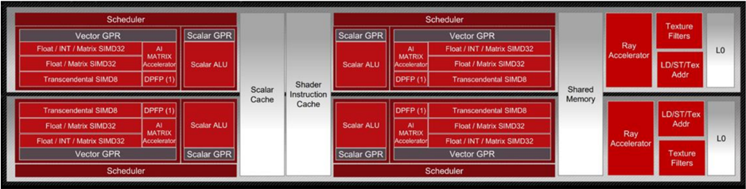
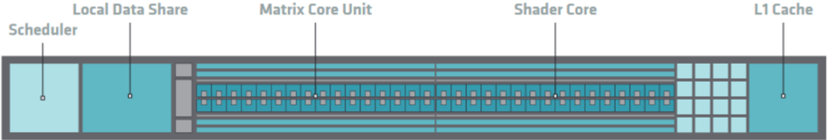
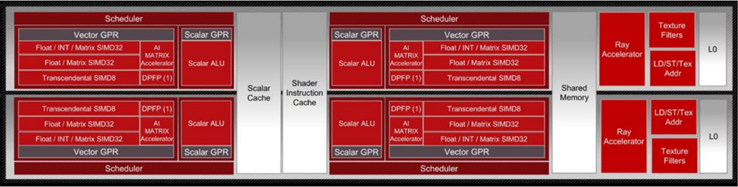
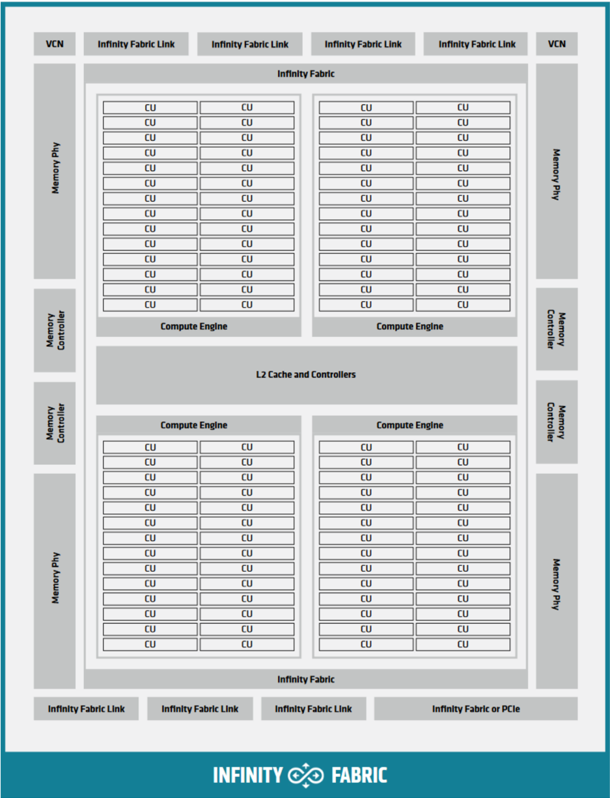

HIP Documentation Release 6.1.40092
Advanced Micro Devices, Inc.
Sep 13, 2024
INSTALL
| 1 Overview | 3 | |||
|---|---|---|---|---|
| Install HIP | ||||
| 2 | 5 | |||
| 2.1 | Prerequisites . . . . . . . . . | 5 | ||
| 2.2 | Installation . . . | 5 | ||
| 2.3 | . . . . . Verify your installation . . . | 6 | ||
| 3 | Build HIP from source | 7 | ||
| 3.1 Prerequisites | . . . . . . | |||
| . . | 7 | |||
| 3.2 Building the HIP runtime 3.3 . . | . | 7 | ||
| Build HIP tests . . . | 10 | |||
| . . . 3.4 Run HIP . . . . . . . . . . . | 11 | |||
| 4 | HIP programming model | 13 | ||
| 4.1 | 13 | |||
| 4.2 | RDNA &CDNAarchitecture summary Heterogeneous Programming . . | 14 | ||
| Single instruction multiple threads (SIMT) . . . | 14 | |||
| 4.3 4.4 | Inherent thread model . . | 15 | ||
| 4.5 | . . . . 4.4.1 Cooperative groups thread | 16 | ||
| Memory model . . . . . . . . . | 16 | |||
| 4.6 Execution model . | . . . . . | 17 | ||
| 4.6.1 Host-side | ||||
| execution | 17 17 | |||
| 4.6.2 | Device-side execution . . | |||
| 4.6.3 | Kernel launch . | 18 | ||
| 5 | Hardware implementation | 19 | ||
| Compute units | . . . . . . . | 19 | ||
| . . . . . | 20 | |||
| 5.1 | 5.1.1 5.1.2 | SIMD . . Vector cache . . | 20 | |
| 5.1.3 | . . Local data share . . | 20 | ||
| 5.1.4 | Scalar Unit . . . . | 20 | ||
| 5.2 CDNA architecture . | . . . . | 20 | ||
| 5.3 RDNA architecture . . | . . . . | 21 | ||
| 5.4 Shader engines . . | . . . . | 21 | ||
| (CLR) | ||||
| 6 | AMDcommon language runtimes | 23 | ||
| 6.1 Project organization | . . . . | 23 | ||
| How to build/install . | . . . | 23 | ||
| 6.2 | 6.2.1 | Prerequisites . . . | 23 | |
| 6.2.2 | Linux . . . . . . . | 23 | ||
| 6.2.3 | Test . . . . . . . . | 24 | ||
| 6.2.4 | Release notes . . . . . . . . . . . . . . . . . . . . . | 24 | ||
| HIP programming manual | 25 | |||
|---|---|---|---|---|
| 7 7.1 | Host Memory . . . . . | . . . . . . . . . . . . . . . . . . . . . | 25 | |
| 7.1.1 | Introduction . . . . . . . . . . . . . . . | 25 | ||
| 7.1.2 | . . . . . . . Memory allocation flags . . . . . . . . . | 25 | ||
| 7.1.3 | . . . . . . Numa-aware host memory allocation . . . . . . . . . | 26 | ||
| 7.1.4 | Coherency Controls . . . . . . . . . | 26 | ||
| 7.1.5 | . . . . . . . . . Visibility of Zero-Copy Host Memory . . . . . . . . | 27 | ||
| 7.1.6 | hipEventSynchronize . . . . . . . . . . . | 27 | ||
| 7.1.7 | . . . . Summary and Recommendations . . . . . . . . . . . | 27 | ||
| 7.1.8 | Managed memory allocation . . . . . . . . . . . . . | 28 | ||
| 7.1.9 | HIP Stream Memory Operations . . . . . . . . . . . | 28 | ||
| 7.2 | Direct Dispatch . . . . . . | . . . . . . . . . . . . . . . . . . . | 28 | |
| 7.3 | HIP Runtime Compilation | . . . . . . . . . . | 29 | |
| 7.4 | . . . . . . . . . HIP Graph . . . . . . . . . . . . . . . . . | . . . . . . . . . . | 29 | |
| 7.5 | Device-Side Malloc . . . . . . | . . . . . . . . . . . . . | 29 | |
| 7.6 | . . . Use of Per-thread default stream . . . | . . . . . . . . . . . . . | 29 | |
| 7.7 | Use of Long Double Type . . . . . | . . . . . . . . . . . . . . | 30 | |
| 7.8 | Use of _Float16 Type . . . . . . . | 30 | ||
| 7.9 | . . . . . . . . . . . . . . FMA and contractions . . . . . . . . . . . . . . . . . . . . . | 30 | ||
| 7.10 | Math functions with special rounding modes . . . . . . . . . . . . . . . . | . . . . . | 30 | |
| 7.11 | Creating Static Libraries . . . | . . . . . | 30 | |
| 8 HIP porting guide . . . . . . . . . . . | 33 | |||
| 8.1 | Porting a New CUDA Project . | . . . . . | 33 | |
| General Tips . . | ||||
| 8.1.1 | . . . . . . . . . . . . . . . . . . . | 33 | ||
| 8.1.2 | Scanning existing CUDA code to scope the porting effort 'in-place' . . . . . . . . . . | 33 34 | ||
| 8.1.3 | Converting a project . . | |||
| 8.1.4 | Library Equivalents . . . . . . . . . . . . . . . . . . | 35 35 | ||
| 8.2 | Distinguishing 8.2.1 | Compiler Modes . . . . . . . . . . . . . . . . Identifying HIP Target Platform . . . | 35 | |
| 8.2.2 | . . . . . . . . Identifying the Compiler: hip-clang or NVCC . . . | 36 | ||
| 8.2.3 | . Identifying Current Compilation Pass: Host or Device | 36 | ||
| 8.2.4 | Compiler Defines: Summary . . . . . . . . . . . . . . . | 37 | ||
| 8.3 | Identifying Architecture Features . . | . . . . . . . . . . . . . | 37 | |
| 8.3.1 | HIP_ARCH Defines . . . . . . . . . . . . . . . | 37 | ||
| 8.3.2 | Device-Architecture Properties . . . . . . . . . . . . | 38 | ||
| 8.3.3 | Table of Architecture Properties . . . . . . . . . . . . . . . . . . | 38 | ||
| 8.4 | Finding HIP . . . . . . . | . . . . . . . . . . . . | 39 40 | |
| 8.5 8.6 | Identifying HIP Runtime . . . . . hipLaunchKernelGGL . . . . . | . . . . . . . . . . . . . . . . . . . . . . . . . . . . . . | 40 | |
| 8.7 | Compiler Options . . . . . . . 8.7.1 Compiler options supported | . . . . . . . . . . . . . . . . | 40 | |
| on AMDplatforms . . . | 40 | |||
| 8.8 | Linking Issues . . . | . . . . . . . . . . . . . . . . . . . . | 41 | |
| . . 8.8.1 Linking With hipcc | . . . . . . . . . . . . . . . . . . | 41 | ||
| 8.8.2 | -lm Option . . . . . . . . . . . . . . . . . | 41 | ||
| 8.9 | . . . . . Linking Code With Other Compilers | . . . . . . . . . . . . . | 41 | |
| 8.9.1 libc++ and libstdc++ | ||||
| . . . . . . . . . . . . . . . . . | 41 | |||
| 8.9.2 | HIP Headers ( hip_runtime.h , hip_runtime_api.h Compiler . . . . . . . . . . . | 42 42 | ||
| 8.9.3 Using a Standard C++ 8.9.3.1 . . | . . . . . . . . . . . . | 42 | ||
| cuda.h . . . . . 8.9.4 Choosing HIP File Extensions . . | . . . . . . . . . . . . | 42 | ||
| 8.10 | Workarounds . . . . . . . . . . . . | . . . . . . . . . . . . | 43 | |
8.10.1
.
.
.
.
.
.
.
.
.
.
.
.
.
.
.
.
.
.
.
.
.
.
.
.
.
.
.
.
.
.
.
.
.
.
.
.
.
.
.
.
.
.
.
.
43
| warpSize | ||||||
|---|---|---|---|---|---|---|
| 8.10.2 Kernel launch with group size > 256 . . . . . . . . . . . . . . . . . . . . . | 43 | |||||
| 8.11 | memcpyToSymbol . . . . . . . . . . . . . . . . . . . . . . . . . . . . . . . . | 43 | ||||
| 8.12 | CU_POINTER_ATTRIBUTE_MEMORY_TYPE | . . . | 44 | |||
| 8.13 | threadfence_system . . . | . . . . . . . . | 45 | |||
| . . . . . . 8.13.1 Textures and Cache Control . . . | . . . . . . . . | 45 | ||||
| 8.14 | More Tips . . . . | . . . . . . . . . | 46 | |||
| 8.14.1 | . . . . . . . . . . . HIP Logging . . . . . . . . . | . . . . . . . . . | 46 | |||
| 8.14.2 | Debugging hipcc | . . . . . . . . . . . . . . . . | 47 | |||
| 8.14.3 | Editor Highlighting . . | . . . . . . . . . . . . . | 47 | |||
| 9 | Porting CUDA driver API | 49 | ||||
| 9.1 | Introduction to the CUDA Driver and Runtime APIs . . . . . . . . | 49 | ||||
| 9.1.1 | cuModule API . . . . . . . . . . . . . . | 49 | ||||
| 9.1.2 | . . . . . . . . . cuCtx API . . . . . . . . . . . . . . . . . . . . . . . . . | 50 | ||||
| 9.2 | HIP | Module and Ctx APIs . . . . . . . . . . . . . | . . . | 50 | ||
| 9.2.1 | hipModule API . . . . . . . . . . . . . . . . . . . . . . . . . . . | 50 | ||||
| 9.2.2 | . hipCtx API . . . . . . . . . . . . . . . . . . . . . . . . . . . . . . | 51 | ||||
| 9.2.3 | hipify translation of CUDA Driver API . . . . . . | 51 | ||||
| 9.2.3.1 | Address Spaces . . . . . . | 51 | ||||
| 9.2.3.2 | . . . . . . Using hipModuleLaunchKernel . . | 51 | ||||
| 9.2.3.3 | Additional Information | 51 | ||||
| 9.2.4 | . . . . . . . . . . . hip-clang Implementation Notes . . . . . . . . . . | 51 | ||||
| 9.2.4.1 | .hip_fatbin . . . . . . . . . . . . . | 51 | ||||
| 9.2.4.2 | Initialization and Termination Functions | 52 | ||||
| 9.2.4.3 | Kernel Launching | 52 | ||||
| 9.2.5 | . . . . . . . . . . . . . . . . . . NVCC Implementation Notes . . . . . . . . . . . . . . . . . | 52 | ||||
| . . . . 9.2.5.1 Interoperation between HIP and CUDA Driver . . . . . . . | 52 | |||||
| 9.2.5.2 Compilation Options . . . | . . . . . . | 53 | ||||
| 9.3 | HIP | Module and Texture Driver API . . . . | . . . . . . . | 55 | ||
| 10 | Programming for HIP runtime compiler (RTC) | 57 | ||||
| 10.1 | Example . . . . . . . . . . . . . . . . . . . . . . . . . . . . . . | 57 | ||||
| 10.2 | HIPRTC | specific options . . . . . . . . | . . . . . . . . . | 61 | ||
| 10.2.1 | Bitcode . . . . . . . . . . . . . . . . . . . . . . . . . . . . . . . . . . . | 62 | ||||
| 10.2.2 | CU Mode vs WGP mode . . . . . . | 62 | ||||
| 10.3 | Linker | APIs . . . . . . . . . . . . . . . . . . . . . . . . . . . . . . . | 62 | |||
| 10.3.1 | Example . . . . . . . . . . . . . . . . . . . . . . . . . . . . . . . . . | 63 63 | ||||
| 10.3.2 | 10.3.1.1 Note . . . . . . . . . . . . . . . . . . . . . . . . . . . . . . . Input Types . . . . . . . . . . . . . . . . . . . . . . . . . . . . . . . | 64 | ||||
| 10.3.3 | . Backward Compatibility of LLVM Bitcode/IR . . . . . . . . . . . . . . | 64 | ||||
| 10.3.4 | Link Options . . . . . . . . . . | . . . . . . . . | 64 | |||
| 10.4 | Error Handling . . . . . . . . . . . . . . . . . . . . . . . . . . . . . . | 65 | ||||
| 10.5 | HIPRTC General APIs . . . . . . . . . . . . . . . . . . . . . . . . . . . . . . . . . . | 65 | ||||
| 10.6 | Lowered Names (Mangled Names) . . . . . . . . . . . | 66 | ||||
| 10.6.1 10.6.2 | Note . . . . . . . . . . . . . . . . . . . . . . . . . . . Example . . . . . . . . . . . . . . . . . . . . . . . . . | 66 66 | ||||
| 10.7 | . . . . . . . . . . . | 67 | ||||
| 10.8 | Versioning . . . . . . . . . . . . . . . . . . . . . . . . . . . . . . . . . . . . . HIP header support . . . . . . . . . . . . . . . . . . . . . . . . . . . . . . . . . | 68 | ||||
| 10.9 | Deprecation notice . . . . . . . . . . . . . . . . . . . . . . . . . . . . . . . . . | 68 | ||||
| 11 | 69 | |||||
| 11.1 | Performance guidelines Parallel | execution | . . . . . . . . . . . . . . . . . . . . . | 69 | ||
11.1.2
Device level
.
.
.
.
.
.
.
.
.
.
.
.
.
.
.
.
.
.
.
.
.
.
.
.
.
.
.
.
.
.
.
.
.
.
.
.
.
.
.
.
.
.
.
69
| 11.1.3 | Multiprocessor level . . . . . . . . . . . . . . | 70 | ||
| 11.2 | Memory | optimization . . . . . . . . . . . . | 70 | |
| 11.2.1 | Data Transfer . . . . . . . . . . . . . | 70 | ||
| 11.2.2 | . . Device Memory Access . . . . . . . . . . | 71 | ||
| 11.3 | Optimization for maximum instruction throughput | 71 | ||
| 11.3.1 | Arithmetic instructions . . . . . . . . . | 72 | ||
| 11.3.2 | . Control flow instructions . . . . . . . . . | 72 | ||
| 11.3.3 | Synchronization . . . . . . . . . . | 72 | ||
| 11.4 | . . . . Minimizing memory thrashing . | . . . . . . . . . . | 73 | |
| 12 Debugging with HIP | 75 | |||
| 12.1 | Tracing . . | . . . . . . . . . . . . . . . . . . . . . | 75 | |
| 12.2 | Debugging . . . . . . | . . . . . . . . | 77 | |
| . . . . . . . 12.2.1 Debugging HIP applications | . . . . . . . | 77 | ||
| 12.3 | Useful environment variables | . . . . . . . | 79 | |
| 12.3.1 | . . . . Kernel enqueue serialization . . . . . . . | 79 | ||
| 12.3.2 | Making device visible . . . . . . . . . . . | 79 | ||
| 12.3.3 | Dump code object . . | 79 | ||
| 12.3.4 | . . . . . . . . . . . HSA-related environment variables (Linux) | 80 | ||
| 12.3.5 HIP environment variable summary . . | . | 80 | ||
| 12.4 | General debugging tips . . . | . . . . . . . . . . . . | 82 | |
| 13 Logging HIP activity | 83 | |||
| 13.1 | Logging level . . . . . . . . | . . . . . . . . . . . . | 83 | |
| 13.2 | Logging mask . . . . . | . . . | 84 | |
| 13.3 | . . . . . . . . . . . Logging command . . . . . . . . . . . . . . | . . . | 84 | |
| 13.4 | Logging examples . . . . . . | . . . . . . . . . . . | 85 | |
| 14 Cooperative groups . . . . . . . . . . . . | 89 | |||
| 14.1 | Cooperative groups thread model . . . | 89 | ||
| 14.2 | Group types . . . . . . . . group | . . . . . . . . . | 90 | |
| 14.2.1 | Thread-block . . . . . . . . . . . . . | 90 | ||
| 14.2.2 | Grid group . . . . . . . . . . . . . . | 90 | ||
| 14.2.3 | . Multi-grid group . . . . . . . . . . . . . | 90 | ||
| 14.2.4 14.2.5 | Thread-block tile . . . . . . . . . . . . . Coalesced groups . . . . . . . . . . . . . | 91 91 | ||
| 14.3 | Cooperative groups simple example . . | . . . . . . | 92 | |
| 14.4 | Synchronization . . . . . . | . . . . . . . . | 94 | |
| 14.5 | . . . . | . . . . | 97 | |
| Unsupported NVIDIA CUDA features . . . | ||||
| 15 Unified memory | 99 | |||
| 15.1 | Unified memory . . . | . . . . . . . . . . . . . . . | 99 99 | |
| 15.2 | System requirements . . . . . | . . . . . . . . . . . | 100 | |
| 15.3 | Unified memory programming models | . . . . . . | ||
| 15.3.1 | Checking unified memory management support | 100 | ||
| 15.3.2 Example for unified memory management | 101 | |||
| 15.4 | Using unified memory management (UMM) | . . . | 104 | |
| 15.5 | Unified memory HIP runtime hints . . . . . | for the better performance | 104 | |
| 15.5.1 | Data prefetching . . . . . . . . . | 105 | ||
| 15.5.2 | Memory advice . . . . . . . . . . . . . . | 106 107 | ||
| 15.5.3 15.5.4 | Memory range attributes . . . . . . . . . Asynchronously attach memory to a stream | 108 | ||
| 16 Virtual memory management | 109 | |||
| 16.1 | Memory allocation . . . . . . . . . . . . . . . . . . . . . . . . . . . . . . . . . . . . . 16.1.1 | . . . 109 . . . |
| Allocate physical memory . . . . . . . . . . . . . . . . . . . . . . . . . . . . | 109 | |
| 16.1.2 | Reserve virtual address range . . . . . . . . . . . . . . . . . . . . . . . . . . . | . . . 110 |
| 16.1.3 | Set memory access . . . . . . . . . . . . . . . . . . . . . . . . . . . . . . . . | . . . 110 |
| Free virtual memory . . . . . . . . . . . . . . . . . . . . . . . . . . . . . . . | . . . 110 | |
| 16.2 | 16.1.4 Memory usage . . . . . . . . . . . . . . . . . . . . . . . . . . . . . . . . . . . . . . . | . . . 111 |
| 16.2.1 Dynamically increase allocation size . . . . . . . . . . . . . . . . . . . . . . . | . . . 111 | |
| 17 Frequently asked questions | 113 | |
| 17.1 | What APIs and features does HIP support? . . . . . . . . . . . . . . . . . . . . . . . . . . . . . . . . . . | . . . 113 |
| 17.2 | What is not supported? . . . . . . . . . . . . . . . . . . . . . . . . . | . . . 113 |
| 17.2.1 Runtime/Driver API features . . . . . . . . . . . . . . . . . . . . . . . . . . . | . . . 113 | |
| 17.2.2 Kernel language features . . . . . . . . . . . . . . . . . . . . . . . . . . . . . | . . . 114 | |
| 17.3 Is | HIP a drop-in replacement for CUDA? . . . . . . . . . . . . . . . . . . . . . . . . . | . . . 114 |
| 17.4 | What specific version of CUDA does HIP support? . . . . . . . . . . . . . . . . . . . . | . . . 114 |
| 17.5 | What libraries does HIP support? . . . . . . . . . . . . . . . . . . . . . . . . . . . . . | . . . 115 |
| 17.6 | How does HIP compare with OpenCL? . . . . . . . . . . . . . . . . . . . . . . . . . . | . . . 115 |
| 17.7 | How does porting CUDA to HIP compare to porting CUDA to OpenCL? . . . . . . . . . . . . . . . . . . . . . . . . . . . . . | . . . 115 |
| 17.8 | What hardware does HIP support? . . . . . . . . | . . . 116 |
| 17.9 | Do HIPIFY tools automatically convert all source code? . . . . . . . . . . . . . . . . . . . . . . . . . . . . . . . . . . . . . | . . . 116 |
| 17.10 | What is NVCC? . . . . . . . . . . . . . . . . | . . . 116 |
| 17.11 | . . What is HIP-Clang? . . . . . . . . . . . . . . . . . . . . . . . . . . . . . . . . . . . . | . . . 116 |
| 17.12 | Why use HIP rather than supporting CUDA directly? . . . . . . . . . . . . . . . . . . . | . . . 116 117 |
| 17.13 | Can I develop HIP code on an NVIDIA CUDA platform? . . . . . . . . . . . . . . . . Can I develop HIP code on an AMDHIP-Clang platform? . . . . . . . . . . . . . . . . | . . . . . . 117 |
| 17.14 | How to use HIP-Clang to build HIP programs? . . . . . . . . . . . . . . . . . . . . . . . . . . | . . . 117 |
| 17.15 | . . . . . . . . . . . . . . | |
| 17.16 17.17 | What is AMDclr? . . . . . . . . . . . . . . . . . . . What is hipother? . . . . . . . . . . . . . . . . . . . . . . . . . . . . . . . . . . . . . . | . . . 117 . . . 118 |
| 17.18 | Can I get HIP open source repository . . . . . . . . . . . . . . . . | . . . 118 |
| 17.19 | for Windows? . . . Can a HIP binary run on both AMDand NVIDIA platforms? . | . . . 118 |
| 17.20 or | . . . . . . . . . . . . . On HIP-Clang, can I link HIP code with host code compiled with another compiler such clang? . . . . . . . . . . . . . . . . . . . . . . . . . . . . . . . . . . . . . . . . . . | icc, . . . 118 |
| 17.21 | Can HIP API support C style application? What is the difference between C and C++? . . | . . . 118 |
| 17.22 | Can I install both CUDA SDK and HIP-Clang on the same machine? . . . . . . . . . | . . . 119 |
| 17.23 | HIP detected my platform (HIP-Clang vs NVCC) incorrectly * what should I do? . . . . . . . . . . . . . . . | . . . 119 |
| 17.24 | On CUDA, can I mix CUDA code with HIP code? . . . . . . . . . . . . . . | . . . 120 |
| 17.25 | How do I trace HIP application flow? . . . . . . . . . . . . . . . . . . . . . . | . . . 120 |
| 17.26 | What are the maximum limits of kernel launch parameters? . . . . . . . . . . . . . . . | . . . 120 |
| 17.27 | Are __shfl_*_sync functions supported on HIP platform? . . . . . . . . . . . . . . . | . . . 120 |
| 17.28 | How to create a guard for code that is specific to the host or the GPU? . . . . . . . . . . | . . . 120 |
| 17.29 | Why _OpenMP is undefined when compiling with -fopenmp ? . . . . . . . . . . . . . . | . . . 121 |
| 17.30 | Does the HIP-Clang compiler support extern shared declarations? . . . . . . . . . . . . | . . . 121 code |
| 17.31 | I have multiple HIP enabled devices and I am getting an error hipErrorSharedObjectInitFailed with the message 'Error: shared object initialization failed'? . . . . . . . . . . . . . . . . . . . . . . . . . . . . . . . . . . . . . . . . . . . | . . . 121 |
| 17.32 | How to use per-thread default stream in HIP? . . . . . . . . . . . . . . . . . . . . . . . | . . . 122 |
| 17.33 | How to use complex multiplication and division operations? . . . . . . . . . | . . . 122 |
| 17.34 | . . . . . . Can I develop applications with HIP APIs on Windows the same on Linux? . . . . . . . . . . . . . . . . . . . . . . . . . . . . . | . . . 122 |
| 17.35 | Does HIP support LUID? . . . . . . . . . . . | . . . 123 |
| 17.36 | How can I know the version of HIP? . . . . . . . . . . . . . . . . . . . . . . . . . . . . | . . . 123 |
| 18 HIP Runtime 18.1 Related | API Reference Pages . . . . . . . . . . . . . . . . . . . . . . . . . . . . . . . . . . . . . . . . | 125 . . . 126 |
18.3
Namespaces
.
.
.
.
.
.
.
.
.
.
.
.
.
.
.
.
.
.
.
.
.
.
.
.
.
.
.
.
.
.
.
.
.
.
.
.
.
.
.
.
.
.
.
.
.
.
.
126
| 18.3.1 | Namespace List . . . . . . . . . . . . . . . . . . . . . . . . . . . . . . . . . | 126 | |||
| 18.3.2 | Namespace Members . . . . . . . . . . . . . . | 126 | |||
| 18.3.2.1 Namespace Members . . . . . | 126 | ||||
| 18.3.2.2 Namespace Members . | 126 | ||||
| 18.4 | . . . . . Data Structures . . . . . . . . . . . . . . . . . . . | 126 | |||
| 18.4.1 Data | Structures . . . . . . . . | . . | 126 | ||
| 18.4.2 | . . . Data Structure Index . . . . . . . . | 126 | |||
| 18.4.3 | . . . Class Hierarchy . . . . . . . . . . . . . . | 126 | |||
| 18.4.4 | . . Data Fields . . . . . . . . . . . . . . . . . . | 126 | |||
| 18.4.4.1 All . . . . . . . . . . . . . . | . | 126 | |||
| 18.4.4.1.1 | Data Fields . . . . . | 126 | |||
| 18.4.4.1.2 | Data Fields . . . . . | 126 | |||
| 18.4.4.1.3 | Data Fields . . . . . | 126 | |||
| 18.4.4.1.4 | Data Fields . . . . . | 126 | |||
| 18.4.4.1.5 | Data Fields . . . . . | 126 | |||
| 18.4.4.1.6 | Data Fields . . . . | 126 | |||
| 18.4.4.1.7 | . Data Fields . . . . . . | 126 | |||
| 18.4.4.1.8 | Data Fields . . . . | 126 | |||
| 18.4.4.1.9 | Data Fields . . . . . . . | 126 | |||
| 18.4.4.1.10 | Data Fields . . . | 126 | |||
| 18.4.4.1.11 | Data Fields . . . . . . . | 126 | |||
| 18.4.4.1.12 | Data Fields . . . | 126 | |||
| 18.4.4.1.13 | Data Fields . . . . . Data Fields . | 126 | |||
| 18.4.4.1.14 | . . . . Data Fields | 126 | |||
| 18.4.4.1.15 | . . . . . . | 126 | |||
| 18.4.4.1.16 | Data Fields . . . . | 126 | |||
| 18.4.4.1.17 | Data Fields . . . . . | 126 | |||
| 18.4.4.1.18 | Data Fields . . . . . | 126 | |||
| 18.4.4.1.19 | Data Fields . . . . . | 126 | |||
| 18.4.4.1.20 | Data Fields . . . . . . | 126 | |||
| 18.4.4.1.21 | Data Fields . . . . | 126 | |||
| 18.4.4.1.22 | Data Fields . . . . . | 126 | |||
| 18.4.4.1.23 | Data Fields . . . . . | 126 | |||
| 18.4.4.1.24 | Data Fields . . . . | 126 | |||
| 18.4.4.1.25 | . Data Fields . . . . . | 126 126 | |||
| 18.4.4.2 Data Fields - Functions . . . . . . . . . . . . . 18.4.4.3 Variables . . . . . . . . . . . . . . . . . . . . . | 126 | ||||
| 18.4.4.3.1 | Data Fields - Variables | 126 | |||
| 18.4.4.3.2 | Data Fields - Variables | 126 | |||
| 18.4.4.3.3 | Data Fields - Variables | 126 | |||
| 18.4.4.3.4 | Data Fields - Variables | 126 | |||
| 18.4.4.3.5 | Data Fields - Variables | 126 | |||
| 18.4.4.3.6 | Data Fields - Variables | 126 | |||
| 18.4.4.3.7 | Data Fields - Variables | 126 | |||
| 18.4.4.3.8 | Data Fields - Variables | 126 | |||
| 18.4.4.3.9 | Data Fields - Variables | 126 | |||
| 18.4.4.3.10 | Data Fields - Variables | 126 | |||
| 18.4.4.3.11 | Data Fields - Variables | 126 | |||
| 18.4.4.3.12 | Data Fields - Variables | 126 | |||
| 18.4.4.3.13 | Data Fields - Variables | 126 | |||
| 18.4.4.3.14 18.4.4.3.15 | Data Fields - Variables Data Fields - Variables | 126 126 | |||
| 18.4.4.3.16 | Data Fields - Variables | 126 | |||
18.4.4.3.17
Data Fields - Variables
.
.
.
.
.
.
.
.
.
.
.
.
.
.
.
.
.
.
.
.
.
.
.
.
.
.
.
126
| 18.4.4.3.18 | Data Fields - Variables | . . . . . . . . . . . . . . . . . . . . . . . . . . . . . . . . . | 126 | |||
| 18.4.4.3.19 | Data Fields - Variables | . . . . . . . . . . . . . . . . . . . . . | 126 | |||
| 18.4.4.3.20 | Data Fields - | Variables . . . . . . . . . . . . . . . . . . . . . . . . . . . . . . . . | 126 | |||
| 18.4.4.3.21 | Data Fields - Variables | . . . . . . . . . . . . . . . . . . . . . . | 126 | |||
| 18.4.4.3.22 | Data | Fields - Variables . . . . . . . . . . . . . . . . . . . . . | 126 | |||
| 18.4.4.3.23 | Data Fields - | . . . . . . Variables . . . . . . . . . . . . . . . . . . . . . . . . . . . | 126 | |||
| 18.4.4.3.24 | Data | Fields - Variables . . . . . . . . . . . . . . . . . . . . . . . . . . . | 126 | |||
| 18.4.4.3.25 | Data | Fields - Variables . . . . . . . . . . . . . . . . . . . . . . . . . . . | 126 | |||
| 18.5 | 18.4.4.4 Data Fields - Related Symbols . . | . . . . . . . . . | . . . . . . . . . . . . . . . . . . . . . . . . . . 126 . . . . . . . . . | 126 | ||
| Files 18.5.1 | File List . . . . . | . . . . . . . . . . . . . . | . . . . . . . . . . . . . . . . . . . . . . . . . . . . . . . . . . . . . . . . . . . . . . . . . . . . . . . . . . . | 126 | ||
| 18.5.2 | Globals . . . | . . . . . . . . | . . . . . . . . . . . . . . . . . . . . . . . . . . . . . . . . . | 126 | ||
| 18.5.2.1 All . . | . . . . . . . . . . | . . . . . . . . . . . . . . . . . . . . . . . . . . . . . . . | 126 | |||
| 18.5.2.1.1 | Globals . . . . | . . . . . . . . . . . . . . . . . . . . . . . . . . . . . . . | 126 | |||
| 18.5.2.1.2 | Globals . . . . | . . . . . . . . . . . . . . . . . . . . . . . . . . . . . . . | 126 | |||
| 18.5.2.1.3 | Globals . . . . | . . . . . . . . . . . . . . . . . . . . . . . . . | 126 | |||
| 18.5.2.1.4 | Globals . . . . | . . . . . . . . . . . . . . . . . . . . . . . . . . . . . . . . . . . . . | 126 | |||
| 18.5.2.1.5 | Globals . . . . | . . . . . . . . . . . . . . . . . . . . . . . . . . . . . . . | 126 | |||
| 18.5.2.1.6 | Globals . . . . | . . . . . . . . . . . . . . . . . . . . . . . . . . . . . . . | 126 | |||
| 18.5.2.1.7 | Globals . . . . | . . . . . . . . . . . . . . . . . . . . . . . . . . . . . . | 126 | |||
| 18.5.2.1.8 | Globals . . | . . . . . . . . . . . . . . . . . . . . . . . . . . . . . . . | 126 | |||
| 18.5.2.1.9 | Globals | 126 | ||||
| . . | . . . . . . . . . . . . . . . . . . . . . . . . . . . . . . . . . . . . | 126 | ||||
| 18.5.2.2 Functions 18.5.2.2.1 | . . . . . . . Globals . . . | . . . . . . . . . . . . . . . . . . . . . . . . . . . . . . . . . . . . . . . . . . . . . . . . . . . . . . . . . . . . . . . . | 126 | |||
| 18.5.2.2.2 | Globals . . | . . . . . . . . . . . . . . . . . . . . . . . . . . . . . . . | 126 | |||
| 18.5.2.2.3 | Globals . . | . . . . . . . . . . . . . . . . . . . . . . . . . . . . . . . . . . | 126 | |||
| 18.5.2.3 Globals | . . . . . . . | . . . . . . . . . . . . . . . . . . . . . . . . . . . . . . . . . . | 126 | |||
| 18.5.2.4 Globals | . . . . . . . | . . . . . . . . . . . . . . . . . . . . . . . . . . . . . . . . . | 126 | |||
| . . . . . . | . . . . . . . . . . . . . . . . . . . . . . . . . . . . . . . . . . . . . | 126 | ||||
| 18.5.2.5 Globals | Enumerator . . . . . . | . . . . . . . . . . . . . . . . . . . . . . . . . . . . . . . . | 126 | |||
| 18.5.2.6 18.5.2.6.1 | Globals . . . . | . . . . . . . . . . . . . . . . . . . . . . . . . . . . . . . | 126 | |||
| 18.5.2.6.2 | Globals . | . . . . . . . . . . . . . . . . . . . . . . . . . . . . . . | 126 | |||
| Globals | . | . . . . | ||||
| 18.5.2.7 | . . . . . . | . . . . . . . . . . . . . . . . . . . . . . . . . . . . . . . . . . | 126 | |||
| C++ language extensions | 127 | |||||
| 19.1 | Function-type | qualifiers | . . . . . . . . . . | . . . . . . . . . . . . . . . . . . . . . . . . . . . . . . . | 127 127 | |
| 19.1.1 | __device__ . . | . . . . . . . . . . . . . . | . . . . . . . . . . . . . . . . . . . . . . . . . . . . . . . . . . . . . . . . . . . . . . . . . . . . . . . . . . . . . . | 128 | ||
| 19.1.2 | __global__ | . . . . . . | ||||
| 19.1.3 | __host__ . . . | . . . . . . . . . . | . . . . . . . . . . . . . . . . . . . . . . . . . . . . . . . | 128 | ||
| 19.2 19.3 | Calling __global__ functions . . . . . | . . . . | . . . . . . . . . . . . . . . . . . . . . . . . . . . . . . . . . . . . . . . . . . . . . . . . . . . . . . . . . . . . . . | 128 129 | ||
| 19.4 | Kernel launch example . . . . . . . . Variable type qualifiers . . . . . . . . | . . | . . . . . . . . . . . . . . . . . . . . . . . . . . . . . . . | 130 | ||
| . | 130 | |||||
| 19.4.1 | __constant__ | . . . . . . . . . . | . . . . . . . . . . . . . . . . . . . . . . . . . . . . . . . . | |||
| 19.4.2 | __shared__ . | . . . . . . . . . . | . . . . . . . . . . . . . . . . . . . . . . . . . . . . . . | 130 | ||
| 19.4.3 | __managed__ . | . . . . . . . . . . | . . . . . . . . . . . . . . . . . . . . . . . . . . | 130 | ||
| 19.4.4 | __restrict__ | . . . . . . . . . | . . . . . . . . . . . . . . . . . . . . . . . . . . . . . . . . . . . . | 130 | ||
| 19.5 | . Built-in variables . . . . . . . . . . . | . . | . . . . . . . . . | 130 | ||
| 19.5.1 | Coordinate built-ins | . . . . . . . | . . . . . . . . . . . . . . . . . . . . . . . . . . . . . . . . . . . . . . . . . . . . . . . . . . . . . . . | 130 | ||
| 19.5.2 | warpSize . . . | . . . . . . . . . . | . . . . . . . . . . . . . . . . . . . . . . . . . . . . . . . | 131 | ||
| 19.6 | Vector types . . . . . . . . . . . . . . . . . . . . . . . . . . . . . . . . | . . . . . . . . . | 131 | |||
| 19.6.1 | Short vector types | . . . . . . | . . . . . . . . . . . . . . . . . . . . . . . . . . . . . . . . . . . . . . . . | 131 | ||
| 19.7 | 19.6.2 dim3 . . . . . . . . . . . . . . . . . . Memory fence instructions . . . . . . . . . . . | . . . . . . . . . . . . . . . . . . . . . . . . . . . . . . . . . . . . . . . . . . . . . . . . . . . . . . . . . . 132 | 132 | |||
19.8
Synchronization functions
.
.
.
.
.
.
.
.
.
.
.
.
.
.
.
.
.
.
.
.
.
.
.
.
.
.
.
.
.
.
.
.
.
.
.
.
.
.
.
.
132
| . | . . | ||
|---|---|---|---|
| 19.9 | Math | functions . . . . . . . . . . . | 132 |
| 19.10 | Texture | functions . . . . . . . . . . . . . | 133 |
| 19.11 | Surface | functions . . . . . . . . . . . . . | 133 |
| 19.12 | Timer | functions . . . . . . . . . . . . . . | 137 |
| 19.13 | Atomic | functions | 138 |
| 19.13.1 | . . . . . . . . . . . . . Unsafe floating-point atomic RMWoperations | 139 | |
| 19.14 | Warp cross-lane | functions . . | 140 |
| 19.14.1 | . . . . . . Warp vote and ballot functions . | 140 | |
| 19.14.2 Warp | match functions . . . . . | 141 | |
| 19.14.3 | . Warp shuffle functions . . . . . | 142 | |
| 19.15 | Cooperative groups | functions . . . . . . | 142 |
| 19.16 | Warp matrix | functions . . . . . . . | 143 |
| 19.17 | Independent | . . . thread scheduling . . . . . . | 144 |
| 19.18 | Profiler | Counter Function . . . . . . . . | 144 |
| 19.19 | Assert . . . . . | . . . . . . . . . . . . . . | 144 |
| 19.20 | . . . . | printf . . . . . . . . . . . . . . | 144 |
| 19.21 | Device-Side Dynamic Global Memory Allocation . . . . . . . . | 145 | |
| 19.22 | __launch_bounds__ . . | 145 | |
| 19.22.1 | Compiler Impact . . . . . . . . | 145 | |
| 19.22.2 | CU and EU Definitions . . . . . | 146 146 | |
| 19.22.3 19.22.4 maxregcount | Porting from CUDA __launch_bounds . . . . . . . . . . | 146 | |
| 19.23 | Asynchronous Functions . . . . . . . . . | 147 | |
| 19.23.1 | Memory stream . . . . . . . . . | 147 | |
| 19.23.2 | Peer to peer . . . . . . | 163 | |
| 19.23.3 | . . . . . Memory management . . . | 165 | |
| 19.23.4 | . . . External Resource Interoperability | 195 | |
| Register | Keyword . . . . . . . . . . . . . | 197 | |
| 19.24 | 19.25 Pragma | Unroll . . . . . . . . . . . . . | 198 |
| 19.26 | In-Line | Assembly . . . . . . . . . . . . | 198 |
| 19.27 | Kernel | Compilation . . . . . . . . . . . | 198 |
| 19.28 | |||
| gfx-arch-specific-kernel . . . . . . . . . | 199 | ||
| C++ language 20.1 | 20.1.1 | Modern C++ support . . . . . . . . . . . C++11 support . . . . . . . . . | 201 201 |
| 20.1.2 | C++14 support . . . . . . . . . | 202 | |
| 20.1.3 | C++17 support . . . . . . . . . | 202 | |
| 20.1.4 | C++20 support . . . . . . . . . | 202 | |
| 20.2 | Extensions | and restrictions . . . . . . . . | 202 |
| 20.2.1 | Global functions . . | 202 | |
| 20.2.2 | . . . . . . Device space memory specifiers . . . . | 202 | |
| 20.2.3 | Exception handling . . . . . | 203 | |
| 20.2.4 | Kernel parameters . . . . . . | 203 | |
| 20.2.5 | Classes . . . . | 203 | |
| 20.2.6 | . . . . . . . . . Polymorphic function wrappers . | 203 | |
| 20.2.7 | Extended lambdas . . . . . . . . | 203 | |
| Inline namespaces | |||
| 20.2.8 | . . . . . . . | 203 | |
| . | 205 | ||
| 21 HIP math | API | 205 | |
| 21.1 | Single precision mathematical functions . . . . Double precision mathematical functions . . . Integer . . . . | 215 | |
| 21.2 | intrinsics . . . . . . . . . . . . | ||
| 21.3 | 225 | ||
| 21.4 | Floating-point Intrinsics . . . . . . . . . . . . . . | 227 | ||
| 22 | Table | comparing syntax for different compute APIs | 231 | |
| 22.1 | Notes . . . . . . . . . . . . . . . . . . . . . . . . | 232 | ||
| 23 | HIP | Cooperative groups API | 233 | |
| 23.1 | Cooperative kernel launches . . . . . . . . . . . . | 233 | ||
| 23.2 | Cooperative groups classes . . . . . . . . . . . . . | 234 | ||
| 23.3 | Cooperative groups construct functions . . . . | 237 | ||
| 23.4 | . . Cooperative groups exposed API functions . . . . | 238 | ||
| 24 | HSA runtime API for ROCm | 241 | ||
| 25 | HIP managed memory allocation API | 247 | ||
| 26 | HIP virtual memory management API | 251 | ||
| 27 | HIP deprecated | runtime API functions | ||
|---|---|---|---|---|
| 257 | ||||
| 27.1 | Context management . . . . . . . . . . . . . . . . | 257 | ||
| 27.2 | Memory management . . . . . . . . . . . . . . . . . . | 258 | ||
| 27.3 | Profiler control . . . . . . . . . . . . . . . . | 258 | ||
| 27.4 | Texture management . . . . . . . . . . . . . . . . | 258 | ||
| 28 | SAXPY - Hello, HIP | 261 | ||
| 28.1 Prerequisites . . . . . . | . . . . . . . . . . . | 261 | ||
| . . . 28.2 Heterogeneous programming | . . . . . . . . . | 261 | ||
| . . 28.3 Your first lines of HIP code . . . | . . . . . . | 261 | ||
| . . . 28.4 Compiling on the command line . . . . | . . . . . . | 263 | ||
| 28.4.1 Setting up the command line | . . . . . . . | 263 | ||
| 28.4.2 | Invoking the compiler manually . . . . . | 266 | ||
| 29 | Reduction | 273 | ||
| 29.1 The algorithm . . . 29.2 | . . . . . . . . . . . . . . . . | 273 | ||
| Reduction on GPUs | . . . . . . . . . . . . . . . . | 273 | ||
| 29.2.1 Naive shared reduction | . . . . . . . . . . | 274 | ||
| 29.2.2 | Reducing thread divergence . . . . . . . . | 276 | ||
| 29.2.3 | Resolving bank conflicts . . . . . . . . . | 276 | ||
| 29.2.4 | Utilize upper half of the block . . . . . . . . . . . . . | 277 | ||
| 29.2.5 | Unroll all loops . . . . . . . | 281 | ||
| 29.2.6 | Communicate using warp-collective functions | 282 | ||
| 29.2.7 | Prefer warp communication over shared | 282 | ||
| 29.2.8 | . Amortize bookkeeping variable overhead | 284 | ||
| 29.2.8.1 Reading ItemsPerThread | . . . | 285 | ||
| 29.2.8.2 Processing ItemsPerThread | . . | 286 | ||
| 29.2.9 Two-pass reduction | . . . . . . . . . . . . | 286 | ||
| 29.2.10 Global data share | . . . . . . . . . . . . . | 286 | ||
| 29.3 Conclusion . . . . . | . . . . . . . . . . . . . . . . | 287 | ||
| 30 | Cooperative groups . | 289 | ||
| 30.1 Prerequisites | . . . . . . . . . . . . . . . . . . . | 289 | ||
| 30.2 Simple HIP Code | . . . . . . . . . . . . . . . . . . | 289 | ||
| Tiled partition | . . . . . . . | 289 | ||
| 30.3 . . . . . . . . . . . . 30.3.1 Device-side code . . . . . . | . . . | 290 | ||
| . . . . 30.3.1.1 1. Initialization of the reduction | 291 | |||
| function variables . . . 30.3.1.2 2. The reduction of thread block . . . . . . . . . . . . | 291 | |||
| 30.3.1.3 3. The reduction of custom partition . . . . . . . . . . . . . . . . . . . . . . . . . . | 291 | |
| 30.3.2 | Host-side code . . . . . . . . . . . . | 292 |
| 30.3.2.1 1. Confirm the cooperative group support on AMDGPUs 30.3.2.2 . . . . . | 292 | |
| 2. Initialize the cooperative group configuration . . . . . . . . . . . . . . . . . . . | 293 | |
| 30.3.2.3 Conclusion | 4. Launch the kernel . . . . . | 293 |
| 30.4 . | . . . . . . . . . . . . . . . . . . . . . . . . . . . . . | 293 |
| 31 License | 295 |
Index
297
The Heterogeneous-computing Interface for Portability (HIP) API is a C++ runtime API and kernel language that lets developers create portable applications for AMD and NVIDIA GPUs from single source code.
For HIP supported AMD GPUs on multiple operating systems, see:
- Linux system requirements
- Microsoft Windows system requirements
The CUDA enabled NVIDIA GPUs are supported by HIP. For more information, see GPU Compute Capability.
On the AMD ROCm platform, HIP provides header files and runtime library built on top of HIP-Clang compiler in the repository Common Language Runtimes (CLR) , which contains source codes for AMD's compute languages runtimes as follows,
On non-AMD platforms, like NVIDIA, HIP provides header files required to support non-AMD specific back-end implementation in the repository 'hipother', which translates from the HIP runtime APIs to CUDA runtime APIs.
Install
- Installing HIP
- Building HIP from source
Conceptual
- HIP programming model
- Hardware implementation
- AMD common language runtimes (CLR)
How to
- Programming manual
- HIP porting guide
- HIP porting: driver API guide
- Programming for HIP runtime compiler (RTC)
- Performance guidelines
- Debugging with HIP
- Logging HIP activity
- Unified memory
- Virtual memory
- Cooperative groups
- Frequently asked questions
Reference
- HIP Runtime API Reference
- C++ language extensions
- C++ language support
- HIP math API
- Comparing syntax for different APIs
- HSA runtime API for ROCm
- HIP managed memory allocation API
CHAPTER ONE
OVERVIEW
- HIP virtual memory management API
- HIP Cooperative groups API
- List of deprecated APIs
Tutorial
- HIP basic examples
- HIP examples
- HIP test samples
- SAXPY tutorial
- Reduction tutorial
- Cooperative groups tutorial
Known issues are listed on the HIP GitHub repository.
To contribute features or functions to the HIP project, refer to Contributing to HIP. To contribute to the documentation, refer to Contributing to ROCm docs page.
You can find licensing information on the Licensing page.
CHAPTER
TWO
INSTALL HIP
HIP can be installed on AMD (ROCm with HIP-Clang) and NVIDIA (CUDA with NVCC) platforms.
Note: The version definition for the HIP runtime is different from CUDA. On an AMD platform, the hipRuntimeGerVersion function returns the HIP runtime version; on an NVIDIA platform, this function returns the CUDA runtime version.
2.1 Prerequisites
AMD
Refer to the Prerequisites section in the ROCm install guides:
- System requirements (Linux)
- System requirements (Windows)
NVIDIA
Check the system requirements in the NVIDIA CUDA Installation Guide.
2.2 Installation
AMD
HIP is automatically installed during the ROCm installation. If you haven't yet installed ROCm, you can find installation instructions here:
- ROCm installation for Linux
- HIP SDK installation for Windows
By default, HIP is installed into /opt/rocm/hip .
Note: There is no autodetection for the HIP installation. If you choose to install it somewhere other than the default location, you must set the HIP_PATH environment variable as explained in Build HIP from source.
NVIDIA
- Install the NVIDIA driver.
sudo apt-get install ubuntu-drivers-common && sudo ubuntu-drivers autoinstall sudo reboot
Alternatively, you can download the latest CUDA Toolkit.
- Install the hip-runtime-nvidia and hip-dev packages. This installs the CUDA SDK and HIP porting layer.
| apt-get install hitall hip-runtime-nvidia hip-devThe default paths are:
- CUDA SDK: /usr/local/cuda
- HIP: /opt/rocm/hip
You can optionally add /opt/rocm/bin to your path, which can make it easier to use the tools.
2.3 Verify your installation
Run hipconfig in your installation path.
/opt/rocm/bin/hipconfig --full
CHAPTER
THREE
BUILD HIP FROM SOURCE
3.1 Prerequisites
HIP code can be developed either on AMD ROCm platform using HIP-Clang compiler, or a CUDA platform with nvcc installed. Before building and running HIP, make sure drivers and prebuilt packages are installed properly on the platform.
You also need to install Python 3, which includes the CppHeaderParser package. Install Python 3 using the following command:
| apt-get install python3Check and install CppHeaderParser package using the command:
| pip3 install CppHeaderParser3.2 Building the HIP runtime
Set the repository branch using the variable: ROCM_BRANCH . For example, for ROCm 6.1, use:
| export<_Bash_>AMD
- Get HIP source code.
Note: Starting in ROCM 5.6, CLR is a new repository that includes the former ROCclr, HIPAMD and OpenCl repositories. OpenCL provides headers that ROCclr runtime depends on.
Note: Starting in ROCM 6.1, a new repository hipother is added to ROCm, which is branched out from HIP. hipother provides files required to support the HIP back-end implementation on some non-AMD platforms, like NVIDIA.
<_Bash_>:lone -b "$ROCM_BRANCH" https://github.com/ROCm/clr.git
:lone -b "$ROCM_BRANCH" https://github.com/ROCm/hip.gitCLR (Common Language Runtime) repository includes ROCclr, HIPAMD and OpenCL.
ROCclr (Radeon Open Compute Common Language Runtime) is a virtual device interface which is defined on the AMD platform. HIP runtime uses ROCclr to interact with different backends.
HIPAMD provides implementation specifically for HIP on the AMD platform.
OpenCL provides headers that ROCclr runtime currently depends on. hipother provides headers and implementation specifically for non-AMD HIP platforms, like NVIDIA.
- Set the environment variables.
- Build HIP.
<_Bash_> cd "$CLR_DIR"
mkdir -p build; cd build
cmake -DHIP_COMMON_DIR=$HIP_DIR -DHIP_PLATFORM=amd -DCMAKE_PREFIX_PATH="/opt/rocm/"_
---DCMAKE_INSTALL_PREFIX=$PWD/install -DHIP_CATCH_TEST=0 -DCLR_BUILD_HIP=ON -DCLR_
--BUILD_OCL=OFF..
make -j$(nproc)
sudo make installNote: Note, if you don't specify CMAKE_INSTALL_PREFIX , the HIP runtime is installed at <ROCM_PATH>/hip .
By default, release version of HIP is built. If need debug version, you can put the option CMAKE_BUILD_TYPE=Debug in the command line.
Default paths and environment variables:
- HIP is installed into <ROCM_PATH>/hip . This can be overridden by setting the HIP_PATH environment variable.
•
HSA is in
<ROCM_PATH>/hsa
. This can be overridden by setting the
HSA_PATH
environment variable.
- Clang is in <ROCM_PATH>/llvm/bin . This can be overridden by setting the HIP_CLANG_PATH environment variable.
- The device library is in <ROCM_PATH>/lib . This can be overridden by setting the DEVICE_LIB_PATH environment variable.
- Optionally, you can add <ROCM_PATH>/bin to your PATH , which can make it easier to use the tools.
- Optionally, you can set HIPCC_VERBOSE=7 to output the command line for compilation.
After you run the make install command, make sure HIP_PATH points to $PWD/install/hip .
- Generate a profiling header after adding/changing a HIP API.
Whenyouadd or change a HIP API, you may need to generate a new hip_prof_str.h header. This header is used by ROCm tools to track HIP APIs, such as rocprofiler and roctracer .
To generate the header after your change, use the hip_prof_gen.py tool located in hipamd/src .
Usage:
<_PHP_> |
Flags:
- -v : Verbose messages
- -r : Process source directory recursively
- -t : API types matching check
- --priv : Private API check
- -e : On error exit mode
- -p : HIP_INIT_API macro patching mode
Example usage:
<_Bash_>NVIDIA
git clone -b "$ROCM_BRANCH" https://github.com/ROCm/clr.git
git clone -b "$ROCM_BRANCH" https://github.com/ROCm/hip.git
git clone -b "$ROCM_BRANCH" https://github.com/ROCm/hipother.git--- ---
1. Get the HIP source code.
git clone -b "$ROCM_BRANCH"
git clone -b "$ROCM_BRANCH"
git clone -b "$ROCM_BRANCH"
2. Set the environment variables.export CLR_DIR="$(readlink -f clr)"
export HIP_DIR="$(readlink -f hip)"
export HIP_OTHER="$(readlink -f hipother)"3. Build HIP.cd "$CLR_DIR"
mkdir -p build; cd build
cmake -DHIP_COMMON_DIR=$HIP_DIR -DHIP_PLATFORM=nvidia -DCMAKE_INSTALL_PREFIX=$PWD/
--install -DHIP_CATCH_TEST=0 -DCLR_BUILD_HIP=ON -DCLR_BUILD_OCL=OFF -DHIPNV_DIR=
--$HIP_OTHER/hipnv..
make -j$(nproc)
sudo make install3.3 Build HIP tests
AMD
- Build HIP catch tests.
git clone -b "$ROCM_BRANCH" https://github.com/ROCm/hip-tests.git | - npm -m -cos no-source.
export HIPTESTS_DIR="$(readlink -f hip-tests)"
cd "$HIPTESTS_DIR"
mkdir -p build; cd build
cmake../catch -DHIP_PLATFORM=amd -DHIP_PATH=$CLR_DIR/build/
--install # or any path where HIP is installed; for example: ``/
--opt/rocm``
make build_tests
ctest # run testsAMD
* Build HIP catch tests.
HIP catch tests are separate from the HIP project and use Catch2.
- Get HIP tests source code. - command: command.json.
cd "$HIPTESTS_DIR"
hipcc $HIPTESTS_DIR/catch/unit/memory/hipPointerGetAttributes.cc \
-I./catch/include./catch/hipTestMain/standalone_main.cc \
-I./catch/external/Catch2 -o hipPointerGetAttributes
./hipPointerGetAttributes
...
All tests passedNVIDIA
The commands to build HIP tests on an NVIDIA platform are the same as on an AMD platform. However, you must first set -DHIP_PLATFORM=nvidia .
3.4 Run HIP
After installation and building HIP, you can compile your application and run. A simple example is square sample.
FOUR
HIP PROGRAMMING MODEL
The HIP programming model makes it easy to map data-parallel C/C++ algorithms to massively parallel, wide single instruction, multiple data (SIMD) architectures, such as GPUs.
While the model may be expressed in most imperative languages, (for example Python via PyHIP) this document will focus on the original C/C++ API of HIP.
A basic understanding of the underlying device architecture helps you make efficient use of HIP and general purpose graphics processing unit (GPGPU) programming in general.
4.1 RDNA & CDNA architecture summary
GPUs in general are made up of basic building blocks called compute units (CUs), that execute the threads of a kernel. These CUs provide the necessary resources for the threads: the Arithmetic Logical Units (ALUs), register files, caches and shared memory for efficient communication between the threads.
This design allows for efficient execution of kernels while also being able to scale from small GPUs embedded in APUs with few CUs up to GPUs designed for data centers with hundreds of CUs. Figure Block Diagram of an RDNA3 Compute Unit. and Block Diagram of a CDNA3 Compute Unit. show examples of such compute units.
For architecture details, check Hardware implementation .

4.2 Heterogeneous Programming
The HIP programming model assumes two execution contexts. One is referred to as host while compute kernels execute on a device . These contexts have different capabilities, therefor slightly different rules apply. The host execution is defined by the C++ abstract machine, while device execution follows the SIMT model of HIP. These execution contexts in code are signified by the __host__ and __device__ decorators. There are a few key differences between the two:
- The C++ abstract machine assumes a unified memory address space, meaning that one can always access any given address in memory (assuming the absence of data races). HIP however introduces several memory namespaces, an address from one means nothing in another. Moreover, not all address spaces are accessible from all contexts.
- Looking at Block Diagram of an RDNA3 Compute Unit. and Block Diagram of a CDNA3 Compute Unit. , you can see that every CU has an instance of storage backing the namespace __shared__ . Even if the host were to have access to these regions of memory, the performance benefits of the segmented memory subsystem are supported by the inability of asynchronous access from the host.
- Not all C++ language features map cleanly to typical device architectures, some are very expensive (meaning slow) to implement on GPU devices, therefor they are forbidden in device contexts to avoid users tapping into features that unexpectedly decimate their program's performance. Offload devices targeted by HIP aren't general purpose devices, at least not in the sense that a CPU is. HIP focuses on data parallel computations and as such caters to throughput optimized architectures, such as GPUs or accelerators derived from GPU architectures.
- Asynchrony is at the forefront of the HIP API. Computations launched on the device execute asynchronously with respect to the host, and it is the user's responsibility to synchronize their data dispatch/fetch with computations on the device.
Note: HIP does perform implicit synchronization on occasions, more advanced than other APIs such as OpenCL or SYCL, in which the responsibility of synchronization mostly depends on the user.
4.3 Single instruction multiple threads (SIMT)
The SIMT programming model behind the HIP device-side execution is a middle-ground between SMT (Simultaneous Multi-Threading) programming known from multicore CPUs, and SIMD (Single Instruction, Multiple Data) programming mostly known from exploiting relevant instruction sets on CPUs (for example SSE/AVX/Neon).
A HIP device compiler maps SIMT code written in HIP C++ to an inherently SIMD architecture (like GPUs). This is done by scalarizing the entire kernel and issuing the scalar instructions of multiple kernel instances (called threads) to each of the SIMD engine lanes, rather than exploiting data parallelism within a single instance of a kernel and spreading identical instructions over the available SIMD engines.
Consider the following kernel:
__global__ void k(float4* a, const float4* b)
{
int tid = threadIdx.x;
int bid = blockIdx.x;
int dim = blockDim.x;
a[tid] += (tid + bid - dim) * b[tid];
}The incoming four-vector of floating-point values b is multiplied by a scalar and then added element-wise to the fourvector floating-point values of a . On modern SIMD-capable architectures, the four-vector ops are expected to compile to a single SIMD instruction. However, GPU execution of this kernel will typically break down the vector elements into 4 separate threads for parallel execution, as seen in the following figure:
Fig. 3: Instruction flow of the sample SIMT program.
In HIP, lanes of the SIMD architecture are fed by mapping threads of a SIMT execution, one thread down each lane of an SIMD engine. Execution parallelism usually isn't exploited from the width of the built-in vector types, but across multiple threads via the thread ID constants threadIdx.x , blockIdx.x , etc.
4.4 Inherent thread model
The SIMT nature of HIP is captured by the ability to execute user-provided device programs, expressed as single-source C/C++ functions or sources compiled online/offline to binaries, in bulk.
All threads of a kernel are uniquely identified by a set of integral values, called thread IDs. The set of integers identifying a thread relate to the hierarchy in which the threads execute.
The thread hierarchy inherent to how AMD GPUs operate is depicted in the following figure.
Fig. 4: Hierarchy of thread groups.
Warp (or Wavefront)
The innermost grouping of threads is called a warp, or a wavefront in ISA terms. A warp is the most tightly coupled groups of threads, both physically and logically. Threads inside a warp are also called lanes, and the integral value identifying them is the lane ID.
Tip: Lane IDs aren't queried like other thread IDs, but are user-calculated. As a consequence, they are only as multidimensional as the user interprets the calculated values to be.
The size of a warp is architecture dependent and always fixed. For AMD GPUs the wavefront is typically 64 threads, though sometimes 32 threads. Warps are signified by the set of communication primitives at their disposal, as discussed in Warp cross-lane functions .
The middle grouping is called a block or thread block. The defining feature of a block is that all threads in a block will share an instance of memory which they may use to share data or synchronize with one another.
The size of a block is user-configurable but is limited by the queryable capabilities of the executing hardware. The unique ID of the thread within a block is 3-dimensional as provided by the API. When linearizing thread IDs within a block, assume the 'fast index' being dimension x , followed by the y and z dimensions.
Block
Grid
The outermost grouping is called a grid. A grid manifests as a single dispatch of kernels for execution. The unique ID of each block within a grid is 3-dimensional, as provided by the API and is queryable by every thread within the block.
4.4.1 Cooperative groups thread model
The Cooperative groups API introduces new APIs to launch, group, subdivide, synchronize and identify threads, as well as some predefined group-collective algorithms, but most importantly a matching threading model to think in terms of. It relaxes some restrictions of the Inherent thread model imposed by the strict 1:1 mapping of architectural details to the programming model. Cooperative groups let you define your own set of thread groups which may fit your user-cases better than the defaults defined by the hardware.
Note: The implicit groups defined by kernel launch parameters are still available when working with cooperative groups.
For further information, see Cooperative groups.
4.5 Memory model
The hierarchy of threads introduced by the Inherent thread model is induced by the memory subsystem of GPUs. The following figure summarizes the memory namespaces and how they relate to the various levels of the threading model.
Fig. 5: Memory hierarchy.
Local or per-thread memory
Read-write storage only visible to the threads defining the given variables, also called per-thread memory. The size of a block for a given kernel, and thereby the number of concurrent warps, are limited by local memory usage. This relates to an important aspect: occupancy. This is the default memory namespace.
Shared memory
Read-write storage visible to all the threads in a given block.
Global
Read-write storage visible to all threads in a given grid. There are specialized versions of global memory with different usage semantics which are typically backed by the same hardware storing global.
Constant
Read-only storage visible to all threads in a given grid. It is a limited segment of global with queryable size.
Texture
Read-only storage visible to all threads in a given grid and accessible through additional APIs.
Surface
A read-write version of texture memory.
4.6 Execution model
HIP programs consist of two distinct scopes:
- The host-side API running on the host processor. There are two APIs available:
- -The HIP runtime API which enables use of the single-source programming model.
- -The HIP driver API which sits at a lower level and most importantly differs by removing some facilities provided by the runtime API, most importantly around kernel launching and argument setting. It is geared towards implementing abstractions atop, such as the runtime API itself. Offers two additional pieces of functionality not provided by the Runtime API: hipModule and hipCtx APIs. For further details, check HIP driver API.
- The device-side kernels running on GPUs. Both the host and the device-side APIs have synchronous and asynchronous functions in them.
Note: The HIP does not present two separate APIs link NVIDIA CUDA. HIP only extends the HIP runtime API with new APIs for hipModule and hipCtx .
4.6.1 Host-side execution
The part of the host-side API which deals with device management and their queries are synchronous. All asynchronous APIs, such as kernel execution, data movement and potentially data allocation/freeing all happen in the context of device streams.
Streams are FIFO buffers of commands to execute relating to a given device. Commands which enqueue tasks on a stream all return promptly and the command is executed asynchronously. All side effects of a command on a stream are visible to all subsequent commands on the same stream. Multiple streams may point to the same device and those streams may be fed from multiple concurrent host-side threads. Execution on multiple streams may be concurrent but isn't required to be.
Asynchronous APIs involving a stream all return a stream event which may be used to synchronize the execution of multiple streams. A user may enqueue a barrier onto a stream referencing an event. The barrier will block until the command related to the event does not complete, at which point all side effects of the command shall be visible to commands following the barrier, even if those side effects manifest on different devices.
Streams also support executing user-defined functions as callbacks on the host. The stream will not launch subsequent commands until the callback completes.
4.6.2 Device-side execution
The SIMT programming model behind the HIP device-side execution is a middle-ground between SMT (Simultaneous Multi-Threading) programming known from multicore CPUs, and SIMD (Single Instruction, Multiple Data) programming mostly known from exploiting relevant instruction sets on CPUs (for example SSE/AVX/Neon).
4.6.3 Kernel launch
Kernels may be launched in multiple ways all with different syntaxes and intended use-cases.
- Using the triple-chevron <<<...>>> operator on a __global__ annotated function.
- Using hipLaunchKernelGGL() on a __global__ annotated function.
Tip: This name by default is a macro expanding to triple-chevron. In cases where language syntax extensions are undesirable, or where launching templated and/or overloaded kernel functions define the HIP_TEMPLATE_KERNEL_LAUNCH preprocessor macro before including the HIP headers to turn it into a templated function.
- Using the launch APIs supporting the triple-chevron syntax directly.
Caution: These APIs are intended to be used/generated by tools such as the HIP compiler itself and not intended towards end-user code. Should you be writing a tool having to launch device code using HIP, consider using these over the alternatives.
HARDWARE IMPLEMENTATION
This chapter describes the typical hardware implementation of GPUs supported by HIP, and how the Inherent thread model maps to the hardware.
5.1 Compute units
The basic building block of a GPU is a compute unit (CU), also known as streaming multiprocessor (SM) on NVIDIA GPUs. The thread blocks making up a grid are scheduled for execution on CUs. Each block is assigned to an individual CU, and a CU can accommodate several blocks. Depending on their resource usage up to thousands of threads can reside on a CU.
CUs contain an array of processing elements, referred to as vector ALU (VALU), that execute the actual instructions of the threads according to the SIMT model , together with the necessary registers and caches.
The threads are executed in groupings called warps. The amount of threads making up a warp is architecture dependent. On AMD GPUs the warp size is commonly 64 threads, except in RDNA architectures which can utilize a warp size of 32 or 64 respectively. The warp size of supported AMD GPUs is listed in the Accelerator and GPU hardware specifications. NVIDIA GPUs have a warp size of 32.
In contrast to CPUs, GPUs generally do not employ complex cache structures or control logic, like branch prediction or out-of-order execution, but instead rely on massive hardware multithreading to hide latency.
Context switching between warps residing on a CU incurs no overhead, as the context for the warps is stored on the CU and does not need to be fetched from memory. If there are not enough free registers to accommodate all warps of a block, the block can not be scheduled to that CU and it has to wait until other blocks finish execution.
The amount of warps that can reside concurrently on a CU, known as occupancy, is determined by the warp's resource usage of registers and shared memory.
Fig. 1: An AMD Graphics Core Next (GCN) CU. The CDNA and RDNA CUs are based on variations of the GCN CU.
On AMD GCN GPUs the basic structure of a CU is:
- four Single Instruction Multiple Data units (SIMDs)
- a vector cache
- a local data share
- and a scalar unit
5.1.1 SIMD
A SIMD consists of a VALU, that executes the instruction of a warp, together with a register file, that provides the registers warps.
The size of the warp is inherently related to the width of the vector ALU of the SIMD. On GCN compute units the width of the VALU is 16, so a warp can be issued to a SIMD every 4 cycles. Since a CU has 4 SIMDs it issues one warp per cycle. The instructions of a warp are effectively executed in lock-step.
A SIMD always executes the same instruction for the whole VALU. If the control flow of a warp diverges, the performance is decreased, as the results for the threads that do not participate in that branch have to be masked out, and the instructions of the other branch have to be executed in the same way. The best performance can therefore be achieved when thread divergence is kept to a warp level, i.e. when all threads in a warp take the same execution path.
5.1.2 Vector cache
The usage of cache on a GPU differs from that on a CPU, as there is less cache available per thread. Its main purpose is to coalesce memory accesses of the warps in order to reduce the amount of accesses to device memory, and make that memory available for other warps that currently reside on the compute unit, that also need to load those values.
5.1.3 Local data share
The local data share is memory that is accessible to all threads within a block. Its latency and bandwidth is comparable to that of the vector cache. It can be used to share memory between the threads in a block, or as a software managed cache.
5.1.4 Scalar Unit
The scalar unit performs instructions that are uniform within a warp. It thereby improves efficiency and reduces the pressure on the vector ALUs and the vector register file.
5.2 CDNA architecture
The general structure of CUs stays mostly as it is in GCN architectures. The most prominent change is the addition of matrix ALUs, which can greatly improve the performance of algorithms involving matrix multiply-accumulate operations for int8, float16, bfloat16 or float32.

5.3 RDNA architecture
RDNA makes a fundamental change to CU design, by changing the size of a warp to 32 threads. This is done by effectively combining two GCN5 SIMDs, creating a VALU of width 32, so that a whole warp can be issued in one cycle. The CU is also replaced by the work group processor (WGP), which encompasses two CUs. For backwards compatibility the WGP can also run in wave64 mode, in which it issues a warp of size 64 in two cycles.
It also adds an extra layer of cache to the WGP, shared by the CUs within it. This cache is referred to as L1 cache, promoting the per-CU cache to an L0 cache.

5.4 Shader engines
For hardware implementation's sake, multiple CUs are grouped together into a Shader Engine or Compute Engine, typically sharing some fixed function units or memory subsystem resources.

CHAPTER
SIX
AMD COMMON LANGUAGE RUNTIMES (CLR)
CLRcontains source codes for AMD's compute languages runtimes: HIP and OpenCL ™ . CLR is the part of HIP runtime which is supported on the AMD ROCm platform, it provides a header and runtime library built on top of HIP-Clang compiler. For developers and users, CLR implements HIP runtime APIs including streams, events, and memory APIs, which is a object library that is linked with the application. The source codes for all headers and the library implementation are available on GitHub in the CLR repository.
6.1 Project organization
CLR includes the following source code,
- hipamd - contains implementation of HIP language on the AMD platform. It is hosted at clr/hipamd.
- opencl - contains implementation of OpenCL™ on AMD platform. It is hosted at clr/opencl.
- rocclr - contains common runtime used in HIP and OpenCL™ . This is hosted at clr/rocclr.
6.2 How to build/install
6.2.1 Prerequisites
Please refer to Quick Start Guide in ROCm Docs.
Building CLR requires rocm-hip-libraries meta package, which provides the pre-requisites for CLR.
6.2.2 Linux
- Clone this repository
- For OpenCL ™
* For HIP<_Bash_><_Haskell_>Users can also build OCL and HIP at the same time by passing -DCLR_BUILD_HIP=ON -DCLR_BUILD_OCL=ON to configure command.
For detail instructions, please refer to build HIP.
6.2.3 Test
hip-tests is a separate repository hosted at hip-tests.
To run hip-tests please go to the repository and follow the steps.
6.2.4 Release notes
HIP provides release notes in CLR change log, which has records of changes in each release.
7.1 Host Memory
7.1.1 Introduction
hipHostMalloc allocates pinned host memory which is mapped into the address space of all GPUs in the system, the memory can be accessed directly by the GPU device, and can be read or written with much higher bandwidth than pageable memory obtained with functions such as malloc() . There are two use cases for this host memory:
- Faster HostToDevice and DeviceToHost Data Transfers: The runtime tracks the hipHostMalloc allocations and can avoid some of the setup required for regular unpinned memory. For exact measurements on a specific system, experiment with --unpinned and --pinned switches for the hipBusBandwidth tool.
- Zero-Copy GPU Access: GPU can directly access the host memory over the CPU/GPU interconnect, without need to copy the data. This avoids the need for the copy, but during the kernel access each memory access must traverse the interconnect, which can be tens of times slower than accessing the GPU's local device memory. Zerocopy memory can be a good choice when the memory accesses are infrequent (perhaps only once). Zero-copy memory is typically 'Coherent' and thus not cached by the GPU but this can be overridden if desired.
7.1.2 Memory allocation flags
There are flags parameter which can specify options how to allocate the memory, for example, hipHostMallocPortable , the memory is considered allocated by all contexts, not just the one on which the allocation is made. hipHostMallocMapped , will map the allocation into the address space for the current device, and the device pointer can be obtained with the API hipHostGetDevicePointer() . hipHostMallocNumaUser is the flag to allow host memory allocation to follow Numa policy by user. Please note this flag is currently only applicable on Linux, under development on Windows.
All allocation flags are independent, and can be used in any combination without restriction, for instance, hipHostMalloc can be called with both hipHostMallocPortable and hipHostMallocMapped flags set. Both usage models described above use the same allocation flags, and the difference is in how the surrounding code uses the host memory.
HIP PROGRAMMING MANUAL
7.1.3 Numa-aware host memory allocation
Numa policy determines how memory is allocated. Target of Numa policy is to select a CPU that is closest to each GPU. Numa distance is the measurement of how far between GPU and CPU devices.
By default, each GPU selects a Numa CPU node that has the least Numa distance between them, that is, host memory will be automatically allocated closest on the memory pool of Numa node of the current GPU device. Using hipSetDevice API to a different GPU will still be able to access the host allocation, but can have longer Numa distance. Note, Numa policy is so far implemented on Linux, and under development on Windows.
7.1.4 Coherency Controls
ROCm defines two coherency options for host memory:
- Coherent memory : Supports fine-grain synchronization while the kernel is running. For example, a kernel can perform atomic operations that are visible to the host CPU or to other (peer) GPUs. Synchronization instructions include threadfence_system and C++11-style atomic operations. In order to achieve this fine-grained coherence, many AMD GPUs use a limited cache policy, such as leaving these allocations uncached by the GPU, or making them read-only.
- Non-coherent memory : Can be cached by GPU, but cannot support synchronization while the kernel is running. Non-coherent memory can be optionally synchronized only at command (end-of-kernel or copy command) boundaries. This memory is appropriate for high-performance access when fine-grain synchronization is not required.
HIP provides the developer with controls to select which type of memory is used via allocation flags passed to hipHostMalloc and the HIP_HOST_COHERENT environment variable. By default, the environment variable HIP_HOST_COHERENT is set to 0 in HIP. The control logic in the current version of HIP is as follows:
- No flags are passed in: the host memory allocation is coherent, the HIP_HOST_COHERENT environment variable is ignored.
- hipHostMallocCoherent=1 : The host memory allocation will be coherent, the HIP_HOST_COHERENT environment variable is ignored.
- hipHostMallocMapped=1 : The host memory allocation will be coherent, the HIP_HOST_COHERENT environment variable is ignored.
- hipHostMallocNonCoherent=1 , hipHostMallocCoherent=0 , and hipHostMallocMapped=0 : The host memory will be non-coherent, the HIP_HOST_COHERENT environment variable is ignored.
- hipHostMallocCoherent=0 , hipHostMallocNonCoherent=0 , hipHostMallocMapped=0 , but one of the other HostMalloc flags is set:
- -If HIP_HOST_COHERENT is defined as 1, the host memory allocation is coherent.
- -If HIP_HOST_COHERENT is not defined, or defined as 0, the host memory allocation is non-coherent.
- hipHostMallocCoherent=1 , hipHostMallocNonCoherent=1 : Illegal.
7.1.5 Visibility of Zero-Copy Host Memory
Coherent host memory is automatically visible at synchronization points. Non-coherent
| HIP API Synchronization Effect | Fence | Coherent Memory ity | Host Visibil- | Non-Coherent Host Memory Visi- bility |
|---|---|---|---|---|
| hipStreamSynchronize host waits for all commands in the spec- ified stream to complete | system- scope release | yes | yes | |
| hipDeviceSynchronize host waits for all commands in all streams on the specified device to com- plete | system- scope release | yes | yes | |
| hipEventSynchronize host waits for the specified event to com- plete | device- scope release | yes | depends - see below | |
| hipStreamWaitEvent stream waits for the specified event to complete | none | yes | no |
7.1.6 hipEventSynchronize
Developers can control the release scope for hipEvents :
- By default, the GPU performs a device-scope acquire and release operation with each recorded event. This will make host and device memory visible to other commands executing on the same device.
A stronger system-level fence can be specified when the event is created with hipEventCreateWithFlags :
- hipEventReleaseToSystem : Perform a system-scope release operation when the event is recorded. This will make both Coherent and Non-Coherent host memory visible to other agents in the system, but may involve heavyweight operations such as cache flushing. Coherent memory will typically use lighter-weight in-kernel synchronization mechanisms such as an atomic operation and thus does not need to use hipEventReleaseToSystem .
- hipEventDisableTiming : Events created with this flag will not record profiling data and provide the best performance if used for synchronization.
7.1.7 Summary and Recommendations
- Coherent host memory is the default and is the easiest to use since the memory is visible to the CPU at typical synchronization points. This memory allows in-kernel synchronization commands such as threadfence_system to work transparently.
- HIP/ROCm also supports the ability to cache host memory in the GPU using the 'Non-Coherent' host memory allocations. This can provide performance benefit, but care must be taken to use the correct synchronization.
7.1.8 Managed memory allocation
Managed memory, including the __managed__ keyword, is supported in HIP combined host/device compilation, on Linux, not on Windows (under development).
Managed memory, via unified memory allocation, allows data be shared and accessible to both the CPU and GPU using a single pointer. The allocation will be managed by AMD GPU driver using the Linux HMM (Heterogeneous Memory Management) mechanism, the user can call managed memory API hipMallocManaged to allocate a large chunk of HMMmemory, execute kernels on device and fetch data between the host and device as needed.
In HIP application, it is recommended to do the capability check before calling the managed memory APIs. For example:
Please note, the managed memory capability check may not be necessary, but if HMM is not supported, then managed malloc will fall back to using system memory and other managed memory API calls will have undefined behavior.
Note, managed memory management is implemented on Linux, not supported on Windows yet.
7.1.9 HIP Stream Memory Operations
HIP supports Stream Memory Operations to enable direct synchronization between Network Nodes and GPU. Following new APIs are added, hipStreamWaitValue32 hipStreamWaitValue64 hipStreamWriteValue32 hipStreamWriteValue64
Note, CPU access to the semaphore's memory requires volatile keyword to disable CPU compiler's optimizations on memory access. For more details, please check the documentation HIP-API.pdf .
Please note, HIP stream does not guarantee concurrency on AMD hardware for the case of multiple (at least 6) longrunning streams executing concurrently, using hipStreamSynchronize(nullptr) for synchronization.
7.2 Direct Dispatch
HIP runtime has Direct Dispatch enabled by default in ROCM 4.4 on Linux. With this feature we move away from our conventional producer-consumer model where the runtime creates a worker thread(consumer) for each HIP Stream, and the host thread(producer) enqueues commands to a command queue(per stream).
For Direct Dispatch, HIP runtime would directly enqueue a packet to the AQL queue (user mode queue on GPU) on the Dispatch API call from the application. That has shown to reduce the latency to launch the first wave on the idle GPU and total time of tiny dispatches synchronized with the host.
In addition, eliminating the threads in runtime has reduced the variance in the dispatch numbers as the thread scheduling delays and atomics/locks synchronization latencies are reduced.
This feature can be disabled via setting the following environment variable, AMD_DIRECT_DISPATCH=0
Note, Direct Dispatch is implemented on Linux. It is currently not supported on Windows.
7.3 HIP Runtime Compilation
HIP now supports runtime compilation (HIP RTC), the usage of which will provide the possibility of optimizations and performance improvement compared with other APIs via regular offline static compilation.
HIP RTC APIs accept HIP source files in character string format as input parameters and create handles of programs by compiling the HIP source files without spawning separate processes.
For more details on HIP RTC APIs, refer to HIP Runtime API Reference .
For Linux developers, the link here shows an example how to program HIP application using runtime compilation mechanism, and a detailed HIP RTC programming guide is also available.
7.4 HIP Graph
HIP graph is supported. For more details, refer to the HIP API Guide.
7.5 Device-Side Malloc
HIP-Clang now supports device-side malloc and free. This implementation does not require the use of hipDeviceSetLimit(hipLimitMallocHeapSize,value) nor respects any setting. The heap is fully dynamic and can grow until the available free memory on the device is consumed.
7.6 Use of Per-thread default stream
The per-thread default stream is supported in HIP. It is an implicit stream local to both the thread and the current device. This means that the command issued to the per-thread default stream by the thread does not implicitly synchronize with other streams (like explicitly created streams), or default per-thread stream on other threads. The per-thread default stream is a blocking stream and will synchronize with the default null stream if both are used in a program. The per-thread default stream can be enabled via adding a compilation option, -fgpu-default-stream=per-thread .
And users can explicitly use hipStreamPerThread as per-thread default stream handle as input in API commands. There are test codes as examples in the link.
7.7 Use of Long Double Type
In HIP-Clang, long double type is 80-bit extended precision format for x86_64, which is not supported by AMDGPU. HIP-Clang treats long double type as IEEE double type for AMDGPU. Using long double type in HIP source code will not cause issue as long as data of long double type is not transferred between host and device. However, long double type should not be used as kernel argument type.
7.8 Use of _Float16 Type
If a host function is to be used between clang (or hipcc) and gcc for x86_64, i.e. its definition is compiled by one compiler but the caller is compiled by a different compiler, _Float16 or aggregates containing _Float16 should not be used as function argument or return type. This is due to lack of stable ABI for _Float16 on x86_64. Passing _Float16 or aggregates containing _Float16 between clang and gcc could cause undefined behavior.
7.9 FMA and contractions
By default HIP-Clang assumes -ffp-contract=fast-honor-pragmas . Users can use #pragma clang fp contract(on|off|fast) to control fp contraction of a block of code. For x86_64, FMA is off by default since the generic x86_64 target does not support FMA by default. To turn on FMA on x86_64, either use -mfma or -march=native on CPU's supporting FMA.
When contractions are enabled and the CPU has not enabled FMA instructions, the GPU can produce different numerical results than the CPU for expressions that can be contracted. Tolerance should be used for floating point comparisons.
7.10 Math functions with special rounding modes
Note: Currently, HIP only supports basic math functions with rounding modern (round to nearest). HIP does not support basic math functions with rounding modes ru (round up), rd (round down), and rz (round towards zero).
7.11 Creating Static Libraries
HIP-Clang supports generating two types of static libraries. The first type of static library does not export device functions, and only exports and launches host functions within the same library. The advantage of this type is the ability to link with a non-hipcc compiler such as gcc. The second type exports device functions to be linked by other code objects. However, this requires using hipcc as the linker.
In addition, the first type of library contains host objects with device code embedded as fat binaries. It is generated using the flag -emit-static-lib. The second type of library contains relocatable device objects and is generated using ar .
Here is an example to create and use static libraries:
- Type 1 using --emit-static-lib :
- Type 2 using system ar :
<_Bash_>hipcc hipDevice.cpp -c -fgpu-rdc -o hipDevice.o
ar rcsD libHipDevice.a hipDevice.o
hipcc libHipDevice.a test.cpp -fgpu-rdc -o test.outFor more information, please see HIP samples host functions and device_functions.
CHAPTER
EIGHT
HIP PORTING GUIDE
In addition to providing a portable C++ programming environment for GPUs, HIP is designed to ease the porting of existing CUDA code into the HIP environment. This section describes the available tools and provides practical suggestions on how to port CUDA code and work through common issues.
8.1 Porting a New CUDA Project
8.1.1 General Tips
- Starting the port on a CUDA machine is often the easiest approach, since you can incrementally port pieces of the code to HIP while leaving the rest in CUDA. (Recall that on CUDA machines HIP is just a thin layer over CUDA, so the two code types can interoperate on NVCC platforms.) Also, the HIP port can be compared with the original CUDA code for function and performance.
- Once the CUDA code is ported to HIP and is running on the CUDA machine, compile the HIP code using the HIP compiler on an AMD machine.
- HIP ports can replace CUDA versions: HIP can deliver the same performance as a native CUDA implementation, with the benefit of portability to both NVIDIA and AMD architectures as well as a path to future C++ standard support. You can handle platform-specific features through conditional compilation or by adding them to the open-source HIP infrastructure.
- Use hipconvertinplace-perl.sh to hipify all code files in the CUDA source directory.
8.1.2 Scanning existing CUDA code to scope the porting effort
The hipexamine-perl.sh tool will scan a source directory to determine which files contain CUDA code and how much of that code can be automatically hipified.
<_Cuda_>(continued from previous page)
(continued from previous page)hipexamine-perl scans each code file (cpp, c, h, hpp, etc.) found in the specified directory:
- Files with no CUDA code ( kmeans.h ) print one line summary just listing the source file name.
- Files with CUDA code print a summary of what was found - for example the kmeans_cuda_kernel.cu file:
- Interesting information in kmeans_cuda_kernel.cu :
- -How many CUDA calls were converted to HIP (40)
- -Breakdown of the CUDA functionality used ( dev:0 mem:0 etc). This file uses many CUDA builtins (37) and texture functions (3).
- -Warning for code that looks like CUDA API but was not converted (0 in this file).
- -Count Lines-of-Code (LOC) - 185 for this file.
- hipexamine-perl also presents a summary at the end of the process for the statistics collected across all files. This has similar format to the per-file reporting, and also includes a list of all kernels which have been called. An example from above:
<_SQL_>
--event:0 -event:08.1.3 Converting a project 'in-place'
>| > hipify-perl --inplaceFor each input file FILE, this script will:
- If FILE.prehip file does not exist, copy the original code to a new file with extension .prehip . Then hipify the code file.
- If FILE.prehip file exists, hipify FILE.prehip and save to FILE.
This is useful for testing improvements to the hipify toolset.
The hipconvertinplace-perl.sh script will perform inplace conversion for all code files in the specified directory. This can be quite handy when dealing with an existing CUDA code base since the script preserves the existing directory structure and filenames - and includes work. After converting in-place, you can review the code to add additional parameters to directory names.
- > hipconvertinplace-perl.sh MY_SRC_DIR
8.1.4 Library Equivalents
Most CUDA libraries have a corresponding ROCm library with similar functionality and APIs. However, ROCm also provides HIP marshalling libraries that greatly simplify the porting process because they more precisely reflect their CUDAcounterparts and can be used with either the AMD or NVIDIA platforms (see 'Identifying HIP Target Platform' below). There are a few notable exceptions:
- MIOpen does not have a marshalling library interface to ease porting from cuDNN.
- RCCL is a drop-in replacement for NCCL and implements the NCCL APIs.
- hipBLASLt does not have a ROCm library but can still target the NVIDIA platform, as needed.
- EIGEN's HIP support is part of the library.
| CUDA brary | Li- | HIP Li- brary | ROCm Li- brary | Comment |
|---|---|---|---|---|
| cuBLAS | hipBLAS | rocBLAS | Basic Linear Algebra Subroutines | |
| cuBLASLt | hip- BLASLt | N/A | Basic Linear Algebra Subroutines, lightweight and new flexible API | |
| cuFFT | hipFFT | rocFFT | Fast Fourier Transfer Library | |
| cuSPARSE | hipSPARSE | rocSPARSE | Sparse BLAS + SPMV | |
| cuSOLVER | hip- SOLVER | rocSOLVER | Lapack library | |
| AmgX | N/A | rocALU- TION | Sparse iterative solvers and preconditioners with algebraic multigrid | |
| Thrust | N/A | rocThrust | C++ parallel algorithms library | |
| CUB | hipCUB | rocPRIM | Low Level Optimized Parallel Primitives | |
| cuDNN | N/A | MIOpen | Deep learning Solver Library | |
| cuRAND | hipRAND | rocRAND | Random Number Generator Library | |
| EIGEN | EIGEN | N/A | C++ template library for linear algebra: matrices, vectors, numeri- cal solvers, | |
| NCCL | N/A | RCCL | Communications Primitives Library based on the MPI equivalents |
8.2 Distinguishing Compiler Modes
8.2.1 Identifying HIP Target Platform
All HIP projects target either AMD or NVIDIA platform. The platform affects which headers are included and which libraries are used for linking.
- HIP_PLATFORM_AMD is defined if the HIP platform targets AMD. Note, HIP_PLATFORM_HCC was previously defined if the HIP platform targeted AMD, it is deprecated.
- HIP_PLATFORM_NVDIA is defined if the HIP platform targets NVIDIA. Note, HIP_PLATFORM_NVCC was previously defined if the HIP platform targeted NVIDIA, it is deprecated.
8.2.2 Identifying the Compiler: hip-clang or NVCC
Often, it's useful to know whether the underlying compiler is HIP-Clang or NVCC. This knowledge can guard platformspecific code or aid in platform-specific performance tuning.
#ifdef __HIP_PLATFORM_AMD__
// Compiled with HIP-Clang
#endif#ifdef __HIP_PLATFORM_NVIDIA__
// Compiled with nvcc
// Could be compiling with CUDA language extensions enabled (for example, a ".cu file)
// Could be in pass-through mode to an underlying host compile OR (for example, a.cpp_
--file) #ifdef __CUDACC__
// Compiled with nvcc (CUDA language extensions enabled); enab1ed)Compiler directly generates the host code (using the Clang x86 target) and passes the code to another host compiler. Thus, they have no equivalent of the __CUDACC__ define.
8.2.3 Identifying Current Compilation Pass: Host or Device
NVCCmakestwo passes over the code: one for host code and one for device code. HIP-Clang will have multiple passes over the code: one for the host code, and one for each architecture on the device code. __HIP_DEVICE_COMPILE__ is set to a nonzero value when the compiler (HIP-Clang or NVCC) is compiling code for a device inside a __global__ kernel or for a device function. __HIP_DEVICE_COMPILE__ can replace #ifdef checks on the __CUDA_ARCH__ define.
#if __HIP__DEVICE__COMPILE__Unlike __CUDA_ARCH__ , the __HIP_DEVICE_COMPILE__ value is 1 or undefined, and it doesn't represent the feature capability of the target device.
8.2.4 Compiler Defines: Summary
| Define | HIP-Clang | NVCC | Other (GCC, ICC, Clang, etc.) |
|---|---|---|---|
| HIP-related defines: | |||
| __HIP_PLATFORM_AMD__ | Defined | Undefined | Defined if targetingAMD platform; undefined oth- erwise |
| __HIP_PLATFORM_NVIDIA__ | Undefined | Defined | Defined if targeting NVIDIA platform; unde- fined otherwise |
| __HIP_DEVICE_COMPILE__ | 1 if compiling for device; un- defined if compiling for host | 1 if compiling for device; undefined if compiling for host | Undefined |
| __HIPCC__ | Defined | Defined | Undefined |
| __HIP_ARCH_* | 0 or 1 depending on feature support (see below) | 0 or 1 depending on feature support (see below) | 0 |
| NVCC- related defines: | |||
| __CUDACC__ | Defined if source code is compiled by NVCC; unde- fined otherwise | Undefined | |
| __NVCC__ Undefined | Defined | Undefined | |
| __CUDA_ARCH__ | Undefined | Unsigned representing compute capa- bility (e.g., '130') if in device code; 0 if in host code | Undefined |
| hip-clang- related defines: | |||
| __HIP__ HIP-Clang common | Defined | Undefined | Undefined |
| defines: __clang__ | Defined | Defined | Undefined |
8.3 Identifying Architecture Features
8.3.1 HIP_ARCH Defines
Some CUDA code tests __CUDA_ARCH__ for a specific value to determine whether the machine supports a certain architectural feature. For instance,
| #if (__CUDA_ARCH__ >= 13 0) |// doubles are supportedThis type of code requires special attention, since AMD and CUDA devices have different architectural capabilities. Moreover, you can't determine the presence of a feature using a simple comparison against an architecture's version
number. HIP provides a set of defines and device properties to query whether a specific architectural feature is supported.
The __HIP_ARCH_* defines can replace comparisons of __CUDA_ARCH__ values:
//#if (__CUDA_ARCH__ >= 130) // non-portable
if __HIP_ARCH_HAS_DOUBLES__ { // portable HIP feature query
// doubles are supported
}For host code, the __HIP_ARCH__* defines are set to 0. You should only use the __HIP_ARCH__ fields in device code.
8.3.2 Device-Architecture Properties
Host code should query the architecture feature flags in the device properties that hipGetDeviceProperties returns, rather than testing the 'major' and 'minor' fields directly:
hipGetDeviceProperties(&deviceProp, device);
//if ((deviceProp.major == 1 && deviceProp.minor < 2)) // non-portable
if (deviceProp.arch.hasSharedInt32Atomics) { // portable HIP feature query
// has shared int32 atomic operations...
}8.3.3 Table of Architecture Properties
The table below shows the full set of architectural properties that HIP supports.
| Define (use only in device code) | Device Property (run- time query) | Comment |
|---|---|---|
| 32-bit atomics: | ||
| __HIP_ARCH_HAS_GLOBAL_INT32_ATOMICS__ __HIP_ARCH_HAS_GLOBAL_FLOAT_ATOMIC_EXCH__ | hasGlobalInt32Atomics hasGlobalFloatAtomicExch | 32-bit integer atomics for global memory 32-bit float atomic exchange for global mem- ory |
| __HIP_ARCH_HAS_SHARED_INT32_ATOMICS__ __HIP_ARCH_HAS_SHARED_FLOAT_ATOMIC_EXCH__ | hasSharedInt32Atomics hasSharedFloatAtomicExch | 32-bit integer atomics for shared memory 32-bit float atomic exchange for shared mem- ory |
| __HIP_ARCH_HAS_FLOAT_ATOMIC_ADD__ | hasFloatAtomicAdd | 32-bit float atomic add in global and shared memory |
| 64-bit atomics: | ||
| __HIP_ARCH_HAS_GLOBAL_INT64_ATOMICS__ __HIP_ARCH_HAS_SHARED_INT64_ATOMICS__ Doubles: | hasGlobalInt64Atomics hasSharedInt64Atomics | 64-bit integer atomics for global memory 64-bit integer atomics for shared memory |
| __HIP_ARCH_HAS_DOUBLES__ Warp cross-lane operations: | hasDoubles | Double-precision floating point |
| __HIP_ARCH_HAS_WARP_VOTE__ __HIP_ARCH_HAS_WARP_BALLOT__ __HIP_ARCH_HAS_WARP_SHUFFLE__ __HIP_ARCH_HAS_WARP_FUNNEL_SHIFT__ Sync: | hasWarpVote hasWarpBallot hasWarpShuffle hasFunnelShift | Warp vote instructions ( any , all ) Warp ballot instructions Warp shuffle operations ( shfl_* ) Funnel shift two input words into one |
| hasThreadFenceSystem hasSyncThreadsExt | threadfence_system syncthreads_count , syncthreads_and | |
| __HIP_ARCH_HAS_THREAD_FENCE_SYSTEM__ | ||
| __HIP_ARCH_HAS_SYNC_THREAD_EXT__ | , syncthreads_or | |
| Miscellaneous: | ||
| __HIP_ARCH_HAS_SURFACE_FUNCS__ | hasSurfaceFuncs | |
| __HIP_ARCH_HAS_3DGRID__ | has3dGrid | Grids and groups are 3D |
| __HIP_ARCH_HAS_DYNAMIC_PARALLEL__ | hasDynamicParallelism |
8.4 Finding HIP
Makefiles can use the following syntax to conditionally provide a default HIP_PATH if one does not exist:
HIP_PATH ?= $( shell hipconfig --path )
8.5 Identifying HIP Runtime
HIP can depend on rocclr, or CUDA as runtime
- AMDplatform On AMD platform, HIP uses Radeon Open Compute Common Language Runtime, called ROCclr. ROCclr is a virtual device interface that HIP runtimes interact with different backends which allows runtimes to work on Linux , as well as Windows without much efforts.
- NVIDIA platform On NVIDIA platform, HIP is just a thin layer on top of CUDA. On non-AMD platform, HIP runtime determines if CUDA is available and can be used. If available, HIP_PLATFORM is set to nvidia and underneath CUDA path is used.
8.6 hipLaunchKernelGGL
hipLaunchKernelGGL is a macro that can serve as an alternative way to launch kernel, which accepts parameters of launch configurations (grid dims, group dims, stream, dynamic shared size) followed by a variable number of kernel arguments. It can replace <<< >>>, if the user so desires.
8.7 Compiler Options
hipcc is a portable compiler driver that will call NVCC or HIP-Clang (depending on the target system) and attach all required include and library options. It passes options through to the target compiler. Tools that call hipcc must ensure the compiler options are appropriate for the target compiler. The hipconfig script may helpful in identifying the target platform, compiler and runtime. It can also help set options appropriately.
8.7.1 Compiler options supported on AMD platforms
Here are the main compiler options supported on AMD platforms by HIP-Clang.
| Option | Description |
|---|---|
| --amdgpu-target=<gpu_arch> [DEPRECATED] This option is being replaced by --offload-arch=<target> . Generate code for the given GPU target. Supported targets are gfx701, gfx801, gfx802, gfx803, gfx900, gfx906, gfx908, gfx1010, gfx1011, gfx1012, gfx1030, gfx1031. This option could appear multiple times on the same command line to generate a fat binary for multiple targets. | |
| --fgpu-rdc | Generate relocatable device code, which allows kernels or device functions calling device functions in different translation units. |
| -ggdb | Equivalent to -g plus tuning for GDB. This is recommended when using ROCm's GDB to debug GPU code. |
| --gpu-max-threads-per-block=<num> Generate code to support up to the specified number of threads per block. | |
| -O<n> | Specify the optimization level. |
| -offload-arch=<target> Specify the AMDGPUtarget ID. | |
| -save-temps | Save the compiler generated intermediate files. |
| -v | Show the compilation steps. |
8.8 Linking Issues
8.8.1 Linking With hipcc
hipcc adds the necessary libraries for HIP as well as for the accelerator compiler (NVCC or AMD compiler). We recommend linking with hipcc since it automatically links the binary to the necessary HIP runtime libraries. It also has knowledge on how to link and to manage the GPU objects.
8.8.2 -lm Option
hipcc adds -lm by default to the link command.
8.9 Linking Code With Other Compilers
CUDA code often uses NVCC for accelerator code (defining and launching kernels, typically defined in .cu or .cuh files). It also uses a standard compiler (g++) for the rest of the application. NVCC is a preprocessor that employs a standard host compiler (gcc) to generate the host code. Code compiled using this tool can employ only the intersection of language features supported by both NVCC and the host compiler. In some cases, you must take care to ensure the data types and alignment of the host compiler are identical to those of the device compiler. Only some host compilers are supported-for example, recent NVCC versions lack Clang host-compiler capability.
HIP-Clang generates both device and host code using the same Clang-based compiler. The code uses the same API as gcc, which allows code generated by different gcc-compatible compilers to be linked together. For example, code compiled using HIP-Clang can link with code compiled using 'standard' compilers (such as gcc, ICC and Clang). Take care to ensure all compilers use the same standard C++ header and library formats.
8.9.1 libc++ and libstdc++
hipcc links to libstdc++ by default. This provides better compatibility between g++ and HIP.
If you pass --stdlib=libc++ to hipcc, hipcc will use the libc++ library. Generally, libc++ provides a broader set of C++ features while libstdc++ is the standard for more compilers (notably including g++).
When cross-linking C++ code, any C++ functions that use types from the C++ standard library (including std::string, std::vector and other containers) must use the same standard-library implementation. They include the following:
- Functions or kernels defined in HIP-Clang that are called from a standard compiler
- Functions defined in a standard compiler that are called from HIP-Clang.
Applications with these interfaces should use the default libstdc++ linking.
Applications which are compiled entirely with hipcc, and which benefit from advanced C++ features not supported in libstdc++, and which do not require portability to NVCC, may choose to use libc++.
8.9.2 HIP Headers ( hip_runtime.h , hip_runtime_api.h )
The hip_runtime.h and hip_runtime_api.h files define the types, functions and enumerations needed to compile a HIP program:
- hip_runtime_api.h : defines all the HIP runtime APIs (e.g., hipMalloc ) and the types required to call them. A source file that is only calling HIP APIs but neither defines nor launches any kernels can include hip_runtime_api.h . hip_runtime_api.h uses no custom Heterogeneous Compute (HC) language features and can be compiled using a standard C++ compiler.
- hip_runtime.h : included in hip_runtime_api.h . It additionally provides the types and defines required to create and launch kernels. hip_runtime.h can be compiled using a standard C++ compiler but will expose a subset of the available functions.
CUDAhasslightly different contents for these two files. In some cases you may need to convert hipified code to include the richer hip_runtime.h instead of hip_runtime_api.h .
8.9.3 Using a Standard C++ Compiler
You can compile hip_runtime_api.h using a standard C or C++ compiler (e.g., gcc or ICC). The HIP include paths and defines ( __HIP_PLATFORM_AMD__ or __HIP_PLATFORM_NVIDIA__ ) must pass to the standard compiler; hipconfig then returns the necessary options:
- >
|> hipconfig --cxx_config | -D___HIP_PLATFORM_AMD___ -I/home/user1/hip/includeYou can capture the hipconfig output and passed it to the standard compiler; below is a sample makefile syntax:
|CPPFLAGS += $(shell $(HIP_PATH)/bin/hipconfig --cpp_config)
)NVCC includes some headers by default. However, HIP does not include default headers, and instead all required files must be explicitly included. Specifically, files that call HIP run-time APIs or define HIP kernels must explicitly include the appropriate HIP headers. If the compilation process reports that it cannot find necessary APIs (for example, error: identifier hipSetDevice is undefined ), ensure that the file includes hip_runtime.h (or hip_runtime_api.h, if appropriate). The hipify-perl script automatically converts cuda_runtime.h to hip_runtime.h , and it converts cuda_runtime_api.h to hip_runtime_api.h , but it may miss nested headers or macros.
8.9.3.1 cuda.h
The HIP-Clang path provides an empty cuda.h file. Some existing CUDA programs include this file but don't require any of the functions.
8.9.4 Choosing HIP File Extensions
Many existing CUDA projects use the .cu and .cuh file extensions to indicate code that should be run through the NVCC compiler. For quick HIP ports, leaving these file extensions unchanged is often easier, as it minimizes the work required to change file names in the directory and #include statements in the files.
For new projects or ports which can be re-factored, we recommend the use of the extension .hip.cpp for source files, and .hip.h or .hip.hpp for header files. This indicates that the code is standard C++ code, but also provides a unique indication for make tools to run hipcc when appropriate.
8.10 Workarounds
8.10.1 warpSize
Code should not assume a warp size of 32 or 64. See Warp Cross-Lane Functions for information on how to write portable wave-aware code.
8.10.2 Kernel launch with group size > 256
Kernel code should use __attribute__((amdgpu_flat_work_group_size(<min>,<max>))) . For example:
<_SQL_>8.11 memcpyToSymbol
HIP support for hipMemcpyToSymbol is complete. This feature allows a kernel to define a device-side data symbol which can be accessed on the host side. The symbol can be in __constant or device space.
Note that the symbol name needs to be encased in the HIP_SYMBOL macro, as shown in the code example below. This also applies to hipMemcpyFromSymbol , hipGetSymbolAddress , and hipGetSymbolSize .
For example:
Device Code:
<_C++_>(continued from previous page)
{
A[i] = -1*i;
B[i] = 0;
}
HIP_ASSERT(hipMalloc((void**)&Ad, SIZE));
HIP_ASSERT(hipMemcpyToSymbol(HIP_SYMBOL(Value), A, SIZE, 0, hipMemcpyHostToDevice));
hipLaunchKernelGGL(Get, dim3(1,1,1), dim3(LEN,1,1), 0, 0, Ad);
HIP_ASSERT(hipMemcpy(B, Ad, SIZE, hipMemcpyDeviceToHost));
for(unsigned i=0;i8.12 CU_POINTER_ATTRIBUTE_MEMORY_TYPE
To get pointer's memory type in HIP/HIP-Clang, developers should use hipPointerGetAttributes API. First parameter of the API is hipPointerAttribute_t which has 'type' as member variable. 'type' indicates input pointer is allocated on device or host.
For example:
For example:
double * ptr;
hipMalloc(reinterpret_cast(&ptr), sizeof(double));
hipPointerAttribute_t attr;
hipPointerGetAttributes(&attr, ptr); /*attr.type will have value as hipMemoryTypeDevice*/
double* ptrHost;
hipHostMalloc(&ptrHost, sizeof(double));
hipPointerAttribute_t attr;
hipPointerGetAttributes(&attr, ptrHost); /*attr.type will have value as _
...hipMemoryTypeHost*/
Data data file.MaximumTime amount value as different from end.MaximumTime amount value Please note, hipMemoryType enum values are different from cudaMemoryType enum values.
For example, on AMD platform, hipMemoryType is defined in hip_runtime_api.h ,
For example, on AMD platform, hipMemoryType is defined in hip_runtime_api.h,
typedef enum hipMemoryType {
hipMemoryTypeHost = 0, ///< Memory is physically located on host
hipMemoryTypeDevice = 1, ///< Memory is physically located on device. (see deviceId,
--for specific device)
hipMemoryTypeArray = 2, ///< Array memory, physically located on device. (see_,
--deviceId for specific device)
hipMemoryTypeUnified = 3, ///< Not used currently
hipMemoryTypeManaged = 4 ///< Managed memory, automatically managed by the unified.
--memory system
} hipMemoryType;Looking into CUDA toolkit, it defines cudaMemoryType as following,
<_Cuda_>In this case, memory type translation for hipPointerGetAttributes needs to be handled properly on NVIDIA platform to get the correct memory type in CUDA, which is done in the file nvidia_hip_runtime_api.h .
So in any HIP applications which use HIP APIs involving memory types, developers should use #ifdef in order to assign the correct enum values depending on NVIDIA or AMD platform.
As an example, please see the code from the link.
With the #ifdef condition, HIP APIs work as expected on both AMD and NVIDIA platforms.
Note, cudaMemoryTypeUnregstered is currently not supported in hipMemoryType enum, due to HIP functionality backward compatibility.
8.13 threadfence_system
threadfence_system makes all device memory writes, all writes to mapped host memory, and all writes to peer memory visible to CPU and other GPU devices. Some implementations can provide this behavior by flushing the GPU L2 cache. HIP/HIP-Clang does not provide this functionality. As a workaround, users can set the environment variable HSA_DISABLE_CACHE=1 to disable the GPU L2 cache. This will affect all accesses and for all kernels and so may have a performance impact.
8.13.1 Textures and Cache Control
Compute programs sometimes use textures either to access dedicated texture caches or to use the texture-sampling hardware for interpolation and clamping. The former approach uses simple point samplers with linear interpolation, essentially only reading a single point. The latter approach uses the sampler hardware to interpolate and combine multiple samples. AMD hardware, as well as recent competing hardware, has a unified texture/L1 cache, so it no longer has a dedicated texture cache. But the NVCC path often caches global loads in the L2 cache, and some programs may benefit from explicit control of the L1 cache contents. We recommend the __ldg instruction for this purpose.
AMDcompilers currently load all data into both the L1 and L2 caches, so __ldg is treated as a no-op.
We recommend the following for functional portability:
- For programs that use textures only to benefit from improved caching, use the __ldg instruction
- Programs that use texture object and reference APIs, work well on HIP
8.14 More Tips
8.14.1 HIP Logging
Onan AMDplatform, set the AMD_LOG_LEVEL environment variable to log HIP application execution information.
The value of the setting controls different logging level,
<_C++_>Logging mask is used to print types of functionalities during the execution of HIP application. It can be set as one of the following values,
<_C++_>8.14.2 Debugging hipcc
To see the detailed commands that hipcc issues, set the environment variable HIPCC_VERBOSE to 1. Doing so will print to stderr the HIP-clang (or NVCC) commands that hipcc generates.
export HIPCC_VERBOSE=1
make
...
hipcc-cmd: /opt/rcm/bin/hipcc --offload-arch=native -x hip backprop_cuda.cu8.14.3 Editor Highlighting
See the utils/vim or utils/gedit directories to add handy highlighting to hip files.
PORTING CUDA DRIVER API
9.1 Introduction to the CUDA Driver and Runtime APIs
CUDA provides a separate CUDA Driver and Runtime APIs. The two APIs have significant overlap in functionality:
- Both APIs support events, streams, memory management, memory copy, and error handling.
- Both APIs deliver similar performance.
- Driver APIs calls begin with the prefix cu while Runtime APIs begin with the prefix cuda . For example, the Driver API API contains cuEventCreate while the Runtime API contains cudaEventCreate , with similar functionality.
- The Driver API defines a different but largely overlapping error code space than the Runtime API, and uses a different coding convention. For example, Driver API defines CUDA_ERROR_INVALID_VALUE while the Runtime API defines cudaErrorInvalidValue
The Driver API offers two additional pieces of functionality not provided by the Runtime API: cuModule and cuCtx APIs.
9.1.1 cuModule API
The Module section of the Driver API provides additional control over how and when accelerator code objects are loaded. For example, the driver API allows code objects to be loaded from files or memory pointers. Symbols for kernels or global data can be extracted from the loaded code objects. In contrast, the Runtime API automatically loads and (if necessary) compiles all of the kernels from an executable binary when run. In this mode, NVCC must be used to compile kernel code so the automatic loading can function correctly.
Both Driver and Runtime APIs define a function for launching kernels (called cuLaunchKernel or cudaLaunchKernel . The kernel arguments and the execution configuration (grid dimensions, group dimensions, dynamic shared memory, and stream) are passed as arguments to the launch function. The Runtime additionally provides the <<< >>> syntax for launching kernels, which resembles a special function call and is easier to use than explicit launch API (in particular with respect to handling of kernel arguments). However, this syntax is not standard C++ and is available only when NVCC is used to compile the host code.
The Module features are useful in an environment which generates the code objects directly, such as a new accelerator language front-end. Here, NVCC is not used. Instead, the environment may have a different kernel language or different compilation flow. Other environments have many kernels and do not want them to be all loaded automatically. The Module functions can be used to load the generated code objects and launch kernels. As we will see below, HIP defines a Module API which provides similar explicit control over code object management.
9.1.2 cuCtx API
The Driver API defines 'Context' and 'Devices' as separate entities. Contexts contain a single device, and a device can theoretically have multiple contexts. Each context contains a set of streams and events specific to the context. Historically contexts also defined a unique address space for the GPU, though this may no longer be the case in Unified Memory platforms (since the CPU and all the devices in the same process share a single unified address space). The Context APIs also provide a mechanism to switch between devices, which allowed a single CPU thread to send commands to different GPUs. HIP as well as a recent versions of CUDA Runtime provide other mechanisms to accomplish this feat - for example using streams or cudaSetDevice .
The CUDA Runtime API unifies the Context API with the Device API. This simplifies the APIs and has little loss of functionality since each Context can contain a single device, and the benefits of multiple contexts has been replaced with other interfaces. HIP provides a context API to facilitate easy porting from existing Driver codes. In HIP, the Ctx functions largely provide an alternate syntax for changing the active device.
Most new applications will prefer to use hipSetDevice or the stream APIs, therefore HIP has marked hipCtx APIs as deprecated . Support for these APIs may not be available in future releases. For more details on deprecated APIs please refer HIP deprecated APIs .
9.2 HIP Module and Ctx APIs
Rather than present two separate APIs, HIP extends the HIP API with new APIs for Modules and Ctx control.
9.2.1 hipModule API
Like the CUDA Driver API, the Module API provides additional control over how code is loaded, including options to load code from files or from in-memory pointers. NVCC and HIP-Clang target different architectures and use different code object formats: NVCC is cubin or ptx files, while the HIP-Clang path is the hsaco format. The external compilers which generate these code objects are responsible for generating and loading the correct code object for each platform. Notably, there is not a fat binary format that can contain code for both NVCC and HIP-Clang platforms. The following table summarizes the formats used on each platform:
| Format | APIs | NVCC | HIP-CLANG |
|---|---|---|---|
| Code Object Fat Binary | hipModuleLoad , hipModuleLoadData hipModuleLoadFatBin | .cubin or PTX text .fatbin | .hsaco .hip_fatbin |
hipcc uses HIP-Clang or NVCC to compile host codes. Both of these may embed code objects into the final executable, and these code objects will be automatically loaded when the application starts. The hipModule API can be used to load additional code objects, and in this way provides an extended capability to the automatically loaded code objects. HIP-Clang allows both of these capabilities to be used together, if desired. Of course it is possible to create a program with no kernels and thus no automatic loading.
9.2.2 hipCtx API
HIP provides a Ctx API as a thin layer over the existing Device functions. This Ctx API can be used to set the current context, or to query properties of the device associated with the context. The current context is implicitly used by other APIs such as hipStreamCreate .
9.2.3 hipify translation of CUDA Driver API
The HIPIFY tools convert CUDA Driver APIs for streams, events, modules, devices, memory management, context, profiler to the equivalent HIP driver calls. For example, cuEventCreate will be translated to hipEventCreate . HIPIFY tools also convert error codes from the Driver namespace and coding convention to the equivalent HIP error code. Thus, HIP unifies the APIs for these common functions.
The memory copy API requires additional explanation. The CUDA driver includes the memory direction in the name of the API ( cuMemcpyH2D ) while the CUDA driver API provides a single memory copy API with a parameter that specifies the direction and additionally supports a 'default' direction where the runtime determines the direction automatically. HIP provides APIs with both styles: for example, hipMemcpyH2D as well as hipMemcpy . The first flavor may be faster in some cases since they avoid host overhead to detect the different memory directions.
HIP defines a single error space, and uses camel-case for all errors (i.e. hipErrorInvalidValue ).
9.2.3.1 Address Spaces
HIP-Clang defines a process-wide address space where the CPU and all devices allocate addresses from a single unified pool. Thus addresses may be shared between contexts, and unlike the original CUDA definition a new context does not create a new address space for the device.
9.2.3.2 Using hipModuleLaunchKernel
hipModuleLaunchKernel is cuLaunchKernel in HIP world. It takes the same arguments as cuLaunchKernel .
9.2.3.3 Additional Information
- HIP-Clang creates a primary context when the HIP API is called. So in a pure driver API code, HIP-Clang will create a primary context while HIP/NVCC will have empty context stack. HIP-Clang will push primary context to context stack when it is empty. This can have subtle differences on applications which mix the runtime and driver APIs.
9.2.4 hip-clang Implementation Notes
9.2.4.1 .hip_fatbin
hip-clang links device code from different translation units together. For each device target, a code object is generated. Code objects for different device targets are bundled by clang-offload-bundler as one fatbinary, which is embeded as a global symbol __hip_fatbin in the .hip_fatbin section of the ELF file of the executable or shared object.
9.2.4.2 Initialization and Termination Functions
hip-clang generates initialization and termination functions for each translation unit for host code compilation. The initialization functions call __hipRegisterFatBinary to register the fatbinary embeded in the ELF file. They also call __hipRegisterFunction and __hipRegisterVar to register kernel functions and device side global variables. The termination functions call __hipUnregisterFatBinary . hip-clang emits a global variable __hip_gpubin_handle of void** type with linkonce linkage and inital value 0 for each host translation unit. Each initialization function checks __hip_gpubin_handle and register the fatbinary only if __hip_gpubin_handle is 0 and saves the return value of __hip_gpubin_handle to __hip_gpubin_handle . This is to guarantee that the fatbinary is only registered once. Similar check is done in the termination functions.
9.2.4.3 Kernel Launching
hip-clang supports kernel launching by CUDA <<<>>> syntax, hipLaunchKernelGGL. The latter one is macro which expand to CUDA <<<>>> syntax.
When the executable or shared library is loaded by the dynamic linker, the initialization functions are called. In the initialization functions, when __hipRegisterFatBinary is called, the code objects containing all kernels are loaded; when __hipRegisterFunction is called, the stub functions are associated with the corresponding kernels in code objects.
hip-clang implements two sets of kernel launching APIs.
By default, in the host code, for the <<<>>> statement, hip-clang first emits call of hipConfigureCall to set up the threads and grids, then emits call of the stub function with the given arguments. In the stub function, hipSetupArgument is called for each kernel argument, then hipLaunchByPtr is called with a function pointer to the stub function. In hipLaunchByPtr , the real kernel associated with the stub function is launched.
9.2.5 NVCC Implementation Notes
9.2.5.1 Interoperation between HIP and CUDA Driver
CUDA applications may want to mix CUDA driver code with HIP code (see example below). This table shows the type equivalence to enable this interaction.
| HIP Type | CU Driver Type | CUDA Runtime Type |
|---|---|---|
| hipModule_t | CUmodule | |
| hipFunction_t | CUfunction | |
| hipCtx_t | CUcontext | |
| hipDevice_t | CUdevice | |
| hipStream_t | CUstream | cudaStream_t |
| hipEvent_t | CUevent | cudaEvent_t |
| hipArray | CUarray | cudaArray |
9.2.5.2 Compilation Options
The hipModule_t interface does not support cuModuleLoadDataEx function, which is used to control PTX compilation options. HIP-Clang does not use PTX and does not support these compilation options. In fact, HIP-Clang code objects always contain fully compiled ISA and do not require additional compilation as a part of the load step. The corresponding HIP function hipModuleLoadDataEx behaves as hipModuleLoadData on HIP-Clang path (compilation options are not used) and as cuModuleLoadDataEx on NVCC path. For example (CUDA):
<_Cuda_>HIP:
>
//
}The below sample shows how to use hipModuleGetFunction .
#include
#include
#include
#include
#include #include
#include
#include
#include
#include HIP Documentation, Release 6.1.40092
#define LEN 64
#define SIZE LEN<<2
#ifdef __HIP_PLATFORM_AMD__
#define fileName "vcpy_isa.co"
#endif
#ifdef __HIP_PLATFORM_NVIDIA__
#define fileName "vcpy_isa.ptx"
#endif
#define kernel_name "hello_world"
int main(){
float *A, *B;
hipDeviceptr_t Ad, Bd;
A = new float[LEN];
B = new float[LEN];
for(uint32_t i=0;iargBuffer(2);
memcpy(&argBuffer[0], &Ad, sizeof(void*));
memcpy(&argBuffer[1], &Bd, sizeof(void*));
size_t size = argBuffer.size()*sizeof(void*);
void *config[] = {
HIP_LAUNCH_PARAM_BUFFER_POINTER, &argBuffer[0],
54 (continued from previous page)
(continues on next page)
(continued from previous page)
HIP_LAUNCH_PARAM_BUFFER_SIZE, &size,
HIP_LAUNCH_PARAM_END
};
hipModuleLaunchKernel(Function, 1, 1, 1, LEN, 1, 1, 0, 0, NULL, (void**)&config);
hipMemcpyDtoH(B, Bd, SIZE);
for(uint32_t i=0;i tex;
__global__ void tex2dKernel(hipLaunchParm lp, float* outputData,
// }
// Host code:
texture tex;
void myFunc ()
{
//...
textureReference* texref;
hipModuleGetTexRef(&texref, Module1, "tex");
hipTexRefSetAddressMode(texref, 0, hipAddressModeWrap);
hipTexRefSetAddressMode(texref, 1, hipAddressModeWrap);
hipTexRefSetFilterMode(texref, hipFilterModePoint); (continues on next page)
hipTexRefSetFlags(texref, 0);
hipTexRefSetFormat(texref, HIP_AD_FORMAT_FLOAT, 1);
hipTexRefSetArray(texref, array, HIP_TRSA_OVERRIDE_FORMAT);
//...
}(continued from previous page)
TEN
PROGRAMMING FOR HIP RUNTIME COMPILER (RTC)
HIP lets you compile kernels at runtime with the hiprtc* APIs. Kernels can be stored as a text string and can be passed to HIPRTC APIs alongside options to guide the compilation.
NOTE:
- This library can be used on systems without HIP installed nor AMD GPU driver installed at all (offline compilation). Therefore, it does not depend on any HIP runtime library.
- But it does depend on comgr. You may try to statically link comgr into HIPRTC to avoid any ambiguity.
- Developers can decide to bundle this library with their application.
10.1 Example
To use HIPRTC functionality, HIPRTC header needs to be included first. #include <hip/hiprtc.h>
Kernels can be stored in a string:
<_C_>Now to compile this kernel, it needs to be associated with hiprtcProgram type, which is done by declaring hiprtcProgram prog; and associating the string of kernel with this program:
hiprtcCreateProgram(&prog, // HIPRTC program
kernel, // kernel string
"gpu_kernel.cu", // Name of the file
num_headers, // Number of headers
&header_sources[0], // Header sources
&header_names[0]); // Name of header fileshiprtcCreateProgram API also allows you to add headers which can be included in your RTC program. For online compilation, the compiler pre-defines HIP device API functions, HIP specific types and macros for device compilation, but does not include standard C/C++ headers by default. Users can only include header files provided to hiprtcCreateProgram .
After associating the kernel string with hiprtcProgram , you can now compile this program using:
hiprtcCompileProgram(prog, // hiprtcProgram
0, // Number of options
options); // Clang Options [Supported Clang Options](clang_options.
--md)hiprtcCompileProgram returns a status value which can be converted to string via hiprtcGetErrorString . If compilation is successful, hiprtcCompileProgram will return HIPRTC_SUCCESS .
If the compilation fails, you can look up the logs via:
<_C++_>If the compilation is successful, you can load the compiled binary in a local variable.
size_t codeSize;
hiprtcGetCodeSize(prog, &codeSize);
vector kernel_binary(codeSize);
hiprtcGetCode(prog, kernel_binary.data()); After loading the binary, hiprtcProgram can be destroyed. hiprtcDestroyProgram(&prog);
The binary present in kernel_binary can now be loaded via hipModuleLoadData API.
hipModule_t module;
hipFunction_t kernel;
hipModuleLoadData(&module, kernel_binary.data());
hipModuleGetFunction(&kernel, module, "vector_add");And now this kernel can be launched via hipModule APIs.
The full example is below:
//(continued from previous page)
<---------------------------------------------------------------------------------------------------------------------- ----------------------------------------------------------------------------------------------------------------------
<---------------------------------------------------------------------------------------------------------------------- <---------------------------------------------------------------------------------------------------------------------- <----------------------------------------------------------------------------------------------------------------------
<---------------------------------------------------------------------------------------------------------------------- <---------------------------------------------------------------------------------------------------------------------- <----------------------------------------------------------------------------------------------------------------------
<---------------------------------------------------------------------------------------------------------------------- <---------------------------------------------------------------------------------------------------------------------- <----------------------------------------------------------------------------------------------------------------------
<---------------------------------------------------------------------------------------------------------------------- <---------------------------------------------------------------------------------------------------------------------- <----------------------------------------------------------------------------------------------------------------------
<---------------------------------------------------------------------------------------------------------------------- <---------------------------------------------------------------------------------------------------------------------- <----------------------------------------------------------------------------------------------------------------------
<---------------------------------------------------------------------------------------------------------------------- <---------------------------------------------------------------------------------------------------------------------- <----------------------------------------------------------------------------------------------------------------------HIP Documentation,Release 6.1.40092(continued from previous page)
}
}
}
}
}
}10.2 HIPRTC specific options
HIPRTC provides a few HIPRTC specific flags
- --gpu-architecture : This flag can guide the code object generation for a specific gpu arch. Example: --gpu-architecture=gfx906:sramecc+:xnack, its equivalent to --offload-arch .
- -This option is compulsory if compilation is done on a system without AMD GPUs supported by HIP runtime.
- -Otherwise, HIPRTC will load the hip runtime and gather the current device and its architecture info and use it as option.
- -fgpu-rdc : This flag when provided during the hiprtcCompileProgram generates the bitcode (HIPRTC doesn't convert this bitcode into ISA and binary). This bitcode can later be fetched using hiprtcGetBitcode and hiprtcGetBitcodeSize APIs.
10.2.1 Bitcode
In the usual scenario, the kernel associated with hiprtcProgram is compiled into the binary which can be loaded and run. However, if -fpu-rdc option is provided in the compile options, HIPRTC calls comgr and generates only the LLVM bitcode. It doesn't convert this bitcode to ISA and generate the final binary.
std::string sarg = std::string("-fgpu-rdc");
const char* options[] = {
sarg.c_str() };
hiprtcCompileProgram(prog, // hiprtcProgram
1, // Number of options
options);If the compilation is successful, one can load the bitcode in a local variable using the bitcode APIs provided by HIPRTC.
size_t bitCodeSize;
hiprtcGetBitcodeSize(prog, &bitCodeSize);
vector kernel_bitcode(bitCodeSize);
hiprtcGetBitcode(prog, kernel_bitcode.data()); 10.2.2 CU Mode vs WGP mode
AMDGPUs consist of an array of workgroup processors, each built with 2 compute units (CUs) capable of executing SIMD32. All the CUs inside a workgroup processor use local data share (LDS).
gfx10+ support execution of wavefront in CU mode and work-group processor mode (WGP). Please refer to section 2.3 of RDNA3 ISA reference.
gfx9 and below only supports CU mode.
In WGP mode, 4 warps of a block can simultaneously be executed on the workgroup processor, where as in CU mode only 2 warps of a block can simultaneously execute on a CU. In theory, WGP mode might help with occupancy and increase the performance of certain HIP programs (if not bound to inter warp communication), but might incur performance penalty on other HIP programs which rely on atomics and inter warp communication. This also has effect of how the LDS is split between warps, please refer to RDNA3 ISA reference for more information.
HIPRTCassumes WGPmodebydefault for gfx10+. This can be overridden by passing -mcumode to HIPRTC compile options in hiprtcCompileProgram .
10.3 Linker APIs
The bitcode generated using the HIPRTC Bitcode APIs can be loaded using hipModule APIs and also can be linked with other generated bitcodes with appropriate linker flags using the HIPRTC linker APIs. This also provides more flexibility and optimizations to the applications who want to generate the binary dynamically according to their needs. The input bitcodes can be generated only for a specific architecture or it can be a bundled bitcode which is generated for multiple architectures.
10.3.1 Example
Firstly, HIPRTC link instance or a pending linker invocation must be created using hiprtcLinkCreate , with the appropriate linker options provided.
<_C++_>Following which, the bitcode data can be added to this link instance via hiprtcLinkAddData (if the data is present as a string) or hiprtcLinkAddFile (if the data is present as a file) with the appropriate input type according to the data or the bitcode used.
hiprtcLinkAddData(rtc_link_state, // HIPRTC link state
input_type, // type of the input data or bitcode
bit_code_ptr, // input data which is null terminated
bit_code_size, // size of the input data
"a", // optional name for this input
0, // size of the options
0, // Array of options applied to this input
0); // Array of option values cast to void*hiprtcLinkAddFile(rtc_link_state, // HIPRTC link state
input_type, // type of the input data or bitcode
bc_file_path.c_str(), // path to the input file where bitcode is_
--present
0, // size of the options
0, // Array of options applied to this input
0); // Array of option values cast to void*Once the bitcodes for multiple architectures are added to the link instance, the linking of the device code must be completed using hiprtcLinkComplete which generates the final binary.
<_C_>If the hiprtcLinkComplete returns successfully, the generated binary can be loaded and run using the hipModule* APIs.
|hipModuleLoadData(&module, binabinary);10.3.1.1 Note
- The compiled binary must be loaded before HIPRTC link instance is destroyed using the hiprtcLinkDestroy API.
hiprtcLinkDestroy(rtc_link_state);
- The correct sequence of calls is : hiprtcLinkCreate , hiprtcLinkAddData or hiprtcLinkAddFile , hiprtcLinkComplete , hiprtcModuleLoadData , hiprtcLinkDestroy .
10.3.2 Input Types
HIPRTC provides hiprtcJITInputType enumeration type which defines the input types accepted by the Linker APIs. Here are the enum values of hiprtcJITInputType . However only the input types HIPRTC_JIT_INPUT_LLVM_BITCODE , HIPRTC_JIT_INPUT_LLVM_BUNDLED_BITCODE and HIPRTC_JIT_INPUT_LLVM_ARCHIVES_OF_BUNDLED_BITCODE are supported currently.
HIPRTC_JIT_INPUT_LLVM_BITCODE can be used to load both LLVM bitcode or LLVM IR assembly code. However, HIPRTC_JIT_INPUT_LLVM_BUNDLED_BITCODE and HIPRTC_JIT_INPUT_LLVM_ARCHIVES_OF_BUNDLED_BITCODE are only for bundled bitcode and archive of bundled bitcode.
<_Cuda_>10.3.3 Backward Compatibility of LLVM Bitcode/IR
For HIP applications utilizing HIPRTC to compile LLVM bitcode/IR, compatibility is assured only when the ROCm or HIP SDK version used for generating the LLVM bitcode/IR matches the version used during the runtime compilation. When an application requires the ingestion of bitcode/IR not derived from the currently installed AMD compiler, it must run with HIPRTC and comgr dynamic libraries that are compatible with the version of the bitcode/IR.
comgr, a shared library, incorporates the LLVM/Clang compiler that HIPRTC relies on. To identify the bitcode/IR version that comgr is compatible with, one can execute 'clang -v' using the clang binary from the same ROCm or HIP SDK package. For instance, if compiling bitcode/IR version 14, the HIPRTC and comgr libraries released by AMD around mid 2022 would be the best choice, assuming the LLVM/Clang version included in the package is also version 14.
To ensure smooth operation and compatibility, an application may choose to ship the specific versions of HIPRTC and comgr dynamic libraries, or it may opt to clearly specify the version requirements and dependencies. This approach guarantees that the application can correctly compile the specified version of bitcode/IR.
10.3.4 Link Options
- HIPRTC_JIT_IR_TO_ISA_OPT_EXT - AMD Only. Options to be passed on to link step of compiler by hiprtcLinkCreate .
- HIPRTC_JIT_IR_TO_ISA_OPT_COUNT_EXT - AMD Only. Count of options passed on to link step of compiler.
Example:
const char* isaopts[] = {"-mllvm", "-inline-threshold=1", "-mllvm", "-inlinehint-
--threshold=1"};
std::vector jit_options = {HIPRTC_JIT_IR_TO_ISA_OPT_EXT,
HIPRTC_JIT_IR_TO_ISA_OPT_COUNT_EXT};
size_t isaoptssize = 4;
(continues on next page) const void* lopts[] = {(void*)isaopts, (void*)(isaoptssize)};
hiprtcLinkState linkstate;
hiprtcLinkCreate(2, jit_options.data(), (void**)lopts, &linkstate);10.4 Error Handling
HIPRTC defines the hiprtcResult enumeration type and a function hiprtcGetErrorString for API call error handling. hiprtcResult enum defines the API result codes. HIPRTC APIs return hiprtcResult to indicate the call result. hiprtcGetErrorString function returns a string describing the given hiprtcResult code, e.g., HIPRTC_SUCCESS to 'HIPRTC_SUCCESS'. For unrecognized enumeration values, it returns 'Invalid HIPRTC error code'.
hiprtcResult enum supported values and the hiprtcGetErrorString usage are mentioned below.
<_Python_>hiprtcResult result;
result = hiprtcCompileProgram(prog, 1, opts);
if (result!= HIPRTC_SUCCESS) {
std::cout << "hiprtcCompileProgram fails with error " << hiprtcGetErrorString(result);
}10.5 HIPRTC General APIs
HIPRTC provides the following API for querying the version.
hiprtcVersion(int* major, int* minor) - This sets the output parameters major and minor with the HIP Runtime compilation major version and minor version number respectively.
Currently, it returns hardcoded value. This should be implemented to return HIP runtime major and minor version in the future releases.
(continued from previous page)
10.6 Lowered Names (Mangled Names)
HIPRTC mangles the __global__ function names and names of __device__ and __constant__ variables. If the generated binary is being loaded using the HIP Runtime API, the kernel function or __device__/__constant__ variable must be looked up by name, but this is very hard when the name has been mangled. To overcome this, HIPRTC provides API functions that map __global__ function or __device__/__constant__ variable names in the source to the mangled names present in the generated binary.
The two APIs hiprtcAddNameExpression and hiprtcGetLoweredName provide this functionality. First, a 'name expression' string denoting the address for the __global__ function or __device__/__constant__ variable is provided to hiprtcAddNameExpression . Then, the program is compiled with hiprtcCompileProgram . During compilation, HIPRTC will parse the name expression string as a C++ constant expression at the end of the user program. Finally, the function hiprtcGetLoweredName is called with the original name expression and it returns a pointer to the lowered name. The lowered name can be used to refer to the kernel or variable in the HIP Runtime API.
10.6.1 Note
- The identical name expression string must be provided on a subsequent call to hiprtcGetLoweredName to extract the lowered name.
- The correct sequence of calls is : hiprtcAddNameExpression , hiprtcCompileProgram , hiprtcGetLoweredName , hiprtcDestroyProgram .
- The lowered names must be fetched using hiprtcGetLoweredName only after the HIPRTC program has been compiled, and before it has been destroyed.
10.6.2 Example
kernel containing various definitions __global__ functions/function templates and __device__/__constant__ variables can be stored in a string.
static constexpr const char gpu_program[] {hiprtcAddNameExpression is called with various name expressions referring to the address of __global__ functions and __device__/__constant__ variables.
kernel_name_vec.push_back("&f1");
kernel_name_vec.push_back("N1::N2::f2");
kernel_name_vec.push_back("f3");
for (auto&& x : kernel_name_vec) hiprtcAddNameExpression(prog, x.c_str());
variable_name_vec.push_back("&V1"); (continues on next page)
(continued from previous page)
auto&& x : variable_name_vec) hiprtcAddNameExpression(prog, x.c_str()); | variable_name_vec.push_back("&N1::N2::V2");
for (auto&& x : variable_name_vec) hiprtcAddNameExpAfter which, the program is compiled using hiprtcCompileProgram and the generated binary is loaded using hipModuleLoadData . And the mangled names can be fetched using hirtcGetLoweredName .
for (decltype(variable_name_vec.size()) i = 0; i!= variable_name_vec.size(); ++i) {
const char* name;
hiprtcGetLoweredName(prog, variable_name_vec[i].c_str(), &name);
} for (decltype(kernel_name_vec.size()) i = 0; i!= kernel_name_vec.size(); ++i) {
const char* name;
hiprtcGetLoweredName(prog, kernel_name_vec[i].c_str(), &name);
}The mangled name of the variables are used to look up the variable in the module and update its value.
hipDeviceptr_t variable_addr;
size_t bytes{};
hipModuleGetGlobal(&variable_addr, &bytes, module, name);
hipMemcpyHtoD(variable_addr, &initial_value, sizeof(initial_value));Finally, the mangled name of the kernel is used to launch it using the hipModule APIs.
hipFunction_t kernel;
hipModuleGetFunction(&kernel, module, name);
hipModuleLaunchKernel(kernel, 1, 1, 1, 1, 1, 0, nullptr, nullptr, config);Please have a look at hiprtcGetLoweredName.cpp for the detailed example.
10.7 Versioning
HIPRTC follows the below versioning.
- Linux
- -HIPRTC follows the same versioning as HIP runtime library.
- -The so name field for the shared library is set to MAJOR version. For example, for HIP 5.3 the so name is set to 5 ( hiprtc.so.5 ).
- Windows
- -HIPRTC dll is named as hiprtcXXYY.dll where XX is MAJOR version and YY is MINOR version. For example, for HIP 5.3 the name is hiprtc0503.dll .
10.8 HIP header support
- Added HIPRTC support for all the hip common header files such as library_types.h, hip_math_constants.h, hip_complex.h, math_functions.h, surface_types.h etc. from 6.1. HIPRTC users need not include any HIP macros or constants explicitly in their header files. All of these should get included via HIPRTC builtins when the app links to HIPRTC library.
10.9 Deprecation notice
- Currently HIPRTC APIs are separated from HIP APIs and HIPRTC is available as a separate library libhiprtc. so / libhiprtc.dll . But on Linux, HIPRTC symbols are also present in libamdhip64.so in order to support the existing applications. Gradually, these symbols will be removed from HIP library and applications using HIPRTC will be required to explicitly link to HIPRTC library. However, on Windows hiprtc.dll must be used as the amdhip64.dll doesn't contain the HIPRTC symbols.
- Data types such as uint32_t , uint64_t , int32_t , int64_t defined in std namespace in HIPRTC are deprecated earlier and are being removed from ROCm release 6.1 since these can conflict with the standard C++ data types. These data types are now prefixed with __hip__ , e.g. __hip_uint32_t . Applications previously using std::uint32_t or similar types can use __hip_ prefixed types to avoid conflicts with standard std namespace or application can have their own definitions for these types. Also, type_traits templates previously defined in std namespace are moved to __hip_internal namespace as implementation details.
CHAPTER
ELEVEN
PERFORMANCE GUIDELINES
The AMDHIPPerformance Guidelines are a set of best practices designed to help developers optimize the performance of AMD GPUs. They cover established parallelization and optimization techniques, coding metaphors, and idioms that can greatly simplify programming for HIP-capable GPU architectures.
By following four main cornerstones, we can exploit the performance optimization potential of HIP.
- parallel execution
- memory usage optimization
- optimization for maximum throughput
- minimizing memory thrashing
In the following chapters, we will show you their benefits and how to use them effectively.
11.1 Parallel execution
For optimal use, the application should reveal and efficiently imply as much parallelism as possible to keep all system components active.
11.1.1 Application level
The application should optimize parallel execution across the host and devices using asynchronous calls and streams. Workloads should be assigned based on efficiency: serial to the host, parallel to the devices.
For parallel workloads, when threads need to synchronize to share data, if they belong to the same block, they should use __syncthreads() (see: Synchronization functions ) within the same kernel invocation. If they belong to different blocks, they must use global memory with two separate kernel invocations. The latter should be minimized as it adds overhead.
11.1.2 Device level
Device-level optimization primarily involves maximizing parallel execution across the multiprocessors of the device. This can be achieved by executing multiple kernels concurrently on a device. The management of these kernels is facilitated by streams, which allow for the overlapping of computation and data transfers, enhancing performance. The aim is to keep all multiprocessors busy by executing enough kernels concurrently. However, launching too many kernels can lead to resource contention, so a balance must be found for optimal performance. This approach helps in achieving maximum utilization of the resources of the device.
11.1.3 Multiprocessor level
Multiprocessor-level optimization involves maximizing parallel execution within each multiprocessor on a device. Each multiprocessor can execute a number of threads concurrently, and the total number of threads that can run in parallel is determined by the number of concurrent threads each multiprocessor can handle.
The key to multiprocessor-level optimization is to efficiently utilize the various functional units within a multiprocessor. This can be achieved by ensuring a sufficient number of resident warps, as at every instruction issue time, a warp scheduler selects an instruction that is ready to execute. This instruction can be another independent instruction of the same warp, exploiting Optimization for maximum instruction throughput , or more commonly an instruction of another warp, exploiting thread-level parallelism.
In comparison, device-level optimization focuses on the device as a whole, aiming to keep all multiprocessors busy by executing enough kernels concurrently. Both levels of optimization are crucial for achieving maximum performance. They work together to ensure efficient utilization of the resources of the GPU, from the individual multiprocessors to the device as a whole.
11.2 Memory optimization
The first step in maximizing memory throughput is to minimize low-bandwidth data transfers. This involves reducing data transfers between the host and the device, as these have lower bandwidth than transfers between global memory and the device.
Additionally, data transfers between global memory and the device should be minimized by maximizing the use of on-chip memory: shared memory and caches. Shared memory acts as a user-managed cache, where the application explicitly allocates and accesses it. A common programming pattern is to stage data from device memory into shared memory. This involves each thread of a block loading data from device memory to shared memory, synchronizing with all other threads of the block, processing the data in shared memory, synchronizing again if necessary, and writing the results back to device global memory.
For some applications, a traditional hardware-managed cache is more appropriate to exploit data locality. On devices of certain compute capabilities, the same on-chip memory is used for both L1 and shared memory, and the amount dedicated to each is configurable for each kernel call.
Finally, the throughput of memory accesses by a kernel can vary significantly depending on the access pattern for each type of memory. Therefore, the next step in maximizing memory throughput is to organize memory accesses as optimally as possible. This is especially important for global memory accesses, as global memory bandwidth is low compared to available on-chip bandwidths and arithmetic instruction throughput. Thus, non-optimal global memory accesses generally have a high impact on performance.
11.2.1 Data Transfer
Applications should aim to minimize data transfers between the host and the device. This can be achieved by moving more computations from the host to the device, even if it means running kernels that do not fully utilize the parallelism for device. Intermediate data structures can be created, used, and discarded in device memory without being mapped or copied to host memory.
Batching small transfers into a single large transfer can improve performance due to the overhead associated with each transfer. On systems with a front-side bus, using page-locked host memory can enhance data transfer performance.
When using mapped page-locked memory, there is no need to allocate device memory or explicitly copy data between device and host memory. Data transfers occur implicitly each time the kernel accesses the mapped memory. For optimal performance, these memory accesses should be coalesced, similar to global memory accesses.
On integrated systems where device and host memory are physically the same, any copy operation between host and device memory is unnecessary, and mapped page-locked memory should be used instead. Applications can check if a device is integrated by querying the integrated device property.
11.2.2 Device Memory Access
Memory access instructions may be repeated due to the spread of memory addresses across warp threads. The impact on throughput varies with memory type and is generally reduced when addresses are more scattered, especially in global memory.
Device memory is accessed via 32-, 64-, or 128-byte transactions that must be naturally aligned. Maximizing memory throughput involves coalescing memory accesses of threads within a warp into minimal transactions, following optimal access patterns, using properly sized and aligned data types, and padding data when necessary.
Global memory instructions support reading or writing data of specific sizes (1, 2, 4, 8, or 16 bytes) that are naturally aligned. If the size and alignment requirements are not met, it leads to multiple instructions, reducing performance. Therefore, using data types that meet these requirements, ensuring alignment for structures, and maintaining alignment for all values or arrays is crucial for correct results and optimal performance.
Threads often access 2D arrays at an address calculated as BaseAddress + xIndex + width * yIndex . For efficient memory access, the array and thread block widths should be multiples of the warp size. If the array width is not a multiple of the warp size, it is usually more efficient to allocate it with a width rounded up to the nearest multiple and pad the rows accordingly.
Local memory is used for certain automatic variables, such as arrays with non-constant indices, large structures or arrays, and any variable when the kernel uses more registers than available. Local memory resides in device memory, leading to high latency and low bandwidth similar to global memory accesses. However, it is organized for consecutive 32-bit words to be accessed by consecutive thread IDs, allowing full coalescing when all threads in a warp access the same relative address.
Shared memory, located on-chip, provides higher bandwidth and lower latency than local or global memory. It is divided into banks that can be simultaneously accessed, boosting bandwidth. However, bank conflicts, where two addresses fall in the same bank, lead to serialized access and decreased throughput. Therefore, understanding how memory addresses map to banks and scheduling requests to minimize conflicts is crucial for optimal performance.
Constant memory is in device memory and cached in the constant cache. Requests are split based on different memory addresses, affecting throughput, and are serviced at the throughput of the constant cache for cache hits, or the throughput of the device memory otherwise.
Texture and surface memory are stored in device memory and cached in texture cache. This setup optimizes 2D spatial locality, leading to better performance for threads reading close 2D addresses. Reading device memory through texture or surface fetching can be advantageous, offering higher bandwidth for local texture fetches or surface reads, offloading addressing calculations, allowing data broadcasting, and optional conversion of 8-bit and 16-bit integer input data to 32-bit floating-point values on-the-fly.
11.3 Optimization for maximum instruction throughput
To maximize instruction throughput:
- minimize low throughput arithmetic instructions
- minimize divergent warps inflicted by control flow instructions
- minimize the number of instruction as possible
- maximize instruction parallelism
11.3.1 Arithmetic instructions
The type and complexity of arithmetic operations can significantly impact the performance of your application. We are highlighting some hints how to maximize it.
Using efficient operations: Some arithmetic operations are more costly than others. For example, multiplication is typically faster than division, and integer operations are usually faster than floating-point operations, especially with double-precision.
Minimizing low-throughput instructions: This might involve trading precision for speed when it does not affect the final result. For instance, consider using single-precision arithmetic instead of double-precision.
Leverage intrinsic functions: Intrinsic functions are pre-defined functions available in HIP that can often be executed faster than equivalent arithmetic operations (subject to some input or accuracy restrictions). They can help optimize performance by replacing more complex arithmetic operations.
Avoiding divergent warps: Divergent warps occur when threads within the same warp follow different execution paths. This can happen due to conditional statements that lead to different arithmetic operations being performed by different threads. Divergent warps can significantly reduce instruction throughput, so try to structure your code to minimize divergence.
Optimizing memory access: The efficiency of memory access can impact the speed of arithmetic operations. Coalesced memory access, where threads in a warp access consecutive memory locations, can improve memory throughput and thus the speed of arithmetic operations.
Maximizing instruction parallelism: Some GPU architectures could issue parallel independent instructions simultaneously, for example integer and floating point, or two operations with independent inputs and outputs. Mostly this is a work for compiler, but expressing parallelism in the code explicitly can improve instructions throughput.
11.3.2 Control flow instructions
Flow control instructions ( if , else , for , do , while , break , continue , switch ) can impact instruction throughput by causing threads within a warp to diverge and follow different execution paths. To optimize performance, control conditions should be written to minimize divergent warps. For example, when the control condition depends on ( threadIdx / warpSize ), no warp diverges. The compiler may optimize loops or short if or switch blocks using branch predication, preventing warp divergence. With branch predication, instructions associated with a false predicate are scheduled but not executed, avoiding unnecessary operations.
11.3.3 Synchronization
Synchronization ensures that all threads within a block have completed their computations and memory accesses before moving forward, which is critical when threads are dependent on the results of other threads. However, synchronization can also lead to performance overhead, as it requires threads to wait, potentially leading to idle GPU resources.
__syncthreads() is used to synchronize all threads in a block, ensuring that all threads have reached the same point in the code and that shared memory is visible to all threads after the point of synchronization.
An alternative way to synchronize is using streams. Different streams can execute commands out of order with respect to one another or concurrently. This allows for more fine-grained control over the execution order of commands, which can be beneficial in certain scenarios.
11.4 Minimizing memory thrashing
Applications frequently allocating and freeing memory may experience slower allocation calls over time. This is expected as memory is released back to the operating system. To optimize performance in such scenarios, consider some recommendations:
- avoid allocating all available memory with hipMalloc / hipHostMalloc , as this immediately reserves memory and can block other applications from using it. This could strain the operating system schedulers or even prevent other applications from running on the same GPU.
- aim to allocate memory in suitably sized blocks early in the lifecycle of the application and deallocate only when the application no longer needs it. Minimize the number of hipMalloc and hipFree calls in your application, particularly in areas critical to performance.
- if an application is unable to allocate sufficient device memory, consider resorting to other memory types such as hipHostMalloc or hipMallocManaged . While these may not offer the same performance, they can allow the application to continue running.
- For supported platforms, hipMallocManaged allows for oversubscription. With the right memory advise policies, it can maintain most, if not all, of the performance of hipMalloc . hipMallocManaged does not require an allocation to be resident until it is needed or prefetched, easing the load on the operating system schedulers and facilitating multi-tenant scenarios.
CHAPTER
TWELVE
DEBUGGING WITH HIP
AMDdebugging tools include ltrace and ROCgdb . External tools are available and can be found online. For example, if you're using Windows, you can use Microsoft Visual Studio and WinGDB .
You can trace and debug your code using the following tools and techniques.
12.1 Tracing
You can use tracing to quickly observe the flow of an application before reviewing the detailed information provided by a command-line debugger. Tracing can be used to identify issues ranging from accidental API calls to calls made on a critical path.
ltrace is a standard Linux tool that provides a message to stderr on every dynamic library call. You can use ltrace to visualize the runtime behavior of the entire ROCm software stack.
Here's a simple command-line example that uses ltrace to trace HIP APIs and output:
>Here's another example that uses ltrace to trace hsa APIs and output:
Here's another example that uses ltrace to trace hsa APIs and output:
$ ltrace -C -e "hsa*"./hipGetChanDesc
libamdhip64.so.4->hsa_init(0, 0x7fff325a69d0, 0x9c80e0, 0
libhsa-runtime64.so.1->hsaKmtOpenKFD(0x7fff325a6590, 0x9c38c0, 0, 1) = 0
libhsa-runtime64.so.1->hsaKmtGetVersion(0x7fff325a6608, 0, 0, 0) = 0
libhsa-runtime64.so.1->hsaKmtReleaseSystemProperties(3, 0x80084b01, 0, 0) = 0
libhsa-runtime64.so.1->hsaKmtAcquireSystemProperties(0x7fff325a6610, 0, 0, 1) = 0
libhsa-runtime64.so.1->hsaKmtGetNodeProperties(0, 0x7fff325a66a0, 0, 0) = 0
libhsa-runtime64.so.1->hsaKmtGetNodeMemoryProperties(0, 1, 0x9c42b0, 0x936012) = 0
...
<... hsaKmtCreateEvent resumed> )
libhsa-runtime64.so.1->hsaKmtAllocMemory(0, 4096, 64, 0x7fff325a6690) = 0
libhsa-runtime64.so.1->hsaKmtMapMemoryToGPUNodes(0x7f1202749000, 4096, 0x7fff325a6690,,...
--0) = 0
libhsa-runtime64.so.1->hsaKmtCreateEvent(0x7fff325a6700, 0, 0, 0x7fff325a66f0) = 0
(continues on next page) (continues on next page)
(continued from previous page)
HIP Documentation, Release 6.1.4009212.2 Debugging
You can use ROCgdb for debugging and profiling.
ROCgdbis the ROCm source-level debugger for Linux and is based on GNU Project debugger (GDB). the GNU sourcelevel debugger, equivalent of CUDA-GDB, can be used with debugger frontends, such as Eclipse, Visual Studio Code, or GDB dashboard. For details, see (https://github.com/ROCm/ROCgdb).
Below is a sample how to use ROCgdb run and debug HIP application, ROCgdb is installed with ROCM package in the folder /opt/rocm/bin.
12.2.1 Debugging HIP applications
The following Linux example shows how to get useful information from the debugger while running a simple memory copy test, which caused a segmentation fault issue.
test, which caused a segmentation fault issue.
>
http://tests/src/runtimeApi/memory/hipMemcpy_simple.cpp:147(continues on next page)
(continued from previous page)
HIP Documentation, Release 6.1.40092
(continued from previous page)
1 " <---------------------------------------------------------------------------------------------------------------------- ----------------------------------------------------------------------------------------------------------------------
1 // : | - + \
|
<============================================================================================ } )Debugging HIP applications using Windows tools can be more informative than on Linux. Windows tools provides more visibility into debug codes, which makes it easier to inspect variables, watch multiple details, and examine call stacks.
12.3 Useful environment variables
HIP provides environment variables that allow HIP, hip-clang, or HSA drivers to prevent certain features and optimizations. These are not intended for production, but can be useful to diagnose synchronization problems in the application (or driver).
Some of the more widely used environment variables are described in this section. These are supported on the Linux ROCm path and Windows.
12.3.1 Kernel enqueue serialization
You can control kernel command serialization from the host:
AMD_SERIALIZE_KERNEL , for serializing kernel enqueue
AMD_SERIALIZE_KERNEL = 1 , Wait for completion before enqueue AMD_SERIALIZE_KERNEL = 2 , Wait for completion after enqueue AMD_SERIALIZE_KERNEL = 3 , Both
Or
AMD_SERIALIZE_COPY , for serializing copies
AMD_SERIALIZE_COPY = 1 , Wait for completion before enqueue AMD_SERIALIZE_COPY = 2 , Wait for completion after enqueue AMD_SERIALIZE_COPY = 3 , Both
So HIP runtime can wait for GPU idle before/after any GPU command depending on the environment setting.
12.3.2 Making device visible
For systems with multiple devices, you can choose to make only certain device(s) visible to HIP using HIP_VISIBLE_DEVICES (or CUDA_VISIBLE_DEVICES on an NVIDIA platform). Once enabled, HIP can only view devices that have indices present in the sequence. For example:
| $ HIP_VISIBLE_DEVICES=0,1<_Python_>if (totalDeviceNum > 2) {
setenv("HIP_VISIBLE_DEVICES", "0,1,2", 1);
assert(getDeviceNumber(false) == 3);
.......
}12.3.3 Dump code object
To analyze compiler-related issues, you can use the dump code object: GPU_DUMP_CODE_OBJECT .
12.3.4 HSA-related environment variables (Linux)
HSA provides environment variables that help analyze issues in drivers or hardware.
- To isolate issues with hardware copy engines, you can use HSA_ENABLE_SDMA .
- HSA_ENABLE_SDMA=0 causes host-to-device and device-to-host copies to use compute shader blit kernels, rather than the dedicated DMA copy engines. Compute shader copies have low latency (typically < 5 us) and can achieve approximately 80% of the bandwidth of the DMA copy engine.
- To diagnose interrupt storm issues in the driver, you can use HSA_ENABLE_INTERRUPT .
HSA_ENABLE_INTERRUPT=0 causes completion signals to be detected with memory-based polling, rather than interrupts.
12.3.5 HIP environment variable summary
Here are some of the more commonly used environment variables:
| Environment variable | De- fault value | Usage |
|---|---|---|
| AMD_LOG_LEVEL Enable HIP log on different Level | 0 | 0: Disable log. 1: Enable log on error level 2: Enable log on warning and below levels 0x3: Enable log on information and below levels 0x4: Decode and display AQL packets |
| AMD_LOG_MASK Enable HIP log on different Level | 0x7FFFFFFF 0x1: Log API calls 0x02: Kernel and Copy Commands and Barriers 0x4: Synchroniza- tion and waiting for commands to finish 0x8: Enable log on information and below levels 0x20: Queue commands and queue contents 0x40: Signal creation, allocation, pool 0x80: Locks and thread-safety code 0x100: Copy debug 0x200: Detailed copy debug 0x400: Resource allocation, performance-impacting events 0x800: Initialization and shutdown 0x1000: Misc debug, not yet classified 0x2000: Show raw bytes of AQL packet 0x4000: Show code creation debug 0x8000: More detailed command info, including barrier com- mands 0x10000: Log message location 0xFFFFFFFF: Log always even mask flag is zero | |
| HIP_LAUNCH_BLOCKING Used for serial- ization on kernel execution. | 0 | 0: Disable. Kernel executes normally. 1: Enable. Serializes kernel enqueue, behaves the same as AMD_SERIALIZE_KERNEL. |
| HIP_VISIBLE_DEVICES (or CUDA_VISIBLE_DEVICES) Only devices whose index is present in the sequence are visible to HIP | 0,1,2: Depending on the number of devices on the system | |
| GPU_DUMP_CODE_OBJECT Dump code ob- ject | 0 | 0: Disable 1: Enable |
| AMD_SERIALIZE_KERNEL Serialize kernel enqueue | 0 | 1: Wait for completion before enqueue 2: Wait for completion after enqueue 3: Both |
| AMD_SERIALIZE_COPY Serialize copies | 0 | 1: Wait for completion before enqueue 2: Wait for completion after enqueue 3: Both |
| HIP_HOST_COHERENT Coherent mem- | 0 | 0: memory is not coherent between host and GPU 1: memory is coherent with host |
| ory in hipHost- Malloc AMD_DIRECT_DISPATCH Enable direct kernel dispatch (Currently for Linux; under development for Windows) | 1 | 0: Disable 1: Enable |
| GPU_MAX_HW_QUEUES The maximum number of hard- ware queues allocated per device | 4 | The variable controls how many independent hardware queues HIP runtime can create per process, per device. If an application allocates more HIP streams than this number, then HIP runtime reuses the same hardware queues for the new streams in a round-robin manner. Note that this maximum number does not apply to hardware queues that are created for CU-masked HIP streams, or cooperative queues for HIP Cooperative Groups (single queue per device). |
12.4 General debugging tips
- gdb --args can be used to pass the executable and arguments to gdb .
- You can set environment variables ( set env ) from within GDB on Linux:
| (gdb) set env AND_SERIALIZE_KERNEL 3Note: This gdb command does not use an equal (=) sign.
- The GDB backtrace shows a path in the runtime. This is because a fault is caught by the runtime, but it is generated by an asynchronous command running on the GPU.
- To determine the true location of a fault, you can force the kernels to run synchronously by setting the environment variables AMD_SERIALIZE_KERNEL=3 and AMD_SERIALIZE_COPY=3 . This forces HIP runtime to wait for the kernel to finish running before returning. If the fault occurs when a kernel is running, you can see the code that launched the kernel inside the backtrace. The thread that's causing the issue is typically the one inside libhsa-runtime64.so .
- VMfaults inside kernels can be caused by:
- -Incorrect code (e.g., a for loop that extends past array boundaries)
- -Memory issues, such as invalid kernel arguments (null pointers, unregistered host pointers, bad pointers)
- -Synchronization issues
- -Compiler issues (incorrect code generation from the compiler)
- -Runtime issues
CHAPTER
THIRTEEN
LOGGING HIP ACTIVITY
HIP provides a logging mechanism that allows you to trace HIP API and runtime codes when running a HIP application. In addition to being useful to our users/developers, the HIP development team uses these logs to improve the HIP runtime.
By adjusting the logging settings and logging mask, you can get different types of information for different functionalities, such as HIP APIs, executed kernels, queue commands, and queue contents. Refer to the following sections for examples.
Tip: Logging works for the release and debug versions of HIP. If you want to save logging output in a file, define the file when running the application via command line. For example:
|user@user-test:~/hip/bin$./hipinfo > ~/hipinfo > ~/hip_log.txt13.1 Logging level
HIP logging is disabled by default. You can enable it via the AMD_LOG_LEVEL environment variable. The value of this variable controls your logging level. Levels are defined as follows:
enum LogLevel {
LOG_NONE = 0,
LOG_ERROR = 1,
LOG_WARNING = 2,
LOG_INFO = 3,
LOG_DEBUG = 4
};Tip: You can call a logging function with different logging levels. All information under the value set for AMD_LOG_LEVEL is printed.
13.2 Logging mask
The logging mask is designed to print functionality types when you're running a HIP application. Once you set AMD_LOG_LEVEL , the logging mask is set as the default value ( 0x7FFFFFFF ). You can change this to any of the valid values:
The logging mask is designed to print functionality types when you're running a HIP application. Once you set
AMD_LOG_LEVEL, the logging mask is set as the default value (0x7FFFFFFF). You can change this to any of the valid
values:
enum LogMask {
LOG_API = 0x000000001, //!< API call
LOG_CMD = 0x000000002, //!< Kernel and Copy Commands and Barriers
LOG_WAIT = 0x000000004, //!< Synchronization and waiting for commands to finish
LOG_AQL = 0x000000008, //!< Decode and display AQL packets
LOG_QUEUE = 0x00000010, //!< Queue commands and queue contents
LOG_SIG = 0x00000020, //!< Signal creation, allocation, pool
LOG_LOCK = 0x00000040, //!< Locks and thread-safety code.
LOG_KERN = 0x00000080, //!< kernel creations and arguments, etc.
LOG_COPY = 0x000000100, //!< Copy debug
LOG_COPY2 = 0x000000200, //!< Detailed copy debug
LOG_RESOURCE = 0x000000400, //!< Resource allocation, performance-impacting events.
LOG_INIT = 0x00000080, //!< Initialization and shutdown
LOG_MISC = 0x00001000, //!< misc debug, not yet classified
LOG_AQL2 = 0x00002000, //!< Show raw bytes of AQL packet
LOG_CODE = 0x00004000, //!< Show code creation debug
LOG_CMD2 = 0x00008000, //!< More detailed command info, including barrier commands
LOG_LOCATION = 0x00010000, //!< Log message location
LOG_MEM = 0x0000200000, //!< Memory allocation
LOG_MEM_POOL = 0x00040000, //!< Memory pool allocation, including memory in graphs
LOG_ALWAYS = 0xFFFFFFFF, //!< Log always even mask flag is zero
};
You can also define the logging mask via the AMD_LOG_MASK environment variable.You can also define the logging mask via the AMD_LOG_MASK environment variable.
13.3 Logging command
You can use the following code to print HIP logging information:
<& &
Using HIP code, call the ClPrint() function with the desired input variables. For example:
|ClPrint(amd::LOG_INFO, amd::LOG_INIT, "Initializing HSA stack.");13.4 Logging examples
On Linux , you can enable HIP logging and retrieve logging information when you run hipinfo .
Loggging examples >
>
(continues on next page)
(continued from previous page)
HIP Documentation, Release 6.1.40092On Windows , you can set AMD_LOG_LEVEL via environment variable from the advanced system settings or the command prompt (when run as administrator). The following example shows debug log information when calling the backend runtime.
runume. (continues on next page)
(continued from previous page)
?xml:%3.amazonaws.com/%3.amazonaws.com/%3.amazonaws.com/%3.amazonaws.com/%3.amazonaws.com/%3.amazonaws.com/%3.amazonaws.com/%3.amazonaws.com/%3.amazonaws.com/%3.amazonaws.com/%3.amazonaws.com/%3.amazonaws.com/%3.amazonaws.com/%3.amazonaws.com/%3.amazonaws.com/%3.amazonaws.com/%3.amazonaws.com/%3.amazonaws.com/%3.amazonaws.com/%3.amazonaws.com/%3.amazonaws.com/%3.amazonaws.com/%3.amazonaws.com/%3.amazonaws.com/%3.amazonaws,com/%3.amazonaws.com/%3.amazonaws.com/%3.amazonaws.com/%3.amazonaws.com/%3.amazonaws.com/%3.amazonaws.com/%3.amazonaws.com/%3.amazonaws.com/%3.amazonaws.com/%3.amazonaws.com/%3.amazonaws.com/%3.amazonaws.com/%3.amazonaws.com/%3.amazonaws.com/%3.amazonaws.com/%3.amazonaws.com/%3.amazonaws.com/%3.amazonaws.com/%3.amazonaws.com/%3.amazonaws.com/%3.amazonaws.com/%3.amazonaws.com/%3.amazonaws.com/%3.amazonaws.com/%3.amazonaws,com%3.amazonaws.com/%3.amazonaws.com/%3.amazonaws.com/%3.amazonaws.com/%3.amazonaws.com/%3.amazonaws.com/%3.amazonaws.com/%3.amazonaws.com/%3.amazonaws.com/%3.amazonaws.com/%3.amazonaws.com/%3.amazonaws.com/%3.amazonaws.com/%3.amazonaws.com/%3.amazonaws.com/%3.amazonaws.com/%3.amazonaws.com/%3.amazonaws.com/%3.amazonaws.com/%3.amazonaws.com/%3.amazonaws.com/%3.(continues on next page)
(continued from previous page)
--copyBuffer
...
:4:C:\constructicon\builds\gfx\two\22.40\drivers\compute\vdi\device\pal\palmemory.
--cpp:206 : 605414523422 us: 29864: [tid:0x9298] Alloc: 100000 bytes,_,
--ptr[0000003008D0000-0000003009D0000], obj[0000003007D0000-0000003047D0000]
:4:C:\constructicon\builds\gfx\two\22.40\drivers\compute\vdi\device\pal\palmemory.
--cpp:206 : 605414523767 us: 29864: [tid:0x9298] Alloc: 100000 bytes,_,
--ptr[0000003009D0000-000000300AD0000], obj[0000003007D0000-0000003047D0000]
:3:C:\constructicon\builds\gfx\two\22.40\drivers\compute\hipamd\src\hip_memory.cpp:681 :_,
--605414524092 us: 29864: [tid:0x9298] hipMemGetInfo: Returned hipSuccess :
memInfo.total: 12.06 GB
memInfo.free: 11.93 GB (99%)CHAPTER
FOURTEEN
COOPERATIVE GROUPS
Cooperative groups API is an extension to the HIP programming model, which provides developers with a flexible, dynamic grouping mechanism for the communicating threads. Cooperative groups let you define your own set of thread groups which may fit your user-cases better than those defined by the hardware. This lets you specify the level of granularity for thread communication which can lead to more efficient parallel decompositions.
The API is accessible in the cooperative_groups namespace after the hip_cooperative_groups.h is included. The header contains the following elements:
- Static functions to create groups and subgroups.
- Hardware-accelerated operations over the whole group, like shuffles.
- Data types of cooperative groups.
- Synchronize member function of the groups.
- Get group properties member functions.
14.1 Cooperative groups thread model
The thread hierarchy abstraction of cooperative groups are in grid hierarchy and block hierarchy .
Fig. 1: Cooperative group thread hierarchy in grids.
The multi grid is an abstraction of potentially multiple simultaneous launches of the same kernel over multiple devices (Deprecated since 5.0). The grid in cooperative groups is a single dispatch of kernels for execution like the original grid.
Note: The ability to synchronize over a grid or multi grid requires the kernel to be launched using the specific cooperative groups API.
The block is the same as the Inherent thread model block entity.
Note: Explicit warp-level thread handling is absent from the Cooperative groups API. In order to exploit the known hardware SIMD width on which built-in functionality translates to simpler logic, you can use the group partitioning part of the API, such as tiled_partition .
Fig. 2: Cooperative group thread hierarchy in blocks.
The cooperative groups API introduce a new level between block thread and threads. The thread-block tile give the opportunity to have tiles in the thread block, while the coalesced group holds the active threads of the parent group. These groups further discussed in the groups types section.
For details on memory model, check the memory model description .
14.2 Group types
Group types are based on the levels of synchronization and data sharing among threads.
14.2.1 Thread-block group
Represents an intra-block cooperative groups type where the participating threads within the group are the same threads that participated in the currently executing block .
class thread_block;
Constructed via:
thread_block g = this_thread_block();The group_index() , thread_index() , thread_rank() , size() , cg_type() , is_valid() , sync() and group_dim() member functions are public of the thread_block class. For further details, check the thread_block references .
14.2.2 Grid group
Represents an inter-block cooperative groups type where the group's participating threads span multiple blocks running the same kernel on the same device. Use the cooperative launch API to enable synchronization across the grid group.
class grid_group;
Constructed via:
grid_group g = this_grid();The thread_rank() , size() , cg_type() , is_valid() and sync() member functions are public of the grid_group class. For further details, check the grid_group references .
14.2.3 Multi-grid group
Represents an inter-device cooperative groups type where the participating threads within the group span multiple devices that run the same kernel on the devices. Use the cooperative launch API to enable synchronization across the multi-grid group.
|class multi_grid_group;;Constructed via:
<_C_><_YAML_>The num_grids() , grid_rank() , thread_rank() , size() , cg_type() , is_valid() , and sync() member functions are public of the multi_grid_group class. For further details check the multi_grid_group references .
14.2.4 Thread-block tile
This constructs a templated class derived from thread_group . The template defines the tile size of the new thread group at compile time. This group type also supports sub-wave level intrinsics.
<_C++_>Constructed via:
<_SQL_>Note:
- Size must be a power of 2 and not larger than warp (wavefront) size.
- shfl() functions support integer or float type.
The thread_rank() , size() , cg_type() , is_valid() , sync() , meta_group_rank() , meta_group_size() , shfl() , shfl_down() , shfl_up() , shfl_xor() , ballot() , any() , all() , match_any() and match_all() member functions are public of the thread_block_tile class. For further details, check the thread_block_tile references .
14.2.5 Coalesced groups
Threads (64 threads on CDNA and 32 threads on RDNA) in a warp cannot execute different instructions simultaneously, so conditional branches are executed serially within the warp. When threads encounter a conditional branch, they can diverge, resulting in some threads being disabled, if they do not meet the condition to execute that branch. The active threads referred as coalesced, and coalesced group represents an active thread group within a warp.
Note: The NVIDIA GPU's independent thread scheduling presents the appearance that threads on different branches execute concurrently.
Warning: AMD GPUs do not support independent thread scheduling. Some CUDA application can rely on this feature and the ported HIP version on AMD GPUs can deadlock, when they try to make use of independent thread scheduling.
This group type also supports sub-wave level intrinsics.
| class coalesced_group;Constructed via:
coalesced_group
|roup active = coalesced_threads() ;Note: shfl() functions support integer or float type.
The thread_rank() , size() , cg_type() , is_valid() , sync() , meta_group_rank() , meta_group_size() , shfl() , shfl_down() , shfl_up() , ballot() , any() , all() , match_any() and match_all() member functions are public of the coalesced_group class. For more information, see coalesced_group references .
14.3 Cooperative groups simple example
The difference to the original block model in the reduce_sum device function is the following.
Original Block
<_Cuda_>Cooperative groups
// Thread ID
/ * /* */
*/(continues on next page)
(continued from previous page)
for(unsigned int i = g.size() / 2; i > 0; i /= 2) {
// Store value in shared memory with thread ID
shared[group_thread_id] = val;
// Synchronize all threads in the group
g.sync();
// Active thread sum up
if(group_thread_id < i)
val += shared[group_thread_id + i];
// Synchronize all threads in the group
g.sync();
}
//...
}
The reduce_sum() function call and input data initialization difference to the origin.The reduce_sum() function call and input data initialization difference to the original block model is the following.
Original Block
Original Block
__global__ void sum_kernel(...) {
//...
// Workspace array in shared memory
__shared__ unsigned int workspace[2048];
//...
// Perform reduction
output = reduce_sum(workspace, input);
//...
}Cooperative groups
// const auto } /* */ *(continued from previous page)
thread_block thread_block_group = this_thread_block();
// Perform reduction
output = reduce_sum(thread_block_group, workspace, input);
//...
}At the device function, the input group type is the thread_group , which is the parent class of all the cooperative groups type. With this, you can write generic functions, which can work with any type of cooperative groups.
14.4 Synchronization
With each group type, the synchronization requires using the correct cooperative groups launch API.
Check the kernel launch capability
Thread-block
Do not need kernel launch validation.
Grid
Confirm the cooperative launch capability on the single AMD GPU:
Confirm the cooperative launch capability on the single AMD GPU:
int device = 0;
int supports_coop_launch = 0;
// Check support
// Use hipDeviceAttributeCooperativeMultiDeviceLaunch when launching across multiple_
--devices
HIP_CHECK(hipGetDevice(&device));
HIP_CHECK(
hipDeviceGetAttribute(&supports_coop_launch, hipDeviceAttributeCooperativeLaunch,\
--device));
if(!supports_coop_launch)
{
std::cout << "Skipping, device " << device << " does not support cooperative groups"
<< std::endl;
return 0;
}Multi-grid
Confirm the cooperative launch capability over multiple GPUs:
Multi-grid
Confirm the cooperative launch capability over multiple GPUs:
// Check support of cooperative groups
std::vector deviceIDs;
for(int deviceID = 0; deviceID < device_count; deviceID++) {
#ifdef __HIP_PLATFORM_AMD__
int supports_coop_launch = 0;
HIP_CHECK(
hipDeviceGetAttribute(
&supports_coop_launch,
hipDeviceAttributeCooperativeMultiDeviceLaunch,
deviceID));
if(!supports_coop_launch) {
std::cout << "Skipping, device " << deviceID << " does not support cooperative_
--groups"
<< std::endl;
}
else
#endif
{
std::cout << deviceID << std::endl;
// Collect valid deviceIDs.
deviceIDs.push_back(deviceID);
}
}
Kernel launch
__ ... . Kernel launch
Thread-block
You can access the new block representation using the original kernel launch methods.
// Launching kernel from host.Grid
Launch the cooperative kernel on a single GPU:
<_C_>Multi-grid
Launch the cooperative kernel over multiple GPUs:
Multi-grid
Launch the cooperative kernel over multiple GPUs:
hipLaunchParams *launchParamsList = (hipLaunchParams*)malloc(sizeof(hipLaunchParams) *_
--deviceIDs.size());
for(int deviceID : deviceIDs) {
// Set device
HIP_CHECK(hipSetDevice(deviceID));
// Create stream
hipStream_t stream;
HIP_CHECK(hipStreamCreate(&stream));
// Parameters
void* params[] = {&(d_vector[deviceID]), &(d_block_reduced[deviceID]), &(d_partition_
--reduced[deviceID])};
// Set launchParams
launchParamsList[deviceID].func = (void*)vector_reduce_kernel;
launchParamsList[deviceID].gridDim = dim3(1);
launchParamsList[deviceID].blockDim = dim3(threads_per_block);
launchParamsList[deviceID].sharedMem = 0;
launchParamsList[deviceID].stream = stream;
launchParamsList[deviceID].args = params;
}
HIP_CHECK(hipLaunchCooperativeKernelMultiDevice(launchParamsList,
(int)deviceIDs.size(),
)
--hipCooperativeLaunchMultiDeviceNoPreSync));
Device side synchronization Device side synchronization
Thread-block
The device side code of the thread_block synchronization over single GPUs:
<_C_>Grid
The device side code of the grid synchronization over single GPUs:
<_Cython_> = this._grid() ;Multi-grid
The device side code of the multi-grid synchronization over multiple GPUs:
|multi_grid_group multi_grid = this_multi_grid();|multi_grid.sync();14.5 Unsupported NVIDIA CUDA features
HIP doesn't support the following NVIDIA CUDA optional headers:
- cooperative_groups/memcpy_async.h
- cooperative_groups/reduce.h
- cooperative_groups/scan.h
HIP doesn't support the following CUDA class in cooperative_groups namespace:
- cluster_group
HIP doesn't support the following CUDA functions/operators in cooperative_groups namespace:
- synchronize
- memcpy_async
- wait and wait_prior
- barrier_arrive and barrier_wait
- invoke_one and invoke_one_broadcast
- reduce
- reduce_update_async and reduce_store_async
- Reduce operators plus , less , greater , bit_and , bit_xor and bit_or
- inclusive_scan and exclusive_scan
CHAPTER
FIFTEEN
UNIFIED MEMORY
In conventional architectures, CPUs and GPUs have dedicated memory like Random Access Memory (RAM) and Video Random Access Memory (VRAM). This architectural design, while effective, can be limiting in terms of memory capacity and bandwidth, as continuous memory copying is required to allow the processors to access the appropriate data. New architectural features like Heterogeneous System Architectures (HSA) and Unified Memory (UM) help avoid these limitations and promise increased efficiency and innovation.
15.1 Unified memory
Unified Memory is a single memory address space accessible from any processor within a system. This setup simplifies memory management processes and enables applications to allocate data that can be read or written by code running on either CPUs or GPUs. The Unified memory model is shown in the following figure.
AMD Accelerated Processing Unit (APU) is a typical example of a Unified Memory Architecture. On a single die, a central processing unit (CPU) is combined with an integrated graphics processing unit (iGPU), and both have access to a high-bandwidth memory (HBM) module named Unified Memory. The CPU enables high-performance, low-latency operations, while the GPU is optimized for high throughput (data processed by unit time).
15.2 System requirements
Unified memory is supported on Linux by all modern AMD GPUs from the Vega series onward. Unified memory management can be achieved with managed memory allocation and, for the latest GPUs, with a system allocator.
The table below lists the supported allocators. The allocators are described in the next section.
| Architecture | hipMallocManaged() | __managed__ | malloc() |
|---|---|---|---|
| MI200, MI300 Series | 1 | ||
| MI100 | |||
| RDNA (Navi) Series | |||
| GCN5 (Vega) Series |
: Supported
- : Unsupported
1 Works only with XNACK=1 . First GPU access causes recoverable page-fault. For more details, visit GPU memory.
15.3 Unified memory programming models
Showcasing various unified memory programming models, the model availability depends on your architecture. For more information, see System requirements and Checking unified memory management support .
- HIP managed memory allocation API :
The hipMallocManaged() is a dynamic memory allocator available on all GPUs with unified memory support. For more details, visit HIP managed memory allocation API .
- HIP managed variables :
The __managed__ declaration specifier, which serves as its counterpart, is supported on all modern AMD cards and can be utilized for static allocation.
- System allocation API :
Starting with the AMD MI300 series, the malloc() system allocator allows you to reserve unified memory. The system allocator is more versatile and offers an easy transition from a CPU written C++ code to a HIP code as the same system allocation API is used.
15.3.1 Checking unified memory management support
Some device attributes can offer information about which Unified memory programming models are supported. The attribute value is 1 if the functionality is supported, and 0 if it is not supported.
| attribute description |
|---|
| hipDeviceAttributeManagedMemory unified addressing is supported |
| hipDeviceAttributeConcurrentManagedAccess full managed memory support, concurrent access is supported |
| hipDeviceAttributePageableMemoryAccess both managed and system memory allocation API is supported |
The following examples show how to use device attributes:
#include
#include
int main() {
int d;
hipGetDevice(&d);
int is_cma = 0;
hipDeviceGetAttribute(&is_cma, hipDeviceAttributeConcurrentManagedAccess, d);
std::cout << "HIP Managed Memory: "
<< (is_cma == 1? "is" : "NOT")
<< " " supported" << std::endl;
return 0;
} 15.3.2 Example for unified memory management
The following example shows how to use unified memory management with hipMallocManaged() , function, with __managed__ attribute for static allocation and standard malloc() allocation. For comparison, the Explicit Memory Management example is presented in the last tab.
hipMallocManaged()
// } */
//
}
*/__managed__
__managed__
#include
#include
// Addition of two values.
__global__ void add(int *a, int *b, int *c) {
*c = *a + *b;
}
// Declare a, b and c as static variables.
__managed__ int a, b, c;
int main() {
// Setup input values.
a = 1;
b = 2;
// Launch add() kernel on GPU.
hipLaunchKernelGGL(add, dim3(1), dim3(1), 0, 0, &a, &b, &c);
// Wait for GPU to finish before accessing on host.
hipDeviceSynchronize();
// Prints the result.
std::cout << a << " + " << b << " = " << c << std::endl;
return 0;
}
malloc() malloc()
malloc()
#include
#include
// Addition of two values.
__global__ void add(int* a, int* b, int* c) {
*c = *a + *b;
}
int main() {
int* a, * b, * c;
// Allocate memory for a, b, and c.
a = (int*)malloc(sizeof(*a));
b = (int*)malloc(sizeof(*b));
c = (int*)malloc(sizeof(*c));
// Setup input values.
*a = 1;
*b = 2; (continues on next page)
(continued from previous page)
// Launch add() kernel on GPU.
hipLaunchKernelGGL(add, dim3(1), dim3(1), 0, 0, a, b, c);
// Wait for GPU to finish before accessing on host.
hipDeviceSynchronize();
// Prints the result.
std::cout << *a << " + " << *b << " = " << *c << std::endl;
// Cleanup allocated memory.
free(a);
free(b);
free(c);
return 0;
} tree
#include
// Addition of two values.
__global__ void add(int *a, int *b, int *c) {
*c = *a + *b;
}
int main() {
int a, b, c;
int *d_a, *d_b, *d_c;
// Setup input values.
a = 1;
b = 2;
// Allocate device copies of a, b and c.
hipMalloc(&d_a, sizeof(*d_a));
hipMalloc(&d_b, sizeof(*d_b));
hipMalloc(&d_c, sizeof(*d_c));
// Copy input values to device.
hipMemcpy(d_a, &a, sizeof(*d_a), hipMemcpyHostToDevice);
hipMemcpy(d_b, &b, sizeof(*d_b), hipMemcpyHostToDevice);
// Launch add() kernel on GPU.
hipLaunchKernelGGL(add, dim3(1), dim3(1), 0, 0, d_a, d_b, d_c);
// Copy the result back to the host.
hipMemcpy(&c, d_c, sizeof(*d_c), hipMemcpyDeviceToHost);
(continues on next page)
15.3. Unified memory programming models 103
// Cleanup allocated memory.
hipFree(d_a);
hipFree(d_b);
hipFree(d_c);
// Prints the result.
std::cout << a << " + " << b << " = " << c << std::endl;
return 0;
}15.4 Using unified memory management (UMM)
Unified memory management (UMM) is a feature that can simplify the complexities of memory management in GPU computing. It is particularly useful in heterogeneous computing environments with heavy memory usage with both a CPU and a GPU, which would require large memory transfers. Here are some areas where UMM can be beneficial:
- Simplification of Memory Management :
UMMcan help to simplify the complexities of memory management. This can make it easier for developers to write code without worrying about memory allocation and deallocation details.
- Data Migration :
UMMallows for efficient data migration between the host (CPU) and the device (GPU). This can be particularly useful for applications that need to move data back and forth between the device and host.
- Improved Programming Productivity :
As a positive side effect, UMM can reduce the lines of code, thereby improving programming productivity.
In HIP, pinned memory allocations are coherent by default. Pinned memory is host memory mapped into the address space of all GPUs, meaning that the pointer can be used on both host and device. Using pinned memory instead of pageable memory on the host can improve bandwidth.
While UMMcanprovide numerous benefits, it's important to be aware of the potential performance overhead associated with UMM. You must thoroughly test and profile your code to ensure it's the most suitable choice for your use case.
15.5 Unified memory HIP runtime hints for the better performance
Unified memory HIP runtime hints can help improve the performance of your code if you know your code's ability and infrastructure. Some hint techniques are presented in this section.
Thehint functions can set actions on a selected device, which can be identified by hipGetDeviceProperties(&prop, device_id) . There are two special device_id values:
- hipCpuDeviceId = -1 means that the advised device is the CPU.
- hipInvalidDeviceId = -2 means that the device is invalid.
For the best performance, profile your application to optimize the utilization of HIP runtime hints.
(continued from previous page)
15.5.1 Data prefetching
Data prefetching is a technique used to improve the performance of your application by moving data closer to the processing unit before it's actually needed.
// All }
// # */
// *
*/
*
* /*
/*
*/ /
}Remember to check the return status of hipMemPrefetchAsync() to ensure that the prefetch operations are completed successfully.
15.5.2 Memory advice
The effectiveness of hipMemAdvise() comes from its ability to inform the runtime system of the developer's intentions regarding memory usage. When the runtime system has knowledge of the expected memory access patterns, it can make better decisions about data placement and caching, leading to more efficient execution of the application. However, the actual impact on performance can vary based on the specific use case and the hardware architecture.
For the description of hipMemAdvise() and the detailed list of advice, visit the HIP managed memory allocation API .
Here is the updated version of the example above with memory advice.
The effectiveness of nipMemAdvise() comes from its ability to inform the runtime system at the developer's intentions
regarding memory usage. When the runtime system has knowledge of the expected memory access patterns, it can make
better decisions about data placement and caching, leading to more efficient execution of the application. However, the
actual impact on performance can vary based on the specific use case and the hardware architecture.
For the description of hipMemAdvise() and the detailed list of advice, visit the HIP managed memory allocation API.
Here is the updated version of the example above with memory advice.
#include
#include
// Addition of two values.
__global__ void add(int *a, int *b, int *c) {
*c = *a + *b;
}
int main() {
int *a, *b, *c;
// Allocate memory for a, b, and c accessible to both device and host codes.
hipMallocManaged(&a, sizeof(*a));
hipMallocManaged(&b, sizeof(*b));
hipMallocManaged(&c, sizeof(*c));
// Set memory advice for a, b, and c to be accessed by the CPU.
hipMemAdvise(a, sizeof(*a), hipMemAdviseSetPreferredLocation, hipCpuDeviceId);
hipMemAdvise(b, sizeof(*b), hipMemAdviseSetPreferredLocation, hipCpuDeviceId);
hipMemAdvise(c, sizeof(*c), hipMemAdviseSetPreferredLocation, hipCpuDeviceId);
// Additionally, set memory advice for a, b, and c to be read mostly from the device.
__0.
constexpr int device = 0;
hipMemAdvise(a, sizeof(*a), hipMemAdviseSetReadMostly, device);
hipMemAdvise(b, sizeof(*b), hipMemAdviseSetReadMostly, device);
hipMemAdvise(c, sizeof(*c), hipMemAdviseSetReadMostly, device);
// Setup input values.
*a = 1;
*b = 2;
// Launch add() kernel on GPU.
hipLaunchKernelGGL(add, dim3(1), dim3(1), 0, 0, a, b, c);
// Wait for GPU to finish before accessing on host.
hipDeviceSynchronize();
// Prints the result.
std::cout << *a << " + " << *b << " = " << *c << std::endl;
// Cleanup allocated memory.
hipFree(a);
(continues on next page)
106 (continues on next page)
hipFree(b);
hipFree(c);
return 0;
}15.5.3 Memory range attributes
Memory Range attributes allow you to query attributes of a given memory range.
The hipMemRangeGetAttribute() is added to the example to query the hipMemRangeAttributeReadMostly attribute of the memory range pointed to by a . The result is stored in attributeValue and then printed out.
For more details, visit the HIP managed memory allocation API .
Memory Range attributes allow you to query attributes of a given memory range.
The hipMemRangeGetAttribute() is added to the example to query the hipMemRangeAttributeReadMostly at-
title of the memory range pointed to by a. The result is stored in attributeValue and then printed out.
For more details, visit the HIP managed memory allocation API.
#include
#include
// Addition of two values.
__global__ void add(int *a, int *b, int *c) {
*c = *a + *b;
}
int main() {
int *a, *b, *c;
unsigned int attributeValue;
constexpr size_t attributeSize = sizeof(attributeValue);
// Allocate memory for a, b and c that is accessible to both device and host codes.
hipMallocManaged(&a, sizeof(*a));
hipMallocManaged(&b, sizeof(*b));
hipMallocManaged(&c, sizeof(*c));
// Setup input values.
*a = 1;
*b = 2;
// Launch add() kernel on GPU.
hipLaunchKernelGGL(add, dim3(1), dim3(1), 0, 0, a, b, c);
// Wait for GPU to finish before accessing on host.
hipDeviceSynchronize();
// Query an attribute of the memory range.
hipMemRangeGetAttribute(&attributeValue,
attributeSize,
hipMemRangeAttributeReadMostly,
a,
sizeof(*a));
// Prints the result.
std::cout << *a << " + " << *b << " = " << *c << std::endl;
(continues on next page)
)
(Continues on next page) (continues on next page)
(continued from previous page)
(continued from previous page)
std::cout << "The queried attribute value is: " << attributeValue << std::endl;
// Cleanup allocated memory.
hipFree(a);
hipFree(b);
hipFree(c);
return 0;
}15.5.4 Asynchronously attach memory to a stream
The hipStreamAttachMemAsync function would be able to asynchronously attach memory to a stream, which can help concurrent execution when using streams.
Currently, this function is a no-operation (NOP) function on AMD GPUs. It simply returns success after the runtime memory validation passed. This function is necessary on Microsoft Windows, and UMM is not supported on this operating system with AMD GPUs at the moment.
CHAPTER
SIXTEEN
VIRTUAL MEMORY MANAGEMENT
Memorymanagement is important when creating high-performance applications in the HIP ecosystem. Both allocating and copying memory can result in bottlenecks, which can significantly impact performance.
Global memory allocation in HIP uses the C language style allocation function. This works fine for simple cases but can cause problems if your memory needs change. If you need to increase the size of your memory, you must allocate a second larger buffer and copy the data to it before you can free the original buffer. This increases overall memory usage and causes unnecessary memcpy calls. Another solution is to allocate a larger buffer than you initially need. However, this isn't an efficient way to handle resources and doesn't solve the issue of reallocation when the extra buffer runs out.
Virtual memory management solves these memory management problems. It helps to reduce memory usage and unnecessary memcpy calls.
16.1 Memory allocation
Standard memory allocation uses the hipMalloc function to allocate a block of memory on the device. However, when using virtual memory, this process is separated into multiple steps using the hipMemCreate , hipMemAddressReserve , hipMemMap , and hipMemSetAccess functions. This guide explains what these functions do and how you can use them for virtual memory management.
16.1.1 Allocate physical memory
The first step is to allocate the physical memory itself with the hipMemCreate function. This function accepts the size of the buffer, an unsigned long long variable for the flags, and a hipMemAllocationProp variable. hipMemAllocationProp contains the properties of the memory to be allocated, such as where the memory is physically located and what kind of shareable handles are available. If the allocation is successful, the function returns a value of hipSuccess , with hipMemGenericAllocationHandle_t representing a valid physical memory allocation. The allocated memory size must be aligned with the granularity appropriate for the properties of the allocation. You can use the hipMemGetAllocationGranularity function to determine the correct granularity.
<_C_>16.1.2 Reserve virtual address range
After you have acquired an allocation of physical memory, you must map it before you can use it. To do so, you need a virtual address to map it to. Mapping means the physical memory allocation is available from the virtual address range it is mapped to. To reserve a virtual memory range, use the hipMemAddressReserve function. The size of the virtual memory must match the amount of physical memory previously allocated. You can then map the physical memory allocation to the newly-acquired virtual memory address range using the hipMemMap function.
0) ;<_C++_>16.1.3 Set memory access
Finally, use the hipMemSetAccess function to enable memory access. It accepts the pointer to the virtual memory, the size, and a hipMemAccessDesc descriptor as parameters. In a multi-GPU environment, you can map the device memory of one GPU to another. This feature also works with the traditional memory management system, but isn't as scalable as with virtual memory. When memory is allocated with hipMalloc , hipDeviceEnablePeerAccess is used to enable peer access. This function enables access between two devices, but it means that every call to hipMalloc takes more time to perform the checks and the mapping between the devices. When using virtual memory management, peer access is enabled by hipMemSetAccess , which provides a finer level of control over what is shared. This has no performance impact on memory allocation and gives you more control over what memory buffers are shared with which devices.
hipMemAccessDesc accessDesc = {};
accessDesc.location.type = HIP_MEM_LOCATION_TYPE_DEVICE;
accessDesc.location.id = currentDev;
accessDesc.flags = HIP_MEM_ACCESS_FLAGS_PROT_READWRITE;
hipMemSetAccess(ptr, padded_size, &accessDesc, 1);At this point the memory is allocated, mapped, and ready for use. You can read and write to it, just like you would a C style memory allocation.
16.1.4 Free virtual memory
To free the memory allocated in this manner, use the corresponding free functions. To unmap the memory, use hipMemUnmap . To release the virtual address range, use hipMemAddressFree . Finally, to release the physical memory, use hipMemRelease . A side effect of these functions is the lack of synchronization when memory is released. If you call hipFree when you have multiple streams running in parallel, it synchronizes the device. This causes worse resource usage and performance.
|hipMemUnmap(ptr, size);
|hipMemRelease(allocHandle); |hipMemAddressFree(ptr, size);16.2 Memory usage
16.2.1 Dynamically increase allocation size
The hipMemAddressReserve function allows you to increase the amount of pre-allocated memory. This function accepts a parameter representing the requested starting address of the virtual memory. This allows you to have a continuous virtual address space without worrying about the underlying physical allocation.
hipMemAddressReserve(&new_ptr, (new_size - padded_size), 0, ptr + padded_size, 0);
hipMemMap(new_ptr, (new_size - padded_size), 0, newAllocHandle, 0);
hipMemSetAccess(new_ptr, (new_size - padded_size), &accessDesc, 1);The code sample above assumes that hipMemAddressReserve was able to reserve the memory address at the specified location. However, this isn't guaranteed to be true, so you should validate that new_ptr points to a specific virtual address before using it.
CHAPTER
SEVENTEEN
FREQUENTLY ASKED QUESTIONS
17.1 What APIs and features does HIP support?
HIP provides the following:
- Devices ( hipSetDevice() , hipGetDeviceProperties() , etc.)
- Memory management ( hipMalloc() , hipMemcpy() , hipFree() , etc.)
- Streams ( hipStreamCreate() , hipStreamSynchronize() , hipStreamWaitEvent() , etc.)
- Events ( hipEventRecord() , hipEventElapsedTime() , etc.)
- Kernel launching ( hipLaunchKernel / hipLaunchKernelGGL is the preferred way of launching kernels. hipLaunchKernelGGL is a standard C/C++ macro that can serve as an alternative way to launch kernels, replacing the CUDA triple-chevron ( <<< >>> ) syntax).
- HIP Module API to control when and how code is loaded.
- CUDA-style kernel coordinate functions ( threadIdx , blockIdx , blockDim , gridDim )
- Cross-lane instructions including shfl , ballot , any , all
- Most device-side math built-ins
- Error reporting ( hipGetLastError() , hipGetErrorString() )
The HIP API documentation describes each API and its limitations, if any, compared with the equivalent CUDA API.
17.2 What is not supported?
17.2.1 Runtime/Driver API features
At a high-level, the following features are not supported:
- Textures (partial support available)
- Dynamic parallelism (CUDA 5.0)
- Graphics interoperability with OpenGL or Direct3D
- CUDA IPC Functions (Under Development)
- CUDA array, mipmappedArray and pitched memory
- Queue priority controls
See the API Support Table for more detailed information.
17.2.2 Kernel language features
- C+ ± style device-side dynamic memory allocations (free, new, delete) (CUDA 4.0)
- Virtual functions, indirect functions and try/catch (CUDA 4.0)
- __prof_trigger
- PTX assembly (CUDA 4.0). HIP-Clang supports inline GCN assembly.
- Several kernel features are under development. See the C++ language extensions for more information.
17.3 Is HIP a drop-in replacement for CUDA?
No. HIP provides porting tools which do most of the work to convert CUDA code into portable C++ code that uses the HIP APIs. Most developers will port their code from CUDA to HIP and then maintain the HIP version. HIP code provides the same performance as native CUDA code, plus the benefits of running on AMD platforms.
17.4 What specific version of CUDA does HIP support?
HIP APIs and features do not map to a specific CUDA version. HIP provides a strong subset of the functionality provided in CUDA, and the hipify tools can scan code to identify any unsupported CUDA functions - this is useful for identifying the specific features required by a given application.
However, we can provide a rough summary of the features included in each CUDA SDK and the support level in HIP. Each bullet below lists the major new language features in each CUDA release and then indicate which are supported/not supported in HIP:
- CUDA 4.0 and earlier :
- -HIP supports CUDA 4.0 except for the limitations described above.
- CUDA 5.0 :
- -Dynamic Parallelism (not supported)
- -cuIpc functions (under development).
- CUDA 6.0 :
- -Managed memory (under development)
- CUDA 6.5 :
- -__shfl intrinsic (supported)
- CUDA 7.0 :
- -Per-thread default streams (supported)
- -C++11 (Hip-Clang supports all of C++11, all of C++14 and some C++17 features)
- CUDA 7.5 :
- -float16 (supported)
- CUDA 8.0 :
- -Page Migration including cudaMemAdvise , cudaMemPrefetch , other cudaMem* APIs(not supported)
- CUDA 9.0 :
- -Cooperative Launch, Surface Object Management, Version Management
17.5 What libraries does HIP support?
HIP includes growing support for the four key math libraries using hipBLAS, hipFFT, hipRAND and hipSPARSE, as well as MIOpen for machine intelligence applications. These offer pointer-based memory interfaces (as opposed to opaque buffers) and can be easily interfaced with other HIP applications. The hip interfaces support both ROCm and CUDA paths, with familiar library interfaces.
- hipBLAS, which utilizes rocBlas.
- hipFFT
- hipsSPARSE
- hipRAND
- MIOpen
Additionally, some of the cuBLAS routines are automatically converted to hipblas equivalents by the HIPIFY tools. These APIs use cuBLAS or hcBLAS depending on the platform and replace the need to use conditional compilation.
17.6 How does HIP compare with OpenCL?
Both AMD and NVIDIA support OpenCL 1.2 on their devices so that developers can write portable code. HIP offers several benefits over OpenCL:
- Developers can code in C++ as well as mix host and device C++ code in their source files. HIP C++ code can use templates, lambdas, classes and so on.
- The HIP API is less verbose than OpenCL and is familiar to CUDA developers.
- Because both CUDA and HIP are C++ languages, porting from CUDA to HIP is significantly easier than porting from CUDA to OpenCL.
- HIP uses the best available development tools on each platform: on NVIDIA GPUs, HIP code compiles using NVCC and can employ the Nsight profiler and debugger (unlike OpenCL on NVIDIA GPUs).
- HIP provides pointers and host-side pointer arithmetic.
- HIP provides device-level control over memory allocation and placement.
- HIP offers an offline compilation model.
17.7 How does porting CUDA to HIP compare to porting CUDA to OpenCL?
Both HIP and CUDA are dialects of C++, and thus porting between them is relatively straightforward. Both dialects support templates, classes, lambdas, and other C++ constructs. As one example, the hipify-perl tool was originally a Perl script that used simple text conversions from CUDA to HIP. HIP and CUDA provide similar math library calls as well. In summary, the HIP philosophy was to make the HIP language close enough to CUDA that the porting effort is relatively simple. This reduces the potential for error, and also makes it easy to automate the translation. HIP goal is to quickly get the ported program running on both platforms with little manual intervention, so that the programmer can focus on performance optimizations.
There have been several tools that have attempted to convert CUDA into OpenCL, such as CU2CL. OpenCL is a C99based kernel language (rather than C++) and also does not support single-source compilation. As a result, the OpenCL syntax is different from CUDA, and the porting tools have to perform some heroic transformations to bridge this gap. The tools also struggle with more complex CUDA applications, in particular, those that use templates, classes, or other C++ features inside the kernel.
17.8 What hardware does HIP support?
- For AMD platforms, see the ROCm documentation for the list of supported platforms.
- For NVIDIA platforms, HIP requires unified memory and should run on any device supporting CUDA SDK 6.0 or newer. We have tested the NVIDIA Titan and Tesla K40.
17.9 Do HIPIFY tools automatically convert all source code?
Typically, HIPIFY tools can automatically convert almost all run-time code. Most device code needs no additional conversion since HIP and CUDA have similar names for math and built-in functions. The hipify-clang tool will automatically modify the kernel signature as needed (automating a step that used to be done manually). Additional porting may be required to deal with architecture feature queries or with CUDA capabilities that HIP doesn't support. In general, developers should always expect to perform some platform-specific tuning and optimization.
17.10 What is NVCC?
NVCC is NVIDIA's compiler driver for compiling 'CUDA C++' code into PTX or device code for NVIDIA GPUs. It's a closed-source binary compiler that is provided by the CUDA SDK.
17.11 What is HIP-Clang?
HIP-Clang is a Clang/LLVM based compiler to compile HIP programs which can run on AMD platform.
17.12 Why use HIP rather than supporting CUDA directly?
While HIP is a strong subset of the CUDA, it is a subset. The HIP layer allows that subset to be clearly defined and documented. Developers who code to the HIP API can be assured their code will remain portable across NVIDIA and AMD platforms. In addition, HIP defines portable mechanisms to query architectural features and supports a larger 64-bit WaveSize which expands the return type for cross-lane functions like ballot and shuffle from 32-bit integers to 64-bit integers.
17.13 Can I develop HIP code on an NVIDIA CUDA platform?
Yes. HIP's CUDA path only exposes the APIs and functionality that work on both NVCC and AMDGPU back-ends. 'Extra' APIs, parameters, and features which exist in CUDA but not in HIP-Clang will typically result in compile-time or run-time errors. Developers need to use the HIP API for most accelerator code and bracket any CUDA-specific code with preprocessor conditionals. Developers concerned about portability should, of course, run on both platforms, and should expect to tune for performance. In some cases, CUDA has a richer set of modes for some APIs, and some C++ capabilities such as virtual functions - see the HIP @API documentation for more details.
17.14 Can I develop HIP code on an AMD HIP-Clang platform?
Yes. HIP's HIP-Clang path only exposes the APIs and functions that work on AMD runtime back ends. 'Extra' APIs, parameters and features that appear in HIP-Clang but not CUDA will typically cause compile- or run-time errors. Developers must use the HIP API for most accelerator code and bracket any HIP-Clang specific code with preprocessor conditionals. Those concerned about portability should, of course, test their code on both platforms and should tune it for performance. Typically, HIP-Clang supports a more modern set of C++11/C++14/C++17 features, so HIP developers who want portability should be careful when using advanced C++ features on the HIP-Clang path.
17.15 How to use HIP-Clang to build HIP programs?
The environment variable can be used to set compiler path:
- HIP_CLANG_PATH: path to hip-clang. When set, this variable let hipcc to use hip-clang for compilation/linking.
There is an alternative environment variable to set compiler path:
- HIP_ROCCLR_HOME: path to root directory of the HIP-ROCclr runtime. When set, this variable let hipcc use hip-clang from the ROCclr distribution. NOTE: If HIP_ROCCLR_HOME is set, there is no need to set HIP_CLANG_PATH since hipcc will deduce them from HIP_ROCCLR_HOME.
17.16 What is AMD clr?
AMD Common Language Runtime (CLR) is a repository for the AMD platform, which contains source codes for AMD's compute languages runtimes as follows,
- hipamd - contains implementation of HIP language for AMD GPU.
- rocclr - contains virtual device interfaces that compute runtimes interact with backends, such as ROCr on Linux and PAL on Windows.
- opencl - contains implementation of OpenCL™ on the AMD platform.
17.17 What is hipother?
A new repository 'hipother' is added in the ROCm 6.1 release, which is branched out from HIP. hipother supports the HIP back-end implementation on some non-AMD platforms, like NVIDIA.
17.18 Can I get HIP open source repository for Windows?
No, there is no HIP repository open publicly on Windows.
17.19 Can a HIP binary run on both AMD and NVIDIA platforms?
HIP is a source-portable language that can be compiled to run on either AMD or NVIDIA platform. HIP tools don't create a 'fat binary' that can run on either platform, however.
17.20 On HIP-Clang, can I link HIP code with host code compiled with another compiler such as gcc, icc, or clang?
Yes. HIP generates the object code which conforms to the GCC ABI, and also links with libstdc++. This means you can compile host code with the compiler of your choice and link the generated object code with GPU code compiled with HIP. Larger projects often contain a mixture of accelerator code (initially written in CUDA with NVCC) and host code (compiled with gcc, icc, or clang). These projects can convert the accelerator code to HIP, compile that code with hipcc, and link with object code from their preferred compiler.
17.21 Can HIP API support C style application? What is the difference between C and C++?
HIP is C++ runtime API that supports C style applications as well.
Some C style applications (and interfaces to other languages (FORTRAN, Python)) would call certain HIP APIs but not use kernel programming. They can be compiled with a C compiler and run correctly, however, small details must be considered in the code. For example, initialization, as shown in the simple application below, uses HIP structs dim3 with the file name 'test.hip.cpp'
//the file name `test.hip.cpp`
#include "hip/hip_runtime_api.h"
//this file name `test.hip.cpp`
int main(int argc, char** argv) {
dim3 grid1;
printf("dim3 grid1; x=%d, y=%d, z=%d\n",grid1.x,grid1.y,grid1.z);
dim3 grid2 = {1,1,1};
printf("dim3 grid2 = {1,1,1}; x=%d, y=%d, z=%d\n",grid2.x,grid2.y,grid2.z);
return 0;
}When using a C++ compiler,
$ gcc -x c++ $(hipconfig --cpp_config) test3.hip.cpp -o test
$./test
dim3 grid1; x=1, y=1, z=1
dim3 grid2 = {1,1,1}; x=1, y=1, z=1In which 'dim3 grid1;' will yield a dim3 grid with all dimensional members x,y,z initialized to 1, as the default constructor behaves that way. Further, if written: dim3 grid(2); // yields {2,1,1} dim3 grid(2,3); yields {2,3,1} In comparison, when using the C compiler, $ gcc -x c $( hipconfig --cpp_config ) test.hip.cpp -o test $ ./test dim3 grid1; x=646881376, y=21975, z=1517277280 dim3 grid2 = {1,1,1}; x=1, y=1, z=1 In which 'dim3 grid;' does not imply any initialization, no constructor is called, and dimensional values x,y,z of grid are undefined. NOTE: To get the C++ default behavior, C programmers must additionally specify the right-hand side as shown below,
|dim3 grid = {1,1,1}; // initialized as in C++C++17.22 Can I install both CUDA SDK and HIP-Clang on the same machine?
Yes. You can use HIP_PLATFORM to choose which path hipcc targets. This configuration can be useful when using HIP to develop an application which is portable to both AMD and NVIDIA.
17.23 HIP detected my platform (HIP-Clang vs NVCC) incorrectly * what should I do?
HIP will set the platform to AMD and use HIP-Clang as compiler if it sees that the AMD graphics driver is installed and has detected an AMD GPU. Sometimes this isn't what you want * you can force HIP to recognize the platform by setting the following,
| exportrt HIP_PLATFORM=amd<_Python_> | HIP_COMPILER=cuda | HIP_RUNTIME=nvccOne symptom of this problem is the message 'error: 'unknown error'(11) at square.hipref.cpp:56 . This can occur if you have a CUDA installation on an AMD platform, and HIP incorrectly detects the platform as NVCC. HIP may be able to compile the application using the NVCC tool-chain but will generate this error at runtime since the platform does not have a CUDA device.
17.24 On CUDA, can I mix CUDA code with HIP code?
Yes. Most HIP data structures ( hipStream_t , hipEvent_t ) are typedefs to CUDA equivalents and can be intermixed. Both CUDA and HIP use integer device ids. One notable exception is that hipError_t is a new type, and cannot be used where a cudaError_t is expected. In these cases, refactor the code to remove the expectation. Alternatively, hip_runtime_api.h defines functions which convert between the error code spaces:
hipErrorToCudaError hipCUDAErrorTohipError hipCUResultTohipError
If platform portability is important, use #ifdef __HIP_PLATFORM_NVIDIA__ to guard the CUDA-specific code.
17.25 How do I trace HIP application flow?
See Logging HIP activity for more information.
17.26 What are the maximum limits of kernel launch parameters?
Product of block.x, block.y, and block.z should be less than 1024. Please note, HIP does not support kernel launch with total work items defined in dimension with size gridDim x blockDim >= 2^32 , so gridDim.x * blockDim.x, gridDim.y * blockDim.y and gridDim.z * blockDim.z are always less than 2^32.
17.27 Are __shfl_*_sync functions supported on HIP platform?
__shfl_*_sync is not supported on HIP but for NVCC path CUDA 9.0 and above all shuffle calls get redirected to it's sync version.
17.28 How to create a guard for code that is specific to the host or the GPU?
The compiler defines the __HIP_DEVICE_COMPILE__ macro only when compiling the code for the GPU. It could be used to guard code that is specific to the host or the GPU.
17.29 Why _OpenMP is undefined when compiling with -fopenmp ?
When compiling an OpenMP source file with hipcc -fopenmp , the compiler may generate error if there is a reference to the _OPENMP macro. This is due to a limitation in hipcc that treats any source file type (for example .cpp ) as an HIP translation unit leading to some conflicts with the OpenMP language switch. If the OpenMP source file doesn't contain any HIP language constructs you could work around this issue by adding the -x c++ switch to force the compiler to treat the file as regular C++. Another approach would be to guard the OpenMP code with #ifdef _OPENMP so that the code block is disabled when compiling for the GPU. The __HIP_DEVICE_COMPILE__ macro defined by the HIP compiler when compiling GPU code could also be used for guarding code paths specific to the host or the GPU.
17.30 Does the HIP-Clang compiler support extern shared declarations?
Previously, it was essential to declare dynamic shared memory using the HIP_DYNAMIC_SHARED macro for accuracy, as using static shared memory in the same kernel could result in overlapping memory ranges and data-races.
Now, the HIP-Clang compiler provides support for extern shared declarations, and the HIP_DYNAMIC_SHARED option is no longer required. You may use the standard extern definition: extern shared type var[];
17.31 I have multiple HIP enabled devices and I am getting an error code hipErrorSharedObjectInitFailed with the message 'Error: shared object initialization failed'?
This error message is seen due to the fact that you do not have valid code object for all of your devices.
If you have compiled the application yourself, make sure you have given the correct device name(s) and its features via: --offload-arch . If you are not mentioning the --offload-arch , make sure that hipcc is using the correct offload arch by verifying the hipcc output generated by setting the environment variable HIPCC_VERBOSE=1 .
If you have a precompiled application/library (like rocblas, TensorFlow etc) which gives you such error, there are one of two possibilities.
- The application/library does not ship code object bundles for all of your device(s): in this case you need to recompile the application/library yourself with correct --offload-arch .
- The application/library does not ship code object bundles for some of your device(s), for example you have a system with an APU + GPU and the library does not ship code objects for your APU. For this you can set the environment variable HIP_VISIBLE_DEVICES or CUDA_VISIBLE_DEVICES on NVIDIA platform, to only enable GPUs for which code object is available. This will limit the GPUs visible to your application and allow it to run.
Note: In previous releases, the error code is hipErrorNoBinaryForGpu with message 'Unable to find code object for all current devices'. The error code handling behavior is changed. HIP runtime shows the error code hipErrorSharedObjectInitFailed with message 'Error: shared object initialization failed' on unsupported GPU.
17.32 How to use per-thread default stream in HIP?
The per-thread default stream is an implicit stream local to both the thread and the current device. It does not do any implicit synchronization with other streams (like explicitly created streams), or default per-thread stream on other threads.
The per-thread default stream is a blocking stream and will synchronize with the default null stream if both are used in a program.
In ROCm, a compilation option should be added in order to compile the translation unit with per-thread default stream enabled. -fgpu-default-stream=per-thread . Once source is compiled with per-thread default stream enabled, all APIs will be executed on per thread default stream, hence there will not be any implicit synchronization with other streams.
Besides, per-thread default stream be enabled per translation unit, users can compile some files with feature enabled and some with feature disabled. Feature enabled translation unit will have default stream as per thread and there will not be any implicit synchronization done but other modules will have legacy default stream which will do implicit synchronization.
17.33 How to use complex multiplication and division operations?
In HIP, hipFloatComplex and hipDoubleComplex are defined as complex data types,
<_C_>Any application uses complex multiplication and division operations, need to replace '*' and '/' operators with the following,
- hipCmulf() and hipCdivf() for hipFloatComplex
- hipCmul() and hipCdiv() for hipDoubleComplex
Note: These complex operations are equivalent to corresponding types/functions on the NVIDIA platform.
17.34 Can I develop applications with HIP APIs on Windows the same on Linux?
Yes, HIP APIs are available to use on both Linux and Windows. Due to different working mechanisms on operating systems like Windows vs Linux, HIP APIs call corresponding lower level backend runtime libraries and kernel drivers for the OS, in order to control the executions on GPU hardware accordingly. There might be a few differences on the related backend software and driver support, which might affect usage of HIP APIs. See OS support details in HIP API document.
17.35 Does HIP support LUID?
Starting ROCm 6.0, HIP runtime supports Locally Unique Identifier (LUID). This feature enables the local physical device(s) to interoperate with other devices. For example, DirectX 12.
HIP runtime sets device LUID properties so the driver can query LUID to identify each device for interoperability.
Note: HIP supports LUID only on Windows OS.
17.36 How can I know the version of HIP?
HIP version definition has been updated since ROCm 4.2 release as the following:
<_SQL_>HIP version can be queried from HIP API call, hipRuntimeGetVersion(&runtimeVersion);
The version returned will always be greater than the versions in previous ROCm releases.
Note: The version definition of HIP runtime is different from CUDA. On AMD platform, the function returns HIP runtime version, while on NVIDIA platform, it returns CUDA runtime version. And there is no mapping/correlation between HIP version and CUDA version.
18.1 Related Pages
18.2 Topics
18.3 Namespaces
18.3.1 Namespace List
18.3.2 Namespace Members
18.3.2.1 Namespace Members
18.3.2.2 Namespace Members
18.4 Data Structures
- 18.4.1 Data Structures
- 18.4.2 Data Structure Index
- 18.4.3 Class Hierarchy
18.4.4 Data Fields
18.4.4.1 All
18.4.4.1.1 Data Fields
18.4.4.1.2 Data Fields
18.4.4.1.3 Data Fields
18.4.4.1.4 Data Fields
18.4.4.1.5 Data Fields
18.4.4.1.6 Data Fields 26
18.4.4.1.7 Data Fields
CHAPTER
EIGHTEEN
HIP RUNTIME API REFERENCE
CHAPTER
NINETEEN
C++ LANGUAGE EXTENSIONS
HIP provides a C++ syntax that is suitable for compiling most code that commonly appears in compute kernels (classes, namespaces, operator overloading, and templates). HIP also defines other language features that are designed to target accelerators, such as:
- A kernel-launch syntax that uses standard C++ (this resembles a function call and is portable to all HIP targets)
- Short-vector headers that can serve on a host or device
- Math functions that resemble those in math.h , which is included with standard C++ compilers
- Built-in functions for accessing specific GPU hardware capabilities
Note: This chapter describes the built-in variables and functions that are accessible from the HIP kernel. It's intended for users who are familiar with CUDA kernel syntax and want to learn how HIP differs from CUDA.
Features are labeled with one of the following keywords:
- Supported : HIP supports the feature with a CUDA-equivalent function
- Not supported : HIP does not support the feature
- Under development : The feature is under development and not yet available
19.1 Function-type qualifiers
19.1.1 __device__
Supported __device__ functions are:
- Run on the device
- Called from the device only
You can combine __device__ with the host keyword ( __host__ ).
19.1.2 __global__
Supported __global__ functions are:
- Run on the device
- Called (launched) from the host
HIP __global__ functions must have a void return type.
HIP doesn't support dynamic-parallelism, which means that you can't call __global__ functions from the device.
19.1.3 __host__
Supported __host__ functions are:
- Run on the host
- Called from the host
You can combine __host__ with __device__ ; in this case, the function compiles for the host and the device. Note that these functions can't use the HIP grid coordinate functions (e.g., threadIdx.x ). If you need to use HIP grid coordinate functions, you can pass the necessary coordinate information as an argument.
You can't combine __host__ with __global__ .
HIP parses the __noinline__ and __forceinline__ keywords and converts them into the appropriate Clang attributes.
19.2 Calling __global__ functions
__global__ functions are often referred to as kernels . When you call a global function, you're launching a kernel . When launching a kernel, you must specify an execution configuration that includes the grid and block dimensions. The execution configuration can also include other information for the launch, such as the amount of additional shared memory to allocate and the stream where you want to execute the kernel.
HIP introduces a standard C++ calling convention ( hipLaunchKernelGGL ) to pass the run configuration to the kernel. However, you can also use the CUDA <<< >>> syntax.
When using hipLaunchKernelGGL , your first five parameters must be:
- symbol kernelName : The name of the kernel you want to launch. To support template kernels that contain "," , use the HIP_KERNEL_NAME macro (HIPIFY tools insert this automatically).
- dim3 gridDim : 3D-grid dimensions that specify the number of blocks to launch.
- dim3 blockDim : 3D-block dimensions that specify the number of threads in each block.
- size_t dynamicShared : The amount of additional shared memory that you want to allocate when launching the kernel (see __shared__ ).
- hipStream_t : The stream where you want to run the kernel. A value of 0 corresponds to the NULL stream (see Synchronization functions ).
You can include your kernel arguments after these parameters.
// Example hipLaunchKernelGGL pseudocode:
ize_t N)(continued from previous page)
(continued from previous page)
}
MyKernel<<>> (a,b,c,n);
// Alternatively, you can launch the kernel using:
// hipLaunchKernelGGL(MyKernel, dim3(gridDim), dim3(groupDim), 0/*dynamicShared*/, 0/
:*stream), a, b, c, n); You can use HIPIFY tools to convert CUDA launch syntax to hipLaunchKernelGGL . This includes the conversion of optional <<< >>> arguments into the five required hipLaunchKernelGGL parameters. Note: HIP doesn't support dimension sizes of 𝑔𝑟𝑖𝑑𝐷𝑖𝑚 * 𝑏𝑙𝑜𝑐𝑘𝐷𝑖𝑚 ≥ 2 32 when launching a kernel.
19.3 Kernel launch example
// Example showing device function, __device__ __host__
// <- compile for both device and host
float PlusOne(float x)
{
return x + 1.0;
}
__global__
void
MyKernel (hipLaunchParm lp, /*lp parm for execution configuration */
const float *a, const float *b, float *c, unsigned N)
{
unsigned gid = threadIdx.x; // <- coordinate index function
if (gid < N) {
c[gid] = a[gid] + PlusOne(b[gid]);
}
}
void callMyKernel()
{
float *a, *b, *c; // initialization not shown...
unsigned N = 1000000;
const unsigned blockSize = 256;
MyKernel<<>> (a,b,c,n);
// Alternatively, kernel can be launched by
// hipLaunchKernelGGL(MyKernel, dim3(N/blockSize), dim3(blockSize), 0, 0, a,b,c,N);
} 19.4 Variable type qualifiers
19.4.1 __constant__
The host writes constant memory before launching the kernel. This memory is read-only from the GPU while the kernel is running. The functions for accessing constant memory are:
- hipGetSymbolAddress()
- hipGetSymbolSize()
- hipMemcpyToSymbol()
- hipMemcpyToSymbolAsync()
- hipMemcpyFromSymbol()
- hipMemcpyFromSymbolAsync()
19.4.2 __shared__
To allow the host to dynamically allocate shared memory, you can specify extern __shared__ as a launch parameter.
Note: Prior to the HIP-Clang compiler, dynamic shared memory had to be declared using the HIP_DYNAMIC_SHARED macro in order to ensure accuracy. This is because using static shared memory in the same kernel could've resulted in overlapping memory ranges and data-races. The HIP-Clang compiler provides support for extern __shared_ declarations, so HIP_DYNAMIC_SHARED is no longer required.
19.4.3 __managed__
Managed memory, including the __managed__ keyword, is supported in HIP combined host/device compilation.
19.4.4 __restrict__
__restrict__ tells the compiler that the associated memory pointer not to alias with any other pointer in the kernel or function. This can help the compiler generate better code. In most use cases, every pointer argument should use this keyword in order to achieve the benefit.
19.5 Built-in variables
19.5.1 Coordinate built-ins
The kernel uses coordinate built-ins ( thread* , block* , grid* ) to determine the coordinate index and bounds for the active work item.
Built-ins are defined in amd_hip_runtime.h , rather than being implicitly defined by the compiler.
Coordinate variable definitions for built-ins are the same for HIP and CUDA. For example: threadIdx.x , blockIdx. y , and gridDim.y . The products gridDim.x * blockDim.x , gridDim.y * blockDim.y , and gridDim.z * blockDim.z are always less than 2^32 .
Coordinate built-ins are implemented as structures for improved performance. When used with printf , they must be explicitly cast to integer types.
19.5.2 warpSize
The warpSize variable type is int . It contains the warp size (in threads) for the target device. warpSize should only be used in device functions that develop portable wave-aware code.
Note: NVIDIA devices return 32 for this variable; AMD devices return 64 for gfx9 and 32 for gfx10 and above.
19.6 Vector types
The following vector types are defined in hip_runtime.h . They are not automatically provided by the compiler.
19.6.1 Short vector types
Short vector types derive from basic integer and floating-point types. These structures are defined in hip_vector_types.h . The first, second, third, and fourth components of the vector are defined by the x , y , z , and w fields, respectively. All short vector types support a constructor function of the form make_<type_name>() . For example, float4 make_float4(float x, float y, float z, float w) creates a vector with type float4 and value (x,y,z,w) .
HIP supports the following short vector formats:
- Signed Integers:
- -char1 , char2 , char3 , char4
- -short1 , short2 , short3 , short4
- -int1 , int2 , int3 , int4
- -long1 , long2 , long3 , long4
- -longlong1 , longlong2 , longlong3 , longlong4
- Unsigned Integers:
- -uchar1 , uchar2 , uchar3 , uchar4
- -ushort1 , ushort2 , ushort3 , ushort4
- -uint1 , uint2 , uint3 , uint4
- -ulong1 , ulong2 , ulong3 , ulong4
- -ulonglong1 , ulonglong2 , ulonglong3 , ulonglong4
- Floating Points:
- -float1 , float2 , float3 , float4
- -double1 , double2 , double3 , double4
19.6.2 dim3
dim3 is a three-dimensional integer vector type that is commonly used to specify grid and group dimensions.
The dim3 constructor accepts between zero and three arguments. By default, it initializes unspecified dimensions to 1.
<_C_>19.7 Memory fence instructions
HIP supports __threadfence() and __threadfence_block() . If you're using threadfence_system() in the HIP-Clang path, you can use the following workaround:
- Build HIP with the HIP_COHERENT_HOST_ALLOC environment variable enabled.
- Modify kernels that use __threadfence_system() as follows:
- Ensure the kernel operates only on fine-grained system memory, which should be allocated with hipHostMalloc() .
- Remove memcpy for all allocated fine-grained system memory regions.
19.8 Synchronization functions
Synchronization functions causes all threads in the group to wait at this synchronization point, and for all shared and global memory accesses by the threads to complete, before running synchronization. This guarantees the visibility of accessed data for all threads in the group.
The __syncthreads() built-in function is supported in HIP. The __syncthreads_count(int) , __syncthreads_and(int) , and __syncthreads_or(int) functions are under development.
The Cooperative Groups API offer options to do synchronization on a developer defined set of thread groups. For further information, check Cooperative Groups API or Cooperative Groups how to .
19.9 Math functions
HIP-Clang supports a set of math operations that are callable from the device. HIP supports most of the device functions supported by CUDA. These are described on Math API page .
19.10 Texture functions
The supported texture functions are listed in texture_fetch_functions.h and texture_indirect_functions. h header files in the HIP-AMD backend repository.
Texture functions are not supported on some devices. To determine if texture functions are supported on your device, use Macro __HIP_NO_IMAGE_SUPPORT == 1 . You can query the attribute hipDeviceAttributeImageSupport to check if texture functions are supported in the host runtime code.
19.11 Surface functions
The following surface functions are supported in HIP:
hipError_t hipCreateSurfaceObject ( hipSurfaceObject_t *pSurfObject, const hipResourceDesc *pResDesc )
Create a surface object.
Parameters
- pSurfObject -[out] Pointer of surface object to be created.
- pResDesc -[in] Pointer of suface object descriptor.
Returns
hipSuccess, hipErrorInvalidValue hipError_t hipDestroySurfaceObject ( hipSurfaceObject_t surfaceObject )
Destroy a surface object.
Parameters
surfaceObject -[in] Surface object to be destroyed.
Returns
hipSuccess, hipErrorInvalidValue template<typename T , typename std::enable_if<__hip_is_tex_surf_channel_type< T >::value>::type* = nullptr> static void surf1Dread ( T *data, hipSurfaceObject_t surfObj, int x, int boundaryMode = hipBoundaryModeZero )
Reads the value at coordinate x from the one-dimensional surface.
Template Parameters
T - The data type of the surface.
Parameters
- data - [out] The T type result is stored in this pointer.
- surfObj - [in] The surface descriptor.
- x - [in] The coordinate where the value will be read out.
- boundaryMode - [in] The boundary mode is currently ignored.
template<typename T , typename std::enable_if<__hip_is_tex_surf_channel_type< T >::value>::type* = nullptr> static void surf1Dwrite ( T data, hipSurfaceObject_t surfObj, int x )
Writes the value data to the one-dimensional surface at coordinate x.
Template Parameters
T - The data type of the surface.
Parameters
- data - [in] The T type value is written to surface.
- surfObj - [in] The surface descriptor.
- x - [in] The coordinate where the data will be written.
template<typename T , typename std::enable_if<__hip_is_tex_surf_channel_type< T >::value>::type* = nullptr> static void surf2Dread ( T *data, hipSurfaceObject_t surfObj, int x, int y )
Reads the value from the two-dimensional surface at coordinate x, y.
Template Parameters
T - The data type of the surface.
Parameters
- data - [out] The T type result is stored in this pointer.
- surfObj - [in] The surface descriptor.
- x - [in] The x coordinate where the value will be read out.
- y - [in] The y coordinate where the value will be read out.
template<typename T , typename std::enable_if<__hip_is_tex_surf_channel_type< T >::value>::type* = nullptr> static void surf2Dwrite ( T data, hipSurfaceObject_t surfObj, int x, int y )
Writes the value data to the two-dimensional surface at coordinate x, y.
Template Parameters
T - The data type of the surface.
Parameters
- data - [in] The T type value is written to surface.
- surfObj - [in] The surface descriptor.
- x - [in] The x coordinate where the data will be written.
- y - [in] The y coordinate where the data will be written.
template<typename T , typename std::enable_if<__hip_is_tex_surf_channel_type< T >::value>::type* = nullptr> static void surf3Dread ( T *data, hipSurfaceObject_t surfObj, int x, int y, int z )
Reads the value from the three-dimensional surface at coordinate x, y, z.
Template Parameters
T - The data type of the surface.
Parameters
- data - [out] The T type result is stored in this pointer.
- surfObj - [in] The surface descriptor.
- x - [in] The x coordinate where the value will be read out.
- y - [in] The y coordinate where the value will be read out.
- z - [in] The z coordinate where the value will be read out.
template<typename T , typename std::enable_if<__hip_is_tex_surf_channel_type< T >::value>::type* = nullptr> static void surf3Dwrite ( T data, hipSurfaceObject_t surfObj, int x, int y, int z )
Writes the value data to the three-dimensional surface at coordinate x, y, z.
Template Parameters
T - The data type of the surface.
Parameters
- data - [in] The T type value is written to surface.
- surfObj - [in] The surface descriptor.
- x - [in] The x coordinate where the data will be written.
- y - [in] The y coordinate where the data will be written.
- z - [in] The z coordinate where the data will be written.
template<typename T , typename std::enable_if<__hip_is_tex_surf_channel_type< T >::value>::type* = nullptr> static void surf1DLayeredread ( T *data, hipSurfaceObject_t surfObj, int x, int layer )
Reads the value from the one-dimensional layered surface at coordinate x and layer index.
Template Parameters
T - The data type of the surface.
Parameters
- data - [out] The T type result is stored in this pointer.
- surfObj - [in] The surface descriptor.
- x - [in] The coordinate where the value will be read out.
- layer - [in] The layer index where the value will be read out.
template<typename T , typename std::enable_if<__hip_is_tex_surf_channel_type< T >::value>::type* = nullptr> static void surf1DLayeredwrite ( T data, hipSurfaceObject_t surfObj, int x, int layer )
Writes the value data to the one-dimensional layered surface at coordinate x and layer index.
Template Parameters
T - The data type of the surface.
Parameters
- data - [in] The T type value is written to surface.
- surfObj - [in] The surface descriptor.
- x - [in] The x coordinate where the data will be written.
- layer - [in] The layer index where the data will be written.
template<typename T , typename std::enable_if<__hip_is_tex_surf_channel_type< T >::value>::type* = nullptr> static void surf2DLayeredread ( T *data, hipSurfaceObject_t surfObj, int x, int y, int layer )
Reads the value from the two-dimensional layered surface at coordinate x, y and layer index.
Template Parameters
T - The data type of the surface.
Parameters
- data - [out] The T type result is stored in this pointer.
- surfObj - [in] The surface descriptor.
- x - [in] The x coordinate where the value will be read out.
- y - [in] The y coordinate where the value will be read out.
- layer - [in] The layer index where the value will be read out.
template<typename T , typename std::enable_if<__hip_is_tex_surf_channel_type< T >::value>::type* = nullptr>
static void surf2DLayeredwrite ( T data, hipSurfaceObject_t surfObj, int x, int y, int layer )
Writes the value data to the two-dimensional layered surface at coordinate x, y and layer index.
Template Parameters
T - The data type of the surface.
Parameters
- data - [in] The T type value is written to surface.
- surfObj - [in] The surface descriptor.
- x - [in] The x coordinate where the data will be written.
- y - [in] The y coordinate where the data will be written.
- layer - [in] The layer index where the data will be written.
template<typename T , typename std::enable_if<__hip_is_tex_surf_channel_type< T >::value>::type* = nullptr> static void surfCubemapread ( T *data, hipSurfaceObject_t surfObj, int x, int y, int face )
Reads the value from the cubemap surface at coordinate x, y and face index.
Template Parameters
T - The data type of the surface.
Parameters
- data - [out] The T type result is stored in this pointer.
- surfObj - [in] The surface descriptor.
- x - [in] The x coordinate where the value will be read out.
- y - [in] The y coordinate where the value will be read out.
- face - [in] The face index where the value will be read out.
template<typename T , typename std::enable_if<__hip_is_tex_surf_channel_type< T >::value>::type* = nullptr> static void surfCubemapwrite ( T data, hipSurfaceObject_t surfObj, int x, int y, int face )
Writes the value data to the cubemap surface at coordinate x, y and face index.
Template Parameters
T - The data type of the surface.
Parameters
- data - [in] The T type value is written to surface.
- surfObj - [in] The surface descriptor.
- x - [in] The x coordinate where the data will be written.
- y - [in] The y coordinate where the data will be written.
- face - [in] The face index where the data will be written.
template<typename T , typename std::enable_if<__hip_is_tex_surf_channel_type< T >::value>::type* = nullptr> static void surfCubemapLayeredread ( T *data, hipSurfaceObject_t surfObj, int x, int y, int face, int layer )
Reads the value from the layered cubemap surface at coordinate x, y and face, layer index.
Template Parameters
T - The data type of the surface.
Parameters
- data - [out] The T type result is stored in this pointer.
- surfObj - [in] The surface descriptor.
- x - [in] The x coordinate where the value will be read out.
- y - [in] The y coordinate where the value will be read out.
- face - [in] The face index where the value will be read out.
- layer - [in] The layer index where the data will be written.
template<typename T , typename std::enable_if<__hip_is_tex_surf_channel_type< T >::value>::type* = nullptr> static void surfCubemapLayeredwrite ( T *data, hipSurfaceObject_t surfObj, int x, int y, int face, int layer )
Writes the value data to the layered cubemap surface at coordinate x, y and face, layer index.
Template Parameters
T - The data type of the surface.
Parameters
- data - [in] The T type value to write to the surface.
- surfObj - [in] The surface descriptor.
- x - [in] The x coordinate where the data will be written.
- y - [in] The y coordinate where the data will be written.
- face - [in] The face index where the data will be written.
- layer - [in] The layer index where the data will be written.
19.12 Timer functions
To read a high-resolution timer from the device, HIP provides the following built-in functions:
- Returning the incremental counter value for every clock cycle on a device:
<_SQL_> [clock_t clock()
long long int closeThe difference between the values that are returned represents the cycles used.
- Returning the wall clock count at a constant frequency on the device:
| long long int w: it will_clock64()This can be queried using the HIP API with the hipDeviceAttributeWallClockRate attribute of the device in HIP application code. For example:
int wallClkRate = 0; //in kilohertz
HIPCHECK(hipDeviceGetAttribute(&wallClkRate, hipDeviceAttributeWallClockRate, _
--deviceId));Where hipDeviceAttributeWallClockRate is a device attribute. Note that wall clock frequency is a perdevice attribute.
Note that clock() and clock64() do not work properly on AMD RDNA3 (GFX11) graphic processors.
19.13 Atomic functions
Atomic functions are run as read-modify-write (RMW) operations that reside in global or shared memory. No other device or thread can observe or modify the memory location during an atomic operation. If multiple instructions from different devices or threads target the same memory location, the instructions are serialized in an undefined order.
To support system scope atomic operations, you can use the HIP APIs that contain the _system suffix. For example:
- atomicAnd : This function is atomic and coherent within the GPU device running the function
- atomicAnd_system : This function extends the atomic operation from the GPU device to other CPUs and GPU devices in the system.
HIP supports the following atomic operations.
Table 1: Atomic operations
| Function int atomicAdd(int* address, int val) int atomicAdd_system(int* address, int val) unsigned int atomicAdd(unsigned int* address,unsigned unsigned int atomicAdd_system(unsigned int* address, unsigned long long atomicAdd(unsigned long long* unsigned long long atomicAdd_system(unsigned long long* float atomicAdd(float* address, float val) float atomicAdd_system(float* address, float val) double atomicAdd(double* address, double val) double atomicAdd_system(double* address, double val) float unsafeAtomicAdd(float* address, float val) float safeAtomicAdd(float* address, float val) |
| int val) unsigned int val) address,unsigned long long val) |
| address, unsigned long long val) double unsafeAtomicAdd(double* address, double val) double safeAtomicAdd(double* address, double val) int atomicSub(int* address, int val) int atomicSub_system(int* address, int val) unsigned int atomicSub(unsigned int* address,unsigned int val) unsigned int atomicSub_system(unsigned int* address, unsigned int val) |
| int atomicExch(int* address, int val) |
| int atomicExch_system(int* address, int val) unsigned int atomicExch(unsigned int* address,unsigned int val) unsigned int atomicExch_system(unsigned int* address, unsigned int val) |
| unsigned long long atomicExch(unsigned long long int* address,unsigned long val) |
| long unsigned long long atomicExch_system(unsigned long long* address, unsigned long |
| int long val) unsigned long long atomicExch_system(unsigned long long* address, unsigned long long val) |
| float atomicExch(float* address, float val) int atomicMin(int* address, int val) |
| int atomicMin_system(int* address, int val) unsigned int atomicMin(unsigned int* address,unsigned int |
| val) unsigned int atomicMin_system(unsigned int* address, unsigned int |
| val) unsigned long long atomicMin(unsigned long long* address,unsigned long long val) |
| atomicMax(int* address, int val) atomicMax_system(int* address, int val) |
| int unsigned int atomicMax(unsigned int* address,unsigned int val) |
| unsigned int atomicMax_system(unsigned int* address, unsigned int |
| int |
| val) |
| unsigned long long atomicMax(unsigned long long* address,unsigned long long val) |
| unsigned int atomicDec(unsigned int* address) |
| int atomicCAS(int* address, int compare, int val) |
| int atomicCAS_system(int* address, int compare, int val) |
| unsigned int atomicCAS(unsigned int* address,unsigned int compare,unsigned int val) unsigned int atomicCAS_system(unsigned int* address, unsigned int compare, unsigned int val) unsigned long long atomicCAS(unsigned long long* address,unsigned long long compare,unsigned long long unsigned long long atomicCAS_system(unsigned long long* address, unsigned long long compare, unsigned int atomicAnd(int* address, int val) int atomicAnd_system(int* address, int val) |
| unsigned int atomicAnd(unsigned int* address,unsigned int val) unsigned int atomicAnd_system(unsigned int* address, unsigned int val) |
| unsigned long long atomicAnd(unsigned long long* address,unsigned long long val) unsigned long long atomicAnd_system(unsigned long long* address, unsigned long |
| long val) int atomicOr(int* address, int val) |
| int atomicOr_system(int* address, int val) |
| unsigned int atomicOr(unsigned int* address,unsigned int val) unsigned int atomicOr_system(unsigned int* address, unsigned |
| int val) unsigned int atomicOr_system(unsigned int* address, unsigned int val) |
| unsigned long long atomicOr(unsigned long long int* address,unsigned long long val) |
| unsigned long long atomicOr_system(unsigned long long* address, unsigned long long val) |
| int atomicXor(int* address, int val) |
| int atomicXor_system(int* address, int val) |
| unsigned int atomicXor(unsigned int* address,unsigned int val) |
| unsigned int atomicXor_system(unsigned int* address, unsigned int val) |
| unsigned long long atomicXor(unsigned long long* address,unsigned long long val) |
| unsigned long long atomicXor_system(unsigned long long* address, unsigned long long |
| val) |
19.13.1 Unsafe floating-point atomic RMW operations
Some HIP devices support fast atomic RMW operations on floating-point values. For example, atomicAdd on singleor double-precision floating-point values may generate a hardware RMW instruction that is faster than emulating the atomic operation using an atomic compare-and-swap (CAS) loop.
On some devices, fast atomic RMW instructions can produce results that differ from the same functions implemented with atomic CAS loops. For example, some devices will use different rounding or denormal modes, and some devices produce incorrect answers if fast floating-point atomic RMW instructions target fine-grained memory allocations.
The HIP-Clang compiler offers a compile-time option, so you can choose fast-but potentially unsafe-atomic instructions for your code. On devices that support these instructions, you can include the -munsafe-fp-atomics option. This flag indicates to the compiler that all floating-point atomic function calls are allowed to use an unsafe version, if one exists. For example, on some devices, this flag indicates to the compiler that no floating-point atomicAdd function can target fine-grained memory.
If you want to avoid using unsafe use a floating-point atomic RMW operations, you can use the -mno-unsafe-fp-atomics option. Note that the compiler default is to not produce unsafe floating-point atomic RMW instructions, so the -mno-unsafe-fp-atomics option is not necessarily required. However, passing this option to the compiler is good practice.
When you pass -munsafe-fp-atomics or -mno-unsafe-fp-atomics to the compiler's command line, the option is applied globally for the entire compilation. Note that if some of the atomic RMW function calls cannot safely use the faster floating-point atomic RMW instructions, you must use -mno-unsafe-fp-atomics in order to ensure that your atomic RMW function calls produce correct results.
HIP has four extra functions that you can use to more precisely control which floating-point atomic RMW functions produce unsafe atomic RMW instructions:
- float unsafeAtomicAdd(float* address, float val)
- double unsafeAtomicAdd(double* address, double val) (Always produces fast atomic RMW instructions on devices that have them, even when -mno-unsafe-fp-atomics is used)
- float safeAtomicAdd(float* address, float val)
- double safeAtomicAdd(double* address, double val) (Always produces safe atomic RMW operations, even when -munsafe-fp-atomics is used)
19.14 Warp cross-lane functions
Threads in a warp are referred to as lanes and are numbered from 0 to warpSize - 1 . Warp cross-lane functions operate across all lanes in a warp. The hardware guarantees that all warp lanes will execute in lockstep, so additional synchronization is unnecessary, and the instructions use no shared memory.
Note that NVIDIA and AMD devices have different warp sizes. You can use warpSize built-ins in you portable code to query the warp size.
Tip: Be sure to review HIP code generated from the CUDA path to ensure that it doesn't assume a waveSize of 32. 'Wave-aware' code that assumes a waveSize of 32 can run on a wave-64 machine, but it only utilizes half of the machine's resources.
To get the default warp size of a GPU device, use hipGetDeviceProperties in you host functions.
cudaDeviceProp props;
cudaGetDeviceProperties(&props, deviceID);
int w = props.warpSize;
// implement portable algorithm based on w (rather than assume 32 or 64)Only use warpSize built-ins in device functions, and don't assume warpSize to be a compile-time constant.
Note that assembly kernels may be built for a warp size that is different from the default. All mask values either returned or accepted by these builtins are 64-bit unsigned integer values, even when compiled for a wave-32 device, where all the higher bits are unused. CUDA code ported to HIP requires changes to ensure that the correct type is used.
Note that the __sync variants are made available in ROCm 6.2, but disabled by default to help with the transition to 64-bit masks. They can be enabled by setting the preprocessor macro HIP_ENABLE_WARP_SYNC_BUILTINS . These builtins will be enabled unconditionally in ROCm 6.3. Wherever possible, the implementation includes a static assert to check that the program source uses the correct type for the mask.
19.14.1 Warp vote and ballot functions
int __all(int predicate)
int __any(int predicate)
unsigned long long __ballot(int predicate)
unsigned long long __activemask()
int __all_sync(unsigned long long mask, int predicate)(continued from previous page)
<_Python_>You can use __any and __all to get a summary view of the predicates evaluated by the participating lanes.
- __any() : Returns 1 if the predicate is non-zero for any participating lane, otherwise it returns 0.
- __all() : Returns 1 if the predicate is non-zero for all participating lanes, otherwise it returns 0.
To determine if the target platform supports the any/all instruction, you can use the hasWarpVote device property or the HIP_ARCH_HAS_WARP_VOTE compiler definition.
__ballot returns a bit mask containing the 1-bit predicate value from each lane. The nth bit of the result contains the 1 bit contributed by the nth warp lane.
__activemask() returns a bit mask of currently active warp lanes. The nth bit of the result is 1 if the nth warp lane is active.
Note that the __ballot and __activemask builtins in HIP have a 64-bit return value (unlike the 32-bit value returned by the CUDA builtins). Code ported from CUDA should be adapted to support the larger warp sizes that the HIP version requires.
Applications can test whether the target platform supports the __ballot or __activemask instructions using the hasWarpBallot device property in host code or the HIP_ARCH_HAS_WARP_BALLOT macro defined by the compiler for device code.
The _sync variants require a 64-bit unsigned integer mask argument that specifies the lanes in the warp that will participate in cross-lane communication with the calling lane. Each participating thread must have its own bit set in its mask argument, and all active threads specified in any mask argument must execute the same call with the same mask, otherwise the result is undefined.
19.14.2 Warp match functions
unsigned long long __match_any(T value)
unsigned long long __match_all(T value, int *pred)
unsigned long long __match_any_sync(unsigned long long mask, T value)
unsigned long long __match_all_sync(unsigned long long mask, T value, int *pred)T can be a 32-bit integer type, 64-bit integer type or a single precision or double precision floating point type.
__match_any returns a bit mask containing a 1-bit for every participating lane if and only if that lane has the same value in value as the current lane, and a 0-bit for all other lanes.
__match_all returns a bit mask containing a 1-bit for every participating lane if and only if they all have the same value in value as the current lane, and a 0-bit for all other lanes. The predicate pred is set to true if and only if all participating threads have the same value in value .
The _sync variants require a 64-bit unsigned integer mask argument that specifies the lanes in the warp that will participate in cross-lane communication with the calling lane. Each participating thread must have its own bit set in its mask argument, and all active threads specified in any mask argument must execute the same call with the same mask, otherwise the result is undefined.
19.14.3 Warp shuffle functions
The default width is warpSize (see Warp cross-lane functions ). Half-float shuffles are not supported.
The default width is warpSize (see Warp cross-lane functions). Half-float shuffles are not supported.
int __shfl (T var, int srcLane, int width=warpSize);T can be a 32-bit integer type, 64-bit integer type or a single precision or double precision floating point type.
The _sync variants require a 64-bit unsigned integer mask argument that specifies the lanes in the warp that will participate in cross-lane communication with the calling lane. Each participating thread must have its own bit set in its mask argument, and all active threads specified in any mask argument must execute the same call with the same mask, otherwise the result is undefined.
19.15 Cooperative groups functions
You can use cooperative groups to synchronize groups of threads. Cooperative groups also provide a way of communicating between groups of threads at a granularity that is different from the block.
HIP supports the following kernel language cooperative groups types and functions:
| Function | Supported in HIP | Supported in CUDA |
|---|---|---|
| void thread_group.sync(); | ✓ | ✓ |
| unsigned thread_group.size(); | ✓ | ✓ |
| unsigned thread_group.thread_rank() | ✓ | ✓ |
| bool thread_group.is_valid(); | ✓ | ✓ |
| grid_group this_grid() | ✓ | ✓ |
| void grid_group.sync() | ✓ | ✓ |
| unsigned grid_group.size() | ✓ | ✓ |
| unsigned grid_group.thread_rank() | ✓ | ✓ |
| bool grid_group.is_valid() | ✓ | ✓ |
| multi_grid_group this_multi_grid() | ✓ | ✓ |
| void multi_grid_group.sync() | ✓ | ✓ |
| unsigned multi_grid_group.size() | ✓ | ✓ |
| unsigned multi_grid_group.thread_rank() | ✓ | ✓ |
| bool multi_grid_group.is_valid() | ✓ | ✓ |
| unsigned multi_grid_group.num_grids() | ✓ | ✓ |
| unsigned multi_grid_group.grid_rank() | ✓ | ✓ |
| thread_block this_thread_block() | ✓ | ✓ |
| multi_grid_group this_multi_grid() | ✓ | ✓ |
| void multi_grid_group.sync() | ✓ | ✓ |
| void thread_block.sync() | ✓ | ✓ |
| unsigned thread_block.size() | ✓ | ✓ |
| unsigned thread_block.thread_rank() | ✓ | ✓ |
| bool thread_block.is_valid() | ✓ | ✓ |
| dim3 thread_block.group_index() | ✓ | ✓ |
| dim3 thread_block.thread_index() | ✓ | ✓ |
For further information, check Cooperative Groups API or Cooperative Groups how to .
19.16 Warp matrix functions
Warp matrix functions allow a warp to cooperatively operate on small matrices that have elements spread over lanes in an unspecified manner.
HIP does not support kernel language warp matrix types or functions.
| Function | Sup- ported in HIP | Supported in CUDA |
|---|---|---|
| void load_matrix_sync(fragment<...> &a, const T* mptr, unsigned lda) | ✓ | |
| void load_matrix_sync(fragment<...> &a, const T* mptr, unsigned lda, layout_t layout) | ✓ | |
| void store_matrix_sync(T* mptr, fragment<...> &a, unsigned lda, layout_t layout) | ✓ | |
| void fill_fragment(fragment<...> &a, const T &value) void mma_sync(fragment<...> &d, const fragment<...> &a, | ✓ | |
| const fragment<...> &b, const fragment<...> &c , bool sat) | ✓ |
19.17 Independent thread scheduling
Certain architectures that support CUDA allow threads to progress independently of each other. This independent thread scheduling makes intra-warp synchronization possible.
HIP does not support this type of scheduling.
19.18 Profiler Counter Function
The CUDA __prof_trigger() instruction is not supported.
19.19 Assert
The assert function is supported in HIP. Assert function is used for debugging purpose, when the input expression equals to zero, the execution will be stopped.
|void assert(int ir input()There are two kinds of implementations for assert functions depending on the use sceneries, - One is for the host version of assert, which is defined in assert.h , - Another is the device version of assert, which is implemented in hip/hip_runtime.h . Users need to include assert.h to use assert . For assert to work in both device and host functions, users need to include "hip/hip_runtime.h" .
HIP provides the function abort() which can be used to terminate the application when terminal failures are detected. It is implemented using the __builtin_trap() function.
This function produces a similar effect of using asm("trap") in the CUDA code.
Note: In HIP, the function terminates the entire application, while in CUDA, asm("trap") only terminates the dispatch and the application continues to run.
19.20 printf
printf function is supported in HIP. The following is a simple example to print information in the kernel.
#include
__global__ void run_printf() { printf("Hello World\n"); }
int main() {
run_printf<<>>();
} 19.21 Device-Side Dynamic Global Memory Allocation
Device-side dynamic global memory allocation is under development. HIP now includes a preliminary implementation of malloc and free that can be called from device functions.
19.22 __launch_bounds__
GPU multiprocessors have a fixed pool of resources (primarily registers and shared memory) which are shared by the actively running warps. Using more resources can increase IPC of the kernel but reduces the resources available for other warps and limits the number of warps that can be simultaneously running. Thus GPUs have a complex relationship between resource usage and performance.
__launch_bounds__ allows the application to provide usage hints that influence the resources (primarily registers) used by the generated code. It is a function attribute that must be attached to a __global__ function:
<_Cython_>__launch_bounds__ supports two parameters: - MAX_THREADS_PER_BLOCK - The programmers guarantees that kernel will be launched with threads less than MAX_THREADS_PER_BLOCK. (On NVCC this maps to the . maxntid PTX directive). If no launch_bounds is specified, MAX_THREADS_PER_BLOCK is the maximum block size supported by the device (typically 1024 or larger). Specifying MAX_THREADS_PER_BLOCK less than the maximum effectively allows the compiler to use more resources than a default unconstrained compilation that supports all possible block sizes at launch time. The threads-per-block is the product of ( blockDim.x * blockDim. y * blockDim.z ). - MIN_WARPS_PER_EXECUTION_UNIT - directs the compiler to minimize resource usage so that the requested number of warps can be simultaneously active on a multi-processor. Since active warps compete for the same fixed pool of resources, the compiler must reduce resources required by each warp(primarily registers). MIN_WARPS_PER_EXECUTION_UNIT is optional and defaults to 1 if not specified. Specifying a MIN_WARPS_PER_EXECUTION_UNIT greater than the default 1 effectively constrains the compiler's resource usage.
When launch kernel with HIP APIs, for example, hipModuleLaunchKernel() , HIP will do validation to make sure input kernel dimension size is not larger than specified launch_bounds. In case exceeded, HIP would return launch failure, if AMD_LOG_LEVEL is set with proper value (for details, please refer to docs/markdown/hip_logging. md ), detail information will be shown in the error log message, including launch parameters of kernel dim size, launch bounds, and the name of the faulting kernel. It's helpful to figure out which is the faulting kernel, besides, the kernel dim size and launch bounds values will also assist in debugging such failures.
19.22.1 Compiler Impact
The compiler uses these parameters as follows: - The compiler uses the hints only to manage register usage, and does not automatically reduce shared memory or other resources. - Compilation fails if compiler cannot generate a kernel which meets the requirements of the specified launch bounds. - From MAX_THREADS_PER_BLOCK, the compiler derives the maximum number of warps/block that can be used at launch time. Values of MAX_THREADS_PER_BLOCK less than the default allows the compiler to use a larger pool of registers : each warp uses registers, and this hint constrains the launch to a warps/block size which is less than maximum. - From MIN_WARPS_PER_EXECUTION_UNIT, the compiler derives a maximum number of registers that can be used by the kernel (to meet the required #simultaneous active blocks). If MIN_WARPS_PER_EXECUTION_UNIT is 1, then the kernel can use all registers supported by the multiprocessor. - The compiler ensures that the registers used in the kernel is less than both allowed maximums, typically by spilling registers (to shared or global memory), or by using more instructions. - The compiler may use heuristics to increase register usage, or may simply be able to avoid spilling. The MAX_THREADS_PER_BLOCK
is particularly useful in this cases, since it allows the compiler to use more registers and avoid situations where the compiler constrains the register usage (potentially spilling) to meet the requirements of a large block size that is never used at launch time.
19.22.2 CU and EU Definitions
A compute unit (CU) is responsible for executing the waves of a work-group. It is composed of one or more execution units (EU) which are responsible for executing waves. An EU can have enough resources to maintain the state of more than one executing wave. This allows an EU to hide latency by switching between waves in a similar way to symmetric multithreading on a CPU. In order to allow the state for multiple waves to fit on an EU, the resources used by a single wave have to be limited. Limiting such resources can allow greater latency hiding, but can result in having to spill some register state to memory. This attribute allows an advanced developer to tune the number of waves that are capable of fitting within the resources of an EU. It can be used to ensure at least a certain number will fit to help hide latency, and can also be used to ensure no more than a certain number will fit to limit cache thrashing.
19.22.3 Porting from CUDA __launch_bounds
CUDA defines a __launch_bounds which is also designed to control occupancy:
- __launch_bounds(MAX_THREADS_PER_BLOCK, MIN_BLOCKS_PER_MULTIPROCESSOR)
- The second parameter __launch_bounds parameters must be converted to the format used __hip_launch_bounds, which uses warps and execution-units rather than blocks and multi-processors (this conversion is performed automatically by HIPIFY tools).
| MIN_WARPS_PER_EXECUTION_UNIT = (MIN_BLOCKS_PER_MULTIPROCESSOR * MAX_THREADS_PER_BLOCK) /_\
: -- < }The key differences in the interface are: - Warps (rather than blocks): The developer is trying to tell the compiler to control resource utilization to guarantee some amount of active Warps/EU for latency hiding. Specifying active warps in terms of blocks appears to hide the micro-architectural details of the warp size, but makes the interface more confusing since the developer ultimately needs to compute the number of warps to obtain the desired level of control. - Execution Units (rather than multiprocessor): The use of execution units rather than multiprocessors provides support for architectures with multiple execution units/multi-processor. For example, the AMD GCN architecture has 4 execution units per multiprocessor. The hipDeviceProps has a field executionUnitsPerMultiprocessor . Platform-specific coding techniques such as #ifdef can be used to specify different launch_bounds for NVCC and HIP-Clang platforms, if desired.
19.22.4 maxregcount
Unlike NVCC, HIP-Clang does not support the --maxregcount option. Instead, users are encouraged to use the hip_launch_bounds directive since the parameters are more intuitive and portable than micro-architecture details like registers, and also the directive allows per-kernel control rather than an entire file. hip_launch_bounds works on both HIP-Clang and NVCC targets.
19.23 Asynchronous Functions
19.23.1 Memory stream
typedef void (* hipStreamCallback_t )(hipStream_t stream, hipError_t status, void *userData)
Stream CallBack struct hipError_t hipStreamCreate ( hipStream_t *stream )
Create an asynchronous stream.
Create a new asynchronous stream. stream returns an opaque handle that can be used to reference the newly created stream in subsequent hipStream* commands. The stream is allocated on the heap and will remain allocated even if the handle goes out-of-scope. To release the memory used by the stream, application must call hipStreamDestroy.
See also:
hipStreamCreateWithFlags , hipStreamCreateWithPriority , hipStreamSynchronize , hipStreamWaitEvent , hipStreamDestroy
Parameters
stream -[inout] Valid pointer to hipStream_t. This function writes the memory with the newly created stream.
Returns
hipSuccess, hipErrorInvalidValue
Returns
hipSuccess, hipErrorInvalidValue hipError_t hipStreamCreateWithFlags ( hipStream_t *stream, unsigned int flags )
Create an asynchronous stream.
Create a new asynchronous stream. stream returns an opaque handle that can be used to reference the newly created stream in subsequent hipStream* commands. The stream is allocated on the heap and will remain allocated even if the handle goes out-of-scope. To release the memory used by the stream, application must call hipStreamDestroy. Flags controls behavior of the stream. See hipStreamDefault, hipStreamNonBlocking.
See also:
hipStreamCreate , hipStreamCreateWithPriority , hipStreamSynchronize , hipStreamWaitEvent , hipStreamDestroy
Parameters
- stream -[inout] Pointer to new stream
- flags -[in] to control stream creation.
Returns
hipSuccess, hipErrorInvalidValue
hipError_t hipStreamCreateWithPriority ( hipStream_t *stream, unsigned int flags, int priority )
Create an asynchronous stream with the specified priority.
Create a new asynchronous stream with the specified priority. stream returns an opaque handle that can be used to reference the newly created stream in subsequent hipStream* commands. The stream is allocated on the heap and will remain allocated even if the handle goes out-of-scope. To release the memory used by the stream, application must call hipStreamDestroy. Flags controls behavior of the stream. See hipStreamDefault, hipStreamNonBlocking.
See also:
hipStreamCreate , hipStreamSynchronize , hipStreamWaitEvent , hipStreamDestroy
Parameters
- stream -[inout] Pointer to new stream
- flags -[in] to control stream creation.
- priority -[in] of the stream. Lower numbers represent higher priorities.
Returns
hipSuccess, hipErrorInvalidValue hipError_t hipDeviceGetStreamPriorityRange ( int *leastPriority, int *greatestPriority )
Returns numerical values that correspond to the least and greatest stream priority.
Returns in *leastPriority and *greatestPriority the numerical values that correspond to the least and greatest stream priority respectively. Stream priorities follow a convention where lower numbers imply greater priorities. The range of meaningful stream priorities is given by [*greatestPriority, *leastPriority]. If the user attempts to create a stream with a priority value that is outside the meaningful range as specified by this API, the priority is automatically clamped to within the valid range.
Parameters
- leastPriority -[inout] pointer in which value corresponding to least priority is returned.
- greatestPriority -[inout] pointer in which value corresponding to greatest priority is returned.
Returns
hipSuccess hipError_t hipStreamDestroy ( hipStream_t stream )
Destroys the specified stream.
Destroys the specified stream.
If commands are still executing on the specified stream, some may complete execution before the queue is deleted.
The queue may be destroyed while some commands are still inflight, or may wait for all commands queued to the stream before destroying it.
See also:
hipStreamCreate , hipStreamCreateWithFlags , hipStreamCreateWithPriority , hipStreamQuery , hipStreamWaitEvent , hipStreamSynchronize
Parameters
stream -[in] stream identifier.
Returns
hipSuccess hipErrorInvalidHandle
hipError_t hipStreamQuery ( hipStream_t stream )
Return hipSuccess if all of the operations in the specified stream have completed, or hipErrorNotReady if not.
This is thread-safe and returns a snapshot of the current state of the queue. However, if other host threads are sending work to the stream, the status may change immediately after the function is called. It is typically used for debug.
See also:
hipStreamCreate , hipStreamCreateWithFlags , hipStreamCreateWithPriority , hipStreamWaitEvent , hipStreamSynchronize , hipStreamDestroy
Parameters
stream -[in] stream to query
Returns
hipSuccess, hipErrorNotReady, hipErrorInvalidHandle
hipError_t hipStreamSynchronize ( hipStream_t stream )
Wait for all commands in stream to complete.
This command is host-synchronous : the host will block until the specified stream is empty.
This command follows standard null-stream semantics. Specifically, specifying the null stream will cause the command to wait for other streams on the same device to complete all pending operations.
This command honors the hipDeviceLaunchBlocking flag, which controls whether the wait is active or blocking.
See also:
hipStreamCreate , hipStreamCreateWithFlags , hipStreamCreateWithPriority , hipStreamWaitEvent , hipStreamDestroy
Parameters
stream -[in] stream identifier.
Returns
hipSuccess, hipErrorInvalidHandle
hipError_t hipStreamWaitEvent ( hipStream_t stream, hipEvent_t event, unsigned int flags )
Make the specified compute stream wait for an event.
This function inserts a wait operation into the specified stream. All future work submitted to stream will wait until event reports completion before beginning execution.
This function only waits for commands in the current stream to complete. Notably, this function does not implicitly wait for commands in the default stream to complete, even if the specified stream is created with hipStreamNonBlocking = 0.
See also:
hipStreamCreate , hipStreamCreateWithFlags , hipStreamCreateWithPriority , hipStreamSynchronize , hipStreamDestroy
Parameters
- stream -[in] stream to make wait.
- event -[in] event to wait on
- flags -[in] control operation [must be 0]
Returns
hipSuccess, hipErrorInvalidHandle hipError_t hipStreamGetFlags ( hipStream_t stream, unsigned int *flags )
Return flags associated with this stream.
Return flags associated with this stream in * flags .
See also:
hipStreamCreateWithFlags
Parameters
- stream -[in] stream to be queried
- flags -[inout] Pointer to an unsigned integer in which the stream's flags are returned
Returns
hipSuccess, hipErrorInvalidValue, hipErrorInvalidHandle
Returns
hipSuccess hipErrorInvalidValue hipErrorInvalidHandle hipError_t hipStreamGetPriority ( hipStream_t stream, int *priority )
Query the priority of a stream.
Query the priority of a stream. The priority is returned in in priority.
See also:
hipStreamCreateWithFlags
Parameters
- stream -[in] stream to be queried
- priority -[inout] Pointer to an unsigned integer in which the stream's priority is returned
Returns
hipSuccess, hipErrorInvalidValue, hipErrorInvalidHandle
Returns
hipSuccess hipErrorInvalidValue hipErrorInvalidHandle hipError_t hipStreamGetDevice ( hipStream_t stream, hipDevice_t *device )
Get the device assocaited with the stream.
See also:
hipStreamCreate , hipStreamDestroy , hipDeviceGetStreamPriorityRange
Parameters
- stream -[in] stream to be queried
- device -[out] device associated with the stream
Returns
hipSuccess, hipErrorInvalidValue, hipErrorContextIsDestroyed, hipErrorInvalidHandle, hipErrorNotInitialized, hipErrorDeinitialized, hipErrorInvalidContext hipError_t hipExtStreamCreateWithCUMask ( hipStream_t *stream, uint32_t cuMaskSize, const uint32_t *cuMask )
Create an asynchronous stream with the specified CU mask.
Create a new asynchronous stream with the specified CU mask. stream returns an opaque handle that can be used to reference the newly created stream in subsequent hipStream* commands. The stream is allocated on the heap and will remain allocated even if the handle goes out-of-scope. To release the memory used by the stream, application must call hipStreamDestroy.
See also:
hipStreamCreate , hipStreamSynchronize , hipStreamWaitEvent , hipStreamDestroy
Parameters
- stream -[inout] Pointer to new stream
- cuMaskSize -[in] Size of CU mask bit array passed in.
- cuMask -[in] Bit-vector representing the CU mask. Each active bit represents using one CU. The first 32 bits represent the first 32 CUs, and so on. If its size is greater than physical CU number (i.e., multiProcessorCount member of hipDeviceProp_t), the extra elements are ignored. It is user's responsibility to make sure the input is meaningful.
Returns
hipSuccess, hipErrorInvalidHandle, hipErrorInvalidValue hipError_t hipExtStreamGetCUMask ( hipStream_t stream, uint32_t cuMaskSize, uint32_t *cuMask )
Get CU mask associated with an asynchronous stream.
See also:
hipStreamCreate , hipStreamSynchronize , hipStreamWaitEvent , hipStreamDestroy
Parameters
- stream -[in] stream to be queried
- cuMaskSize -[in] number of the block of memories (uint32_t *) allocated by user
- cuMask -[out] Pointer to a pre-allocated block of memories (uint32_t *) in which the stream's CU mask is returned. The CU mask is returned in a chunck of 32 bits where each active bit represents one active CU
Returns
hipSuccess, hipErrorInvalidHandle, hipErrorInvalidValue hipError_t hipStreamAddCallback ( hipStream_t stream, hipStreamCallback_t callback, void *userData, unsigned int flags )
Adds a callback to be called on the host after all currently enqueued items in the stream have completed. For each hipStreamAddCallback call, a callback will be executed exactly once. The callback will block later work in the stream until it is finished.
See also:
hipStreamCreate , hipStreamCreateWithFlags , hipStreamQuery , hipStreamSynchronize , hipStreamWaitEvent , hipStreamDestroy , hipStreamCreateWithPriority
Parameters
- stream -[in] - Stream to add callback to
- callback -[in] - The function to call once preceding stream operations are complete
- userData -[in] - User specified data to be passed to the callback function
- flags -[in] - Reserved for future use, must be 0
Returns
hipSuccess, hipErrorInvalidHandle, hipErrorNotSupported static inline hipError_t hipMallocAsync ( void **dev_ptr, size_t size, hipMemPool_t mem_pool, hipStream_t stream )
C++ wrappers for allocations from a memory pool.
This section describes wrappers for stream Ordered allocation from memory pool functions of HIP runtime API.
This is an alternate C++ calls for hipMallocFromPoolAsync made available through function overloading.
See also:
hipMallocFromPoolAsync
Note: APIs in this section are implemented on Linux, under development on Windows.
Note: This API is implemented on Linux and is under development on Microsoft Windows.
template<class T >
static inline hipError_t hipMallocAsync ( T **dev_ptr, size_t size, hipMemPool_t mem_pool, hipStream_t stream C++ wrappers for allocations from a memory pool on the stream.
This is an alternate C++ calls for hipMallocFromPoolAsync made available through function overloading.
See also:
hipMallocFromPoolAsync
Note: This API is implemented on Linux and is under development on Microsoft Windows.
template<class T >
static inline hipError_t hipMallocAsync ( T **dev_ptr, size_t size, hipStream_t stream )
C++ wrappers for allocations from a memory pool.
This is an alternate C++ calls for hipMallocFromPoolAsync made available through function overloading.
See also:
hipMallocFromPoolAsync
Note: This API is implemented on Linux and is under development on Microsoft Windows.
template<class T >
static inline hipError_t hipMallocFromPoolAsync ( T **dev_ptr, size_t size, hipMemPool_t mem_pool, hipStream_t stream )
C++ wrappers for allocations from a memory pool.
This is an alternate C++ calls for hipMallocFromPoolAsync made available through function overloading.
See also:
hipMallocFromPoolAsync
Note: This API is implemented on Linux and is under development on Microsoft Windows.
)
hipError_t hipMallocAsync ( void **dev_ptr, size_t size, hipStream_t stream )
Allocates memory with stream ordered semantics.
Inserts a memory allocation operation into stream . A pointer to the allocated memory is returned immediately in *dptr. The allocation must not be accessed until the allocation operation completes. The allocation comes from the memory pool associated with the stream's device.
See also:
hipMallocFromPoolAsync , hipFreeAsync , hipMemPoolTrimTo , hipMemPoolGetAttribute , hipDeviceSetMemPool, hipMemPoolSetAttribute , hipMemPoolSetAccess , hipMemPoolGetAccess
Note: The default memory pool of a device contains device memory from that device.
Note: Basic stream ordering allows future work submitted into the same stream to use the allocation. Stream query, stream synchronize, and HIP events can be used to guarantee that the allocation operation completes before work submitted in a separate stream runs.
Note: During stream capture, this function results in the creation of an allocation node. In this case, the allocation is owned by the graph instead of the memory pool. The memory pool's properties are used to set the node's creation parameters.
Note: This API is implemented on Linux and is under development on Microsoft Windows.
Warning: This API is marked as Beta. While this feature is complete, it can change and might have outstanding issues.
Parameters
- dev_ptr -[out] Returned device pointer of memory allocation
- size -[in] Number of bytes to allocate
- stream -[in] The stream establishing the stream ordering contract and the memory pool to allocate from
Returns
hipSuccess, hipErrorInvalidValue, hipErrorNotSupported, hipErrorOutOfMemory hipError_t hipFreeAsync ( void *dev_ptr, hipStream_t stream )
Frees memory with stream ordered semantics.
Inserts a free operation into stream . The allocation must not be used after stream execution reaches the free. After this API returns, accessing the memory from any subsequent work launched on the GPU or querying its pointer attributes results in undefined behavior.
See also:
hipMallocFromPoolAsync , hipMallocAsync , hipMemPoolTrimTo , hipMemPoolGetAttribute , hipDeviceSetMemPool, hipMemPoolSetAttribute , hipMemPoolSetAccess , hipMemPoolGetAccess
Note: During stream capture, this function results in the creation of a free node and must therefore be passed the address of a graph allocation.
Note: This API is implemented on Linux and is under development on Microsoft Windows.
Warning: This API is marked as Beta. While this feature is complete, it can change and might have outstanding issues.
Parameters
- dev_ptr -[in] Pointer to device memory to free
- stream -[in] The stream, where the destruciton will occur according to the execution order
Returns
hipSuccess, hipErrorInvalidValue, hipErrorNotSupported hipError_t hipMemPoolTrimTo ( hipMemPool_t mem_pool, size_t min_bytes_to_hold )
Releases freed memory back to the OS.
Releases memory back to the OS until the pool contains fewer than min_bytes_to_keep reserved bytes, or there is no more memory that the allocator can safely release. The allocator cannot release OS allocations that back outstanding asynchronous allocations. The OS allocations may happen at different granularity from the user allocations.
See also:
hipMallocFromPoolAsync , hipMallocAsync , hipFreeAsync , hipMemPoolGetAttribute , hipDeviceSetMemPool, hipMemPoolSetAttribute , hipMemPoolSetAccess , hipMemPoolGetAccess
Note: Allocations that have not been freed count as outstanding.
Note: Allocations that have been asynchronously freed but whose completion has not been observed on the host (eg. by a synchronize) can count as outstanding.
Note: This API is implemented on Linux and is under development on Microsoft Windows.
Warning: This API is marked as Beta. While this feature is complete, it can change and might have outstanding issues.
Parameters
- mem_pool -[in] The memory pool to trim allocations
- min_bytes_to_hold -[in] If the pool has less than min_bytes_to_hold reserved, then the TrimTo operation is a no-op. Otherwise the memory pool will contain at least min_bytes_to_hold bytes reserved after the operation.
Returns
hipSuccess, hipErrorInvalidValue hipError_t hipMemPoolSetAttribute ( hipMemPool_t mem_pool, hipMemPoolAttr attr, void *value )
Sets attributes of a memory pool.
Supported attributes are:
- hipMemPoolAttrReleaseThreshold: (value type = cuuint64_t) Amount of reserved memory in bytes to hold onto before trying to release memory back to the OS. When more than the release threshold bytes of memory are held by the memory pool, the allocator will try to release memory back to the OS on the next call to stream, event or context synchronize. (default 0)
- hipMemPoolReuseFollowEventDependencies: (value type = int) Allow hipMallocAsync to use memory asynchronously freed in another stream as long as a stream ordering dependency of the allocating stream on the free action exists. HIP events and null stream interactions can create the required stream ordered dependencies. (default enabled)
- hipMemPoolReuseAllowOpportunistic: (value type = int) Allow reuse of already completed frees when there is no dependency between the free and allocation. (default enabled)
- hipMemPoolReuseAllowInternalDependencies: (value type = int) Allow hipMallocAsync to insert new stream dependencies in order to establish the stream ordering required to reuse a piece of memory released by hipFreeAsync (default enabled).
See also:
hipMallocFromPoolAsync , hipMallocAsync , hipFreeAsync , hipMemPoolGetAttribute , hipMemPoolTrimTo , hipDeviceSetMemPool, hipMemPoolSetAccess , hipMemPoolGetAccess
Note: This API is implemented on Linux and is under development on Microsoft Windows.
Warning: This API is marked as Beta. While this feature is complete, it can change and might have outstanding issues.
Parameters
- mem_pool -[in] The memory pool to modify
- attr -[in] The attribute to modify
- value -[in] Pointer to the value to assign
Returns
hipSuccess, hipErrorInvalidValue
hipError_t hipMemPoolGetAttribute ( hipMemPool_t mem_pool, hipMemPoolAttr attr, void *value )
Gets attributes of a memory pool.
Supported attributes are:
- hipMemPoolAttrReleaseThreshold: (value type = cuuint64_t) Amount of reserved memory in bytes to hold onto before trying to release memory back to the OS. When more than the release threshold bytes of memory are held by the memory pool, the allocator will try to release memory back to the OS on the next call to stream, event or context synchronize. (default 0)
- hipMemPoolReuseFollowEventDependencies: (value type = int) Allow hipMallocAsync to use memory asynchronously freed in another stream as long as a stream ordering dependency of the allocating stream on the free action exists. HIP events and null stream interactions can create the required stream ordered dependencies. (default enabled)
- hipMemPoolReuseAllowOpportunistic: (value type = int) Allow reuse of already completed frees when there is no dependency between the free and allocation. (default enabled)
- hipMemPoolReuseAllowInternalDependencies: (value type = int) Allow hipMallocAsync to insert new stream dependencies in order to establish the stream ordering required to reuse a piece of memory released by hipFreeAsync (default enabled).
See also:
hipMallocFromPoolAsync , hipMallocAsync , hipFreeAsync , hipMemPoolTrimTo , hipDeviceSetMemPool, hipMemPoolSetAttribute , hipMemPoolSetAccess , hipMemPoolGetAccess
Note: This API is implemented on Linux and is under development on Microsoft Windows.
Warning: This API is marked as Beta. While this feature is complete, it can change and might have outstanding issues.
Parameters
- mem_pool -[in] The memory pool to get attributes of
- attr -[in] The attribute to get
- value -[in] Retrieved value
Returns
hipSuccess, hipErrorInvalidValue hipError_t hipMemPoolSetAccess ( hipMemPool_t mem_pool, const hipMemAccessDesc *desc_list, size_t count ) Controls visibility of the specified pool between devices.
See also:
hipMallocFromPoolAsync , hipMallocAsync , hipFreeAsync , hipMemPoolGetAttribute , hipMemPoolTrimTo , hipDeviceSetMemPool, hipMemPoolSetAttribute , hipMemPoolGetAccess
Note: This API is implemented on Linux and is under development on Microsoft Windows.
Warning: This API is marked as Beta. While this feature is complete, it can change and might have outstanding issues.
Parameters
- mem_pool -[in] Memory pool for acccess change
- desc_list -[in] Array of access descriptors. Each descriptor instructs the access to enable for a single gpu
- count -[in] Number of descriptors in the map array.
Returns
hipSuccess, hipErrorInvalidValue hipError_t hipMemPoolGetAccess ( hipMemAccessFlags *flags, hipMemPool_t mem_pool, hipMemLocation *location )
Returns the accessibility of a pool from a device.
Returns the accessibility of the pool's memory from the specified location.
See also:
hipMallocFromPoolAsync , hipMallocAsync , hipFreeAsync , hipMemPoolGetAttribute , hipMemPoolTrimTo , hipDeviceSetMemPool, hipMemPoolSetAttribute , hipMemPoolSetAccess
Note: This API is implemented on Linux and is under development on Microsoft Windows.
Warning: This API is marked as Beta. While this feature is complete, it can change and might have outstanding issues.
Parameters
- flags -[out] Accessibility of the memory pool from the specified location/device
- mem_pool -[in] Memory pool being queried
- location -[in] Location/device for memory pool access
Returns
hipSuccess, hipErrorInvalidValue hipError_t hipMemPoolCreate ( hipMemPool_t *mem_pool, const hipMemPoolProps *pool_props )
Creates a memory pool.
Creates a HIP memory pool and returns the handle in mem_pool . The pool_props determines the properties of the pool such as the backing device and IPC capabilities.
By default, the memory pool will be accessible from the device it is allocated on.
See also:
hipMallocFromPoolAsync , hipMallocAsync , hipFreeAsync , hipMemPoolGetAttribute , hipMemPoolDestroy , hipMemPoolTrimTo , hipDeviceSetMemPool, hipMemPoolSetAttribute , hipMemPoolSetAccess , hipMemPoolGetAccess
Note: Specifying hipMemHandleTypeNone creates a memory pool that will not support IPC.
Note: This API is implemented on Linux and is under development on Microsoft Windows.
Warning: This API is marked as Beta. While this feature is complete, it can change and might have outstanding issues.
Parameters
- mem_pool -[out] Contains createed memory pool
- pool_props -[in] Memory pool properties
Returns
hipSuccess, hipErrorInvalidValue, hipErrorNotSupported hipError_t hipMemPoolDestroy ( hipMemPool_t mem_pool )
Destroys the specified memory pool.
If any pointers obtained from this pool haven't been freed or the pool has free operations that haven't completed when hipMemPoolDestroy is invoked, the function will return immediately and the resources associated with the pool will be released automatically once there are no more outstanding allocations.
Destroying the current mempool of a device sets the default mempool of that device as the current mempool for that device.
See also:
hipMallocFromPoolAsync , hipMallocAsync , hipFreeAsync , hipMemPoolGetAttribute , hipMemPoolCreate hipMemPoolTrimTo , hipDeviceSetMemPool, hipMemPoolSetAttribute , hipMemPoolSetAccess , hipMemPoolGetAccess
Note: A device's default memory pool cannot be destroyed.
Note: This API is implemented on Linux and is under development on Microsoft Windows.
Warning: This API is marked as Beta. While this feature is complete, it can change and might have outstanding issues.
Parameters
mem_pool -[in] Memory pool for destruction
Returns
hipSuccess, hipErrorInvalidValue hipError_t void **dev_ptr, size_t size, hipMemPool_t mem_pool, hipStream_t stream
hipMallocFromPoolAsync ( ) Allocates memory from a specified pool with stream ordered semantics.
Inserts an allocation operation into stream . A pointer to the allocated memory is returned immediately in dev_ptr . The allocation must not be accessed until the allocation operation completes. The allocation comes from the specified memory pool.
Basic stream ordering allows future work submitted into the same stream to use the allocation. Stream query, stream synchronize, and HIP events can be used to guarantee that the allocation operation completes before work submitted in a separate stream runs.
See also:
hipMallocAsync , hipFreeAsync , hipMemPoolGetAttribute , hipMemPoolCreate hipMemPoolTrimTo , hipDeviceSetMemPool, hipMemPoolSetAttribute , hipMemPoolSetAccess , hipMemPoolGetAccess ,
Note: The specified memory pool may be from a device different than that of the specified stream .
Note: During stream capture, this function results in the creation of an allocation node. In this case, the allocation is owned by the graph instead of the memory pool. The memory pool's properties are used to set the node's creation parameters.
Note: This API is implemented on Linux and is under development on Microsoft Windows.
Warning: This API is marked as Beta. While this feature is complete, it can change and might have outstanding issues.
Parameters
- dev_ptr -[out] Returned device pointer
- size -[in] Number of bytes to allocate
- mem_pool -[in] The pool to allocate from
- stream -[in] The stream establishing the stream ordering semantic
Returns
hipSuccess, hipErrorInvalidValue, hipErrorNotSupported, hipErrorOutOfMemory hipError_t hipMemPoolExportToShareableHandle ( void *shared_handle, hipMemPool_t mem_pool, hipMemAllocationHandleType handle_type, unsigned int flags )
Exports a memory pool to the requested handle type.
Given an IPC capable mempool, create an OS handle to share the pool with another process. A recipient process can convert the shareable handle into a mempool with hipMemPoolImportFromShareableHandle . Individual pointers can then be shared with the hipMemPoolExportPointer and hipMemPoolImportPointer APIs. The implementation of what the shareable handle is and how it can be transferred is defined by the requested handle type.
See also:
hipMemPoolImportFromShareableHandle
Note: To create an IPC capable mempool, create a mempool with a hipMemAllocationHandleType other than hipMemHandleTypeNone .
Note: This API is implemented on Linux and is under development on Microsoft Windows.
Warning: This API is marked as Beta. While this feature is complete, it can change and might have outstanding issues.
Parameters
- shared_handle -[out] Pointer to the location in which to store the requested handle
- mem_pool -[in] Pool to export
- handle_type -[in] The type of handle to create
- flags -[in] Must be 0
Returns
hipSuccess, hipErrorInvalidValue, hipErrorOutOfMemory hipError_t hipMemPoolImportFromShareableHandle ( hipMemPool_t *mem_pool, void *shared_handle, hipMemAllocationHandleType handle_type, unsigned int flags )
Imports a memory pool from a shared handle.
Specific allocations can be imported from the imported pool with hipMemPoolImportPointer .
See also:
hipMemPoolExportToShareableHandle
Note: Imported memory pools do not support creating new allocations. As such imported memory pools may not be used in hipDeviceSetMemPool or hipMallocFromPoolAsync calls.
Note: This API is implemented on Linux and is under development on Microsoft Windows.
Warning: This API is marked as Beta. While this feature is complete, it can change and might have outstanding issues.
Parameters
- mem_pool -[out] Returned memory pool
- shared_handle -[in] OS handle of the pool to open
- handle_type -[in] The type of handle being imported
- flags -[in] Must be 0
Returns
hipSuccess, hipErrorInvalidValue, hipErrorOutOfMemory hipError_t hipMemPoolExportPointer ( hipMemPoolPtrExportData *export_data, void *dev_ptr )
Export data to share a memory pool allocation between processes.
Constructs export_data for sharing a specific allocation from an already shared memory pool. The recipient process can import the allocation with the hipMemPoolImportPointer api. The data is not a handle and may be shared through any IPC mechanism.
See also:
hipMemPoolImportPointer
Note: This API is implemented on Linux and is under development on Microsoft Windows.
Warning: This API is marked as Beta. While this feature is complete, it can change and might have outstanding issues.
Parameters
- export_data -[out] Returned export data
- dev_ptr -[in] Pointer to memory being exported
Returns
hipSuccess, hipErrorInvalidValue, hipErrorOutOfMemory hipError_t hipMemPoolImportPointer ( void **dev_ptr, hipMemPool_t mem_pool, hipMemPoolPtrExportData *export_data )
Import a memory pool allocation from another process.
Returns in dev_ptr a pointer to the imported memory. The imported memory must not be accessed before the allocation operation completes in the exporting process. The imported memory must be freed from all importing processes before being freed in the exporting process. The pointer may be freed with hipFree or hipFreeAsync . If hipFreeAsync is used, the free must be completed on the importing process before the free operation on the exporting process.
See also:
hipMemPoolExportPointer
Note: The hipFreeAsync api may be used in the exporting process before the hipFreeAsync operation completes in its stream as long as the hipFreeAsync in the exporting process specifies a stream with a stream dependency on the importing process's hipFreeAsync .
Note: This API is implemented on Linux and is under development on Microsoft Windows.
Warning: This API is marked as Beta. While this feature is complete, it can change and might have outstanding issues.
Parameters
- dev_ptr -[out] Pointer to imported memory
- mem_pool -[in] Memory pool from which to import a pointer
- export_data -[in] Data specifying the memory to import
Returns
hipSuccess, hipErrorInvalidValue, hipErrorNotInitialized, hipErrorOutOfMemory
19.23.2 Peer to peer
hipError_t hipDeviceCanAccessPeer ( int *canAccessPeer, int deviceId, int peerDeviceId )
Determine if a device can access a peer's memory.
Returns '1' in canAccessPeer if the specified device is capable of directly accessing memory physically located on peerDevice , or '0' if not.
Returns '0' in canAccessPeer if deviceId == peerDeviceId, and both are valid devices : a device is not a peer of itself.
Parameters
- canAccessPeer -[out] Returns the peer access capability (0 or 1)
- deviceId -[in] - device from where memory may be accessed.
- peerDeviceId -[in] - device where memory is physically located
Returns
hipSuccess,
Returns
hipErrorInvalidDevice if deviceId or peerDeviceId are not valid devices hipError_t hipDeviceEnablePeerAccess ( int peerDeviceId, unsigned int flags )
Enable direct access from current device's virtual address space to memory allocations physically located on a peer device.
Memory which already allocated on peer device will be mapped into the address space of the current device. In addition, all future memory allocations on peerDeviceId will be mapped into the address space of the current device when the memory is allocated. The peer memory remains accessible from the current device until a call to hipDeviceDisablePeerAccess or hipDeviceReset.
Returns hipSuccess, hipErrorInvalidDevice, hipErrorInvalidValue,
Parameters
- peerDeviceId -[in] Peer device to enable direct access to from the current device
- flags -[in] Reserved for future use, must be zero
Returns
hipErrorPeerAccessAlreadyEnabled if peer access is already enabled for this device.
hipError_t hipDeviceDisablePeerAccess ( int peerDeviceId )
Disable direct access from current device's virtual address space to memory allocations physically located on a peer device.
Returns hipErrorPeerAccessNotEnabled if direct access to memory on peerDevice has not yet been enabled from the current device.
Parameters
peerDeviceId -[in] Peer device to disable direct access to
Returns
hipSuccess, hipErrorPeerAccessNotEnabled hipError_t hipMemGetAddressRange ( hipDeviceptr_t *pbase, size_t *psize, hipDeviceptr_t dptr )
Get information on memory allocations.
See also:
hipCtxCreate, hipCtxDestroy, hipCtxGetFlags, hipCtxPopCurrent, hipCtxGetCurrent, hipCtxSetCurrent, hipCtxPushCurrent, hipCtxSetCacheConfig, hipCtxSynchronize, hipCtxGetDevice
Parameters
- pbase -[out] - BAse pointer address
- psize -[out] - Size of allocation
- dptr--[in] Device Pointer
Returns
hipSuccess, hipErrorNotFound
USE_PEER_NON_UNIFIED
19.23.3 Memory management
hipError_t hipPointerSetAttribute ( const void *value, hipPointer_attribute attribute, hipDeviceptr_t ptr )
Sets information on the specified pointer.[BETA].
Warning: This API is marked as Beta. While this feature is complete, it can change and might have outstanding issues.
Parameters
- value -[in] Sets pointer attribute value
- attribute -[in] Attribute to set
- ptr -[in] Pointer to set attributes for
Returns
hipSuccess, hipErrorInvalidDevice, hipErrorInvalidValue hipError_t hipPointerGetAttributes ( hipPointerAttribute_t *attributes, const void *ptr )
Returns attributes for the specified pointer.
The output parameter 'attributes' has a member named 'type' that describes what memory the pointer is associated with, such as device memory, host memory, managed memory, and others. Otherwise, the API cannot handle the pointer and returns hipErrorInvalidValue.
See also:
hipPointerGetAttribute
Note: The unrecognized memory type is unsupported to keep the HIP functionality backward compatibility due to hipMemoryType enum values.
Note: The current behavior of this HIP API corresponds to the CUDA API before version 11.0.
Parameters
- attributes -[out] attributes for the specified pointer
- ptr -[in] pointer to get attributes for
Returns
hipSuccess, hipErrorInvalidDevice, hipErrorInvalidValue hipError_t hipPointerGetAttribute ( void *data, hipPointer_attribute attribute, hipDeviceptr_t ptr ) Returns information about the specified pointer.[BETA].
See also:
hipPointerGetAttributes
Warning: This API is marked as Beta. While this feature is complete, it can change and might have outstanding issues.
Parameters
- data -[inout] Returned pointer attribute value
- attribute -[in] Attribute to query for
- ptr -[in] Pointer to get attributes for
Returns
hipSuccess, hipErrorInvalidDevice, hipErrorInvalidValue hipError_t hipDrvPointerGetAttributes ( unsigned int numAttributes, hipPointer_attribute *attributes, void **data, hipDeviceptr_t ptr )
Returns information about the specified pointer.[BETA].
See also:
hipPointerGetAttribute
Warning: This API is marked as Beta. While this feature is complete, it can change and might have outstanding issues.
Parameters
- numAttributes -[in] number of attributes to query for
- attributes -[in] attributes to query for
- data -[inout] a two-dimensional containing pointers to memory locations where the result of each attribute query will be written to
- ptr -[in] pointer to get attributes for
Returns
hipSuccess, hipErrorInvalidDevice, hipErrorInvalidValue hipError_t hipMalloc ( void **ptr, size_t size )
Allocate memory on the default accelerator.
If size is 0, no memory is allocated, *ptr returns nullptr, and hipSuccess is returned.
See also:
hipMallocPitch , hipFree , hipMallocArray , hipFreeArray , hipMalloc3D , hipMalloc3DArray , hipHostFree , hipHostMalloc
Parameters
- ptr -[out] Pointer to the allocated memory
- size -[in] Requested memory size
Returns
hipSuccess, hipErrorOutOfMemory, hipErrorInvalidValue (bad context, null *ptr)
hipError_t hipExtMallocWithFlags ( void **ptr, size_t sizeBytes, unsigned int flags )
Allocate memory on the default accelerator.
If requested memory size is 0, no memory is allocated, *ptr returns nullptr, and hipSuccess is returned.
The memory allocation flag should be either hipDeviceMallocDefault, hipDeviceMallocFinegrained, hipDeviceMallocUncached, or hipMallocSignalMemory. If the flag is any other value, the API returns hipErrorInvalidValue.
See also:
hipMallocPitch , hipFree , hipMallocArray , hipFreeArray , hipMalloc3D , hipMalloc3DArray , hipHostFree , hipHostMalloc
Parameters
- ptr -[out] Pointer to the allocated memory
- sizeBytes -[in] Requested memory size
- flags -[in] Type of memory allocation
Returns
hipSuccess, hipErrorOutOfMemory, hipErrorInvalidValue (bad context, null *ptr)
hipError_t hipMallocHost ( void **ptr, size_t size )
Allocate pinned host memory [Deprecated].
If size is 0, no memory is allocated, *ptr returns nullptr, and hipSuccess is returned.
Warning:
arning: This API is deprecated, use hipHostMalloc() insteadParameters
- ptr -[out] Pointer to the allocated host pinned memory
- size -[in] Requested memory size
Returns
hipSuccess, hipErrorOutOfMemory
hipError_t hipMemAllocHost ( void **ptr, size_t size )
Allocate pinned host memory [Deprecated].
If size is 0, no memory is allocated, *ptr returns nullptr, and hipSuccess is returned.
Warning: This API is deprecated, use hipHostMalloc() instead
Parameters
- ptr -[out] Pointer to the allocated host pinned memory
- size -[in] Requested memory size
Returns
hipSuccess, hipErrorOutOfMemory hipError_t hipHostMalloc ( void **ptr, size_t size, unsigned int flags )
Allocates device accessible page locked (pinned) host memory.
This API allocates pinned host memory which is mapped into the address space of all GPUs in the system, the memory can be accessed directly by the GPU device, and can be read or written with much higher bandwidth than pageable memory obtained with functions such as malloc().
Using the pinned host memory, applications can implement faster data transfers for HostToDevice and DeviceToHost. The runtime tracks the hipHostMalloc allocations and can avoid some of the setup required for regular unpinned memory.
When the memory accesses are infrequent, zero-copy memory can be a good choice, for coherent allocation. GPU can directly access the host memory over the CPU/GPU interconnect, without need to copy the data.
Currently the allocation granularity is 4KB for the API.
Developers need to choose proper allocation flag with consideration of synchronization.
If no input for flags, it will be the default pinned memory allocation on the host.
See also:
hipSetDeviceFlags, hipHostFree
Parameters
- ptr -[out] Pointer to the allocated host pinned memory
- size -[in] Requested memory size in bytes If size is 0, no memory is allocated, *ptr returns nullptr, and hipSuccess is returned.
- flags -[in] Type of host memory allocation. See the description of flags in hipSetDeviceFlags.
Returns
hipSuccess, hipErrorOutOfMemory hipError_t hipHostAlloc ( void **ptr, size_t size, unsigned int flags )
Allocate device accessible page locked host memory [Deprecated].
If size is 0, no memory is allocated, *ptr returns nullptr, and hipSuccess is returned.
Warning: This API is deprecated, use hipHostMalloc() instead
Parameters
- ptr -[out] Pointer to the allocated host pinned memory
- size -[in] Requested memory size in bytes
- flags -[in] Type of host memory allocation
Returns
hipSuccess, hipErrorOutOfMemory hipError_t hipHostGetDevicePointer ( void **devPtr, void *hstPtr, unsigned int flags )
Get Device pointer from Host Pointer allocated through hipHostMalloc.
See also:
hipSetDeviceFlags, hipHostMalloc
Parameters
- devPtr -[out] Device Pointer mapped to passed host pointer
- hstPtr -[in] Host Pointer allocated through hipHostMalloc
- flags -[in] Flags to be passed for extension
Returns
hipSuccess, hipErrorInvalidValue, hipErrorOutOfMemory hipError_t hipHostGetFlags ( unsigned int *flagsPtr, void *hostPtr )
Return flags associated with host pointer.
See also:
hipHostMalloc
Parameters
- flagsPtr -[out] Memory location to store flags
- hostPtr -[in] Host Pointer allocated through hipHostMalloc
Returns
hipSuccess, hipErrorInvalidValue hipError_t hipHostRegister ( void *hostPtr, size_t sizeBytes, unsigned int flags )
Register host memory so it can be accessed from the current device.
Flags:
- hipHostRegisterDefault Memory is Mapped and Portable
- hipHostRegisterPortable Memory is considered registered by all contexts. HIP only supports one context so this is always assumed true.
- hipHostRegisterMapped Map the allocation into the address space for the current device. The device pointer can be obtained with hipHostGetDevicePointer .
After registering the memory, use hipHostGetDevicePointer to obtain the mapped device pointer. On many systems, the mapped device pointer will have a different value than the mapped host pointer. Applications must use the device pointer in device code, and the host pointer in host code.
On some systems, registered memory is pinned. On some systems, registered memory may not be actually be pinned but uses OS or hardware facilities to all GPU access to the host memory.
Developers are strongly encouraged to register memory blocks which are aligned to the host cache-line size. (typically 64-bytes but can be obtains from the CPUID instruction).
If registering non-aligned pointers, the application must take care when register pointers from the same cache line on different devices. HIP's coarse-grained synchronization model does not guarantee correct results if different devices write to different parts of the same cache block - typically one of the writes will 'win' and overwrite data from the other registered memory region.
See also:
hipHostUnregister , hipHostGetFlags , hipHostGetDevicePointer
Parameters
- hostPtr -[out] Pointer to host memory to be registered.
- sizeBytes -[in] Size of the host memory
- flags -[in] See below.
Returns
hipSuccess, hipErrorOutOfMemory hipError_t hipHostUnregister ( void *hostPtr )
Un-register host pointer.
See also:
hipHostRegister
Parameters
hostPtr -[in] Host pointer previously registered with hipHostRegister
Returns
Error code hipError_t hipMallocPitch ( void **ptr, size_t *pitch, size_t width, size_t height )
Allocates at least width (in bytes) * height bytes of linear memory Padding may occur to ensure alighnment requirements are met for the given row The change in width size due to padding will be returned in *pitch. Currently the alignment is set to 128 bytes
If size is 0, no memory is allocated, *ptr returns nullptr, and hipSuccess is returned.
See also:
hipMalloc , hipFree , hipMallocArray , hipFreeArray , hipHostFree , hipMalloc3D , hipMalloc3DArray , hipHostMalloc
Parameters
- ptr -[out] Pointer to the allocated device memory
- pitch -[out] Pitch for allocation (in bytes)
- width -[in] Requested pitched allocation width (in bytes)
- height -[in] Requested pitched allocation height
Returns
Error code hipError_t hipMemAllocPitch ( hipDeviceptr_t *dptr, size_t *pitch, size_t widthInBytes, size_t height, unsigned int elementSizeBytes )
Allocates at least width (in bytes) * height bytes of linear memory Padding may occur to ensure alighnment requirements are met for the given row The change in width size due to padding will be returned in *pitch. Currently the alignment is set to 128 bytes
If size is 0, no memory is allocated, ptr returns nullptr, and hipSuccess is returned. The intended usage of pitch is as a separate parameter of the allocation, used to compute addresses within the 2D array. Given the row and column of an array element of type T, the address is computed as: T pElement = (T*)((char*)BaseAddress + Row * Pitch) + Column;
See also:
hipMalloc , hipFree , hipMallocArray , hipFreeArray , hipHostFree , hipMalloc3D , hipMalloc3DArray , hipHostMalloc
Parameters
- dptr -[out] Pointer to the allocated device memory
- pitch -[out] Pitch for allocation (in bytes)
- widthInBytes -[in] Requested pitched allocation width (in bytes)
- height -[in] Requested pitched allocation height
- elementSizeBytes -[in] The size of element bytes, should be 4, 8 or 16
Returns
Error code
hipError_t hipFree ( void *ptr )
Free memory allocated by the hcc hip memory allocation API. This API performs an implicit hipDeviceSynchronize() call. If pointer is NULL, the hip runtime is initialized and hipSuccess is returned.
See also:
hipMalloc , hipMallocPitch , hipMallocArray , hipFreeArray , hipHostFree , hipMalloc3D , hipMalloc3DArray , hipHostMalloc
Parameters
ptr -[in] Pointer to memory to be freed
Returns
hipSuccess
Returns
hipErrorInvalidDevicePointer (if pointer is invalid, including host pointers allocated with hipHostMalloc)
hipError_t hipFreeHost ( void *ptr )
Free memory allocated by the hcc hip host memory allocation API [Deprecated].
Warning:
urning: This API is deprecated, use hipHostFree() insteadParameters
ptr -[in] Pointer to memory to be freed
Returns
hipSuccess, hipErrorInvalidValue (if pointer is invalid, including device pointers allocated with hipMalloc)
hipError_t hipHostFree ( void *ptr )
Free memory allocated by the hcc hip host memory allocation API This API performs an implicit hipDeviceSynchronize() call. If pointer is NULL, the hip runtime is initialized and hipSuccess is returned.
See also:
hipMalloc , hipMallocPitch , hipFree , hipMallocArray , hipFreeArray , hipMalloc3D , hipMalloc3DArray , hipHostMalloc
Parameters
ptr -[in] Pointer to memory to be freed
Returns
hipSuccess, hipErrorInvalidValue (if pointer is invalid, including device pointers allocated with hipMalloc)
hipError_t hipMemcpy ( void *dst, const void *src, size_t sizeBytes, hipMemcpyKind kind )
Copy data from src to dst.
It supports memory from host to device, device to host, device to device and host to host The src and dst must not overlap.
For hipMemcpy, the copy is always performed by the current device (set by hipSetDevice). For multi-gpu or peerto-peer configurations, it is recommended to set the current device to the device where the src data is physically located. For optimal peer-to-peer copies, the copy device must be able to access the src and dst pointers (by calling hipDeviceEnablePeerAccess with copy agent as the current device and src/dest as the peerDevice argument. if this is not done, the hipMemcpy will still work, but will perform the copy using a staging buffer on the host. Calling hipMemcpy with dst and src pointers that do not match the hipMemcpyKind results in undefined behavior.
See also:
hipArrayCreate , hipArrayDestroy , hipArrayGetDescriptor , hipMemAlloc, hipMemAllocHost , hipMemAllocPitch , hipMemcpy2D , hipMemcpy2DAsync , hipMemcpy2DUnaligned, hipMemcpyAtoA, hipMemcpyAtoD, hipMemcpyAtoH , hipMemcpyAtoHAsync, hipMemcpyDtoA, hipMemcpyDtoD , hipMemcpyDtoDAsync , hipMemcpyDtoH , hipMemcpyDtoHAsync , hipMemcpyHtoA , hipMemcpyHtoAAsync, hipMemcpyHtoDAsync , hipMemFree, hipMemFreeHost, hipMemGetAddressRange , hipMemGetInfo , hipMemHostAlloc, hipMemHostGetDevicePointer
Parameters
- dst -[out] Data being copy to
- src -[in] Data being copy from
- sizeBytes -[in] Data size in bytes
- kind -[in] Kind of transfer
Returns
hipSuccess, hipErrorInvalidValue, hipErrorUnknown hipError_t hipMemcpyWithStream ( void *dst, const void *src, size_t sizeBytes, hipMemcpyKind kind, hipStream_t stream )
Memory copy on the stream. It allows single or multiple devices to do memory copy on single or multiple streams.
See also:
hipMemcpy , hipStreamCreate , hipStreamSynchronize , hipStreamDestroy , hipSetDevice, hipLaunchKernelGGL
Parameters
- dst -[out] Data being copy to
- src -[in] Data being copy from
- sizeBytes -[in] Data size in bytes
- kind -[in] Kind of transfer
- stream -[in] Valid stream
Returns
hipSuccess, hipErrorInvalidValue, hipErrorUnknown, hipErrorContextIsDestroyed hipError_t hipMemcpyHtoD ( hipDeviceptr_t dst, void *src, size_t sizeBytes )
Copy data from Host to Device.
See also:
hipArrayCreate , hipArrayDestroy , hipArrayGetDescriptor , hipMemAlloc, hipMemAllocHost , hipMemAllocPitch , hipMemcpy2D , hipMemcpy2DAsync , hipMemcpy2DUnaligned, hipMemcpyAtoA, hipMemcpyAtoD, hipMemcpyAtoH , hipMemcpyAtoHAsync, hipMemcpyDtoA, hipMemcpyDtoD , hipMemcpyDtoDAsync , hipMemcpyDtoH , hipMemcpyDtoHAsync , hipMemcpyHtoA , hipMemcpyHtoAAsync, hipMemcpyHtoDAsync , hipMemFree, hipMemFreeHost, hipMemGetAddressRange , hipMemGetInfo , hipMemHostAlloc, hipMemHostGetDevicePointer
Parameters
- dst -[out] Data being copy to
- src -[in] Data being copy from
- sizeBytes -[in] Data size in bytes
Returns
hipSuccess, hipErrorDeinitialized, hipErrorNotInitialized, hipErrorInvalidContext, hipErrorInvalidValue
hipError_t hipMemcpyDtoH ( void *dst, hipDeviceptr_t src, size_t sizeBytes )
Copy data from Device to Host.
See also:
hipArrayCreate , hipArrayDestroy , hipArrayGetDescriptor , hipMemAlloc, hipMemAllocHost , hipMemAllocPitch , hipMemcpy2D , hipMemcpy2DAsync , hipMemcpy2DUnaligned, hipMemcpyAtoA, hipMemcpyAtoD, hipMemcpyAtoH , hipMemcpyAtoHAsync, hipMemcpyDtoA, hipMemcpyDtoD , hipMemcpyDtoDAsync , hipMemcpyDtoH , hipMemcpyDtoHAsync , hipMemcpyHtoA , hipMemcpyHtoAAsync, hipMemcpyHtoDAsync , hipMemFree, hipMemFreeHost, hipMemGetAddressRange , hipMemGetInfo , hipMemHostAlloc, hipMemHostGetDevicePointer
Parameters
- dst -[out] Data being copy to
- src -[in] Data being copy from
- sizeBytes -[in] Data size in bytes
Returns
hipSuccess, hipErrorDeinitialized, hipErrorNotInitialized, hipErrorInvalidContext, hipErrorInvalidValue hipError_t hipMemcpyDtoD ( hipDeviceptr_t dst, hipDeviceptr_t src, size_t sizeBytes )
Copy data from Device to Device.
See also:
hipArrayCreate , hipArrayDestroy , hipArrayGetDescriptor , hipMemAlloc, hipMemAllocHost , hipMemAllocPitch , hipMemcpy2D , hipMemcpy2DAsync , hipMemcpy2DUnaligned, hipMemcpyAtoA, hipMemcpyAtoD, hipMemcpyAtoH , hipMemcpyAtoHAsync, hipMemcpyDtoA, hipMemcpyDtoD , hipMemcpyDtoDAsync , hipMemcpyDtoH , hipMemcpyDtoHAsync , hipMemcpyHtoA , hipMemcpyHtoAAsync, hipMemcpyHtoDAsync , hipMemFree, hipMemFreeHost, hipMemGetAddressRange , hipMemGetInfo , hipMemHostAlloc, hipMemHostGetDevicePointer
Parameters
- dst -[out] Data being copy to
- src -[in] Data being copy from
- sizeBytes -[in] Data size in bytes
Returns
hipSuccess, hipErrorDeinitialized, hipErrorNotInitialized, hipErrorInvalidContext, hipErrorInvalidValue hipError_t hipMemcpyHtoDAsync ( hipDeviceptr_t dst, void *src, size_t sizeBytes, hipStream_t stream )
Copy data from Host to Device asynchronously.
See also:
hipArrayCreate , hipArrayDestroy , hipArrayGetDescriptor , hipMemAlloc, hipMemAllocHost , hipMemAllocPitch , hipMemcpy2D , hipMemcpy2DAsync , hipMemcpy2DUnaligned, hipMemcpyAtoA, hipMemcpyAtoD,
hipMemcpyAtoH , hipMemcpyAtoHAsync, hipMemcpyDtoA, hipMemcpyDtoD , hipMemcpyDtoDAsync , hipMemcpyDtoH , hipMemcpyDtoHAsync , hipMemcpyHtoA , hipMemcpyHtoAAsync, hipMemcpyHtoDAsync , hipMemFree, hipMemFreeHost, hipMemGetAddressRange , hipMemGetInfo , hipMemHostAlloc, hipMemHostGetDevicePointer
Parameters
- dst -[out] Data being copy to
- src -[in] Data being copy from
- sizeBytes -[in] Data size in bytes
- stream -[in] Stream identifier
Returns
hipSuccess, hipErrorDeinitialized, hipErrorNotInitialized, hipErrorInvalidContext, hipErrorInvalidValue hipError_t hipMemcpyDtoHAsync ( void *dst, hipDeviceptr_t src, size_t sizeBytes, hipStream_t stream )
Copy data from Device to Host asynchronously.
See also:
hipArrayCreate , hipArrayDestroy , hipArrayGetDescriptor , hipMemAlloc, hipMemAllocHost , hipMemAllocPitch , hipMemcpy2D , hipMemcpy2DAsync , hipMemcpy2DUnaligned, hipMemcpyAtoA, hipMemcpyAtoD, hipMemcpyAtoH , hipMemcpyAtoHAsync, hipMemcpyDtoA, hipMemcpyDtoD , hipMemcpyDtoDAsync , hipMemcpyDtoH , hipMemcpyDtoHAsync , hipMemcpyHtoA , hipMemcpyHtoAAsync, hipMemcpyHtoDAsync , hipMemFree, hipMemFreeHost, hipMemGetAddressRange , hipMemGetInfo , hipMemHostAlloc, hipMemHostGetDevicePointer
Parameters
- dst -[out] Data being copy to
- src -[in] Data being copy from
- sizeBytes -[in] Data size in bytes
- stream -[in] Stream identifier
Returns
hipSuccess, hipErrorDeinitialized, hipErrorNotInitialized, hipErrorInvalidContext, hipErrorInvalidValue hipError_t hipMemcpyDtoDAsync ( hipDeviceptr_t dst, hipDeviceptr_t src, size_t sizeBytes, hipStream_t stream )
Copy data from Device to Device asynchronously.
See also:
hipArrayCreate , hipArrayDestroy , hipArrayGetDescriptor , hipMemAlloc, hipMemAllocHost , hipMemAllocPitch , hipMemcpy2D , hipMemcpy2DAsync , hipMemcpy2DUnaligned, hipMemcpyAtoA, hipMemcpyAtoD, hipMemcpyAtoH , hipMemcpyAtoHAsync, hipMemcpyDtoA, hipMemcpyDtoD , hipMemcpyDtoDAsync , hipMemcpyDtoH , hipMemcpyDtoHAsync , hipMemcpyHtoA , hipMemcpyHtoAAsync, hipMemcpyHtoDAsync , hipMemFree, hipMemFreeHost, hipMemGetAddressRange , hipMemGetInfo , hipMemHostAlloc, hipMemHostGetDevicePointer
Parameters
- dst -[out] Data being copy to
- src -[in] Data being copy from
- sizeBytes -[in] Data size in bytes
- stream -[in] Stream identifier
Returns
hipSuccess, hipErrorDeinitialized, hipErrorNotInitialized, hipErrorInvalidContext, hipErrorInvalidValue hipError_t hipModuleGetGlobal ( hipDeviceptr_t *dptr, size_t *bytes, hipModule_t hmod, const char *name )
Returns a global pointer from a module. Returns in *dptr and *bytes the pointer and size of the global of name name located in module hmod. If no variable of that name exists, it returns hipErrorNotFound. Both parameters dptr and bytes are optional. If one of them is NULL, it is ignored and hipSuccess is returned.
Parameters
- dptr -[out] Returns global device pointer
- bytes -[out] Returns global size in bytes
- hmod -[in] Module to retrieve global from
- name -[in] Name of global to retrieve
Returns
hipSuccess, hipErrorInvalidValue, hipErrorNotFound, hipErrorInvalidContext hipError_t hipGetSymbolAddress ( void **devPtr, const void *symbol )
Gets device pointer associated with symbol on the device.
Parameters
- devPtr -[out] pointer to the device associated the symbole
- symbol -[in] pointer to the symbole of the device
Returns
hipSuccess, hipErrorInvalidValue hipError_t hipGetSymbolSize ( size_t *size, const void *symbol )
Gets the size of the given symbol on the device.
Parameters
- symbol -[in] pointer to the device symbole
- size -[out] pointer to the size
Returns
hipSuccess, hipErrorInvalidValue hipError_t hipGetProcAddress ( const char *symbol, void **pfn, int hipVersion, uint64_t flags, hipDriverProcAddressQueryResult *symbolStatus )
Gets the pointer of requested HIP driver function.
Returns hipSuccess if the returned pfn is addressed to the pointer of found driver function.
Parameters
- symbol -[in] The Symbol name of the driver function to request.
- pfn -[out] Output pointer to the requested driver function.
- hipVersion -[in] The HIP version for the requested driver function symbol. HIP version is defined as 100*version_major + version_minor. For example, in HIP 6.1, the hipversion is 601, for the symbol function 'hipGetDeviceProperties', the specified hipVersion 601 is greater or equal to the version 600, the symbol function will be handle properly as backend compatible function.
- flags -[in] Currently only default flag is suppported.
- symbolStatus -[out] Optional enumeration for returned status of searching for symbol driver function based on the input hipVersion.
Returns
hipSuccess, hipErrorInvalidValue.
hipError_t hipMemcpyToSymbol ( const void *symbol, const void *src, size_t sizeBytes, size_t offset, hipMemcpyKind kind )
Copies data to the given symbol on the device. Symbol HIP APIs allow a kernel to define a device-side data symbol which can be accessed on the host side. The symbol can be in __constant or device space. Note that the symbol name needs to be encased in the HIP_SYMBOL macro. This also applies to hipMemcpyFromSymbol, hipGetSymbolAddress, and hipGetSymbolSize. For detailed usage, see the memcpyToSymbol example in the HIP Porting Guide.
Parameters
- symbol -[out] pointer to the device symbole
- src -[in] pointer to the source address
- sizeBytes -[in] size in bytes to copy
- offset -[in] offset in bytes from start of symbole
- kind -[in] type of memory transfer
Returns
hipSuccess, hipErrorInvalidValue hipError_t hipMemcpyToSymbolAsync ( const void *symbol, const void *src, size_t sizeBytes, size_t offset, hipMemcpyKind kind, hipStream_t stream )
Copies data to the given symbol on the device asynchronously.
Parameters
- symbol -[out] pointer to the device symbole
- src -[in] pointer to the source address
- sizeBytes -[in] size in bytes to copy
- offset -[in] offset in bytes from start of symbole
- kind -[in] type of memory transfer
- stream -[in] stream identifier
Returns
hipSuccess, hipErrorInvalidValue
hipError_t hipMemcpyFromSymbol ( void *dst, const void *symbol, size_t sizeBytes, size_t offset, hipMemcpyKind kind )
Copies data from the given symbol on the device.
Parameters
- dst -[out] Returns pointer to destinition memory address
- symbol -[in] Pointer to the symbole address on the device
- sizeBytes -[in] Size in bytes to copy
- offset -[in] Offset in bytes from the start of symbole
- kind -[in] Type of memory transfer
Returns
hipSuccess, hipErrorInvalidValue hipError_t hipMemcpyFromSymbolAsync ( void *dst, const void *symbol, size_t sizeBytes, size_t offset, hipMemcpyKind kind, hipStream_t stream )
Copies data from the given symbol on the device asynchronously.
Parameters
- dst -[out] Returns pointer to destinition memory address
- symbol -[in] pointer to the symbole address on the device
- sizeBytes -[in] size in bytes to copy
- offset -[in] offset in bytes from the start of symbole
- kind -[in] type of memory transfer
- stream -[in] stream identifier
Returns
hipSuccess, hipErrorInvalidValue hipError_t hipMemcpyAsync ( void *dst, const void *src, size_t sizeBytes, hipMemcpyKind kind, hipStream_t stream )
Copy data from src to dst asynchronously.
For multi-gpu or peer-to-peer configurations, it is recommended to use a stream which is a attached to the device where the src data is physically located. For optimal peer-to-peer copies, the copy device must be able to access the src and dst pointers (by calling hipDeviceEnablePeerAccess with copy agent as the current device and src/dest as the peerDevice argument. if this is not done, the hipMemcpy will still work, but will perform the copy using a staging buffer on the host.
See also:
hipMemcpy , hipMemcpy2D , hipMemcpyToArray , hipMemcpy2DToArray , hipMemcpyFromArray , hipMemcpy2DFromArray , hipMemcpyArrayToArray, hipMemcpy2DArrayToArray, hipMemcpyToSymbol , hipMemcpyFromSymbol , hipMemcpy2DAsync , hipMemcpyToArrayAsync, hipMemcpy2DToArrayAsync , hipMemcpyFromArrayAsync, hipMemcpy2DFromArrayAsync , hipMemcpyToSymbolAsync , hipMemcpyFromSymbolAsync
Warning: If host or dest are not pinned, the memory copy will be performed synchronously. For best performance, use hipHostMalloc to allocate host memory that is transferred asynchronously.
Warning: on HCC hipMemcpyAsync does not support overlapped H2D and D2H copies. For hipMemcpy, the copy is always performed by the device associated with the specified stream.
Parameters
- dst -[out] Data being copy to
- src -[in] Data being copy from
- sizeBytes -[in] Data size in bytes
- kind -[in] Type of memory transfer
- stream -[in] Stream identifier
Returns
hipSuccess, hipErrorInvalidValue, hipErrorUnknown hipError_t hipMemset ( void *dst, int value, size_t sizeBytes )
Fills the first sizeBytes bytes of the memory area pointed to by dest with the constant byte value value.
Parameters
- dst -[out] Data being filled
- value -[in] Value to be set
- sizeBytes -[in] Data size in bytes
Returns
hipSuccess, hipErrorInvalidValue, hipErrorNotInitialized hipError_t hipMemsetD8 ( hipDeviceptr_t dest, unsigned char value, size_t count )
Fills the first sizeBytes bytes of the memory area pointed to by dest with the constant byte value value.
Parameters
- dest -[out] Data ptr to be filled
- value -[in] Value to be set
- count -[in] Number of values to be set
Returns
hipSuccess, hipErrorInvalidValue, hipErrorNotInitialized hipError_t hipMemsetD8Async ( hipDeviceptr_t dest, unsigned char value, size_t count, hipStream_t stream )
Fills the first sizeBytes bytes of the memory area pointed to by dest with the constant byte value value.
hipMemsetD8Async() is asynchronous with respect to the host, so the call may return before the memset is complete. The operation can optionally be associated to a stream by passing a non-zero stream argument. If stream is non-zero, the operation may overlap with operations in other streams.
Parameters
- dest -[out] Data ptr to be filled
- value -[in] Constant value to be set
- count -[in] Number of values to be set
- stream -[in] Stream identifier
Returns
hipSuccess, hipErrorInvalidValue, hipErrorNotInitialized hipError_t hipMemsetD16 ( hipDeviceptr_t dest, unsigned short value, size_t count )
Fills the first sizeBytes bytes of the memory area pointed to by dest with the constant short value value.
Parameters
- dest -[out] Data ptr to be filled
- value -[in] Constant value to be set
- count -[in] Number of values to be set
Returns
hipSuccess, hipErrorInvalidValue, hipErrorNotInitialized hipError_t hipMemsetD16Async ( hipDeviceptr_t dest, unsigned short value, size_t count, hipStream_t stream )
Fills the first sizeBytes bytes of the memory area pointed to by dest with the constant short value value.
hipMemsetD16Async() is asynchronous with respect to the host, so the call may return before the memset is complete. The operation can optionally be associated to a stream by passing a non-zero stream argument. If stream is non-zero, the operation may overlap with operations in other streams.
Parameters
- dest -[out] Data ptr to be filled
- value -[in] Constant value to be set
- count -[in] Number of values to be set
- stream -[in] Stream identifier
Returns
hipSuccess, hipErrorInvalidValue, hipErrorNotInitialized hipError_t hipMemsetD32 ( hipDeviceptr_t dest, int value, size_t count )
Fills the memory area pointed to by dest with the constant integer value for specified number of times.
Parameters
- dest -[out] Data being filled
- value -[in] Constant value to be set
- count -[in] Number of values to be set
Returns
hipSuccess, hipErrorInvalidValue, hipErrorNotInitialized hipError_t hipMemsetAsync ( void *dst, int value, size_t sizeBytes, hipStream_t stream )
Fills the first sizeBytes bytes of the memory area pointed to by dev with the constant byte value value.
hipMemsetAsync() is asynchronous with respect to the host, so the call may return before the memset is complete. The operation can optionally be associated to a stream by passing a non-zero stream argument. If stream is nonzero, the operation may overlap with operations in other streams.
Parameters
- dst -[out] Pointer to device memory
- value -[in] Value to set for each byte of specified memory
- sizeBytes -[in] Size in bytes to set
- stream -[in] Stream identifier
Returns
hipSuccess, hipErrorInvalidValue hipError_t hipMemsetD32Async ( hipDeviceptr_t dst, int value, size_t count, hipStream_t stream )
Fills the memory area pointed to by dev with the constant integer value for specified number of times.
hipMemsetD32Async() is asynchronous with respect to the host, so the call may return before the memset is complete. The operation can optionally be associated to a stream by passing a non-zero stream argument. If stream is non-zero, the operation may overlap with operations in other streams.
Parameters
- dst -[out] Pointer to device memory
- value -[in] Value to set for each byte of specified memory
- count -[in] Number of values to be set
- stream -[in] Stream identifier
Returns
hipSuccess, hipErrorInvalidValue hipError_t hipMemset2D ( void *dst, size_t pitch, int value, size_t width, size_t height )
Fills the memory area pointed to by dst with the constant value.
Parameters
- dst -[out] Pointer to device memory
- pitch -[in] Data size in bytes
- value -[in] Constant value to be set
- width -[in]
- height -[in]
Returns
hipSuccess, hipErrorInvalidValue hipError_t hipMemset2DAsync ( void *dst, size_t pitch, int value, size_t width, size_t height, hipStream_t stream ) Fills asynchronously the memory area pointed to by dst with the constant value.
Parameters
- dst -[in] Pointer to 2D device memory
- pitch -[in] Pitch size in bytes
- value -[in] Value to be set for each byte of specified memory
- width -[in] Width of matrix set columns in bytes
- height -[in] Height of matrix set rows in bytes
- stream -[in] Stream identifier
Returns
hipSuccess, hipErrorInvalidValue
hipError_t hipMemset3D ( hipPitchedPtr pitchedDevPtr, int value, hipExtent extent )
Fills synchronously the memory area pointed to by pitchedDevPtr with the constant value.
Parameters
- pitchedDevPtr -[in] Pointer to pitched device memory
- value -[in] Value to set for each byte of specified memory
- extent -[in] Size parameters for width field in bytes in device memory
Returns
hipSuccess, hipErrorInvalidValue hipError_t hipMemset3DAsync ( hipPitchedPtr pitchedDevPtr, int value, hipExtent extent, hipStream_t stream )
Fills asynchronously the memory area pointed to by pitchedDevPtr with the constant value.
Parameters
- pitchedDevPtr -[in] Pointer to pitched device memory
- value -[in] Value to set for each byte of specified memory
- extent -[in] Size parameters for width field in bytes in device memory
- stream -[in] Stream identifier
Returns
hipSuccess, hipErrorInvalidValue hipError_t hipMemGetInfo ( size_t *free, size_t *total )
Query memory info.
On ROCM, this function gets the actual free memory left on the current device, so supports the cases while running multi-workload (such as multiple processes, multiple threads, and multiple GPUs).
Warning: On Windows, the free memory only accounts for memory allocated by this process and may be optimistic.
Parameters
- free -[out] Returns free memory on the current device in bytes
- total -[out] Returns total allocatable memory on the current device in bytes
Returns
hipSuccess, hipErrorInvalidDevice, hipErrorInvalidValue hipError_t hipMemPtrGetInfo ( void *ptr, size_t *size )
Get allocated memory size via memory pointer.
This function gets the allocated shared virtual memory size from memory pointer.
Parameters
- ptr -[in] Pointer to allocated memory
- size -[out] Returns the allocated memory size in bytes
Returns
hipSuccess, hipErrorInvalidValue
hipError_t hipMallocArray ( hipArray_t *array, const hipChannelFormatDesc *desc, size_t width, size_t height, unsigned int flags )
Allocate an array on the device.
See also:
hipMalloc , hipMallocPitch , hipFree , hipFreeArray , hipHostMalloc , hipHostFree
Parameters
- array -[out] Pointer to allocated array in device memory
- desc -[in] Requested channel format
- width -[in] Requested array allocation width
- height -[in] Requested array allocation height
- flags -[in] Requested properties of allocated array
Returns
hipSuccess, hipErrorOutOfMemory hipError_t hipArrayCreate ( hipArray_t *pHandle, const HIP_ARRAY_DESCRIPTOR *pAllocateArray )
Create an array memory pointer on the device.
See also:
hipMallocArray , hipArrayDestroy , hipFreeArray
Parameters
- pHandle -[out] Pointer to the array memory
- pAllocateArray -[in] Requested array desciptor
Returns
hipSuccess, hipErrorInvalidValue, hipErrorNotSupported hipError_t hipArrayDestroy ( hipArray_t array )
Destroy an array memory pointer on the device.
See also:
hipArrayCreate , hipArrayDestroy , hipFreeArray
Parameters
array -[in] Pointer to the array memory
Returns
hipSuccess, hipErrorInvalidValue
hipError_t hipArray3DCreate ( hipArray_t *array, const HIP_ARRAY3D_DESCRIPTOR *pAllocateArray )
Create a 3D array memory pointer on the device.
See also:
hipMallocArray , hipArrayDestroy , hipFreeArray
Parameters
- array -[out] Pointer to the 3D array memory
- pAllocateArray -[in] Requested array desciptor
Returns
hipSuccess, hipErrorInvalidValue, hipErrorNotSupported hipError_t hipMalloc3D ( hipPitchedPtr *pitchedDevPtr, hipExtent extent )
Create a 3D memory pointer on the device.
See also:
hipMallocPitch , hipMemGetInfo , hipFree
Parameters
- pitchedDevPtr -[out] Pointer to the 3D memory
- extent -[in] Requested extent
Returns
hipSuccess, hipErrorInvalidValue, hipErrorNotSupported hipError_t hipFreeArray ( hipArray_t array )
Frees an array on the device.
See also:
hipMalloc , hipMallocPitch , hipFree , hipMallocArray , hipHostMalloc , hipHostFree
Parameters
array -[in] Pointer to array to free
Returns
hipSuccess, hipErrorInvalidValue, hipErrorNotInitialized hipError_t hipMalloc3DArray ( hipArray_t *array, const struct hipChannelFormatDesc *desc, struct hipExtent extent, unsigned int flags )
Allocate an array on the device.
See also:
hipMalloc , hipMallocPitch , hipFree , hipFreeArray , hipHostMalloc , hipHostFree
Parameters
- array -[out] Pointer to allocated array in device memory
- desc -[in] Requested channel format
- extent -[in] Requested array allocation width, height and depth
- flags -[in] Requested properties of allocated array
Returns
hipSuccess, hipErrorOutOfMemory hipError_t hipArrayGetInfo ( hipChannelFormatDesc *desc, hipExtent *extent, unsigned int *flags, hipArray_t array )
Gets info about the specified array.
See also:
hipArrayGetDescriptor , hipArray3DGetDescriptor
Parameters
- desc -[out] - Returned array type
- extent -[out] - Returned array shape. 2D arrays will have depth of zero
- flags -[out] - Returned array flags
- array -[in] - The HIP array to get info for
Returns
hipSuccess, hipErrorInvalidValue hipErrorInvalidHandle hipError_t hipArrayGetDescriptor ( HIP_ARRAY_DESCRIPTOR *pArrayDescriptor, hipArray_t array )
Gets a 1D or 2D array descriptor.
See also:
hipArray3DCreate , hipArray3DGetDescriptor , hipArrayCreate , hipArrayDestroy , hipMemAlloc, hipMemAllocHost , hipMemAllocPitch , hipMemcpy2D , hipMemcpy2DAsync , hipMemcpy2DUnaligned, hipMemcpy3D , hipMemcpy3DAsync , hipMemcpyAtoA, hipMemcpyAtoD, hipMemcpyAtoH , hipMemcpyAtoHAsync, hipMemcpyDtoA, hipMemcpyDtoD , hipMemcpyDtoDAsync , hipMemcpyDtoH , hipMemcpyDtoHAsync , hipMemcpyHtoA , hipMemcpyHtoAAsync, hipMemcpyHtoD , hipMemcpyHtoDAsync , hipMemFree, hipMemFreeHost, hipMemGetAddressRange , hipMemGetInfo , hipMemHostAlloc, hipMemHostGetDevicePointer, hipMemsetD8 , hipMemsetD16 , hipMemsetD32 , hipArrayGetInfo
Parameters
- pArrayDescriptor -[out] - Returned array descriptor
- array -[in] - Array to get descriptor of
Returns
hipSuccess, hipErrorDeinitialized, hipErrorNotInitialized, hipErrorInvalidContext, hipErrorInvalidValue hipErrorInvalidHandle
hipError_t hipArray3DGetDescriptor ( HIP_ARRAY3D_DESCRIPTOR *pArrayDescriptor, hipArray_t array )
Gets a 3D array descriptor.
See also:
hipArray3DCreate , hipArrayCreate , hipArrayDestroy , hipArrayGetDescriptor , hipMemAlloc, hipMemAllocHost , hipMemAllocPitch , hipMemcpy2D , hipMemcpy2DAsync , hipMemcpy2DUnaligned, hipMemcpy3D , hipMemcpy3DAsync , hipMemcpyAtoA, hipMemcpyAtoD, hipMemcpyAtoH , hipMemcpyAtoHAsync, hipMemcpyDtoA, hipMemcpyDtoD , hipMemcpyDtoDAsync , hipMemcpyDtoH , hipMemcpyDtoHAsync , hipMemcpyHtoA , hipMemcpyHtoAAsync, hipMemcpyHtoD , hipMemcpyHtoDAsync , hipMemFree, hipMemFreeHost, hipMemGetAddressRange , hipMemGetInfo , hipMemHostAlloc, hipMemHostGetDevicePointer, hipMemsetD8 , hipMemsetD16 , hipMemsetD32 , hipArrayGetInfo
Parameters
- pArrayDescriptor -[out] - Returned 3D array descriptor
- array -[in] - 3D array to get descriptor of
Returns
hipSuccess, hipErrorDeinitialized, hipErrorNotInitialized, hipErrorInvalidContext, hipErrorInvalidValue hipErrorInvalidHandle, hipErrorContextIsDestroyed hipError_t hipMemcpy2D ( void *dst, size_t dpitch, const void *src, size_t spitch, size_t width, size_t height, hipMemcpyKind kind )
Copies data between host and device.
See also:
hipMemcpy , hipMemcpyToArray , hipMemcpy2DToArray , hipMemcpyFromArray , hipMemcpyToSymbol , hipMemcpyAsync
Parameters
- dst -[in] Destination memory address
- dpitch -[in] Pitch of destination memory
- src -[in] Source memory address
- spitch -[in] Pitch of source memory
- width -[in] Width of matrix transfer (columns in bytes)
- height -[in] Height of matrix transfer (rows)
- kind -[in] Type of transfer
Returns
hipSuccess, hipErrorInvalidValue, hipErrorInvalidPitchValue, hipErrorInvalidDevicePointer, hipErrorInvalidMemcpyDirection hipError_t hipMemcpyParam2D ( const hip_Memcpy2D *pCopy )
Copies memory for 2D arrays.
See also:
hipMemcpy , hipMemcpy2D , hipMemcpyToArray , hipMemcpy2DToArray , hipMemcpyFromArray , hipMemcpyToSymbol , hipMemcpyAsync
Parameters
pCopy -[in] Parameters for the memory copy
Returns
hipSuccess, hipErrorInvalidValue, hipErrorInvalidPitchValue, hipErrorInvalidDevicePointer, hipErrorInvalidMemcpyDirection hipError_t hipMemcpyParam2DAsync ( const hip_Memcpy2D *pCopy, hipStream_t stream )
Copies memory for 2D arrays.
See also:
hipMemcpy , hipMemcpy2D , hipMemcpyToArray , hipMemcpy2DToArray , hipMemcpyFromArray , hipMemcpyToSymbol , hipMemcpyAsync
Parameters
- pCopy -[in] Parameters for the memory copy
- stream -[in] Stream to use
Returns
hipSuccess, hipErrorInvalidValue, hipErrorInvalidPitchValue, hipErrorInvalidDevicePointer, hipErrorInvalidMemcpyDirection hipError_t hipMemcpy2DAsync ( void *dst, size_t dpitch, const void *src, size_t spitch, size_t width, size_t height, hipMemcpyKind kind, hipStream_t stream )
Copies data between host and device.
See also:
hipMemcpy , hipMemcpyToArray , hipMemcpy2DToArray , hipMemcpyFromArray , hipMemcpyToSymbol , hipMemcpyAsync
Parameters
- dst -[in] Destination memory address
- dpitch -[in] Pitch of destination memory
- src -[in] Source memory address
- spitch -[in] Pitch of source memory
- width -[in] Width of matrix transfer (columns in bytes)
- height -[in] Height of matrix transfer (rows)
- kind -[in] Type of transfer
- stream -[in] Stream to use
Returns
hipSuccess, hipErrorInvalidValue, hipErrorInvalidPitchValue, hipErrorInvalidDevicePointer, hipErrorInvalidMemcpyDirection hipError_t hipMemcpy2DToArray ( hipArray_t dst, size_t wOffset, size_t hOffset, const void *src, size_t spitch, size_t width, size_t height, hipMemcpyKind kind )
Copies data between host and device.
See also:
hipMemcpy , hipMemcpyToArray , hipMemcpy2D , hipMemcpyFromArray , hipMemcpyToSymbol , hipMemcpyAsync
Parameters
- dst -[in] Destination memory address
- wOffset -[in] Destination starting X offset
- hOffset -[in] Destination starting Y offset
- src -[in] Source memory address
- spitch -[in] Pitch of source memory
- width -[in] Width of matrix transfer (columns in bytes)
- height -[in] Height of matrix transfer (rows)
- kind -[in] Type of transfer
Returns
hipSuccess, hipErrorInvalidValue, hipErrorInvalidPitchValue, hipErrorInvalidDevicePointer, hipErrorInvalidMemcpyDirection hipError_t hipMemcpy2DToArrayAsync ( hipArray_t dst, size_t wOffset, size_t hOffset, const void *src, size_t spitch, size_t width, size_t height, hipMemcpyKind kind, hipStream_t stream )
Copies data between host and device.
See also:
hipMemcpy , hipMemcpyToArray , hipMemcpy2D , hipMemcpyFromArray , hipMemcpyToSymbol , hipMemcpyAsync
Parameters
- dst -[in] Destination memory address
- wOffset -[in] Destination starting X offset
- hOffset -[in] Destination starting Y offset
- src -[in] Source memory address
- spitch -[in] Pitch of source memory
- width -[in] Width of matrix transfer (columns in bytes)
- height -[in] Height of matrix transfer (rows)
- kind -[in] Type of transfer
- stream -[in] Accelerator view which the copy is being enqueued
Returns
hipSuccess, hipErrorInvalidValue, hipErrorInvalidPitchValue, hipErrorInvalidDevicePointer, hipErrorInvalidMemcpyDirection hipError_t hipMemcpyToArray ( hipArray_t dst, size_t wOffset, size_t hOffset, const void *src, size_t count, hipMemcpyKind kind )
Copies data between host and device.
See also:
hipMemcpy , hipMemcpy2DToArray , hipMemcpy2D , hipMemcpyFromArray , hipMemcpyToSymbol , hipMemcpyAsync
Warning: This API is deprecated.
Parameters
- dst -[in] Destination memory address
- wOffset -[in] Destination starting X offset
- hOffset -[in] Destination starting Y offset
- src -[in] Source memory address
- count -[in] size in bytes to copy
- kind -[in] Type of transfer
Returns
hipSuccess, hipErrorInvalidValue, hipErrorInvalidPitchValue, hipErrorInvalidDevicePointer, hipErrorInvalidMemcpyDirection hipError_t hipMemcpyFromArray ( void *dst, hipArray_const_t srcArray, size_t wOffset, size_t hOffset, size_t count, hipMemcpyKind kind )
Copies data between host and device.
See also:
hipMemcpy , hipMemcpy2DToArray , hipMemcpy2D , hipMemcpyFromArray , hipMemcpyToSymbol , hipMemcpyAsync
Warning: This API is deprecated.
Parameters
- dst -[in] Destination memory address
- srcArray -[in] Source memory address
- wOffset -[in] Source starting X offset
- hOffset -[in] Source starting Y offset
- count -[in] Size in bytes to copy
- kind -[in] Type of transfer
Returns
hipSuccess, hipErrorInvalidValue, hipErrorInvalidPitchValue, hipErrorInvalidDevicePointer, hipErrorInvalidMemcpyDirection hipError_t hipMemcpy2DFromArray ( void *dst, size_t dpitch, hipArray_const_t src, size_t wOffset, size_t hOffset, size_t width, size_t height, hipMemcpyKind kind )
Copies data between host and device.
See also:
hipMemcpy , hipMemcpy2DToArray , hipMemcpy2D , hipMemcpyFromArray , hipMemcpyToSymbol , hipMemcpyAsync
Parameters
- dst -[in] Destination memory address
- dpitch -[in] Pitch of destination memory
- src -[in] Source memory address
- wOffset -[in] Source starting X offset
- hOffset -[in] Source starting Y offset
- width -[in] Width of matrix transfer (columns in bytes)
- height -[in] Height of matrix transfer (rows)
- kind -[in] Type of transfer
Returns
hipSuccess, hipErrorInvalidValue, hipErrorInvalidPitchValue, hipErrorInvalidDevicePointer, hipErrorInvalidMemcpyDirection hipError_t hipMemcpy2DFromArrayAsync ( void *dst, size_t dpitch, hipArray_const_t src, size_t wOffset, size_t hOffset, size_t width, size_t height, hipMemcpyKind kind, hipStream_t stream )
Copies data between host and device asynchronously.
See also:
hipMemcpy , hipMemcpy2DToArray , hipMemcpy2D , hipMemcpyFromArray , hipMemcpyToSymbol , hipMemcpyAsync
Parameters
- dst -[in] Destination memory address
- dpitch -[in] Pitch of destination memory
- src -[in] Source memory address
- wOffset -[in] Source starting X offset
- hOffset -[in] Source starting Y offset
- width -[in] Width of matrix transfer (columns in bytes)
- height -[in] Height of matrix transfer (rows)
- kind -[in] Type of transfer
- stream -[in] Accelerator view which the copy is being enqueued
Returns
hipSuccess, hipErrorInvalidValue, hipErrorInvalidPitchValue, hipErrorInvalidDevicePointer, hipErrorInvalidMemcpyDirection hipError_t hipMemcpyAtoH ( void *dst, hipArray_t srcArray, size_t srcOffset, size_t count )
Copies data between host and device.
See also:
hipMemcpy , hipMemcpy2DToArray , hipMemcpy2D , hipMemcpyFromArray , hipMemcpyToSymbol , hipMemcpyAsync
Parameters
- dst -[in] Destination memory address
- srcArray -[in] Source array
- srcOffset -[in] Offset in bytes of source array
- count -[in] Size of memory copy in bytes
Returns
hipSuccess, hipErrorInvalidValue, hipErrorInvalidPitchValue, hipErrorInvalidDevicePointer, hipErrorInvalidMemcpyDirection hipError_t hipMemcpyHtoA ( hipArray_t dstArray, size_t dstOffset, const void *srcHost, size_t count )
Copies data between host and device.
See also:
hipMemcpy , hipMemcpy2DToArray , hipMemcpy2D , hipMemcpyFromArray , hipMemcpyToSymbol , hipMemcpyAsync
Parameters
- dstArray -[in] Destination memory address
- dstOffset -[in] Offset in bytes of destination array
- srcHost -[in] Source host pointer
- count -[in] Size of memory copy in bytes
Returns
hipSuccess, hipErrorInvalidValue, hipErrorInvalidPitchValue, hipErrorInvalidDevicePointer, hipErrorInvalidMemcpyDirection
hipError_t hipMemcpy3D ( const struct hipMemcpy3DParms *p )
Copies data between host and device.
See also:
hipMemcpy , hipMemcpy2DToArray , hipMemcpy2D , hipMemcpyFromArray , hipMemcpyToSymbol , hipMemcpyAsync
Parameters
p -[in] 3D memory copy parameters
Returns
hipSuccess, hipErrorInvalidValue, hipErrorInvalidPitchValue, hipErrorInvalidDevicePointer, hipErrorInvalidMemcpyDirection hipError_t hipMemcpy3DAsync ( const struct hipMemcpy3DParms *p, hipStream_t stream )
Copies data between host and device asynchronously.
See also:
hipMemcpy , hipMemcpy2DToArray , hipMemcpy2D , hipMemcpyFromArray , hipMemcpyToSymbol , hipMemcpyAsync
Parameters
- p -[in] 3D memory copy parameters
- stream -[in] Stream to use
Returns
hipSuccess, hipErrorInvalidValue, hipErrorInvalidPitchValue, hipErrorInvalidDevicePointer, hipErrorInvalidMemcpyDirection hipError_t hipDrvMemcpy3D ( const HIP_MEMCPY3D *pCopy )
Copies data between host and device.
See also:
hipMemcpy , hipMemcpy2DToArray , hipMemcpy2D , hipMemcpyFromArray , hipMemcpyToSymbol , hipMemcpyAsync
Parameters
pCopy -[in] 3D memory copy parameters
Returns
hipSuccess, hipErrorInvalidValue, hipErrorInvalidPitchValue, hipErrorInvalidDevicePointer, hipErrorInvalidMemcpyDirection hipError_t hipDrvMemcpy3DAsync ( const HIP_MEMCPY3D *pCopy, hipStream_t stream )
Copies data between host and device asynchronously.
See also:
hipMemcpy , hipMemcpy2DToArray , hipMemcpy2D , hipMemcpyFromArray , hipMemcpyToSymbol , hipMemcpyAsync
Parameters
- pCopy -[in] 3D memory copy parameters
- stream -[in] Stream to use
Returns
hipSuccess, hipErrorInvalidValue, hipErrorInvalidPitchValue, hipErrorInvalidDevicePointer, hipErrorInvalidMemcpyDirection template<typename T > hipError_t hipGetSymbolAddress ( void **devPtr, const T &symbol ) Gets the address of a symbol.
Parameters
- devPtr -[out] - Returns device pointer associated with symbol.
- symbol -[in] - Device symbol.
Returns
hipSuccess, hipErrorInvalidValue template<typename T > hipError_t hipGetSymbolSize ( size_t *size, const T &symbol ) Gets the size of a symbol.
Parameters
- size -[out] - Returns the size of a symbol.
- symbol -[in] - Device symbol address.
Returns
hipSuccess, hipErrorInvalidValue template<typename T >
hipError_t hipMemcpyToSymbol ( const T &symbol, const void *src, size_t sizeBytes, size_t offset, hipMemcpyKind kind )
Copies data to the given symbol on the device.
See also:
hipMemcpyToSymbol
Returns
hipSuccess, hipErrorInvalidMemcpyDirection, hipErrorInvalidValue template<typename T >
hipError_t hipMemcpyToSymbolAsync ( const T &symbol, const void *src, size_t sizeBytes, size_t offset, hipMemcpyKind kind, hipStream_t stream )
Copies data to the given symbol on the device asynchronously on the stream.
See also:
hipMemcpyToSymbolAsync
Returns
hipSuccess, hipErrorInvalidMemcpyDirection, hipErrorInvalidValue template<typename T >
hipError_t hipMemcpyFromSymbol ( void *dst, const T &symbol, size_t sizeBytes, size_t offset, hipMemcpyKind kind )
Copies data from the given symbol on the device.
See also:
hipMemcpyFromSymbol
Returns
hipSuccess, hipErrorInvalidMemcpyDirection, hipErrorInvalidValue template<typename T >
hipError_t hipMemcpyFromSymbolAsync ( void *dst, const T &symbol, size_t sizeBytes, size_t offset, hipMemcpyKind kind, hipStream_t stream )
Copies data from the given symbol on the device asynchronously on the stream.
See also:
hipMemcpyFromSymbolAsync
Returns
hipSuccess, hipErrorInvalidMemcpyDirection, hipErrorInvalidValue template<class T >
static inline hipError_t hipMalloc ( T **devPtr, size_t size )
- : C++ wrapper for hipMalloc
Perform automatic type conversion to eliminate need for excessive typecasting (ie void**)
HIP_DISABLE_CPP_FUNCTIONS macro can be defined to suppress these wrappers. It is useful for applications which need to obtain decltypes of HIP runtime APIs.
See also:
hipMalloc
template<class T >
static inline hipError_t hipHostMalloc ( T **ptr, size_t size, unsigned int flags = hipHostMallocDefault )
- : C++ wrapper for hipHostMalloc
Provide an override to automatically typecast the pointer type from void**, and also provide a default for the flags.
HIP_DISABLE_CPP_FUNCTIONS macro can be defined to suppress these wrappers. It is useful for applications which need to obtain decltypes of HIP runtime APIs.
See also:
hipHostMalloc
19.23.4 External Resource Interoperability
hipError_t hipImportExternalSemaphore ( hipExternalSemaphore_t *extSem_out, const hipExternalSemaphoreHandleDesc *semHandleDesc )
Imports an external semaphore.
See also:
Parameters
- extSem_out -[out] External semaphores to be waited on
- semHandleDesc -[in] Semaphore import handle descriptor
Returns
hipSuccess, hipErrorInvalidDevice, hipErrorInvalidValue hipError_t hipSignalExternalSemaphoresAsync ( const hipExternalSemaphore_t *extSemArray, const hipExternalSemaphoreSignalParams *paramsArray, unsigned int numExtSems, hipStream_t stream )
Signals a set of external semaphore objects.
See also:
Parameters
- extSemArray -[in] External semaphores to be waited on
- paramsArray -[in] Array of semaphore parameters
- numExtSems -[in] Number of semaphores to wait on
- stream -[in] Stream to enqueue the wait operations in
Returns
hipSuccess, hipErrorInvalidDevice, hipErrorInvalidValue hipError_t hipWaitExternalSemaphoresAsync ( const hipExternalSemaphore_t *extSemArray, const hipExternalSemaphoreWaitParams *paramsArray, unsigned int numExtSems, hipStream_t stream )
Waits on a set of external semaphore objects.
See also:
Parameters
- extSemArray -[in] External semaphores to be waited on
- paramsArray -[in] Array of semaphore parameters
- numExtSems -[in] Number of semaphores to wait on
- stream -[in] Stream to enqueue the wait operations in
Returns
hipSuccess, hipErrorInvalidDevice, hipErrorInvalidValue
hipError_t hipDestroyExternalSemaphore ( hipExternalSemaphore_t extSem )
Destroys an external semaphore object and releases any references to the underlying resource. Any outstanding signals or waits must have completed before the semaphore is destroyed.
See also:
Parameters
extSem -[in] handle to an external memory object
Returns
hipSuccess, hipErrorInvalidDevice, hipErrorInvalidValue hipError_t hipImportExternalMemory ( hipExternalMemory_t *extMem_out, const hipExternalMemoryHandleDesc *memHandleDesc )
Imports an external memory object.
See also:
Parameters
- extMem_out -[out] Returned handle to an external memory object
- memHandleDesc -[in] Memory import handle descriptor
Returns
hipSuccess, hipErrorInvalidDevice, hipErrorInvalidValue hipError_t hipExternalMemoryGetMappedBuffer ( void **devPtr, hipExternalMemory_t extMem, const hipExternalMemoryBufferDesc *bufferDesc )
Maps a buffer onto an imported memory object.
See also:
Parameters
- devPtr -[out] Returned device pointer to buffer
- extMem -[in] Handle to external memory object
- bufferDesc -[in] Buffer descriptor
Returns
hipSuccess, hipErrorInvalidDevice, hipErrorInvalidValue
hipError_t hipDestroyExternalMemory ( hipExternalMemory_t extMem )
Destroys an external memory object.
See also:
Parameters
extMem -[in] External memory object to be destroyed
Returns
hipSuccess, hipErrorInvalidDevice, hipErrorInvalidValue hipError_t hipExternalMemoryGetMappedMipmappedArray ( hipMipmappedArray_t *mipmap,
hipExternalMemory_t extMem, const hipExternalMemoryMipmappedArrayDesc *mipmapDesc )
Maps a mipmapped array onto an external memory object.
Returned mipmapped array must be freed using hipFreeMipmappedArray.
See also:
hipImportExternalMemory , hipFreeMipmappedArray
hipDestroyExternalMemory ,
Parameters
- mipmap -[out] mipmapped array to return
- extMem -[in] external memory object handle
- mipmapDesc -[in] external mipmapped array descriptor
Returns
hipSuccess, hipErrorInvalidValue, hipErrorInvalidResourceHandle
19.24 Register Keyword
The register keyword is deprecated in C++, and is silently ignored by both NVCC and HIP-Clang. You can pass the option -Wdeprecated-register the compiler warning message.
hipExternalMemoryGetMappedBuffer ,
19.25 Pragma Unroll
Unroll with a bounds that is known at compile-time is supported. For example:
// #pragma unroll 16 /* hint to compiler to unroll next loop by 16 */
} /* */
//
}
*/19.26 In-Line Assembly
GCN ISA In-line assembly, is supported. For example:
 void void
void voidWe insert the GCN isa into the kernel using asm() Assembler statement. volatile keyword is used so that the optimizers must not change the number of volatile operations or change their order of execution relative to other volatile operations. v_mac_f32_e32 is the GCN instruction, for more information please refer - [AMD GCN3 ISA architecture manual](http://gpuopen.com/compute-product/amd-gcn3-isa-architecture-manual/) Index for the respective operand in the ordered fashion is provided by % followed by position in the list of operands 'v' is the constraint code (for target-specific AMDGPU) for 32-bit VGPR register, for more info please refer - [Supported Constraint Code List for AMDGPU](https://llvm.org/docs/LangRef.html#supported-constraint-code-list) Output Constraints are specified by an '=' prefix as shown above ('=v'). This indicate that assembly will write to this operand, and the operand will then be made available as a return value of the asm expression. Input constraints do not have a prefix - just the constraint code. The constraint string of '0' says to use the assigned register for output as an input as well (it being the 0'th constraint).
## C++ Support The following C++ features are not supported: - Run-time-type information (RTTI) - Try/catch Virtual functions Virtual functions are not supported if objects containing virtual function tables are passed between GPU's of different offload arch's, e.g. between gfx906 and gfx1030. Otherwise virtual functions are supported.
19.27 Kernel Compilation
hipcc now supports compiling C++/HIP kernels to binary code objects. The file format for binary is .co which means Code Object. The following command builds the code object using hipcc .
hipcc --genco --offload-arch=[TARGET GPU] [INPUT FILE] -o [OUTPUT FILE]
[TARGET GPU] = GPU architecture
[INPUT FILE] = Name of the file containing kernels
[OUTPUT FILE] = Name of the generated code object fileNote: When using binary code objects is that the number of arguments to the kernel is different on HIP-Clang and NVCC path. Refer to the HIP module_api sample for differences in the arguments to be passed to the kernel.
19.28 gfx-arch-specific-kernel
Clang defined '__gfx*__' macros can be used to execute gfx arch specific codes inside the kernel. Refer to the sample in HIP 14_gpu_arch sample.
CHAPTER
TWENTY
C++ LANGUAGE SUPPORT
The ROCm platform enables the power of combined C++ and HIP (Heterogeneous-computing Interface for Portability) code. This code is compiled with a clang or clang++ compiler. The official compilers support the HIP platform, or you can use the amdclang or amdclang++ included in the ROCm installation, which are a wrapper for the official versions.
The source code is compiled according to the C++03 , C++11 , C++14 , C++17 , and C++20 standards, along with HIPspecific extensions, but is subject to restrictions. The key restriction is the reduced support of standard library in device code. This is due to the fact that by default a function is considered to run on host, except for constexpr functions, which can run on host and device as well.
20.1 Modern C++ support
C++ is considered a modern programming language as of C++11. This section describes how HIP supports these new C++ features.
20.1.1 C++11 support
The C++11 standard introduced many new features. These features are supported in HIP host code, with some notable omissions on the device side. The rule of thumb here is that constexpr functions work on device, the rest doesn't. This means that some important functionality like std::function is missing on the device, but unfortunately the standard library wasn't designed with HIP in mind, which means that the support is in a state of 'works as-is'.
Certain features have restrictions and clarifications. For example, any functions using the constexpr qualifier or the new initializer lists , std::move or std::forward features are implicitly considered to have the __host__ and __device__ execution space specifier. Also, constexpr variables that are static members or namespace scoped can be used from both host and device, but only for read access. Dereferencing a static constexpr outside its specified execution space causes an error.
Lambdas are supported, but there are some extensions and restrictions on their usage. For more information, see the Extended lambdas section below.
20.1.2 C++14 support
The C++14 language features are supported.
20.1.3 C++17 support
All C++17 language features are supported.
20.1.4 C++20 support
All C++20 language features are supported, but extensions and restrictions apply. C++20 introduced coroutines and modules, which fundamentally changed how programs are written. HIP doesn't support these features. However, consteval functions can be called from host and device, even if specified for host use only.
The three-way comparison operator (spaceship operator <=> ) works with host and device code.
20.2 Extensions and restrictions
In addition to the deviations from the standard, there are some general extensions and restrictions to consider.
20.2.1 Global functions
Functions that serve as an entry point for device execution are called kernels and are specified with the __global__ qualifier. To call a kernel function, use the triple chevron operator: <<< >>> . Kernel functions must have a void return type. These functions can't:
- have a constexpr specifier
- have a parameter of type std::initializer_list or va_list
- use an rvalue reference as a parameter.
- use parameters having different sizes in host and device code, e.g. long double arguments, or structs containing long double members.
- use struct-type arguments which have different layout in host and device code.
Kernels can have variadic template parameters, but only one parameter pack, which must be the last item in the template parameter list.
20.2.2 Device space memory specifiers
HIP includes device space memory specifiers to indicate whether a variable is allocated in host or device memory and howits memory should be allocated. HIP supports the __device__ , __shared__ , __managed__ , and __constant__ specifiers.
The __device__ and __constant__ specifiers define global variables, which are allocated within global memory on the HIP devices. The only difference is that __constant__ variables can't be changed after allocation. The __shared__ specifier allocates the variable within shared memory, which is available for all threads in a block.
The __managed__ variable specifier creates global variables that are initially undefined and unaddressed within the global symbol table. The HIP runtime allocates managed memory and defines the symbol when it loads the device binary. A managed variable can be accessed in both device and host code.
It's important to know where a variable is stored because it is only available from certain locations. Generally, variables allocated in the host memory are not accessible from the device code, while variables allocated in the device memory are not directly accessible from the host code. Dereferencing a pointer to device memory on the host results in a segmentation fault. Accessing device variables in host code should be done through kernel execution or HIP functions like hipMemCpyToSymbol .
20.2.3 Exception handling
An important difference between the host and device code is exception handling. In device code, this control flow isn't available due to the hardware architecture. The device code must use return codes to handle errors.
20.2.4 Kernel parameters
There are some restrictions on kernel function parameters. They cannot be passed by reference, because these functions are called from the host but run on the device. Also, a variable number of arguments is not allowed.
20.2.5 Classes
Classes work on both the host and device side, but there are some constraints. The static member functions can't be __global__ . Virtual member functions work, but a virtual function must not be called from the host if the parent object was created on the device, or the other way around, because this behavior is undefined. Another minor restriction is that __device__ variables, that are global scoped must have trivial constructors.
20.2.6 Polymorphic function wrappers
HIP doesn't support the polymorphic function wrapper std::function , which was introduced in C++11.
20.2.7 Extended lambdas
HIP supports Lambdas, which by default work as expected.
Lambdas have implicit host device attributes. This means that they can be executed by both host and device code, and works the way you would expect. To make a lambda callable only by host or device code, users can add __host__ or __device__ attribute. The only restriction is that host variables can only be accessed through copy on the device. Accessing through reference will cause undefined behavior.
20.2.8 Inline namespaces
Inline namespaces are supported, but with a few exceptions. The following entities can't be declared in namespace scope within an inline unnamed namespace:
- __managed__ , __device__ , __shared__ and __constant__ variables
- __global__ function and function templates
- variables with surface or texture type
CHAPTER
TWENTYONE
HIP MATH API
HIP-Clang supports a set of math operations that are callable from the device. HIP supports most of the device functions supported by NVIDIA CUDA. These are described in the following sections.
21.1 Single precision mathematical functions
Following is the list of supported single precision mathematical functions.
| Function | Supported on Host | Supported on Device |
|---|---|---|
| float abs(float x) Returns the absolute value of 𝑥 | ✓ | ✓ |
| float acosf(float x) Returns the arc cosine of 𝑥 . | ✓ | ✓ |
| float acoshf(float x) Returns the nonnegative arc hyperbolic cosine of 𝑥 . | ✓ | ✓ |
| float asinf(float x) Returns the arc sine of 𝑥 . | ✓ | ✓ |
| float asinhf(float x) Returns the arc hyperbolic sine of 𝑥 . | ✓ | ✓ |
| float atanf(float x) Returns the arc tangent of 𝑥 . | ✓ | ✓ |
continues on next page
| Table | 1 - continued from previous page | |
|---|---|---|
| float atan2f(float x, float y) Returns the arc tangent of the ratio of 𝑥 and 𝑦 . | ✓ | ✓ |
| float atanhf(float x) Returns the arc hyperbolic tangent of 𝑥 . | ✓ | ✓ |
| float cbrtf(float x) Returns the cube root of 𝑥 . | ✓ | ✓ |
| float ceilf(float x) Returns ceiling of 𝑥 . | ✓ | ✓ |
| float copysignf(float x, float y) Create value with given magnitude, copying sign of second value. | ✓ | ✓ |
| float cosf(float x) Returns the cosine of 𝑥 . | ✓ | ✓ |
| float coshf(float x) Returns the hyperbolic cosine of 𝑥 . | ✓ | ✓ |
| float cospif(float x) Returns the cosine of 𝜋 · 𝑥 . | ✓ | ✓ |
| float cyl_bessel_i0f(float x) Returns the value of the regular modified cylindrical Bessel function of order 0 for 𝑥 . |
continues on next page
| float cyl_bessel_i1f(float x) Returns the value of the regular modified cylindrical Bessel function of order 1 for 𝑥 . | ||
| float erff(float x) Returns the error function of 𝑥 . | ✓ | ✓ |
| float erfcf(float x) Returns the complementary error function of 𝑥 . | ✓ | ✓ |
| float erfcinvf(float x) Returns the inverse complementary function of 𝑥 . | ✓ | ✓ |
| float erfcxf(float x) Returns the scaled complementary error function of 𝑥 . | ✓ | ✓ |
| float erfinvf(float x) Returns the inverse error function of 𝑥 . | ✓ | ✓ |
| float expf(float x) Returns 𝑒 𝑥 . | ✓ | ✓ |
| float exp10f(float x) Returns 10 𝑥 . | ✓ | ✓ |
| float exp2f( float x) Returns 2 𝑥 . | ✓ | ✓ |
| float expm1f(float x) Returns 𝑙𝑛 ( 𝑥 - 1) | ✓ | ✓ |
continues on next page
Table
1 - continued from previous page
| float fabsf(float x) Returns the absolute value of x | ✓ | ✓ |
| float fdimf(float x, float y) Returns the positive difference between 𝑥 and 𝑦 . | ✓ | ✓ |
| float fdividef(float x, float y) Divide two floating point values. | ✓ | ✓ |
| float floorf(float x) Returns the largest integer less than or equal to 𝑥 . | ✓ | ✓ |
| float fmaf(float x, float y, float z) Returns 𝑥 · 𝑦 + 𝑧 as a single operation. | ✓ | ✓ |
| float fmaxf(float x, float y) Determine the maximum numeric value of 𝑥 and 𝑦 . | ✓ | ✓ |
| float fminf(float x, float y) Determine the minimum numeric value of 𝑥 and 𝑦 . | ✓ | ✓ |
| float fmodf(float x, float y) Returns the floating-point remainder of 𝑥/𝑦 . | ✓ | ✓ |
| float modff(float x, float* iptr) Break down 𝑥 into fractional and integral parts. | ✓ |
continues on next page
| float frexpf(float x, int* nptr) Extract mantissa and exponent of 𝑥 . | ✓ |
| float hypotf(float x, float y) Returns the square root of the sum of squares of 𝑥 and 𝑦 . | ✓ |
| int ilogbf(float x) Returns the unbiased integer exponent of 𝑥 . | ✓ |
| bool isfinite(float x) Determine whether 𝑥 is finite. | ✓ |
| bool isinf(float x) Determine whether 𝑥 is infinite. | ✓ |
| bool isnan(float x) Determine whether 𝑥 is a NAN . | ✓ |
| float j0f(float x) Returns the value of the Bessel function of the first kind of order 0 for 𝑥 . | ✓ |
| float j1f(float x) Returns the value of the Bessel function of the first kind of order 1 for 𝑥 . | ✓ |
| float jnf(int n, float x) Returns the value of the Bessel function of the first kind of order n for 𝑥 . | ✓ |
continues on next page
Table
1 - continued from previous page
| float ldexpf(float x, int exp) Returns the natural logarithm of the absolute value of the gamma function of 𝑥 . | ✓ | ✓ |
| float lgammaf(float x) Returns the natural logarithm of the absolute value of the gamma function of 𝑥 . | ✓ | |
| long int lrintf(float x) Round 𝑥 to nearest integer value. | ✓ | ✓ |
| long long int llrintf(float x) Round 𝑥 to nearest integer value. | ✓ | ✓ |
| long int lroundf(float x) Round to nearest integer value. | ✓ | ✓ |
| long long int llroundf(float x) Round to nearest integer value. | ✓ | ✓ |
| float log10f(float x) Returns the base 10 logarithm of 𝑥 . | ✓ | ✓ |
| float log1pf(float x) Returns the natural logarithm of 𝑥 +1 . | ✓ | ✓ |
| float log2f(float x) Returns the base 2 logarithm of 𝑥 . | ✓ | ✓ |
| float logf(float x) Returns the natural logarithm of 𝑥 . | ✓ | ✓ |
continues on next page
| ✓ | ||
|---|---|---|
| float logbf(float x) Returns the floating point representation of the exponent of 𝑥 . | ✓ | |
| float nanf(const char* tagp) Returns 'Not a Number' value. | ✓ | |
| float nearbyintf(float x) Round 𝑥 to the nearest integer. | ✓ | ✓ |
| float nextafterf(float x, float y) Returns next representable single-precision floating-point value after argument. | ✓ | |
| float norm3df(float x, float y, float z) Returns the square root of the sum of squares of 𝑥 , 𝑦 and 𝑧 . | ✓ | ✓ |
| float norm4df(float x, float y, float z, float w) Returns the square root of the sum of squares of 𝑥 , 𝑦 , 𝑧 and 𝑤 . | ✓ | ✓ |
| float normcdff(float y) Returns the standard normal cumulative distribution function. | ✓ | ✓ |
| float normcdfinvf(float y) Returns the inverse of the standard normal cumulative distribution function. | ✓ | ✓ |
| float normf(int dim, const float *a) Returns the square root of the sum of squares of any number of coordinates. | ✓ | ✓ |
continues on next page
| Table | 1 - continued from previous page | |
|---|---|---|
| float powf(float x, float y) Returns 𝑥 𝑦 . | ✓ | ✓ |
| float powif(float base, int iexp) Returns the value of first argument to the power of second argument. | ✓ | ✓ |
| float remainderf(float x, float y) Returns single-precision floating-point remainder. | ✓ | ✓ |
| float remquof(float x, float y, int* quo) Returns single-precision floating-point remainder and part of quotient. | ✓ | ✓ |
| float roundf(float x) Round to nearest integer value in floating-point. | ✓ | ✓ |
| float rcbrtf(float x) Returns the reciprocal cube root function. | ✓ | ✓ |
| float rhypotf(float x, float y) Returns one over the square root of the sum of squares of two arguments. | ✓ | ✓ |
| float rintf(float x) Round input to nearest integer value in floating-point. | ✓ | ✓ |
continues on next page
Table
1 - continued from previous page
| float rnorm3df(float x, float y, float z) Returns one over the square root of the sum of squares of three coordinates of the argument. | ✓ | ✓ |
| float rnorm4df(float x, float y, float z, float w) Returns one over the square root of the sum of squares of four coordinates of the argument. | ✓ | ✓ |
|---|---|---|
| float rnormf(int dim, const float *a) Returns the reciprocal of square root of the sum of squares of any number of coordinates. | ✓ | ✓ |
| float scalblnf(float x, long int n) Scale 𝑥 by 2 𝑛 . | ✓ | ✓ |
| float scalbnf(float x, int n) Scale 𝑥 by 2 𝑛 . | ✓ | ✓ |
| bool signbit(float x) Return the sign bit of 𝑥 . | ✓ | ✓ |
| float sinf(float x) Returns the sine of 𝑥 . | ✓ | ✓ |
| float sinhf(float x) Returns the hyperbolic sine of 𝑥 . | ✓ | ✓ |
| float sinpif(float x) Returns the hyperbolic sine of 𝜋 · 𝑥 . | ✓ | ✓ |
continues on next page
Table
1 - continued from previous page
| void sincosf(float x, float *sptr, float *cptr) Returns the sine and cosine of 𝑥 . | ✓ | ✓ |
| void sincospif(float x, float *sptr, float *cptr) Returns the sine and cosine of 𝜋 · 𝑥 . | ✓ | ✓ |
| float sqrtf(float x) Returns the square root of 𝑥 . | ✓ | ✓ |
| float rsqrtf(float x) Returns the reciprocal of the square root of 𝑥 . | ✓ | |
| float tanf(float x) Returns the tangent of 𝑥 . | ✓ | ✓ |
| float tanhf(float x) Returns the hyperbolic tangent of 𝑥 . | ✓ | ✓ |
| float tgammaf(float x) Returns the gamma function of 𝑥 . | ✓ | ✓ |
| float truncf(float x) Truncate 𝑥 to the integral part. | ✓ | ✓ |
| float y0f(float x) Returns the value of the Bessel function of the second kind of order 0 for 𝑥 . | ✓ | ✓ |
| float y1f(float x) Returns the value of the Bessel function of the second kind of order 1 for 𝑥 . | ✓ | ✓ |
continues on next page
\
float ynf(int n, float x)
Returns the value of the Bessel
function of the second kind of order
n for x.21.2 Double precision mathematical functions
Following is the list of supported double precision mathematical functions.
| Function | Supported on Host | Supported on Device |
|---|---|---|
| double abs(double x) Returns the absolute value of 𝑥 | ✓ | ✓ |
| double acos(double x) Returns the arc cosine of 𝑥 . | ✓ | ✓ |
| double acosh(double x) Returns the nonnegative arc hyperbolic cosine of 𝑥 . | ✓ | ✓ |
| double asin(double x) Returns the arc sine of 𝑥 . | ✓ | ✓ |
| double asinh(double x) Returns the arc hyperbolic sine of 𝑥 . | ✓ | ✓ |
| double atan(double x) Returns the arc tangent of 𝑥 . | ✓ | ✓ |
| double atan2(double x, double y) Returns the arc tangent of the ratio of 𝑥 and 𝑦 . | ✓ | ✓ |
continues on next page
| double atanh(double x) Returns the arc hyperbolic tangent of 𝑥 . | ✓ | ✓ |
|---|---|---|
| double cbrt(double x) Returns the cube root of 𝑥 . | ✓ | ✓ |
| double ceil(double x) Returns ceiling of 𝑥 . | ✓ | ✓ |
| double copysign(double x, double y) Create value with given magnitude, copying sign of second value. | ✓ | ✓ |
| double cos(double x) Returns the cosine of 𝑥 . | ✓ | ✓ |
| double cosh(double x) Returns the hyperbolic cosine of 𝑥 . | ✓ | ✓ |
| double cospi(double x) Returns the cosine of 𝜋 · 𝑥 . | ✓ | ✓ |
| double cyl_bessel_i0(double x) Returns the value of the regular modified cylindrical Bessel function of order 0 for 𝑥 . | ||
| double cyl_bessel_i1(double x) Returns the value of the regular modified cylindrical Bessel function of order 1 for | 𝑥 . | |
| double erf(double x) Returns the error function of 𝑥 . | ✓ | ✓ |
continues on next page
| double erfc(double x) Returns the complementary error function of 𝑥 . | ✓ | ✓ |
| double erfcinv(double x) Returns the inverse complementary function of 𝑥 . | ✓ | ✓ |
|---|---|---|
| double erfcx(double x) Returns the scaled complementary error function of 𝑥 . | ✓ | ✓ |
| double erfinv(double x) Returns the inverse error function of 𝑥 . | ✓ | ✓ |
| double exp(double x) Returns 𝑒 𝑥 . | ✓ | ✓ |
| double exp10(double x) Returns 10 𝑥 . | ✓ | ✓ |
| double exp2( double x) Returns 2 𝑥 . | ✓ | ✓ |
| double expm1(double x) Returns 𝑙𝑛 ( 𝑥 - 1) | ✓ | ✓ |
| double fabs(double x) Returns the absolute value of x | ✓ | ✓ |
| double fdim(double x, double y) Returns the positive difference between 𝑥 and 𝑦 . | ✓ | ✓ |
continues on next page
| double floor(double x) Returns the largest integer less than or equal to 𝑥 . | ✓ | ✓ |
|---|---|---|
| double fma(double x, double y, double z) Returns 𝑥 · 𝑦 + 𝑧 as a single operation. | ✓ | ✓ |
| double fmax(double x, double y) Determine the maximum numeric value of 𝑥 and 𝑦 . | ✓ | ✓ |
| double fmin(double x, double y) Determine the minimum numeric value of 𝑥 and 𝑦 . | ✓ | ✓ |
| double fmod(double x, double y) Returns the floating-point remainder of 𝑥/𝑦 . | ✓ | ✓ |
| double modf(double x, double* iptr) Break down 𝑥 into fractional and integral parts. | ✓ | |
| double frexp(double x, int* nptr) Extract mantissa and exponent of 𝑥 . | ✓ | |
| double hypot(double x, double y) Returns the square root of the sum of squares of 𝑥 and 𝑦 . | ✓ | ✓ |
| int ilogb(double x) Returns the unbiased integer exponent of 𝑥 . | ✓ | ✓ |
continues on next page
| bool isfinite(double x) Determine whether 𝑥 is finite. | ✓ | ✓ |
|---|---|---|
| bool isin(double x) Determine whether 𝑥 is infinite. | ✓ | ✓ |
| bool isnan(double x) Determine whether 𝑥 is a NAN . | ✓ | ✓ |
| double j0(double x) Returns the value of the Bessel function of the first kind of order 0 for 𝑥 . | ✓ | ✓ |
| double j1(double x) Returns the value of the Bessel function of the first kind of order 1 for 𝑥 . | ✓ | ✓ |
| double jn(int n, double x) Returns the value of the Bessel function of the first kind of order n for 𝑥 . | ✓ | ✓ |
| double ldexp(double x, int exp) Returns the natural logarithm of the absolute value of the gamma function of 𝑥 . | ✓ | ✓ |
| double lgamma(double x) Returns the natural logarithm of the absolute value of the gamma function of 𝑥 . | ✓ | |
| long int lrint(double x) Round 𝑥 to nearest integer value. | ✓ | ✓ |
continues on next page
| long long int llrint(double x) Round 𝑥 to nearest integer value. | ✓ | ✓ |
| long int lround(double x) Round to nearest integer value. | ✓ | ✓ |
| long long int llround(double x) Round to nearest integer value. | ✓ | ✓ |
| double log10(double x) Returns the base 10 logarithm of 𝑥 . | ✓ | ✓ |
| double log1p(double x) Returns the natural logarithm of 𝑥 +1 . | ✓ | ✓ |
| double log2(double x) Returns the base 2 logarithm of 𝑥 . | ✓ | ✓ |
| double log(double x) Returns the natural logarithm of 𝑥 . | ✓ | ✓ |
| double logb(double x) Returns the floating point representation of the exponent of 𝑥 . | ✓ | ✓ |
| double nan(const char* tagp) Returns 'Not a Number' value. | ✓ | |
| double nearbyint(double x) Round 𝑥 to the nearest integer. | ✓ | ✓ |
continues on next page
| ✓ | ||
|---|---|---|
| double nextafter(double x, double y) Returns next representable double-precision floating-point value after argument. | ✓ | |
| double norm3d(double x, double y, double z) Returns the square root of the sum of squares of 𝑥 , 𝑦 and 𝑧 . | ✓ | ✓ |
| double norm4d(double x, double y, double z, double w) Returns the square root of the sum of squares of 𝑥 , 𝑦 , 𝑧 and 𝑤 . | ✓ | ✓ |
| double normcdf(double y) Returns the standard normal cumulative distribution function. | ✓ | ✓ |
| double normcdfinv(double y) Returns the inverse of the standard normal cumulative distribution function. | ✓ | ✓ |
| double norm(int dim, const double *a) Returns the square root of the sum of squares of any number of coordinates. | ✓ | ✓ |
| double pow(double x, double y) Returns 𝑥 𝑦 . | ✓ | ✓ |
| double powi(double base, int iexp) Returns the value of first argument to the power of second argument. | ✓ | ✓ |
continues on next page
| Table | 2 - continued from previous page | |
|---|---|---|
| double remainder(double x, double y) Returns double-precision floating-point remainder. | ✓ | ✓ |
| double remquo(double x, double y, int* quo) Returns double-precision floating-point remainder and part quotient. | ✓ | of |
| double round(double x) Round to nearest integer value in floating-point. | ✓ | ✓ |
| double rcbrt(double x) Returns the reciprocal cube root function. | ✓ | ✓ |
| double rhypot(double x, double y) Returns one over the square root of the sum of squares of two arguments. | ✓ | ✓ |
| double rint(double x) Round input to nearest integer value in floating-point. | ✓ | ✓ |
| double rnorm3d(double x, double y, double z) Returns one over the square root of the sum of squares of three coordinates of the argument. | ✓ | ✓ |
| double rnorm4d(double x, double y, double z, double w) Returns one over the square root of the sum of squares of four coordinates of the argument. | ✓ | ✓ |
continues on next page
| ✓ | ||
| double rnorm(int dim, const double *a) Returns the reciprocal of square root of the sum of squares of any number of coordinates. | ✓ | |
| double scalbln(double x, long int n) Scale 𝑥 by 2 𝑛 . | ✓ | ✓ |
| double scalbn(double x, int n) Scale 𝑥 by 2 𝑛 . | ✓ | ✓ |
| bool signbit(double x) Return the sign bit of 𝑥 . | ✓ | ✓ |
| double sin(double x) Returns the sine of 𝑥 . | ✓ | ✓ |
| double sinh(double x) Returns the hyperbolic sine of 𝑥 . | ✓ | ✓ |
| double sinpi(double x) Returns the hyperbolic sine of 𝜋 · 𝑥 . | ✓ | ✓ |
| void sincos(double x, double *sptr, double *cptr) Returns the sine and cosine of 𝑥 . | ✓ | ✓ |
| void sincospi(double x, double *sptr, double *cptr) Returns the sine and cosine of 𝜋 · 𝑥 . | ✓ | ✓ |
| double sqrt(double x) Returns the square root of 𝑥 . | ✓ | ✓ |
continues on next page
| double rsqrt(double x) Returns the reciprocal of the square root of 𝑥 . | ✓ |
|---|---|
| double tan(double x) Returns the tangent of 𝑥 . | ✓ |
| double tanh(double x) Returns the hyperbolic tangent of 𝑥 . | ✓ |
| double tgamma(double x) Returns the gamma function of 𝑥 . | ✓ |
| double trunc(double x) Truncate 𝑥 to the integral part. | ✓ |
| double y0(double x) Returns the value of the Bessel function of the second kind of order 0 for 𝑥 . | ✓ |
| double y1(double x) Returns the value of the Bessel function of the second kind of order 1 for 𝑥 . | ✓ |
| double yn(int n, double x) Returns the value of the Bessel function of the second kind of order n for 𝑥 . | ✓ |
21.3 Integer intrinsics
Following is the list of supported integer intrinsics. Note that intrinsics are supported on device only.
Table 3: Integer intrinsics mathematical functions
Function
unsigned int __brev(unsigned int x) Reverse the bit order of a 32 bit unsigned integer.
unsigned long long int __brevll(unsigned long long int x) Reverse the bit order of a 64 bit unsigned integer.
unsigned int __byte_perm(unsigned int x, unsigned int y, unsigned int z) Return selected bytes from two 32-bit unsigned integers.
unsigned int __clz(int x) Return the number of consecutive high-order zero bits in 32 bit integer.
unsigned int __clzll(long long int x) Return the number of consecutive high-order zero bits in 64 bit integer.
unsigned int __ffs(int x) Find the position of least significant bit set to 1 in a 32 bit integer.
unsigned int __ffsll(long long int x) Find the position of least significant bit set to 1 in a 64 bit signed integer.
unsigned int __fns32(unsigned long long mask, unsigned int base, int offset) Find the position of the n-th set to 1 bit in a 32-bit integer.
unsigned int __fns64(unsigned long long int mask, unsigned int base, int offset) Find the position of the n-th set to 1 bit in a 64-bit integer.
unsigned int __funnelshift_l(unsigned int lo, unsigned int hi, unsigned int shift) Concatenate ℎ𝑖 and 𝑙𝑜 , shift left by shift & 31 bits, return the most significant 32 bits.
unsigned int __funnelshift_lc(unsigned int lo, unsigned int hi, unsigned int shift) Concatenate ℎ𝑖 and 𝑙𝑜 , shift left by min(shift, 32) bits, return the most significant 32 bits.
unsigned int __funnelshift_r(unsigned int lo, unsigned int hi, unsigned int shift) Concatenate ℎ𝑖 and 𝑙𝑜 , shift right by shift & 31 bits, return the least significant 32 bits. 226 Chapter 21. HIP math API
The HIP-Clang implementation of __ffs() and __ffsll() contains code to add a constant +1 to produce the ffs result format. For the cases where this overhead is not acceptable and programmer is willing to specialize for the platform, HIP-Clang provides __lastbit_u32_u32(unsigned int input) and __lastbit_u32_u64(unsigned long long int input) . The index returned by __lastbit_ instructions starts at -1, while for ffs the index starts at 0.
21.4 Floating-point Intrinsics
Following is the list of supported floating-point intrinsics. Note that intrinsics are supported on device only.
Note: Only the nearest even rounding mode supported on AMD GPUs by defaults. The _rz , _ru and _rd suffixed intrinsic functions are existing in HIP AMD backend, if the OCML_BASIC_ROUNDED_OPERATIONS macro is defined.
Table 4: Single precision intrinsics mathematical functions
Function float __cosf(float x) Returns the fast approximate cosine of 𝑥 . float __exp10f(float x) Returns the fast approximate for 10 x . float __expf(float x) Returns the fast approximate for e x . float __fadd_rn(float x, float y) Add two floating-point values in round-to-nearest-even mode. float __fdiv_rn(float x, float y) Divide two floating point values in round-to-nearest-even mode. float __fmaf_rn(float x, float y, float z) Returns x × y + z as a single operation in round-to-nearest-even mode. float __fmul_rn(float x, float y) Multiply two floating-point values in round-to-nearest-even mode. float __frcp_rn(float x, float y) Returns 1 / x in round-to-nearest-even mode. float __frsqrt_rn(float x) Returns 1 / x in round-to-nearest-even mode. float __fsqrt_rn(float x) Returns x in round-to-nearest-even mode. float __fsub_rn(float x, float y) Subtract two floating-point values in round-to-nearest-even mode. float __log10f(float x) Returns the fast approximate for base 10 logarithm of 𝑥 . 228 Chapter 21. HIP math API
Table 5: Double precision intrinsics mathematical functions
Function double __dadd_rn(double x, double y) Add two floating-point values in round-to-nearest-even mode. double __ddiv_rn(double x, double y) Divide two floating-point values in round-to-nearest-even mode. double __dmul_rn(double x, double y) Multiply two floating-point values in round-to-nearest-even mode. double __drcp_rn(double x, double y) Returns 1 / x in round-to-nearest-even mode. double __dsqrt_rn(double x) Returns x in round-to-nearest-even mode. double __dsub_rn(double x, double y) Subtract two floating-point values in round-to-nearest-even mode. double __fma_rn(double x, double y, double z) Returns x × y + z as a single operation in round-to-nearest-even mode.
CHAPTER
TWENTYTWO
TABLE COMPARING SYNTAX FOR DIFFERENT COMPUTE APIS
| Term | CUDA | HIP | OpenCL |
|---|---|---|---|
| Device | int deviceId | int deviceId | cl_device |
| Queue | cudaStream_t | hipStream_t | cl_command_queue |
| Event | cudaEvent_t | hipEvent_t | cl_event |
| Memory | void * | void * | cl_mem |
| grid | grid | NDRange | |
| block | block | work-group | |
| thread | thread | work-item | |
| warp | warp | sub-group | |
| Thread-index | threadIdx.x | threadIdx.x | get_local_id(0) |
| Block-index | blockIdx.x | blockIdx.x | get_group_id(0) |
| Block-dim | blockDim.x | blockDim.x | get_local_size(0) |
| Grid-dim | gridDim.x | gridDim.x | get_num_groups(0) |
| Device Kernel | __global__ | __global__ | __kernel |
| Device Function | __device__ | __device__ | Implied in device com |
| Host Function | __host_ (default) | __host_ (default) | Implied in host compil |
| Host + Device Function | __host__ __device__ | __host__ __device__ | No equivalent |
| Kernel Launch | <<< >>> | hipLaunchKernel / hipLaunchKernelGGL / <<< | clEnqueueNDRangeK |
| Global Memory | __global__ | __global__ | __global |
| Group Memory | __shared__ | __shared__ | __local |
| Constant | __constant__ | __constant__ | __constant |
| __syncthreads | __syncthreads | barrier(CLK_LOCAL | |
| Atomic Builtins | atomicAdd | atomicAdd | atomic_add |
| Precise Math | cos(f) | cos(f) | cos(f) |
| Fast Math | __cos(f) | __cos(f) | native_cos(f) |
| Vector | float4 | float4 | float4 |
22.1 Notes
The indexing functions (starting with thread-index ) show the terminology for a 1D grid. Some APIs use reverse order of xyz / 012 indexing for 3D grids.
CHAPTER
TWENTYTHREE
HIP COOPERATIVE GROUPS API
23.1 Cooperative kernel launches
The following host-side functions are used for cooperative kernel launches.
| Warning: | doxygenfunction: | Cannot | find function | 'hipLaunchCooperativeKernel' Documentation' | ||||||
|---|---|---|---|---|---|---|---|---|---|---|
| in | doxygen | xml | output | for project | 'HIP | 6.1.40092 | from | directory: | ||
| /home/docs/checkouts/readthedocs.org/user_builds/advanced-micro-devices-hip/checkouts/docs- | ||||||||||
| 6.1.2/docs/doxygen/xml | ||||||||||
| Warning: | doxygenfunction: project | Cannot | find function | 'hipLaunchCooperativeKernel' | |||||||
|---|---|---|---|---|---|---|---|---|---|---|---|
| in | doxygen | xml | output | for | 'HIP | 6.1.40092 | Documentation' | from | |||
| /home/docs/checkouts/readthedocs.org/user_builds/advanced-micro-devices-hip/checkouts/docs- | |||||||||||
| 6.1.2/docs/doxygen/xml | |||||||||||
| Warning: | doxygenfunction: | Cannot | find | function | 'hipLaunchCooperativeKernelMultiDe- | |||||
|---|---|---|---|---|---|---|---|---|---|---|
| vice' | in | doxygen | xml | output for | project | 'HIP | 6.1.40092 | Documentation' | from | directory: |
| /home/docs/checkouts/readthedocs.org/user_builds/advanced-micro-devices-hip/checkouts/docs- | ||||||||||
| 6.1.2/docs/doxygen/xml | ||||||||||
| Warning: in | doxygenfunction: Cannot find xml output for project 'HIP | |||
|---|---|---|---|---|
| nel' | function 6.1.40092 | 'hipModuleLaunchCooperativeKer- Documentation' from directory: | ||
| /home/docs/checkouts/readthedocs.org/user_builds/advanced-micro-devices-hip/checkouts/docs- | ||||
| 6.1.2/docs/doxygen/xml | ||||
Warning: doxygenfunction: Cannot find function 'hipModuleLaunchCooperativeKernelMultiDevice' in doxygen xml output for project 'HIP 6.1.40092 Documentation' from directory: /home/docs/checkouts/readthedocs.org/user_builds/advanced-micro-devices-hip/checkouts/docs6.1.2/docs/doxygen/xml
23.2 Cooperative groups classes
The following cooperative groups classes can be used on the device side.
class thread_group
The base type of all cooperative group types.
Holds the key properties of a constructed cooperative group types object, like the group type, its size, etc.
Note: Cooperative groups feature is implemented on Linux, under development on Microsoft Windows.
Subclassed by cooperative_groups::coalesced_group , cooperative_groups::grid_group , coopera-tive_groups::multi_grid_group , cooperative_groups::thread_block , cooperative_groups::tiled_group class thread_block : public cooperative_groups:: thread_group
The workgroup (thread-block in CUDA terminology) cooperative group type.
Represents an intra-workgroup cooperative group type, where the participating threads within the group are the same threads that participated in the currently executing workgroup .
Note: This function is implemented on Linux and is under development on Microsoft Windows.
class grid_group : public cooperative_groups:: thread_group
The grid cooperative group type.
Represents an inter-workgroup cooperative group type, where the participating threads within the group spans across multiple workgroups running the (same) kernel on the same device.
Note: This is implemented on Linux and is under development on Microsoft Windows.
class multi_grid_group : public cooperative_groups:: thread_group
The multi-grid cooperative group type.
Represents an inter-device cooperative group type, where the participating threads within the group span across multiple devices, running the (same) kernel on these devices.
Note: The multi-grid cooperative group type is implemented on Linux, under development on Microsoft Windows.
template<unsigned int size , class ParentCGTy >
class thread_block_tile : public cooperative_groups::impl::thread_block_tile_internal< size , ParentCGTy > Group type -thread_block_tile .
Represents one tiled thread group in a wavefront. This group type also supports sub-wave level intrinsics.
Note: This type is implemented on Linux, under development on Microsoft Windows.
Public Functions
unsigned int thread_rank () const
Rank of the calling thread within [0, size() ).
void sync ()
Synchronizes the threads in the group.
Causes all threads in the group to wait at this synchronization point, and for all shared and global memory accesses by the threads to complete, before running synchronization. This guarantees the visibility of accessed data for all threads in the group.
Note: There are potential read-after-write (RAW), write-after-read (WAR), or write-after-write (WAW) hazards, when threads in the group access the same addresses in shared or global memory. The data hazards can be avoided with synchronization of the group.
unsigned int meta_group_rank () const
Returns the linear rank of the group within the set of tiles partitioned from a parent group (bounded by meta_group_size)
unsigned int meta_group_size () const
Returns the number of groups created when the parent group was partitioned.
template<class T >
T shfl ( T var, int srcRank ) const
Shuffle operation on group level.
Exchanging variables between threads without use of shared memory. Shuffle operation is a direct copy of var from srcRank thread ID of group.
Template Parameters
T - The type can be a 32-bit integer or single-precision floating point.
Parameters
- var - [in] The source variable to copy. Only the srcRank thread ID of group is copied to other threads.
- srcRank - [in] The source thread ID of the group for copy.
template<class T >
T shfl_down ( T var, unsigned int lane_delta ) const
Shuffle down operation on group level.
Exchanging variables between threads without use of shared memory. Shuffle down operation is copy of var from thread with thread ID of group relative higher with lane_delta to caller thread ID.
Template Parameters
T - The type can be a 32-bit integer or single-precision floating point.
Parameters
- var - [in] The source variable to copy.
- lane_delta - [in] The lane_delta is the relative thread ID difference between caller thread ID and source of copy thread ID. sourceID = (threadID + lane_delta) % size()
template<class T >
T shfl_up ( T var, unsigned int lane_delta ) const
Shuffle up operation on group level.
Exchanging variables between threads without use of shared memory. Shuffle up operation is copy of var from thread with thread ID of group relative lower with lane_delta to caller thread ID.
Template Parameters
T - The type can be a 32-bit integer or single-precision floating point.
Parameters
- var - [in] The source variable to copy.
- lane_delta - [in] The lane_delta is the relative thread ID difference between caller thread ID and source of copy thread ID. sourceID = (threadID - lane_delta) % size()
template<class T >
T shfl_xor ( T var, unsigned int laneMask ) const
Shuffle xor operation on group level.
Exchanging variables between threads without use of shared memory. Shuffle xor operation is copy of var from thread with thread ID of group based on laneMask XOR of the caller thread ID.
Template Parameters
- T - The type can be a 32-bit integer or single-precision floating point.
Parameters
- var - [in] The source variable to copy.
- laneMask - [in] The laneMask is the mask for XOR operation. sourceID = threadID ^ laneMask
unsigned long long ballot ( int pred ) const
Ballot function on group level.
Returns a bit mask with the Nth bit set to one if the Nth thread predicate evaluates true.
Parameters
pred - [in] The predicate to evaluate on group threads.
int any ( int pred ) const
Any function on group level.
Returns non-zero if a predicate evaluates true for any threads.
Parameters
pred - [in] The predicate to evaluate on group threads.
int all ( int pred ) const
All function on group level.
Returns non-zero if a predicate evaluates true for all threads.
Parameters
pred - [in] The predicate to evaluate on group threads.
template<typename T >
unsigned long long match_any ( T value ) const
Match any function on group level.
Returns a bit mask containing a 1-bit for every participating thread if that thread has the same value in value as the caller thread.
Parameters
value - [in] The value to examine on the current thread in group.
template<typename T > unsigned long long match_all ( T value, int &pred ) const
Match all function on group level.
Returns a bit mask containing a 1-bit for every participating thread if they all have the same value in value as the caller thread. The predicate pred is set to true if all participating threads have the same value in value .
Parameters
- value - [in] The value to examine on the current thread in group.
- pred - [out] The predicate is set to true if all participating threads in the thread group have the same value.
class coalesced_group : public cooperative_groups:: thread_group
The coalesced_group cooperative group type.
Represents an active thread group in a wavefront. This group type also supports sub-wave level intrinsics.
Note: This is implemented on Linux and is under development on Microsoft Windows.
23.3 Cooperative groups construct functions
The following functions are used to construct different group-type instances on the device side.
| Warning: | doxygenfunction: | Cannot find | function | 'cooperative_groups::this_multi_grid' | ||||||||
| in | doxygen | xml | output | for | project | 'HIP | 6.1.40092 | Documentation' | from | directory: | ||
| /home/docs/checkouts/readthedocs.org/user_builds/advanced-micro-devices-hip/checkouts/docs- | ||||||||||||
| 6.1.2/docs/doxygen/xml | ||||||||||||
Warning: doxygenfunction: Cannot find function 'cooperative_groups::this_grid' in doxygen xml output for project 'HIP 6.1.40092 Documentation' from directory: /home/docs/checkouts/readthedocs.org/user_builds/advanced-micro-devices-hip/checkouts/docs6.1.2/docs/doxygen/xml
Warning: doxygenfunction: Cannot find function 'cooperative_groups::this_thread_block' in doxygen xml output for project 'HIP 6.1.40092 Documentation' from directory: /home/docs/checkouts/readthedocs.org/user_builds/advanced-micro-devices-hip/checkouts/docs6.1.2/docs/doxygen/xml
| Warning: | doxygenfunction: | Cannot | find | function | 'cooperative_groups::coalesced_threads' | |||||
|---|---|---|---|---|---|---|---|---|---|---|
| in | doxygen | xml | output | for | project | 'HIP | 6.1.40092 | Documentation' | from | directory: |
/home/docs/checkouts/readthedocs.org/user_builds/advanced-micro-devices-hip/checkouts/docs6.1.2/docs/doxygen/xml
| Warning: | doxygenfunction: | Cannot find | function | 'cooperative_groups::tiled_partition' | ||||||||
|---|---|---|---|---|---|---|---|---|---|---|---|---|
| in | doxygen | xml | output | for | project | 'HIP | 6.1.40092 | Documentation' | from | directory: | ||
| /home/docs/checkouts/readthedocs.org/user_builds/advanced-micro-devices-hip/checkouts/docs- | ||||||||||||
| 6.1.2/docs/doxygen/xml | ||||||||||||
| Warning: | doxygenfunction: | Cannot | find | function 'cooperative_groups::tiled_partition' 6.1.40092 | |||||||||
|---|---|---|---|---|---|---|---|---|---|---|---|---|---|
| in | doxygen | xml | output | for | project | 'HIP | Documentation' | from | directory: | ||||
| /home/docs/checkouts/readthedocs.org/user_builds/advanced-micro-devices-hip/checkouts/docs- | |||||||||||||
| 6.1.2/docs/doxygen/xml | |||||||||||||
| Warning: | doxygenfunction: | Cannot find | function | 'cooperative_groups::binary_partition' | |||||||
|---|---|---|---|---|---|---|---|---|---|---|---|
| in | doxygen | xml | output | for | project | 'HIP | 6.1.40092 | Documentation' | from | ||
| /home/docs/checkouts/readthedocs.org/user_builds/advanced-micro-devices-hip/checkouts/docs- | |||||||||||
| 6.1.2/docs/doxygen/xml | |||||||||||
| Warning: | doxygenfunction: | Cannot find | function 'cooperative_groups::binary_partition' 6.1.40092 | |||||||
|---|---|---|---|---|---|---|---|---|---|---|
| in | doxygen | xml | output | for | project | 'HIP | Documentation' | from | directory: | |
| /home/docs/checkouts/readthedocs.org/user_builds/advanced-micro-devices-hip/checkouts/docs- | ||||||||||
| 6.1.2/docs/doxygen/xml | ||||||||||
23.4 Cooperative groups exposed API functions
The following functions are the exposed API for different group-type instances on the device side.
| Warning: | doxygenfunction: project | Cannot find | function | 'cooperative_groups::group_size' | |||||||||||
|---|---|---|---|---|---|---|---|---|---|---|---|---|---|---|---|
| in | doxygen | xml | output | for | 'HIP | 6.1.40092 | Documentation' | from | directory: | ||||||
| /home/docs/checkouts/readthedocs.org/user_builds/advanced-micro-devices-hip/checkouts/docs- | |||||||||||||||
| 6.1.2/docs/doxygen/xml | |||||||||||||||
| Warning: | doxygenfunction: Cannot | find 'HIP | function 'cooperative_groups::thread_rank' | ||||||||||
|---|---|---|---|---|---|---|---|---|---|---|---|---|---|
| in | doxygen | xml | output | for | project | 6.1.40092 | Documentation' | from | directory: | ||||
| /home/docs/checkouts/readthedocs.org/user_builds/advanced-micro-devices-hip/checkouts/docs- | |||||||||||||
| 6.1.2/docs/doxygen/xml | |||||||||||||
Warning: doxygenfunction: Cannot find function 'cooperative_groups::is_valid' in doxygen xml output for project 'HIP 6.1.40092 Documentation' from directory: /home/docs/checkouts/readthedocs.org/user_builds/advanced-micro-devices-hip/checkouts/docs6.1.2/docs/doxygen/xml
Warning: doxygenfunction: Cannot find function 'cooperative_groups::sync' in doxygen xml output for project 'HIP 6.1.40092 Documentation' from directory: /home/docs/checkouts/readthedocs.org/user_builds/advancedmicro-devices-hip/checkouts/docs-6.1.2/docs/doxygen/xml
CHAPTER
TWENTYFOUR
HSA RUNTIME API FOR ROCM
The following functions are located in the https://github.com/ROCm/ROCR-Runtime repository.
hsa_status_t hsa_amd_vmem_address_reserve ( void **va, size_t size, uint64_t address, uint64_t flags )
Allocate a reserved address range.
Reserve a virtual address range. The size must be a multiple of the system page size. If it is not possible to allocate the address specified by address , then va will be a different address range. Address range should be released by calling hsa_amd_vmem_address_free.
Note that this API will be deprecated in a future release and replaced by hsa_amd_vmem_address_reserve_align
Parameters
- va -[out] virtual address allocated
- size -[in] of address range requested
- address -[in] requested
- flags -[in] currently unsupported
Return values
- ::HSA_STATUS_SUCCESS - Address range allocated successfully
- ::HSA_STATUS_ERROR_NOT_INITIALIZED - The HSA runtime has not been initialized.
- ::HSA_STATUS_ERROR_OUT_OF_RESOURCES - Insufficient resources to allocate an address range of this size.
hsa_status_t hsa_amd_vmem_address_free ( void *va, size_t size )
Free a reserved address range.
Free a previously allocated address range. The size must match the size of a previously allocated address range.
Parameters
- va -[out] virtual address to be freed
- size -[in] of address range
Return values
- ::HSA_STATUS_SUCCESS - Address range released successfully
- ::HSA_STATUS_ERROR_INVALID_ALLOCATION - Invalid va specified
- ::HSA_STATUS_ERROR_INVALID_ARGUMENT - Invalid size specified
- ::HSA_STATUS_ERROR_RESOURCE_FREE - Address range is still in use
· ::HSA_STATUS_ERROR - Internal unexpected error
hsa_status_t hsa_amd_vmem_handle_create ( hsa_amd_memory_pool_t pool, size_t size, hsa_amd_memory_type_t type, uint64_t flags, hsa_amd_vmem_alloc_handle_t *memory_handle
)
Create a virtual memory handle.
Create a virtual memory handle within this pool size must be a aligned to allocation granule size for this memory pool, see HSA_AMD_MEMORY_POOL_INFO_RUNTIME_ALLOC_GRANULE To minimize internal memory fragmentation, align the size to the recommended allocation granule size, see HSA_AMD_MEMORY_POOL_INFO_RUNTIME_ALLOC_REC_GRANULE
Parameters
- pool -[in] memory to use
- size -[in] of the memory allocation
- type -[in] of memory
- flags -[in] - currently unsupported
- memory_handle -[out] - handle for the allocation
Return values
- ::HSA_STATUS_SUCCESS - memory allocated successfully
- ::HSA_STATUS_ERROR_NOT_INITIALIZED - The HSA runtime has not been initialized.
- ::HSA_STATUS_ERROR_INVALID_ARGUMENT - Invalid arguments
- ::HSA_STATUS_ERROR_INVALID_ALLOCATION - This memory pool does not support allocations
- ::HSA_STATUS_ERROR_OUT_OF_RESOURCES - Insufficient resources to allocate this memory
hsa_status_t hsa_amd_vmem_handle_release ( hsa_amd_vmem_alloc_handle_t memory_handle )
Release a virtual memory handle.
Parameters
memory -[in] handle that was previously allocated
Return values
- ::HSA_STATUS_SUCCESS - Address range allocated successfully
- ::HSA_STATUS_ERROR_INVALID_ALLOCATION - Invalid memory handle
hsa_status_t hsa_amd_vmem_map ( void *va, size_t size, size_t in_offset, hsa_amd_vmem_alloc_handle_t memory_handle, uint64_t flags )
Map a virtual memory handle.
Map a virtual memory handle to a reserved address range. The virtual address requested must be within a previously reserved address range. va and ( va + size) must be must be within (va + size) of the previous allocated address range. size must be equal to size of the memory_handle hsa_amd_vmem_set_access needs to be called to make the memory accessible to specific agents
Parameters
- va -[in] virtual address range where memory will be mapped
- size -[in] of memory mapping
- in_offset -[in] offset into memory. Currently unsupported
- memory_handle -[in] virtual memory handle to be mapped
- flags. -[in] Currently unsupported
Return values
- ::HSA_STATUS_SUCCESS - Memory mapped successfully
- ::HSA_STATUS_ERROR_INVALID_ARGUMENT - va, size or memory_handle are invalid
- ::HSA_STATUS_ERROR_OUT_OF_RESOURCES - Insufficient resources
- ::HSA_STATUS_ERROR - Unexpected internal error
hsa_status_t hsa_amd_vmem_unmap ( void *va, size_t size )
Unmap a virtual memory handle.
Unmap previously mapped virtual address range
Parameters
- va -[in] virtual address range where memory will be mapped
- size -[in] of memory mapping
Return values
- ::HSA_STATUS_SUCCESS - Memory backing unmapped successfully
- ::HSA_STATUS_ERROR_INVALID_ALLOCATION - memory_handle is invalid
- ::HSA_STATUS_ERROR_INVALID_ARGUMENT - size is invalid
- ::HSA_STATUS_ERROR - Unexpected internal error
hsa_status_t hsa_amd_vmem_set_access ( void *va, size_t size, const hsa_amd_memory_access_desc_t *desc, size_t desc_cnt )
Make a memory mapping accessible.
Make previously mapped virtual address accessible to specific agents. size must be equal to size of previously mapped virtual memory handle. Calling hsa_amd_vmem_set_access multiple times on the same va will overwrite previous permissions for all agents
Parameters
- va -[in] previously mapped virtual address
- size -[in] of memory mapping
- desc -[in] list of access permissions for each agent
- desc_cnt -[in] number of elements in desc
Return values
- ::HSA_STATUS_SUCCESS -
- ::HSA_STATUS_ERROR_INVALID_ARGUMENT - va, size or memory_handle are invalid
- ::HSA_STATUS_ERROR_INVALID_ALLOCATION - memory_handle is invalid
- ::HSA_STATUS_ERROR_OUT_OF_RESOURCES - Insufficient resources
- ::HSA_STATUS_ERROR_INVALID_AGENT - Invalid agent in desc
- ::HSA_STATUS_ERROR - Unexpected internal error
hsa_status_t hsa_amd_vmem_get_access ( void *va, hsa_access_permission_t *perms, hsa_agent_t agent_handle )
Get current access permissions for memory mapping.
Get access permissions for memory mapping for specific agent.
Parameters
- va -[in] previously mapped virtual address
- perms -[in] current permissions
- agent_handle -[in] agent
Return values
- ::HSA_STATUS_SUCCESS -
- ::HSA_STATUS_ERROR_INVALID_AGENT - Invalid agent
- ::HSA_STATUS_ERROR_INVALID_ALLOCATION - va is not mapped or permissions never set for this agent
- ::HSA_STATUS_ERROR - Unexpected internal error
hsa_status_t hsa_amd_vmem_export_shareable_handle ( int *dmabuf_fd, hsa_amd_vmem_alloc_handle_t handle, uint64_t flags )
Get an exportable shareable handle.
Get an exportable shareable handle for a memory_handle. This shareabl handle can then be used to re-create a virtual memory handle using hsa_amd_vmem_import_shareable_handle. The shareable handle can be transferred using mechanisms that support posix file descriptors Once all shareable handles are closed, the memory_handle is released.
Parameters
- dmabuf_fd -[out] shareable handle
- handle -[in] previously allocated virtual memory handle
- flags -[in] Currently unsupported
Return values
- ::HSA_STATUS_SUCCESS -
- ::HSA_STATUS_ERROR_INVALID_ALLOCATION - Invalid memory handle
- ::HSA_STATUS_ERROR_OUT_OF_RESOURCES - Out of resources
- ::HSA_STATUS_ERROR - Unexpected internal error
hsa_status_t hsa_amd_vmem_import_shareable_handle ( int dmabuf_fd, hsa_amd_vmem_alloc_handle_t *handle )
Import a shareable handle.
Import a shareable handle for a memory handle. Importing a shareable handle that has been closed and released results in undefined behavior.
Parameters
- dmabuf_fd -[in] shareable handle exported with hsa_amd_vmem_export_shareable_handle
- handle -[out] virtual memory handle
Return values
- ::HSA_STATUS_SUCCESS -
- ::HSA_STATUS_ERROR_INVALID_ALLOCATION - Invalid memory handle
- ::HSA_STATUS_ERROR_OUT_OF_RESOURCES - Out of resources
- ::HSA_STATUS_ERROR - Unexpected internal error
hsa_status_t hsa_amd_vmem_retain_alloc_handle ( hsa_amd_vmem_alloc_handle_t *memory_handle, void *addr )
Returns memory handle for mapped memory.
Return a memory handle for previously mapped memory. The handle will be the same value of handle used to map the memory. The returned handle must be released with corresponding number of calls to hsa_amd_vmem_handle_release.
Parameters
- memory_handle -[out] memory handle for this mapped address
- mapped -[in] address
Return values
- ::HSA_STATUS_SUCCESS -
- ::HSA_STATUS_ERROR_INVALID_ALLOCATION - Invalid address
hsa_status_t hsa_amd_vmem_get_alloc_properties_from_handle ( hsa_amd_vmem_alloc_handle_t memory_handle, hsa_amd_memory_pool_t *pool, hsa_amd_memory_type_t *type )
Returns the current allocation properties of a handle.
Returns the allocation properties of an existing handle
Parameters
- memory_handle -[in] memory handle to be queried
- pool -[out] memory pool that owns this handle
- memory -[out] type
Return values
- ::HSA_STATUS_SUCCESS -
- ::HSA_STATUS_ERROR_INVALID_ALLOCATION - Invalid memory_handle
CHAPTER
TWENTYFIVE
HIP MANAGED MEMORY ALLOCATION API
hipError_t hipMallocManaged ( void **dev_ptr, size_t size, unsigned int flags )
Allocates memory that will be automatically managed by HIP.
This API is used for managed memory, allows data be shared and accessible to both CPU and GPU using a single pointer.
The API returns the allocation pointer, managed by HMM, can be used further to execute kernels on device and fetch data between the host and device as needed.
Note: It is recommend to do the capability check before call this API.
Parameters
- dev_ptr -[out] - pointer to allocated device memory
- size -[in] - requested allocation size in bytes, it should be granularity of 4KB
- flags -[in] - must be either hipMemAttachGlobal or hipMemAttachHost (defaults to hipMemAttachGlobal)
Returns
hipSuccess, hipErrorMemoryAllocation, hipErrorNotSupported, hipErrorInvalidValue hipError_t hipMemPrefetchAsync ( const void *dev_ptr, size_t count, int device, hipStream_t stream
) Prefetches memory to the specified destination device using HIP.
Note: This API is implemented on Linux and is under development on Microsoft Windows.
Parameters
- dev_ptr -[in] pointer to be prefetched
- count -[in] size in bytes for prefetching
- device -[in] destination device to prefetch to
- stream -[in] stream to enqueue prefetch operation
Returns
hipSuccess, hipErrorInvalidValue
hipError_t hipMemAdvise ( const void *dev_ptr, size_t count, hipMemoryAdvise advice, int device )
Advise about the usage of a given memory range to HIP.
This HIP API advises about the usage to be applied on unified memory allocation in the range starting from the pointer address devPtr, with the size of count bytes. The memory range must refer to managed memory allocated via the API hipMallocManaged, and the range will be handled with proper round down and round up respectively in the driver to be aligned to CPU page size, the same way as corresponding CUDA API behaves in CUDA version 8.0 and afterwards.
Note: This API is implemented on Linux and is under development on Microsoft Windows.
Parameters
- dev_ptr -[in] pointer to memory to set the advice for
- count -[in] size in bytes of the memory range, it should be CPU page size alligned.
- advice -[in] advice to be applied for the specified memory range
- device -[in] device to apply the advice for
Returns
hipSuccess, hipErrorInvalidValue hipError_t hipMemRangeGetAttribute ( void *data, size_t data_size, hipMemRangeAttribute attribute, const void *dev_ptr, size_t count )
Query an attribute of a given memory range in HIP.
Note: This API is implemented on Linux and is under development on Microsoft Windows.
Parameters
- data -[inout] a pointer to a memory location where the result of each attribute query will be written to
- data_size -[in] the size of data
- attribute -[in] the attribute to query
- dev_ptr -[in] start of the range to query
- count -[in] size of the range to query
Returns
hipSuccess, hipErrorInvalidValue hipError_t hipMemRangeGetAttributes ( void **data, size_t *data_sizes, hipMemRangeAttribute *attributes, size_t num_attributes, const void *dev_ptr, size_t count )
Query attributes of a given memory range in HIP.
Note: This API is implemented on Linux and is under development on Microsoft Windows.
Parameters
- data -[inout] a two-dimensional array containing pointers to memory locations where the result of each attribute query will be written to
- data_sizes -[in] an array, containing the sizes of each result
- attributes -[in] the attribute to query
- num_attributes -[in] an array of attributes to query (numAttributes and the number of attributes in this array should match)
- dev_ptr -[in] start of the range to query
- count -[in] size of the range to query
Returns
hipSuccess, hipErrorInvalidValue hipError_t hipStreamAttachMemAsync ( hipStream_t stream, void *dev_ptr, size_t length, unsigned int flags ) Attach memory to a stream asynchronously in HIP.
Warning: This API is under development. Currently it is a no-operation (NOP) function on AMD GPUs and returns hipSuccess.
Parameters
- stream -[in] - stream in which to enqueue the attach operation
- dev_ptr -[in] - pointer to memory (must be a pointer to managed memory or to a valid host-accessible region of system-allocated memory)
- length -[in] - length of memory (defaults to zero)
- flags -[in] - must be one of hipMemAttachGlobal, hipMemAttachHost or hipMemAttachSingle (defaults to hipMemAttachSingle)
Returns
hipSuccess, hipErrorInvalidValue
template<class T >
static inline hipError_t hipMallocManaged ( T **devPtr, size_t size, unsigned int flags = hipMemAttachGlobal )
- : C++ wrapper for hipMallocManaged
Provide an override to automatically typecast the pointer type from void**, and also provide a default for the flags.
HIP_DISABLE_CPP_FUNCTIONS macro can be defined to suppress these wrappers. It is useful for applications which need to obtain decltypes of HIP runtime APIs.
See also:
hipMallocManaged
CHAPTER
TWENTYSIX
HIP VIRTUAL MEMORY MANAGEMENT API
hipError_t hipMemAddressFree ( void *devPtr, size_t size )
Frees an address range reservation made via hipMemAddressReserve.
Note: This API is implemented on Linux and is under development on Microsoft Windows.
Warning: This API is marked as Beta. While this feature is complete, it can change and might have outstanding issues.
Parameters
- devPtr -[in] - starting address of the range.
- size -[in] - size of the range.
Returns
hipSuccess, hipErrorInvalidValue, hipErrorNotSupported hipError_t hipMemAddressReserve ( void **ptr, size_t size, size_t alignment, void *addr, unsigned long long flags )
Reserves an address range.
Note: This API is implemented on Linux and is under development on Microsoft Windows.
Warning: This API is marked as Beta. While this feature is complete, it can change and might have outstanding issues.
Parameters
- ptr -[out] - starting address of the reserved range.
- size -[in] - size of the reservation.
- alignment -[in] - alignment of the address.
- addr -[in] - requested starting address of the range.
- flags -[in] - currently unused, must be zero.
Returns
hipSuccess, hipErrorInvalidValue, hipErrorNotSupported
hipError_t hipMemCreate ( hipMemGenericAllocationHandle_t *handle, size_t size, const hipMemAllocationProp *prop, unsigned long long flags )
Creates a memory allocation described by the properties and size.
Note: This API is implemented on Linux and is under development on Microsoft Windows.
Warning: This API is marked as Beta. While this feature is complete, it can change and might have outstanding issues.
Parameters
- handle -[out] - value of the returned handle.
- size -[in] - size of the allocation.
- prop -[in] - properties of the allocation.
- flags -[in] - currently unused, must be zero.
Returns
hipSuccess, hipErrorInvalidValue, hipErrorNotSupported hipError_t hipMemExportToShareableHandle ( void *shareableHandle, hipMemGenericAllocationHandle_t handle, hipMemAllocationHandleType handleType, unsigned long long flags )
Exports an allocation to a requested shareable handle type.
Note: This API is implemented on Linux and is under development on Microsoft Windows.
Warning: This API is marked as Beta. While this feature is complete, it can change and might have outstanding issues.
Parameters
- shareableHandle -[out] - value of the returned handle.
- handle -[in] - handle to share.
- handleType -[in] - type of the shareable handle.
- flags -[in] - currently unused, must be zero.
Returns
hipSuccess, hipErrorInvalidValue, hipErrorNotSupported hipError_t hipMemGetAccess ( unsigned long long *flags, const hipMemLocation *location, void *ptr
) Get the access flags set for the given location and ptr.
Note: This API is implemented on Linux and is under development on Microsoft Windows.
Warning: This API is marked as Beta. While this feature is complete, it can change and might have outstanding issues.
Parameters
- flags -[out] - flags for this location.
- location -[in] - target location.
- ptr -[in] - address to check the access flags.
Returns
hipSuccess, hipErrorInvalidValue, hipErrorNotSupported hipError_t hipMemGetAllocationGranularity ( size_t *granularity, const hipMemAllocationProp *prop, hipMemAllocationGranularity_flags option )
Calculates either the minimal or recommended granularity.
Note: This API is implemented on Linux and is under development on Microsoft Windows.
Warning: This API is marked as Beta. While this feature is complete, it can change and might have outstanding issues.
Parameters
- granularity -[out] - returned granularity.
- prop -[in] - location properties.
- option -[in] - determines which granularity to return.
Returns
hipSuccess, hipErrorInvalidValue, hipErrorNotSupported hipError_t hipMemGetAllocationPropertiesFromHandle ( hipMemAllocationProp *prop,
hipMemGenericAllocationHandle_t handle )
Retrieve the property structure of the given handle.
Note: This API is implemented on Linux and is under development on Microsoft Windows.
Warning: This API is marked as Beta. While this feature is complete, it can change and might have outstanding issues.
Parameters
- prop -[out] - properties of the given handle.
- handle -[in] - handle to perform the query on.
Returns
hipSuccess, hipErrorInvalidValue, hipErrorNotSupported
hipError_t hipMemImportFromShareableHandle ( hipMemGenericAllocationHandle_t *handle, void *osHandle, hipMemAllocationHandleType shHandleType )
Imports an allocation from a requested shareable handle type.
Note: This API is implemented on Linux and is under development on Microsoft Windows.
Warning: This API is marked as Beta. While this feature is complete, it can change and might have outstanding issues.
Parameters
- handle -[out] - returned value.
- osHandle -[in] - shareable handle representing the memory allocation.
- shHandleType -[in] - handle type.
Returns
hipSuccess, hipErrorInvalidValue, hipErrorNotSupported hipError_t hipMemMap ( void *ptr, size_t size, size_t offset, hipMemGenericAllocationHandle_t handle, unsigned long long flags )
Maps an allocation handle to a reserved virtual address range.
Note: This API is implemented on Linux and is under development on Microsoft Windows.
Warning: This API is marked as Beta. While this feature is complete, it can change and might have outstanding issues.
Parameters
- ptr -[in] - address where the memory will be mapped.
- size -[in] - size of the mapping.
- offset -[in] - offset into the memory, currently must be zero.
- handle -[in] - memory allocation to be mapped.
- flags -[in] - currently unused, must be zero.
Returns
hipSuccess, hipErrorInvalidValue, hipErrorNotSupported hipError_t hipMemMapArrayAsync ( hipArrayMapInfo *mapInfoList, unsigned int count, hipStream_t stream )
Maps or unmaps subregions of sparse HIP arrays and sparse HIP mipmapped arrays.
Warning: This API is under development. Currently it is not supported on AMD GPUs and returns hipErrorNotSupported.
Parameters
- mapInfoList -[in] - list of hipArrayMapInfo.
- count -[in] - number of hipArrayMapInfo in mapInfoList.
- stream -[in] - stream identifier for the stream to use for map or unmap operations.
Returns
hipSuccess, hipErrorInvalidValue, hipErrorNotSupported hipError_t hipMemRelease ( hipMemGenericAllocationHandle_t handle )
Release a memory handle representing a memory allocation which was previously allocated through hipMemCreate.
Note: This API is implemented on Linux and is under development on Microsoft Windows.
Warning: This API is marked as Beta. While this feature is complete, it can change and might have outstanding issues.
Parameters
handle -[in] - handle of the memory allocation.
Returns
hipSuccess, hipErrorInvalidValue, hipErrorNotSupported hipError_t hipMemRetainAllocationHandle ( hipMemGenericAllocationHandle_t *handle, void *addr )
Returns the allocation handle of the backing memory allocation given the address.
Note: This API is implemented on Linux and is under development on Microsoft Windows.
Warning: This API is marked as Beta. While this feature is complete, it can change and might have outstanding issues.
Parameters
- handle -[out] - handle representing addr.
- addr -[in] - address to look up.
Returns
hipSuccess, hipErrorInvalidValue, hipErrorNotSupported hipError_t hipMemSetAccess ( void *ptr, size_t size, const hipMemAccessDesc *desc, size_t count )
Set the access flags for each location specified in desc for the given virtual address range.
Note: This API is implemented on Linux and is under development on Microsoft Windows.
Warning: This API is marked as Beta. While this feature is complete, it can change and might have outstanding issues.
Parameters
- ptr -[in] - starting address of the virtual address range.
- size -[in] - size of the range.
- desc -[in] - array of hipMemAccessDesc.
- count -[in] - number of hipMemAccessDesc in desc.
Returns
hipSuccess, hipErrorInvalidValue, hipErrorNotSupported
hipError_t hipMemUnmap ( void *ptr, size_t size )
Unmap memory allocation of a given address range.
Note: This API is implemented on Linux and is under development on Microsoft Windows.
Warning: This API is marked as Beta. While this feature is complete, it can change and might have outstanding issues.
Parameters
- ptr -[in] - starting address of the range to unmap.
- size -[in] - size of the virtual address range.
Returns
hipSuccess, hipErrorInvalidValue, hipErrorNotSupported
CHAPTER
TWENTYSEVEN
HIP DEPRECATED RUNTIME API FUNCTIONS
Several of our API functions have been flagged for deprecation. Using the following functions results in errors and unexpected results, so we encourage you to update your code accordingly.
27.1 Context management
CUDAsupports cuCtx API, which is the driver API that defines 'Context' and 'Devices' as separate entities. Context contains a single device, and a device can theoretically have multiple contexts. HIP initially added limited support for these APIs in order to facilitate porting from existing driver codes. These APIs are now marked as deprecated because there are better alternate interfaces (such as hipSetDevice or the stream API) to achieve these functions.
- hipCtxCreate
- hipCtxDestroy
- hipCtxPopCurrent
- hipCtxPushCurrent
- hipCtxSetCurrent
- hipCtxGetCurrent
- hipCtxGetDevice
- hipCtxGetApiVersion
- hipCtxGetCacheConfig
- hipCtxSetCacheConfig
- hipCtxSetSharedMemConfig
- hipCtxGetSharedMemConfig
- hipCtxSynchronize
- hipCtxGetFlags
- hipCtxEnablePeerAccess
- hipCtxDisablePeerAccess
- hipDevicePrimaryCtxGetState
- hipDevicePrimaryCtxRelease
- hipDevicePrimaryCtxRetain
- hipDevicePrimaryCtxReset
- hipDevicePrimaryCtxSetFlags
27.2 Memory management
- hipMallocHost (replaced with hipHostMalloc )
- hipMemAllocHost (replaced with hipHostMalloc )
- hipHostAlloc (replaced with hipHostMalloc )
- hipFreeHost (replaced with hipHostFree )
- hipMemcpyToArray
- hipMemcpyFromArray
27.3 Profiler control
- hipProfilerStart (use roctracer/rocTX)
- hipProfilerStop (use roctracer/rocTX)
27.4 Texture management
- hipGetTextureReference
- hipTexRefSetAddressMode
- hipTexRefSetArray
- hipTexRefSetFilterMode
- hipTexRefSetFlags
- hipTexRefSetFormat
- hipTexRefGetAddress
- hipTexRefGetAddressMode
- hipTexRefGetFilterMode
- hipTexRefGetFlags
- hipTexRefGetFormat
- hipTexRefGetMaxAnisotropy
- hipTexRefGetMipmapFilterMode
- hipTexRefGetMipmapLevelBias
- hipTexRefGetMipmapLevelClamp
- hipTexRefGetMipMappedArray
- hipTexRefSetAddress
- hipTexRefSetAddress2D
- hipTexRefSetMaxAnisotropy
- hipTexRefSetBorderColor
- hipTexRefSetMipmapFilterMode
- hipTexRefSetMipmapLevelBias
- hipTexRefSetMipmapLevelClamp
- hipTexRefSetMipmappedArray
- hipTexRefGetBorderColor
- hipTexRefGetArray
- hipBindTexture
- hipBindTexture2D
- hipBindTextureToArray
- hipGetTextureAlignmentOffset
- hipUnbindTexture
- hipBindTextureToMipmappedArray
CHAPTER
TWENTYEIGHT
SAXPY - HELLO, HIP
This tutorial explains the basic concepts of the single-source Heterogeneous-computing Interface for Portability (HIP) programming model and the essential tooling around it. It also reviews some commonalities of heterogenous APIs in general. This topic assumes basic familiarity with the C/C++ compilation model and language.
28.1 Prerequisites
To follow this tutorial, you'll need installed drivers and a HIP compiler toolchain to compile your code. Because HIP for ROCm supports compiling and running on Linux and Windows with AMD and NVIDIA GPUs, the combination of install instructions is more than worth covering as part of this tutorial. For more information about installing HIP development packages, see Install HIP .
28.2 Heterogeneous programming
Heterogeneous programming and offloading APIs are often mentioned together. Heterogeneous programming deals with devices of varying capabilities simultaneously. Offloading focuses on the 'remote' and asynchronous aspects of computation. HIP encompasses both. It exposes GPGPU (general-purpose GPU) programming much like ordinary host-side CPU programming and lets you move data across various devices.
When programming in HIP (and other heterogenous APIs for that matter), remember that target devices are built for a specific purpose. They are designed with different tradeoffs than traditional CPUs and therefore have very different performance characteristics. Even subtle changes in code might adversely affect execution time.
28.3 Your first lines of HIP code
First, let's do the 'Hello, World!' of GPGPU: SAXPY. Single-precision A times X Plus Y ( SAXPY ) is a mathematical acronym; a vector equation 𝑎 · 𝑥 + 𝑦 = 𝑧 where 𝑎 ∈ R is a scalar and 𝑥, 𝑦, 𝑧 ∈ V are vector quantities of some large dimensionality. This vector space is defined over the set of reals. Practically speaking, you can compute this using a single for loop over three arrays.
++i)<_SQL_>In linear algebra libraries, such as BLAS (Basic Linear Algebra Subsystem) this operation is defined as AXPY 'A times X Plus Y'. The 'S' comes from single-precision , meaning that array element is float -s (IEEE 754 binary32 representation).
To quickly get started, use the set of HIP samples from GitHub. With Git configured on your machine, open a commandline and navigate to your desired working directory, then run:
|git clone https://github.com/amd/rcm-examples.gitA simple implementation of SAXPY resides in the HIP-Basic/saxpy/main.hip file in this repository. The HIP code here mostly deals with where data has to be and when, and how devices transform this data. The first HIP calls deal with allocating device-side memory and copying data from host-side memory to device side in a C runtime-like fashion.
// Allocate and copy vectors to device memory.
float* d_x{};
float* d_y{};
HIP_CHECK(hipMalloc(&d_x, size_bytes));
HIP_CHECK(hipMalloc(&d_y, size_bytes));
HIP_CHECK(hipMemcpy(d_x, x.data(), size_bytes, hipMemcpyHostToDevice));
HIP_CHECK(hipMemcpy(d_y, y.data(), size_bytes, hipMemcpyHostToDevice));HIP_CHECK is a custom macro borrowed from the examples utilities which checks the error code returned by API functions for errors and reports them to the console. It is not essential to the API, but it is a good practice to check the error codes of the HIP APIs in case you pass on incorrect values to the API, or the API might be out of resources.
The code selects the device to allocate to and to copy to. Commands are issued to the HIP runtime per thread, and every thread has a device set as the target of commands. The default device is 0 , which is equivalent to calling hipSetDevice(0) .
Launch the calculation on the device after the input data has been prepared.
Launch the calculation on the device after the input data has been prepared.
__global__ void saxpy_kernel(const float a, const float* d_x, float* d_y, const unsigned_
__int size)
{
//...
}
int main()
{
//...
// Launch the kernel on the default stream.
saxpy_kernel<<>>(a, d_x, d_y,
-- size);
}
Analyze at the signature of the offloaded function: Analyze at the signature of the offloaded function:
- __global__ instructs the compiler to generate code for this function as an entrypoint to a device program, such that it can be launched from the host.
- The function does not return anything, because there is no trivial way to construct a return channel of a parallel invocation. Device-side entrypoints may not return a value, their results should be communicated using output parameters.
- Device-side functions are typically called compute kernels, or just kernels for short. This is to distinguish them from non-graphics-related graphics shaders, or just shaders for short.
- Arguments are taken by value and all arguments shall be TriviallyCopyable, meaning they should be memcpy -friendly. (Imagine if they had custom copy constructors. Where would that logic execute? On the host? On the device?) Pointer arguments are pointers to device memory, one typically backed by VRAM.
- We said that we'll be computing 𝑎 · 𝑥 + 𝑦 = 𝑧 , however we only pass two pointers to the function. We'll be canonically reusing one of the inputs as outputs.
This function is launched from the host using a language extension often called the triple chevron syntax. Inside the angle brackets, provide the following.
- The number of blocks to launch (our grid size)
- The number of threads in a block (our block size)
- The amount of shared memory to allocate by the host
- The device stream to enqueue the operation on
The block size and shared memory become important later in Reduction . For now, a hardcoded 256 is a safe default for simple kernels such as this. Following the triple chevron is ordinary function argument passing.
Look at how the kernel is implemented.
<_Cuda_>- The unique linear index identifying the thread is computed from the block ID the thread is a member of, the block 's size and the ID of the thread within the block .
- A check is made to avoid overindexing the input.
- The useful part of the computation is carried out.
Retrieval of the result from the device is done much like input data copy. In this current step the results copied from device to host. The opposite direction of the input data copy:
|HIP_CHECK(hipMemcpy(y.data()), d_y, size_bytes, hipMemcpyDeviceToHost));28.4 Compiling on the command line
28.4.1 Setting up the command line
Strictly speaking there's no such thing as 'setting up the command-line for compilation' on Linux. To make invocations more terse, Linux and Windows example follow.
Linux and AMD
While distro maintainers might package ROCm so that it installs to system-default locations, AMD's packages aren't installed that way. They need to be added to the PATH by the user.
| export PATH=/opt/rcm/bin:${PATH}} You should be able to call the compiler on the command line now:
amdclang++ --versionNote: Docker images distributed by AMD, such as rocm-terminal already have /opt/rocm/bin on the Path for convenience. This subtly affects CMake package detection logic of ROCm libraries.
Linux and NVIDIA
Both distro maintainers and NVIDIA package CUDA so that nvcc and related tools are available on the command line by default. You can call the compiler on the command line with:
| nvcc --versionWindows and AMD
Windows compilers and command line tooling have traditionally relied on extra environmental variables and PATH entries to function correctly. Visual Studio refers to command lines with this setup as 'Developer Command Prompt' or 'Developer PowerShell' for cmd.exe and PowerShell respectively.
The HIP SDK on Windows doesn't include a complete toolchain. You will also need:
- The Microsoft Windows SDK. It provides the import libs to crucial system libraries that all executables must link to and some auxiliary compiler tooling.
- A Standard Template Library (STL). Installed as part of the Microsoft Visual C++ compiler (MSVC) or with Visual Studio.
If you don't have a version of Visual Studio 2022 installed, for a minimal command line experience, install the Build Tools for Visual Studio 2022 with the Desktop Developemnt Workload. Under Individual Components select:
- A version of the Windows SDK
- 'MSVC v143 - VS 2022 C++ x64/x86 build tools (Latest)'
- 'C++ CMake tools for Windows' (optional)
Note: The 'C++ CMake tools for Windows' individual component is a convenience which puts both cmake.exe and ninja.exe onto the PATH inside developer command prompts. You can install these manually, but then you must manage them manually.
Visual Studio 2017 and later are detectable as COM object instances via WMI. To setup a command line from any shell for the latest Visual Studio's default Visual C++ toolset issue:
$InstallationPath = Get-CimInstance MSFT_VSInstance | Sort-Object -Property Version -
--Descending | Select-Object -First 1 -ExpandProperty InstallLocation
Import-Module $InstallationPath\Common?\Tools\Microsoft.VisualStudio.DevShell.dll
Enter-VsDevShell -InstallPath $InstallationPath -SkipAutomaticLocation -Arch amd64 -
--HostArch amd64 -DevCmdArguments '-no_logo'
$env:PATH = "${env:HIP_PATH}bin;${env:PATH}"You should be able to call the compiler on the command line now:
| clang++ --versionWindows and NVIDIA
Windows compilers and command line tooling have traditionally relied on extra environmental variables and PATH entries to function correctly. Visual Studio refers to command lines with this setup as 'Developer Command Prompt' or 'Developer PowerShell' for cmd.exe and PowerShell respectively.
The HIP and CUDA SDKs on Windows don't include complete toolchains. You will also need:
- The Microsoft Windows SDK. It provides the import libs to crucial system libraries that all executables must link to and some auxiliary compiler tooling.
- A Standard Template Library (STL). Installed as part of the Microsoft Visual C++ compiler (MSVC) or with Visual Studio.
If you don't have a version of Visual Studio 2022 installed, for a minimal command line experience, install the Build Tools for Visual Studio 2022 with the Desktop Developemnt Workload. Under Individual Components select:
- A version of the Windows SDK
- 'MSVC v143 - VS 2022 C++ x64/x86 build tools (Latest)'
- 'C++ CMake tools for Windows' (optional)
Note: The 'C++ CMake tools for Windows' individual component is a convenience which puts both cmake.exe and ninja.exe onto the PATH inside developer command prompts. You can install these manually, but then you must manage them manually.
Visual Studio 2017 and later are detectable as COM object instances via WMI. To setup a command line from any shell for the latest Visual Studio's default Visual C++ toolset issue:
$InstallationPath = Get-CimInstance MSFT_VSInstance | Sort-Object -Property Version -
--Descending | Select-Object -First 1 -ExpandProperty InstallLocation
Import-Module $InstallationPath\Common7\Tools\Microsoft.VisualStudio.DevShell.dll
Enter-VsDevShell -InstallPath $InstallationPath -SkipAutomaticLocation -Arch amd64 -
--HostArch amd64 -DevCmdArguments '-no_logo'You should be able to call the compiler on the command line now:
| nvcc --version28.4.2 Invoking the compiler manually
To compile and link a single-file application, use the following commands:
Linux and AMD
|
<---------------------------------------------------------------------------------------------------------------------- ---------------------------------------------------------------------------------------------------------------------- |
|
Linux and NVIDIA
| nvcc ./HIP-Basic/saxpy/main.hip -o saxpy -I ./Common -I /opt/rocm/include -02 -x cu
-x cu | }Windows and AMD
|clang++.\HIP-Basic\saxpy\main.hip -o saxpy.exe -I.\Common -lamdhip64 -L ${env:HIP_PATH}
-lib -02Windows and NVIDIA
| nvcc.\HIP-Basic\saxpy\main.hip -o saxpy.exe -I ${env:HIP_PATH}include -I.\Common -02 - -
-x
| +x |Depending on your computer, the resulting binary might or might not run. If not, it typically complains about 'Invalid device function'. That error (corresponding to the hipErrorInvalidDeviceFunction entry of hipError_t ) means that the runtime could not find a device program binary of the appropriate flavor embedded into the executable.
So far, the discussion has covered how data makes it from the host to the device and back. It has also discussed the device code as source, with the HIP runtime arguing that the correct binary to dispatch for execution. How can you find out what device binary flavors are embedded into the executable?
Linux and AMD
The utilities included with ROCm help significantly to inspect binary artifacts on disk. Add the ROCmCC installation folder to your PATH if you want to use these utilities (the utilities expect them to be on the PATH).
You can list embedded program binaries using roc-obj-ls .
"<_SQL_>The compiler embeds a version 4 code object (more on code object versions) and used the LLVM target triple amdgcnamd-amdhsa-gfx803 (more on target triples). You can extract that program object in a disassembled fashion for human consumption via roc-obj .
| r o c - o b j \ - t \ g f x 8 0 3 \ - d \. / s a x p yThis creates two files on disk and .s extension is of most interest. Opening this file or dumping it to the console using cat lets find the disassembled binary of the SAXPY compute kernel, something similar to:
<_XML_>Alternatively, call the compiler with --save-temps to dump all device binary to disk in separate files.
|
- -- \ + <---------------------------------------------------------------------------------------------------------------------- } List all the temporaries created while compiling main.hip with:
ls main-hip-amdgcn-amd-amdhsa-*
main-hip-amdgcn-amd-amdhsa-gfx803.bc
main-hip-amdgcn-amd-amdhsa-gfx803.cui
main-hip-amdgcn-amd-amdhsa-gfx803.o
main-hip-amdgcn-amd-amdhsa-gfx803.out
main-hip-amdgcn-amd-amdhsa-gfx803.out.resolution.txt
main-hip-amdgcn-amd-amdhsa-gfx803.sFiles with the .s extension hold the disassembled contents of the binary. The filename notes the graphics IPs used by the compiler. The contents of this file are similar to what roc-obj printed to the console.
Linux and NVIDIA
Unlike HIP on AMD, when compiling using the NVIDIA support of HIP the resulting binary will be a valid CUDA executable as far as the binary goes. Therefor it'll incorporate PTX ISA (Parallel Thread eXecution Instruction Set Architecture) instead of AMDGPU binary. As s result, tooling shipping with the CUDA SDK can be used to inspect which device ISA got compiled into a specific executable. The tool most useful to us currently is cuobjdump .
cuobjdump --list-ptx./saxpy
Which will print something like:| P T X \ f i l e1: saxpy. 1. sm_5. ptxFrom this we can see that the saxpy kernel is stored as sm_52 , which shows that a compute capability 5.2 ISA got embedded into the executable, so devices which sport compute capability 5.2 or newer will be able to run this code.
Windows and AMD
The HIP SDK for Windows don't yet sport the roc-* set of utilities to work with binary artifacts. To find out what binary formats are embedded into an executable, one may use dumpbin tool from the Windows SDK to obtain the raw data of the .hip_fat section of an executable. (This binary payload is what gets parsed by the roc-* set of utilities on Linux.) Skipping over the reported header, the rendered raw data as ASCII has ~3 lines per entries. Depending on how many binaries are embedded, you may need to alter the number of rendered lines. An invocation such as:
| dumpbin.exe /nologo /section:.hip_fat /rawdata:8 .\saxpy.exe | select -Skip 20 -First 12
- -- + <-------------------------------------------------------------------------------------------------------------------------------------------------------------------------------------- --------------------------------------------------------------------------------------------------------------------------------------------------------------------------------------
| dumpbin.exe /nologo /section:.hip_fat /rawdata:8 .\saxpy.exe | select -Skip 20 -First 12 |
| |
|
| |
|
|
|
|
|The output may look like:
<_Python_>We can see that the compiler embedded a version 4 code object (more on code object versions) and used the LLVM target triple amdgcn-amd-amdhsa-gfx906 (more on target triples). Don't be alarmed about linux showing up as a binary format, AMDGPU binaries uploaded to the GPU for execution are proper linux ELF binaries in their format.
Alternatively we can call the compiler with --save-temps to dump all device binary to disk in separate files.
|clang++.\HIP-Basic\saxpy\main.hip -o saxpy.exe -I.\Common -lamdhip64 -L ${env:HIP_PATH}
-lib -02 --save-temps \Now we can list all the temporaries created while compiling main.hip via
|Get-ChildItem -Filter main-hip-* | selecn-hip-* | select -Property Name
(continues on next page)(continued from previous page)
Name
-----
main-hip-amdgcn-amd-amdhsa-gfx906.bc
main-hip-amdgcn-amd-amdhsa-gfx906.hipi
main-hip-amdgcn-amd-amdhsa-gfx906.o
main-hip-amdgcn-amd-amdhsa-gfx906.out
main-hip-amdgcn-amd-amdhsa-gfx906.out.resolution.txt
main-hip-amdgcn-amd-amdhsa-gfx906.sFiles with the .s extension hold the disassembled contents of the binary and the filename directly informs us of the graphics IPs used by the compiler.
main-hip-amdgcn-amd-amdsha-gfx906.out
main-hip-amdgcn-amd-amdsha-gfx906.out.resolution.txt
main-hip-amdgcn-amd-amdsha-gfx906.s
Files with the.s extension hold the disassembled contents of the binary and the filename directly informs us of the
graphics IPs used by the compiler.
Get-ChildItem main-hip-*.s | Get-Content
.text
.amdgcn_target "amdgcn-amd-amdsha--gfx906"
.protected _Z12saxpy_kernelPKfPfj ; -- Begin function _Z12saxpy_
--kernelPKfPfj
.glob1 _Z12saxpy_kernelPKfPfj
.p2align 8
.type _Z12saxpy_kernelPKfPfj,@function
_Z12saxpy_kernelPKfPfj:
; %bb.0:
s_load_dword s0, s[4:5], 0x4
s_load_dword s1, s[6:7], 0x18
s_waitcnt lgkmcnt(0)
s_and_b32 s0, s0, 0xffff
s_mul_i32 s8, s8, s0
v_add_u32_e32 v0, s8, v0
v_cmp_gt_u32_e32 vcc, s1, v0
s_and_saveexec_b64 s[0:1], vcc
s_cbranch_execz.LBB0_2
; %bb.1:
s_load_dwordx4 s[0:3], s[6:7], 0x8
v_mov_b32_e32 v1, 0
v_lshlrev_b64 v[0:1], 2, v[0:1]
s_waitcnt lgkmcnt(0)
v_mov_b32_e32 v3, s1
v_add_co_u32_e32 v2, vcc, s0, v0
v_addc_co_u32_e32 v3, vcc, v3, v1, vcc
global_load_dword v2, v[2:3], off
v_mov_b32_e32 v3, s3
v_add_co_u32_e32 v0, vcc, s2, v0
v_addc_co_u32_e32 v1, vcc, v3, v1, vcc
global_load_dword v3, v[0:1], off
s_load_dword s0, s[6:7], 0x0
s_waitcnt vmcnt(0) lgkmcnt(0)
v_fmac_f32_e32 v3, s0, v2
global_store_dword v[0:1], v3, off
.LBB0_2:
s_endpgm
...Windows and NVIDIA
Unlike HIP on AMD, when compiling using the NVIDIA support for HIP, the resulting binary will be a valid CUDA executable. Therefore, it'll incorporate PTX ISA (Parallel Thread eXecution Instruction Set Architecture) instead of AMDGPU binary. As a result, tooling included with the CUDA SDK can be used to inspect which device ISA was compiled into a specific executable. The most helpful to us currently is cuobjdump .
<_Bash_>| P T X \ f i l e1: saxpy. 1. sm_5. ptxThis example shows that the SAXPY kernel is stored as sm_52 . It also shows that a compute capability 5.2 ISA was embedded into the executable, so devices that support compute capability 5.2 or newer will be able to run this code.
Now that you've found what binary got embedded into the executable, find which format our available devices use.
Linux and AMD
On Linux a utility called rocminfo helps us list all the properties of the devices available on the system, including which version of graphics IP ( gfxXYZ ) they employ. You can filter the output to have only these lines:
Now that you know which graphics IPs our devices use, recompile your program with the appropriate parameters.
|
- -- \ + < & ) ]
: ; . "Now the sample will run.
/saxpy
Calculating y[i] = a * x[i] + y[i] over 10000000 elements.
First 10 elements of the results: [ 3, 5, 7, 9, 11, 13, 15, 17, 19, 21 ]<_Python_>Linux and NVIDIA
On Linux HIP with the NVIDIA back-end, the deviceQuery CUDA SDK sample can help us list all the properties of the devices available on the system, including which version of compute capability a device sports. <major>.<minor> compute capability is passed to nvcc on the command-line as sm_<major><minor> , for eg. 8.6 is sm_86 .
Because it's not included as a binary, compile the matching example from ROCm.
|
<.02 .00 <.00 Filter the output to have only the lines of interest, for example:
<_YAML_>Note: In addition to the nvcc executable is another tool called __nvcc_device_query which prints the SM Architecture numbers to standard out as a comma separated list of numbers. The utility's name suggests it's not a user-facing executable but is used by nvcc to determine what devices are in the system at hand.
Now that you know which graphics IPs our devices use, recompile your program with the appropriate parameters.
<_arch=sm_70,sm_86Note: If you want to portably target the development machine which is compiling, you may specify -arch=native instead.
Now the sample will run.
./saxpy
Calculating y[i] = a * x[i] + y[i] over 10000000 elements.
First 10 elements of the results: [ 3, 5, 7, 9, 11, 13, 15, 17, 19, 21 ]Windows and AMD
On Windows, a utility called hipInfo.exe helps us list all the properties of the devices available on the system, including which version of graphics IP ( gfxXYZ ) they employ. Filter the output to have only these lines:
& ${env:HIP_PATH}bin\hipInfo.exe | Select-String gfx
gcnArchName: gfx1032
gcnArchName: gfx1035Now that you know which graphics IPs our devices use, recompile your program with the appropriate parameters.
|clang++.\HIP-Basic\saxpy\main.hip -o saxpy.exe -I.\Common -lamdhip64 -L ${env:HIP_PATH}
-lib -02 --offload-arch=gfx1032 --offload-arch=gfx1035 --lib -02 --offload-arch=gfx1035Now the sample will run.
.\saxpy.exe
Calculating y[i] = a * x[i] + y[i] over 10000000 elements.
First 10 elements of the results: [ 3, 5, 7, 9, 11, 13, 15, 17, 19, 21 ]Windows and NVIDIA
On Windows HIP with the NVIDIA back-end, the deviceQuery CUDASDKsample can help us list all the properties of the devices available on the system, including which version of compute capability a device sports. <major>. <minor> compute capability is passed to nvcc on the command-line as sm_<major><minor> , for eg. 8.6 is sm_86 .
Because it's not included as a binary, compile the matching example from ROCm.
|nvcc.\HIP-Basic\device_query\main.cpp -o device_query.exe -I.\Common -I ${env:HIP_PATH}
-include -02 --include -0022Filter the output to have only the lines of interest, for example:
.\device_query.exe | Select-String "major.minor"
major.minor: 8.6
major.minor: 7.0Note: Next to the nvcc executable is another tool called __nvcc_device_query.exe which simply prints the SM Architecture numbers to standard out as a comma separated list of numbers. The naming of this utility suggests it's not a user facing executable but is used by nvcc to determine what devices are in the system at hand.
Now that you know which graphics IPs our devices use, recompile your program with the appropriate parameters.
--x -xNote: If you want to portably target the development machine which is compiling, you may specify -arch=native instead.
Now the sample will run.
.\saxpy.exe
Calculating y[i] = a * x[i] + y[i] over 10000000 elements.
First 10 elements of the results: [ 3, 5, 7, 9, 11, 13, 15, 17, 19, 21 ]<_Python_>CHAPTER
TWENTYNINE
REDUCTION
Reduction is a common algorithmic operation used in parallel programming to reduce an array of elements into a shorter array of elements or a single value. This document exploits reduction to introduce some key considerations while designing and optimizing GPU algorithms.
This document is a rejuvenation and extension of the invaluable work of Mark Harris. While the author approaches the topic with a less naive approach, reviewing some original material is valuable to see how much the underlying hardware has changed. This document provides a greater insight to demonstrate progress.
29.1 The algorithm
Reduction has many names depending on the domain; in functional programming it's referred to as fold, in C++, it's called std::accumulate and in C++17, as std::reduce . A reduction takes a range of inputs and 'reduces' the given range with a binary operation to a singular or scalar output. Canonically, a reduction requires a 'zero' element that bootstraps the algorithm and serves as one of the initial operands to the binary operation. The 'zero' element is generally called identity or neutral element in the group theory, which implies that it is an operand that doesn't change the result. Some typical use cases are: calculating a sum or normalizing a dataset and finding the maximum value in the dataset. The latter use case is discussed further in this tutorial.
There are multiple variations of reduction that allow parallel processing. The approach taken by std::reduce requires the user-provided binary operator to operate on any combination of identity and input range elements, or even exclusively on any of them. This allows you to insert any number of identities to facilitate parallel processing and then combine the partial results of parallel execution.
29.2 Reduction on GPUs
Implementing reductions on GPUs requires a basic understanding of the /understand/programming_model_reference. The document explores aspects of low-level optimization best discussed through the Inherent thread model , and refrains from using cooperative groups.
Synchronizing parallel threads of execution across a GPU is crucial for correctness as the partial results can't be synchronized before they manifest. Synchronizing all the threads running on a GPU at any given time is possible, however, it is a costly and intricate operation. If synchronization is not absolutely necessary, map the parallel algorithm so that multiprocessors and blocks can make independent progress and need not sync frequently.
There are ten reduction implementations in the rocm-examples, which are described in the following sections.
29.2.1 Naive shared reduction
The naive algorithm takes a tree-like shape, where the computational domain is purposefully distributed among blocks. In all blocks, all threads participate in loading data from persistent (from the kernel's perspective) global memory into the shared memory. This helps to perform tree-like reduction for a single thread by writing the partial result to global, in a location unique to the block, which allows the block to make independent progress. The partial results are combined in subsequent launches of the same kernel until a scalar result is reached.
This approach requires temporary storage based on the number of blocks launched, as each block outputs a scalar partial result. Depending on the need to store or destroy the input, a second temporary storage might be needed, which could be large enough to store the results of the second kernel launch. Alternatively, you can reuse the storage of the larger than necessary original input. These implementations differ so slightly that the document only considers the use case where the input could be destroyed.
//
// + - * / */
+
*
-
*/ For threads that don't have unique inputs, feed zero_elem instances to threads. The backing of double-buffering is allocated as such:
" >void>
Data is initialized on the host and dispatched to the device followed by the commencement of device-side reduction. The swapping of the double-buffer on the last iteration is omitted, therefore the result is in the back-buffer irrespective of the input size.
of the input size.
for (uint32_t curr = input_count; curr > 1;)
{
hipLaunchKernelGGL(
kernel,
dim3(new_size(curr)),
dim3(block_size),
factor * sizeof(unsigned),
hipStreamDefault,
front,
back,
kernel_op,1;)(continues on next page)
(continued from previous page)
zero_elem,
curr);
curr = new_size(curr);
if (curr > 1)
std::swap(front, back);
}This structure persists in the kernel throughout all the variations of reduction with slight modifications to factor and shared memory allocation:
<_Cuda_>While the tid % (2 * i) == 0 indexing scheme yields correct results, it also leads to high thread divergence. Thread divergence indicates the event when the threads in a warp diverge, which implies that the threads have to execute different instructions in a given clock cycle. This is easily manifested using if-else statements as shown here, but can also be manifested as for loop dependent on thread ID lengths. Even though the number of active threads participating in the reduction reduces, warps remain active longer than necessary, as at least one lane in a warp hits the if statement.
29.2.2 Reducing thread divergence
You can reduce divergence by keeping dataflow between memory addresses identical but reassigning the thread ids.
// Shared reduction
for (uint32_t i = 1; i < blockDim.x; i *= 2)
{
- if (tid % (2 * i) == 0)
- shared[tid] = op(shared[tid], shared[tid + i]);
+ if (uint32_t j = 2 * i * tid; j < blockDim.x)
+ shared[j] = op(shared[j], shared[j + i]);
__syncthreads();
}This way inactive threads start accumulating uniformly towards the higher thread ID index range and might uniformly skip to __syncthreads() . However, this introduces a bank conflicts issue.
29.2.3 Resolving bank conflicts
Both AMD and NVIDIA implement shared memory in the hardware by organizing storage into banks of various sizes. This hardware element is known as Local Data Share (LDS) on AMD hardware. On NVIDIA hardware, it's implemented using the same silicon as the L1 data cache. You can think of shared memory as a striped 2-dimensional range of memory. Shared memory bank's count, width, and depth depend on the architecture. A bank conflict occurs when different threads in a warp access the same bank during the same operation. In this case, the hardware prevents the attempted concurrent accesses to the same bank by converting them into serial accesses.
- 'AMD Instinct MI200' Instruction Set Architecture, Chapter 11.1
- 'RDNA 2' Instruction Set Architecture, Chapter 10.1
A notable exception is when the shared read uniformly broadcasts to the same address across the entire warp. A better implementation of the naive algorithm is to form continuous ranges of the threads activities and their memory accesses.
implementation of the naive algorithm is to form continuous ranges of the threads activ
// Shared reduction
-for (uint32_t i = 1; i < blockDim.x; i *= 2)
-{
-
-f +fNote: To avoid bank conflicts, read shared memory in a coalesced manner, which implies that reads/writes of each lane in a warp evaluate to consecutive locations. Analyzing the read/write patterns could help you to understand the cause of bank conflicts. For more details, check CDNA3 ISA or RDNA3 ISA data share operations chapter.
29.2.4 Utilize upper half of the block
The preceding implementation is free of low-level GPU-specific anti-patterns. However, it still exhibits some common shortcomings. The loop performing the reduction in the shared memory starts from i = blockDim.x / 2 and the first predicate if (tid < i) immediately disables half of the block, which only helps load the data into the shared memory. You can change the kernel along with the calculation of factor on the host, as shown here:
<_Cuda_>By eliminating half of the threads and giving meaningful work to all the threads by unconditionally performing a binary op , you can prevent the wastage of half of the threads.
Even though global memory is read in a coalesced fashion, as preferred by the memory controller, optimal performance is still limited by the instruction throughput. Omit superfluous synchronization -----------
Warps are known to execute in a strict lockstep fashion. Therefore, once shared reduction reaches a point where only a single warp participates meaningfully, you can cut short the loop and let the rest of the warps terminate. Moreover, you can also unroll the loop without syncing the entire block.
The tmp namespace used beyond this point in this document holds a handful of template meta-programmed utilities to facilitate writing flexible and optimal code.
tmp::static_for is not just a constant folding within the optimizer but a variation of the language for loop, where the running index is a compile-time constant and is eligible for use in compile-time evaluated contexts.
Consider the following code:
constexpr int size = 4;
for (int i = 0 ; i < size ; ++i)
{
printf("%d", i);
}This compiles to the following binaries:
LLVM Block
LLVM Block
main:
push rbx
lea rbx, [rip +.L.str]
mov rdi, rbx
xor esi, esi
xor eax, eax
call printf@PLT
mov rdi, rbx
mov esi, 1
xor eax, eax
call printf@PLT
mov rdi, rbx(continues on next page)
mov esi, 2
xor eax, eax
call printf@PLT
mov rdi, rbx
mov esi, 3
xor eax, eax
call printf@PLT
xor eax, eax
pop rbx
ret
.L.str:
.asciz "%d"
GCCGCC
GCC
.LC0:
.string "%d"
main:
push rbx
xor ebx, ebx
.L2:
mov esi, ebx
mov edi, 0FFSET FLAT:.LC0
xor eax, eax
add ebx, 1
call printf
cmp ebx, 4
jne .L2
xor eax, eax
pop rbx
ret
MSVCMSVC
MSVC
main PROC
$LN12:
push rbx
sub rsp, 32
xor ebx, ebx
npad 8
$LL4@main:
mov edx, ebx
lea rcx, OFFSET FLAT:'string'
call printf
inc ebx
cmp ebx, 4
jl SHORT $LL4@main
xor eax, eax
add rsp, 32
pop rbx
ret 0
main ENDP(continued from previous page)
LLVM unrolls the loop and compiles to a flat series of printf invocations, while both GCC and MSVC keep the loop intact, as visible from the compare ( cmp ) and the jump ( jne , jl ) instructions. LLVM code generation is identical to manually writing the unrolled loop:
printf("%d", 0);
printf("%d", 1);
printf("%d", 2);
printf("%d", 3);While various non-standard pragmas are available to hint or force the compiler to unroll the loop, we instead use template meta-programming to force feed the compiler the unrolled loop.
The most notable structural difference is that in the language for loop, the loop variable is given a name in the beginning, while in the static_for utility, the loop variable is given a name in the end. An important bonus is that in the loop's body, you can use the running index i in contexts requiring constant expressions such as template arguments or inside if constexpr .
tmp::static_switch takes runtime value and runtime dispatches to a range of set of tabulated functions, where said value is a compile-time constant and is eligible for use in compile-time evaluated contexts.
Consider the following code:
Consider the following code:
int warp_size = device_props.warpSize;
switch (warp_size)
{
case 32:
hipLaunchKernelGGL(kernel<32>, ...);
break;
case 64:
hipLaunchKernelGGL(kernel<64>, ...);
break;
}In the preceding code, note the code repetition for all possible values of warp_size , the code is prepared to handle. To avoid this, use tmp::static_switch , as shown:
tmp::static_switch(warp_size, [&]
{
hipLaunchKernelGGL(kernel,...);
});
t WarpSize>()
HIP Documentation, Release 6.1.40092
-template
+template
__global__ void kernel(
...
)
{
...
// Shared reduction
-for (uint32_t i = blockDim.x / 2; i!= 0; i /= 2)
+for (uint32_t i = blockDim.x / 2; i > WarpSize; i /= 2)
{
if (tid < i)
shared[tid] = op(shared[tid], shared[tid + i]);
__syncthreads();
}
+// Warp reduction
+tmp::static_for, tmp::divide<2>>([&]()
+{
+ if (tid < I)
+ shared[tid] = op(shared[tid], shared[tid + I]);
+#ifdef __HIP_PLATFORM_NVIDIA__
+ __syncwarp(0xffffffff >> (WarpSize - I));
+#endif
+});
Because HIP typically targets hardware with warp sizes of 32(NVIDIA GPUs and RDNA AMD GPUs) and 64 (CD!
AMD GPUs), portable HIP code must handle both. That is why instead of assuming a warp size of 32, make the w:
size a template argument of the kernel. This allows you to unroll the final loop using tmp::static_for in a paramet Because HIP typically targets hardware with warp sizes of 32 (NVIDIA GPUs and RDNA AMD GPUs) and 64 (CDNA AMDGPUs), portable HIP code must handle both. That is why instead of assuming a warp size of 32, make the warp size a template argument of the kernel. This allows you to unroll the final loop using tmp::static_for in a parametric way but still having the code read much like an ordinary loop.
Promoting the warp size to being a compile-time constant also requires you to handle it similarly on the host-side. You can sandwich the kernel launch with tmp::static_switch , promoting the snake-case run-time warp_size variable to a camel-case compile-time constant WarpSize .
<_C++_>Note: Neither RDNA- nor CDNA-based AMD hardware provides guaranteed independent progress to lanes of the same warp. When targeting NVIDIA hardware, lanes of a warp might execute somewhat independently as long as the programmer assists the compiler using dedicated built-in functions. This feature is called Independent Thread Scheduling. The HIP headers don't expose the necessary warp primitives and their overloads.
Portable applications can still tap into this feature with carefully #ifdef -ed code, but at this particular optimization level, it's a requirement. The code implicitly relies on the lockstep behavior of an ROCm wavefront, but CUDA warps don't share this property. You must synchronize all the active lanes of a warp to avoid a data race with some lanes progressing faster than others in the same warp.
29.2.5 Unroll all loops
While the previous step primarily aims to remove unnecessary syncing, it also unrolls the end of the loop. However, you could also force unrolling the first part of the loop. This saves a few scalar registers (values the compiler can prove to be uniform across warps).
&Linear
Introducing yet another template argument for the kernel and moving from for to tmp::static_for leads to the following two notable improvements:
- Introducing new attribute __launch_bounds__(BlockSize) to the kernel instructs the compiler that the kernel will only be launched using the designated block size. This implies that the launches of differing block sizes will fail. This allows the optimizer to enroll the blockDim.x variable in constant folding as well as get information about register usage.
- Turning the block size into a compile-time constant allows you to statically allocate the shared memory.
29.2.6 Communicate using warp-collective functions
Shared memory provides a fast communication path within a block, however when performing reduction within the last warp, you can use faster means of communication, which is warp-collective or cross-lane functions. Instead of using the hardware-backed shared memory, you can directly copy between the local memory (registers) of each lane in a warp. This can be achieve using the shuffle functions.
See how to use __shfl_down() , which is one of the most restrictive but also the most structured communication schemes.
// Warp reductionUsing warp-collective functions for communication requires the control flow to be uniform across warps, as the name warp-collective implies. Therefore, you can see that the thread ID is being checked outside the loop, but the result is written inside due to variable scoping.
29.2.7 Prefer warp communication over shared
As mentioned in the previous step, communication between local memory is faster than shared memory. Instead of relying on the local memory only at the end of the tree-like reduction, a better approach is to turn the tree reduction inside out and perform multiple warp reductions in parallel on all active threads, thus communicating only their partial results through the shared memory.
The kernel versions differ significantly enough to be described using a diff; use afresh instead.
The kernel versions differ significantly enough to be described using a diff; use afresh instead.
template
__global__ __launch_bounds__(BlockSize) void kernel(
T* front,
T* back,
F op,
T zero_elem,
uint32_t front_size)
{
// ...
}
The kernel estimate and the reduction factor as the comma as in variance access only the imlamantation diffar. The kernel signature and the reduction factor are the same as in previous cases; only the implementation differs.
static constexpr uint32_t WarpCount = BlockSize / WarpSize;
__shared__ T shared[WarpCount];
auto read_global_safe =
[&](const uint32_t i) { return i < front_size? front[i] : zero_elem; };
auto read_shared_safe =
[&](const uint32_t i) { return i < WarpCount? shared[i] : zero_elem; };
const uint32_t tid = threadIdx.x,
bid = blockIdx.x,
gid = bid * (blockDim.x * 2) + tid,
wid = tid / WarpSize,
lid = tid % WarpSize;
// Read input from front buffer to local
T res = op(read_global_safe(gid), read_global_safe(gid + blockDim.x));
As we communicate the results of warps through shared memory, the same number of elements are required in the
shared memory as warps within the block. Similar to how you can only launch kernels at block granularity. you canAs we communicate the results of warps through shared memory, the same number of elements are required in the shared memory as warps within the block. Similar to how you can only launch kernels at block granularity, you can only warp reduce with WarpSize granularity due to the collective nature of the cross-lane builtins. To address this, you can use read_shared_safe to pad overindexing by reading zero_elem . Reading from global remains unaffected. // Perform warp reductions and communicate results via shared // for (uint32_t ActiveWarps = WarpCount; // ActiveWarps != 0; // ActiveWarps = ActiveWarps != 1 ? // divide_ceil(ActiveWarps, WarpSize) : // ActiveWarps = 0) tmp::static_for< WarpCount, tmp::not_equal<0>, tmp::select< tmp::not_equal<1>, tmp::divide_ceil<WarpSize>, tmp::constant<0>>>([&]< uint32_t ActiveWarps>() { if (wid < ActiveWarps) { // Warp reduction tmp::static_for<WarpSize / 2, tmp::not_equal<0>, tmp::divide<2>>([&]< int Delta>() { res = op(res, __shfl_down(res, Delta)); }); // Write warp result from local to shared if (lid == 0) shared[wid] = res; } __syncthreads(); // Read warp result from shared to local res = read_shared_safe(tid); (continues on next page)
(continued from previous page)
});
// Write result from local to back buffer
if(tid == 0)
back[bid] = res;ActiveWarps iterates from WarpCount until it reaches 0 . Every iteration of ActiveWarps reduces the WarpSize . In cases where the partial result count isn't a divisor of ActiveWarps and you need to launch an extra warp, use tmp::divide_ceil , which always rounds to positive infinity. The tertiary tmp::select is required because such division never reaches 0 , so you must terminate the loop after the last warp concludes.
In each iteration, if the warp is active, which means it has at least a single valid input, it carries out a pass of warp reduction and writes output based on warp ID. Reading is carried out based on thread ID. Global output continues to be based on block ID.
29.2.8 Amortize bookkeeping variable overhead
The previous sections explained how to reduce register usage to improve occupancy. This allows more blocks to execute in parallel on all multiprocessors, leading to more global store/load latency to be hidden. Reducing the number of kernels in flight while still carrying out the same workload reduces the wastage of registers while loading and maintaining bookkeeping variables such as kernel indices.
An example of this optimization is performing one binary op while loading input from global. Even though the operation is said to be carried out 'in flight', the two values are loaded into local memory (registers) before op is called.
Amore general form of this optimization is wrapping most kernel logic in loops that carry out the workload of multiple kernel instances but require storing only a single instance of most of the bookkeeping logic. In code, this multiplicity factor is referred to via the ItemsPerThread compile-time constant, which is supplied by a template argument to allow for loop unrolling.
This kernel variant utilizes another generally applicable utility known as hip::static_array , which is a more restrictive wrapper over the builtin array than std::array , as it allows indexing only compile-time constants using the usual tuple-like template <size_t I> auto get<I>(...) interface.
Note: On a GPU, there is no stack, and the local memory is provisioned from the register file. This provisioning takes place statically. To paraphrase, the address range of a thread's local memory is determined at compile-time. When an array is defined and used in the local storage, the compiler can only maintain its storage in the register file as long as all accesses to the array are computable by the compiler at compile-time. It doesn't need to be a compile-time constant as long as the compiler can resolve the addresses of the accesses through constant folding or some other means. If the compiler fails to do so, the array will be backed by global memory, which is indicated by allocating a non-zero number of spill registers observable using static analysis tools. However, this is slower by the magnitude of multiple order. hip::static_array via its hip::get<> interface ensures that no such spills occur.
_t ItemsPerThread>
--global__ static __launch_bounds__(BlockSize) void kernel(...)The kernel now has three compile-time configurable parameters. The only part of the kernel that changes depends on how you load data from global and perform the binary operation on those loaded values. So, the following step to read input from front buffer to global is now split into two steps: reading ``ItemsPerThread` <reading-items>`and processing ``ItemsPerThread` <processing-items>`.
<_C_>29.2.8.1 Reading ItemsPerThread
The change to reading happens inside read_global_safe :
The change to reading happens inside read_global_safe:
auto read_global_safe = [&](const int32_t i) -> hip::static_array
{
return [&](std::integer_sequence)
{
if(i + ItemsPerThread < front_size)
return hip::static_array{
front[i + I]...
};
else
return hip::static_array{
(i + I < front_size? front[i + I] : zero_elem)...
};
}(std::make_integer_sequence());
};
Note that each array element is being loaded consecutively without the flexibility of a configurable ItemsPerThread Note that each array element is being loaded consecutively without the flexibility of a configurable ItemsPerThread property. This is morally equivalent to:
T arr[4] = {
front[gid + 0],
front[gid + 1],
front[gid + 2],
front[gid + 3]
}This is exactly what's happening in the front[i + I]... fold-expression. However, this can only be issued if the entire read operates on real input without padding using zero_elem . If some reads over-index the input, the read turns into:
T arr[4] = {
i + 0 < front_size? front[i + 0] : zero_elem,
i + 1 < front_size? front[i + 1] : zero_elem,
i + 2 < front_size? front[i + 2] : zero_elem,
i + 3 < front_size? front[i + 3] : zero_elem
}This makes it easier for the compiler to recognize vector loads from global. As the performance at large is dominated by how you move the data, it's only natural to utilize dedicated instructions to move more data with less binary. This is evident by the huge performance improvement when loading two values per thread. For more information, see the compiler explorer to learn how loading for AMD (both RDNA and CDNA) compiles to global_load_dwordx4 , where x4 denotes the 4-vector variant of the instruction.
Note: Note that read_global_safe , which used to take an uint32_t as the index type, now takes a signed integer. When indexing an array with unsigned integers, the compiler has to handle integer overflows, as the C/C++ standards defined them. It might happen that some part of the vector load indices overflow, thus resulting in a non-contiguous
read. If you change the previously linked code to use an unsigned integer as the thread ID, the compiler won't emit a vector load. Signed integer overflow is an undefined behavior, and hence, unknown to the optimizer. To convey the absence of overflow to the compiler with unsigned indices, add __builtin_assume(gid + 4 > gid) , or the more portable [[assume]](gid + 4 > gid) , once amdclang++ supports it.
read_global_safe implementation is an Immediately Invoked Lambda Expression (IILE), because ItemsPerThread is an integer value, while you need a compile-time iota -like sequence of integers as a pack for the fold-expressions to expand on. This can only occur as part of template argument deduction on the IILE.
29.2.8.2 Processing ItemsPerThread
Once the kernel reads ItemsPerThread number of inputs to local, it immediately reduces them to a scalar. There is no reason to propagate the input element multiplicity to the warp reduction phase.
29.2.9 Two-pass reduction
Alter kernel launch and input fetching such that no more blocks are launched than what a subsequent kernel launch's single block can conveniently reduce, while performing multiple passes of input reading from global and combining their results before engaging in the end game tree-like reduction.
With this method, you can save at least one to two kernel launches for large inputs.
29.2.10 Global data share
Warning: This modification can only be executed on AMD hardware.
Perform the first step of the two-pass reduction, but in the end, instead of writing to global and reading it back in a subsequent kernel, write the partial results to the Global Data Share (GDS). This is an N+1 th shared memory that is accessed by all multiprocessors and is also on-chip memory.
Note: The API doesn't guarantee the order in which blocks are scheduled even though all GPUs schedule them in the same monotonically increasing order of block ids. Relying on this implicitly, the last block of a grid is in the optimal position to observe the side effects of all other blocks (using spinlocks or other methods) without occupying a multiprocessor for longer than necessary.
Without launching a second kernel, you can make the last block collect the results of all other blocks from GDS by implicitly exploiting the scheduling behavior or relying on another AMD-specific feature called Global Wave Sync (GWS) to merge them for a final tree-like reduction.
Note: GDS and GWS are reserved runtime features that the HIP API doesn't cover. Invoking these functionalities requires inline AMDGCN assembly. Moreover, the fact that the runtime doesn't virtualize the GDS, imposes further restrictions on concurrent scheduling of other kernels.
29.3 Conclusion
Optimizing code on GPUs, like on any other architecture, requires careful consideration and balancing of resources and costs of various operations to obtain optimal performance. This document explored optimizing reductions much beyond the territory of diminishing returns. This approach introduced multiple optimization techniques and discussed opportunities.
The document focused on reductions when an entire device participates in it. Still, the choice of optimal compile-time constants or even the algorithm itself might not be optimal when its multiple blocks participate in multiple parallel reductions or when each thread performs its reduction. However, when multiple devices participate in the same reduction, other aspects must be considered.
Most solutions, including the ones covered in this document, are given to the end users in a turnkey fashion via algorithm primitive libraries. These solutions might not be the fastest in all cases, but they are close to being the gold standard for carrying out certain operations as reasonably as possible.
CHAPTER
THIRTY
COOPERATIVE GROUPS
This tutorial demonstrates the basic concepts of cooperative groups in the HIP (Heterogeneous-computing Interface for Portability) programming model and the most essential tooling supporting it. This topic also reviews the commonalities of heterogeneous APIs. Familiarity with the C/C++ compilation model and the language is assumed.
30.1 Prerequisites
To follow this tutorial, you'll need properly installed drivers and a HIP compiler toolchain to compile your code. Because ROCm HIP supports compiling and running on Linux and Microsoft Windows with AMD and NVIDIA GPUs, review the HIP development package installation before starting this tutorial. For more information, see Install HIP .
30.2 Simple HIP Code
To become familiar with heterogeneous programming, review the SAXPY tutorial and the first HIP code subsection. Compiling is also described in that tutorial.
30.3 Tiled partition
You can use tiled partition to calculate the sum of partition_size length sequences and the sum of result_size / BlockSize length sequences. The host-side reference implementation is the following:
You can use ued partition to calculate the sum or partition_size length sequences and the sum or result_size/
BlockSize length sequences. The host-side reference implementation is the following:
// Host-side function to perform the same reductions as executed on the GPU
std::vector ref_reduced(const unsigned int partition_size,
std::vector input)
{
const unsigned int input_size = input.size();
const unsigned int result_size = input_size / partition_size;
std::vector result(result_size);
for(unsigned int i = 0; i < result_size; i++)
{
unsigned int partition_result = 0;
for(unsigned int j = 0; j < partition_size; j++)
{
partition_result += input[partition_size * i + j];
}
(continues on next page) (continues on next page)
result[i] = partition_result;
}
return result;
}30.3.1 Device-side code
To calculate the sum of the sets of numbers, the tutorial uses the shared memory-based reduction on the device side. The warp level intrinsics usage is not covered in this tutorial, unlike in the reduction tutorial. x input variable is a shared pointer, which needs to be synchronized after every value change. The thread_group input parameter can be thread_block_tile or thread_block because the thread_group is the parent class of these types. The val are the numbers to calculate the sum of. The returned results of this function return the final results of the reduction on thread ID 0 of the thread_group , and for every other thread, the function results are 0.
The warp level intrinsics usage is not covered in this tutorial, unlike in the reduction tutorial. x input variable is a
shared pointer, which needs to be synchronized after every value change. The thread_group input parameter can be
thread_block_tile or thread_block because the thread_group is the parent class of these types. The val are
the numbers to calculate the sum of. The returned results of this function return the final results of the reduction on
thread ID 0 of the thread_group, and for every other thread, the function results are 0.
/// \brief Summation of `unsigned int val`s in `thread_group g` using shared memory `x`
__device__ unsigned int reduce_sum(thread_group g, unsigned int* x, unsigned int val)
{
// Rank of this thread in the group
const unsigned int group_thread_id = g.thread_rank();
// We start with half the group size as active threads
// Every iteration the number of active threads halves, until we processed all values
for(unsigned int i = g.size() / 2; i > 0; i /= 2)
{
// Store value for this thread in a shared, temporary array
x[group_thread_id] = val;
// Synchronize all threads in the group
g.sync();
// If our thread is still active, sum with its counterpart in the other half
if(group_thread_id < i)
{
val += x[group_thread_id + i];
}
// Synchronize all threads in the group
g.sync();
}
// Only the first thread returns a valid value
if(g.thread_rank() == 0)
return val;
else
return 0;
}
The reduce_sum device function is reused to calculate the block and custom partition sum of the input numbers. The
kernel has three sections:
1. Initialization of the reduction function variables.The reduce_sum device function is reused to calculate the block and custom partition sum of the input numbers. The kernel has three sections:
- Initialization of the reduction function variables.
(continued from previous page)
- The reduction of thread block and store the results in global memory.
- The reduction of custom partition and store the results in global memory.
30.3.1.1 1. Initialization of the reduction function variables
In this code section, the shared memory is declared, the thread_block_group and custom_partition are defined, and the input variables are loaded from global memory.
in this code section, the shared memory is declared, the thread_block_group and custom_partition are define
input variables are loaded from global memory.
// threadBlockGroup consists of all threads in the block
thread_block thread_block_group = this_thread_block();
// Workspace array in shared memory required for reduction
__shared__ unsigned int workspace[2048];
unsigned int output;
// Input to reduce
const unsigned int input = d_vector[thread_block_group.thread_rank()];
//...
// Every custom_partition group consists of 16 threads
thread_block_tile custom_partition
= tiled_partition(thread_block_group);
as a 2 - 2 The read-line of thread block 30.3.1.2 2. The reduction of thread block
In this code section, the sum is calculated on thread_block_group level, then the results are stored in global memory.
// Perform reduction
output = reduce_sum(thread_block_group, workspace, input);
// Only the first thread returns a valid value
if(thread_block_group.thread_rank() == 0)
{
d_block_reduced_vector[0] = output;
}30.3.1.3 3. The reduction of custom partition
In this code section, the sum is calculated on the custom partition level, then the results are stored in global memory. The custom partition is a partial block of the thread block, it means the reduction calculates on a shorter sequence of input numbers than at the thread_block_group case.
// Perform reduction }
output = reduce_sum(custom_partition, &workspace[group_offset], input);
// Only the first thread in each partition returns a valid value \
\
\(continued from previous page)
const unsigned int partition_id = thread_block_group.thread_rank() /\__
~PartitionSize;
d_partition_reduced_vector[partition_id] = output;
}30.3.2 Host-side code
On the host-side, the following steps are done in the example:
- Confirm the cooperative group support on AMD GPUs.
- Initialize the cooperative group configuration.
- Allocate and copy input to global memory.
- Launch the cooperative kernel.
- Save the results from global memory.
- Free the global memory.
Only the first, second and fourth steps are important from the cooperative groups aspect, that's why those steps are detailed further.
30.3.2.1 1. Confirm the cooperative group support on AMD GPUs
Not all AMD GPUs support cooperative groups. You can confirm support with the following code:
<_C++_>30.3.2.2 2. Initialize the cooperative group configuration
In the example, there is only one block in the grid, and the threads_per_block must be dividable with partition_size .
<_C_>30.3.2.3 4. Launch the kernel
The kernel launch is done with the hipLaunchCooperativeKernel of the cooperative groups API.
The kernel launch is done with the hipLaunchCooperativeKernel of the cooperative groups API.
void* params[] = {&d_vector, &d_block_reduced, &d_partition_reduced};
// Launching kernel from host.
HIP_CHECK(hipLaunchCooperativeKernel(vector_reduce_kernel, 30.4 Conclusion
With cooperative groups, you can easily use custom partitions to create custom tiles for custom solutions. You can find the complete code at cooperative groups ROCm example.
CHAPTER
THIRTYONE
LICENSE
Copyright © 2008 - 2024 Advanced Micro Devices, Inc.
Permission is hereby granted, free of charge, to any person obtaining a copy of this software and associated documentation files (the 'Software'), to deal in the Software without restriction, including without limitation the rights to use, copy, modify, merge, publish, distribute, sublicense, and/or sell copies of the Software, and to permit persons to whom the Software is furnished to do so, subject to the following conditions:
The above copyright notice and this permission notice shall be included in all copies or substantial portions of the Software.
THE SOFTWARE IS PROVIDED 'AS IS', WITHOUT WARRANTY OF ANY KIND, EXPRESS OR IMPLIED, INCLUDING BUT NOT LIMITED TO THE WARRANTIES OF MERCHANTABILITY, FITNESS FOR A PARTICULAR PURPOSE AND NONINFRINGEMENT. IN NO EVENT SHALL THE AUTHORS OR COPYRIGHT HOLDERS BE LIABLE FOR ANY CLAIM, DAMAGES OR OTHER LIABILITY, WHETHER IN AN ACTION OF CONTRACT, TORT OR OTHERWISE, ARISING FROM, OUT OF OR IN CONNECTION WITH THE SOFTWARE OR THE USE OR OTHER DEALINGS IN THE SOFTWARE.
INDEX
| C | hipArrayCreate ( C++ function ), 183 | |||||
| cooperative_groups::coalesced_group class ), 237 | C++ hipArrayDestroy ( C++ function ), 183 hipArrayGetDescriptor ( C++ function ), 185 ( C++ function ), 185 | ( | ||||
| cooperative_groups::grid_group ( C++ class ), 234 | hipArrayGetInfo hipCreateSurfaceObject ( C++ function ), 133 | |||||
| cooperative_groups::multi_grid_group ( C++ | ( C++ function ), 197 | |||||
| class ), 234 cooperative_groups::thread_block ( C++ | ), hipDestroyExternalMemory ( C++ function ), 196 | |||||
| class 234 | hipDestroyExternalSemaphore hipDestroySurfaceObject ( C++ function ), 133 C++ function | |||||
| cooperative_groups::thread_block_tile ( C++ class ), 234 | hipDeviceCanAccessPeer ( ), 163 hipDeviceDisablePeerAccess ( C++ function ), 164 ( C++ function ), 163 | |||||
| cooperative_groups::thread_block_tile::all ( C++ function ), 236 cooperative_groups::thread_block_tile::any | hipDeviceEnablePeerAccess hipDeviceGetStreamPriorityRange ( C++ function ), 148 | |||||
| ( C++ function ), 236 | hipDrvMemcpy3D ( C++ function ), 192 | |||||
| cooperative_groups::thread_block_tile::ballot | hipDrvMemcpy3DAsync ( C++ function ), 192 | |||||
| hipDrvPointerGetAttributes ( C++ function ), 166 | ||||||
| ( C++ function ), 236 | ||||||
| cooperative_groups::thread_block_tile::match_all | hipExternalMemoryGetMappedBuffer ( C++ func- tion ), 196 | |||||
| ( C++ function ), 237 cooperative_groups::thread_block_tile::match_any | hipExternalMemoryGetMappedMipmappedArray ( C++ function ), 197 hipExtMallocWithFlags ( C++ function ), 167 | 236 | ( ), | C++ | function | |
| cooperative_groups::thread_block_tile::meta_group_rank ( C++ function ), 235 | hipExtStreamCreateWithCUMask ( C++function ), 151 hipExtStreamGetCUMask ( C++ function ), 152 | |||||
| hipFree ( C++ function ), 171 hipFreeArray ( C++ function ), 184 | ||||||
| cooperative_groups::thread_block_tile::meta_group_size ( C++ function ), 235 | hipFreeAsync | |||||
| cooperative_groups::thread_block_tile::shfl ( C++ function ), 235 | ||||||
| ( C++ function ), 154 | ||||||
| cooperative_groups::thread_block_tile::shfl_down | ||||||
| ( C++ function ), 235 | hipFreeHost ( C++ function ), 172 hipGetProcAddress ( C++ function ), 176 | |||||
| cooperative_groups::thread_block_tile::shfl_up | hipGetSymbolAddress ( C++ function ), 176, 193 ( C++ function ), 176, 193 | |||||
| ( C++ function ), 235 | hipHostAlloc ( C++ function ), 168 hipHostFree ( C++ function ), 172 | |||||
| ( C++ function ), 236 | ( C++ function ), | |||||
| cooperative_groups::thread_block_tile::sync ( C++ function ), 235 | 169 ( C++ function ), 169 | |||||
| cooperative_groups::thread_block_tile::thread_rank ( C++ function ), 235 ), | ( C++ function ), 169 | |||||
| cooperative_groups::thread_group ( C++ class | ( C++ function ), 170 ( C++ function ), | |||||
| 234 | 196 ( C++ function ), | |||||
| ( C++ function ), 166, 194 | ||||||
| H | hipMalloc hipMalloc3D | |||||
| ( C++ function ), 184 | ||||||
| hipArray3DCreate ( C++ function ), 183 | ||||||
| 185 | hipMalloc3DArray ( C++ function ), | |||||
| hipArray3DGetDescriptor ( C++ function ), | ||||||
| 195 | ||||||
| 184 | ||||||
| hipImportExternalSemaphore | ||||||
| hipImportExternalMemory | ||||||
| hipHostMalloc ( C++ function ), 168, 194 hipHostRegister hipHostUnregister | ||||||
| hipHostGetDevicePointer hipHostGetFlags | ||||||
| hipGetSymbolSize | ||||||
| cooperative_groups::thread_block_tile::shfl_xor |
| hipMallocArray ( C++ function ), 182 ( C++ function ), 152, |
| 153 hipMallocFromPoolAsync ( C++ function ), 153, 160 |
| hipMallocHost ( C++ function ), 167 |
| hipMallocManaged ( C++ function ), 247, 249 |
| hipMallocPitch ( C++ function ), 170 |
| hipMemAddressFree ( C++ function ), 251 |
| hipMemAddressReserve ( C++ function ), 251 |
| hipMemAdvise ( C++ function ), 247 |
| hipMemAllocHost ( C++ function ), 167 |
| hipMemAllocPitch ( C++ function ), 171 |
| hipMemcpy ( C++ function ), 172 |
| hipMemcpy2D ( C++ function ), 186 |
| hipMemcpy2DAsync ( C++ function ), 187 |
| hipMemcpy2DFromArray ( C++ function ), 190 |
| hipMemcpy2DFromArrayAsync ( C++ function ), 190 |
| hipMemcpy2DToArray ( C++ function ), 188 |
| hipMemcpy2DToArrayAsync ( C++ function ), 188 |
| hipMemcpy3D ( C++ function ), 191 |
| hipMemcpy3DAsync ( C++ function ), 192 |
| hipMemcpyAsync ( C++ function ), 178 |
| hipMemcpyAtoH ( C++ function ), 191 |
| hipMemcpyDtoD ( C++ function ), 174 |
| hipMemcpyDtoDAsync ( C++ function ), 175 hipMemcpyDtoH ( C++ function ), 174 |
| hipMemcpyDtoHAsync ( C++ function ), 175 |
| hipMemcpyFromArray ( C++ function ), 189 |
| hipMemcpyFromSymbol ( C++ function ), |
| 177, |
| 194 hipMemcpyFromSymbolAsync ( C++ function ), 178, 194 |
| hipMemcpyHtoA ( C++ function ), 191 |
| hipMemcpyHtoD ( C++ function ), 173 hipMemcpyHtoDAsync ( C++ function ), |
| hipMemcpyParam2D ( C++ function ), |
| 174 186 |
| hipMemcpyParam2DAsync ( C++ function ), |
| 187 hipMemcpyToArray ( C++ function ), 189 ( C++ function ), 177, |
| hipMemcpyToSymbol 193 hipMemcpyToSymbolAsync ( C++ function ), 193 |
| 177, ( C++ function ), 173 |
| hipMemcpyWithStream hipMemCreate ( C++ function ), 252 |
| hipMemExportToShareableHandle ( |
| C++ function 252 ( C++ function ), 252 |
| hipMemGetAddressRange ( C++ function ), 164 hipMemGetAllocationGranularity ( C++ |
| function 253 hipMemGetAllocationPropertiesFromHandle |
| ( C++ function ), 253 |
| hipMemGetInfo ( C++ function ), 182 hipMemImportFromShareableHandle ( C++ function |
| 253 hipMemMap ( C++ function ), 254 hipMemMapArrayAsync ( C++ function ), hipMemPoolCreate |
| 254 ( C++ function ), 158 |
| hipMemPoolDestroy 159 |
| ( C++ function ), |
C++ function
(
), 162
| hipMemPoolExportPointer hipMemPoolExportToShareableHandle ( C++ | func- |
| tion ), 160 | |
| hipMemPoolGetAccess ( C++ function ), 158 hipMemPoolGetAttribute ( C++ function ), 156 | |
| hipMemPoolImportFromShareableHandle function ), 161 | ( C++ |
| hipMemPoolImportPointer ( C++ function ), 162 hipMemPoolSetAccess ( C++ function ), 157 | |
| hipMemPoolSetAttribute ( C++ function ), 156 | |
| hipMemPoolTrimTo ( C++ function ), 155 | |
| hipMemPrefetchAsync ( C++ function ), 247 | |
| hipMemPtrGetInfo ( C++ function ), 182 | |
| hipMemRangeGetAttribute ( C++ function ), 248 | |
| hipMemRangeGetAttributes ( C++ function ), 248 | |
| hipMemRelease ( C++ function ), 255 | |
| hipMemRetainAllocationHandle ( C++function ), 255 | |
| hipMemset ( C++ function ), 179 | |
| hipMemset2D ( C++ function ), 181 | |
| hipMemset2DAsync ( C++ function ), 181 | |
| hipMemset3D ( C++ function ), 181 | |
| hipMemset3DAsync ( C++ function ), 182 | |
| hipMemSetAccess ( C++ function ), 255 | |
| hipMemsetAsync ( C++ function ), 180 | |
| hipMemsetD16 ( C++ function ), 180 hipMemsetD16Async ( C++ function ), 180 | |
| hipMemsetD32 ( C++ function ), 180 | |
| hipMemsetD32Async ( C++ function ), 181 | |
| hipMemsetD8 ( C++ function ), 179 | |
| hipMemsetD8Async ( C++ function ), 179 | |
| hipMemUnmap ( C++ function ), 256 | |
| hipModuleGetGlobal ( C++ function ), 176 | |
| ( C++ function ), 165 | |
| hipPointerGetAttribute hipPointerGetAttributes ( C++ function ), 165 | |
| hipPointerSetAttribute ( C++ function ), 165 | |
| hipSignalExternalSemaphoresAsync ( C++ func- tion ), 195 | |
| hipStreamAddCallback ( C++ function ), 152 hipStreamAttachMemAsync ( C++ function ), 249 | |
| hipStreamCallback_t ( C++ type ), 147 ( C++ function ), 147 | |
| hipStreamCreate hipStreamCreateWithFlags ( C++ function ), 147 | |
| hipStreamCreateWithPriority ( C++ function ), 147 hipStreamDestroy ( C++ function ), 148 | |
| hipStreamGetDevice ( C++ function ), 151 | |
| hipStreamGetFlags ( C++ function ), 150 | |
| hipStreamGetPriority ( C++ function ), 150 hipStreamQuery ( C++ function ), 149 | |
| hipStreamSynchronize ( C++ function ), 149 | |
| hipStreamWaitEvent | |
| ( C++ function ), 149 | |
| hipWaitExternalSemaphoresAsync ( C++ function ), 195 | |
| hsa_amd_vmem_address_free ( C++ function ), 241 | |
| hsa_amd_vmem_address_reserve ( C++function ), | |
| 241 | |
| hsa_amd_vmem_export_shareable_handle function ), 244 | |
| hsa_amd_vmem_get_access ( C++ function ), 243 | |
| hsa_amd_vmem_get_alloc_properties_from_handle ( C++ function ), 245 | |
| hsa_amd_vmem_handle_create ( C++ function ), 242 | |
| hsa_amd_vmem_handle_release ( C++ function ), 242 | |
| hsa_amd_vmem_import_shareable_handle function ), 244 | ( C++ |
| hsa_amd_vmem_map ( C++ function ), 242 | |
| hsa_amd_vmem_retain_alloc_handle ( C++ tion ), 245 | func- |
| hsa_amd_vmem_set_access ( C++ function ), 243 | |
| hsa_amd_vmem_unmap ( C++ function ), 243 | |
S
| surf1DLayeredread |
| surf1DLayeredwrite ( C++ function ), 135 |
| surf1Dread ( C++ function ), 133 |
| surf1Dwrite ( C++ function ), 133 |
| surf2DLayeredread ( C++ function ), 135 |
| surf2DLayeredwrite ( C++ function ), 135 |
| surf2Dread ( C++ function ), 134 |
| surf2Dwrite ( C++ function ), 134 |
| surf3Dread ( C++ function ), 134 |
| surf3Dwrite ( C++ function ), 134 |
| surfCubemapLayeredread ( C++ function ), 136 |
| surfCubemapLayeredwrite ( C++ function ), 137 |
| surfCubemapread ( C++ function ), 136 |
| surfCubemapwrite ( C++ function ), 136 |
U
USE_PEER_NON_UNIFIED ( C macro ), 164